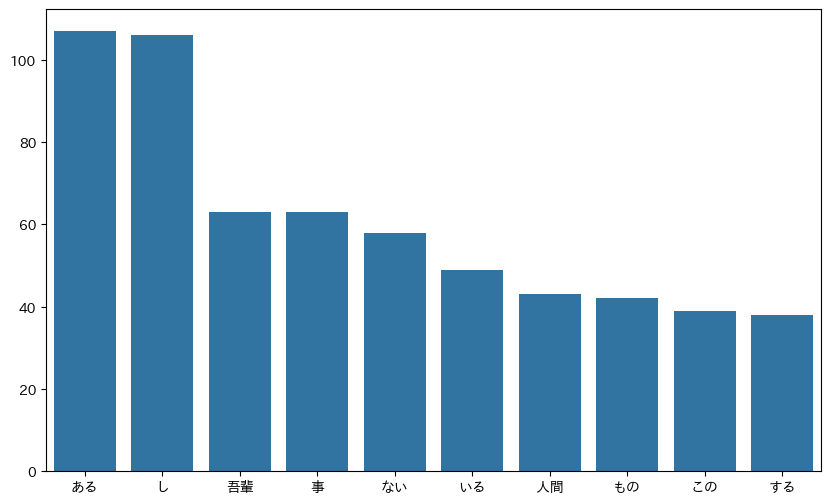

第4章: 形態素解析#
夏目漱石の小説『吾輩は猫である』の文章 (neko.txt) をMeCabを使って形態素解析し, その結果をneko.txt.mecabというファイルに保存せよ. このファイルを用いて, 以下の問に対応するプログラムを実装せよ.
なお, 問題37, 38, 39はmatplotlibもしくはGnuplotを用いるとよい.
30. 形態素解析結果の読み込み#
形態素解析結果 (neko.txt.mecab) を読み込むプログラムを実装せよ. ただし, 各形態素は表層形 (surface), 基本形 (base), 品詞 (pos), 品詞細分類1 (pos1) をキーとするマッピング型に格納し, 1文を形態素 (マッピング型) のリストとして表現せよ. 第4章の残りの問題では, ここで作ったプログラムを活用せよ.
import MeCab
mecab = MeCab.Tagger()
with open("neko.txt", "r") as f1, open("neko.txt.mecab", "w+") as f2:
lines = f1.readlines()
for text in lines:
result = mecab.parse(text)
f2.write(result)
with open("neko.txt.mecab", "r") as f:
lines = f.readlines()
nlist = []
for text in lines:
ndict = {}
suf = text.split("\t")
if suf[0] == "EOS":
continue
if len(suf) > 1:
tmp = suf[1].split(",")
ndict["surface"] = suf[0]
if len(tmp) <= 7:
ndict["base"] = suf[0]
else:
ndict["base"] = tmp[7]
ndict["pos"] = tmp[0]
ndict["pos1"] = tmp[1]
nlist.append(ndict)
for item in nlist[:10]: # Due to file size constraints, the output is limited.
print(item)
{'surface': '一', 'base': '一', 'pos': '名詞', 'pos1': '数詞'}
{'surface': '\u3000', 'base': '\u3000', 'pos': '空白', 'pos1': ''}
{'surface': '吾輩', 'base': '我が輩', 'pos': '代名詞', 'pos1': ''}
{'surface': 'は', 'base': 'は', 'pos': '助詞', 'pos1': '係助詞'}
{'surface': '猫', 'base': '猫', 'pos': '名詞', 'pos1': '普通名詞'}
{'surface': 'で', 'base': 'だ', 'pos': '助動詞', 'pos1': ''}
{'surface': 'ある', 'base': '有る', 'pos': '動詞', 'pos1': '非自立可能'}
{'surface': '。', 'base': '。', 'pos': '補助記号', 'pos1': '句点'}
{'surface': '名前', 'base': '名前', 'pos': '名詞', 'pos1': '普通名詞'}
{'surface': 'は', 'base': 'は', 'pos': '助詞', 'pos1': '係助詞'}
31. 動詞#
動詞の表層形をすべて抽出せよ.
verbs = {item["surface"] for item in nlist if item["pos"] == "動詞"}
print(verbs)
{'略し', '打たし', '注ぎ', '運ぶ', '言い掛け', '任せ', 'すくい出し', 'なっ', '畳む', '違わ', 'し', 'やれ', '行わ', '誇る', 'うかがう', '振り翳し', '送っ', '云い放つ', '放さ', '引き籠る', 'さがし出す', '貰っ', '利き', '驚かす', '懸り', '溢れる', '端折り', '願おう', '成れ', 'あっ', '捲い', '引っ込まし', '発する', '踏む', 'あばれ', '犇く', 'がたつく', '写っ', '繰り返す', '行きゃ', '羨む', '分りゃ', '呑む', 'うめろ', '凹ん', 'ござら', 'つまむ', '呼びかけ', '来る', '引越す', '突く', '鳴らす', '睨め返し', '知れん', '笑', '出来上っ', '焦慮る', '洗っ', '潜り込ん', '寝転ぶ', '立て籠っ', '極める', '動い', '享け', '転ずる', '始まる', '盛り立て', '飛出そう', '保つ', '巫山戯', '洩らし', '持ち', '聞き出し', '持ち上げる', '通り過し', 'のむ', '乞わ', '喜ぶ', '貪る', '見違える', '滑り込む', '振り撒い', '煮出し', '分っ', '学ぶ', '当り', 'なき', '縫い合せ', '迷っ', '嘯い', '承っ', '論ずる', 'のぼら', '売る', '尋ね', '聞き直す', 'しまい', '突き込ん', '練りあるく', '逢い', '極まっ', 'ござい', '下がる', '造る', '吸い出し', '立ち返っ', '貫く', '雑ぜ', 'いがみ合い', '捕ら', '続ける', '交り', '起き', '順っ', '捨ておく', '裂き破っ', '遊ん', '勤め', '集め', 'もてなす', 'かける', 'はね除け', '懸る', '見よ', '対する', '去る', '書き散らし', '立ち至り', 'こぼれ', '捻り出し', '蹲踞まり', '覗き込み', '怠たっ', 'よっ', '恃ん', '指す', '痛み入る', '下ら', '浴びる', '包む', '至る', '怒っ', '入れる', '剋する', '巻く', '見すまし', '出かさ', '曇っ', '捕れ', 'きかえ', '描き出さ', '馳け回っ', '寄ら', '傭う', '抜き', '立ちかける', '延び', '沈ん', '角張っ', '打ち殺し', '下る', 'わから', '消え失せ', '萌す', '振り落し', '差し出し', '連れ', 'からん', '馴れ', '開き直っ', '眠れ', '通り越し', 'はれ', '異っ', '重なっ', '廻わる', '知る', '罹り', '怒鳴りつけれ', '起さ', '突張っ', 'ぬけ', '下さい', '進む', '係わり', '吹か', '立ち帰っ', '待ち受け', 'よッ', '比べ', '泣き立て', '割っ', '履い', '咲い', '向っ', '決める', '貰わ', '斃れる', '釣る', '退い', '充たす', '攫ん', '変ら', '睨み合っ', '落ちつい', '撫で', '払わ', '勝て', '住ん', '考え付い', '恨も', '隔て', '撰っ', '驚かし', '慣れ', '負け', 'とりゃ', '住む', '置い', '抛り出す', '見', '損なう', '任ずる', 'いら', '蓄える', '填める', '引込', '訳し', '限る', '考え出そう', '顧みる', '驚かさ', 'やろう', '承わら', '斬っ', '開き', '行う', 'える', '漲っ', 'しゃべる', '組ん', '直る', '括り付け', '掻きむしる', '焚き出さ', '取らし', '見合せよう', 'あたわ', '奏する', '用いる', '撃ちとっ', '印し', '抛り込む', '割り出し', '伏せっ', '引き続い', 'ひねくり', 'のしかかる', 'とりかかり', '似合わ', '涼み', '損なっ', 'かき', 'くれる', '携え', 'やり込め', '描く', '壊し', 'ふくらま', '云う', '撮っ', '跳ねのけ', '見送っ', 'ほり', '寄っ', 'しろ', '呑み', '撞く', '乗っ', '飛びつい', '容る', 'めぐらし', '磨り潰し', '通さ', '拝する', '嵌め', '言い触らす', '動き', '及び', '告げん', '落ちる', '吹き散らし', '望み', '陥る', 'つとめ', 'ござっ', 'わかる', 'いらっしゃれ', '受け取らし', 'ひそめ', '失せる', '下っ', '伺えれ', '追う', '分る', '激し', '真似', 'やむ', '振う', '口走る', '飛ぶ', '躍っ', '踏み潰し', '務まる', '出来上る', 'やれる', '繋が', '越す', '作ろう', '掛ら', '逢わ', '並べる', '付い', '日暮れ', '復し', '吸取り', '喜ん', '移ら', '押しつけ', '曲っ', 'かる', '掛', '吹きかけ', '極め付け', '起し', '読みとばす', '見知り', '砕けよ', '名づけ', '向け', '破れ', 'なり', '覚め', 'つらまえる', '立ち上る', 'だす', '敵わ', '噛み切ろう', 'ゆるめ', '延し', 'だまっ', '塞ぐ', '冠せ', '吹い', '折れん', 'いやし', '動かし', '行', '卒え', '優る', '突っ伏し', '枉げ', '繞っ', '上がる', 'まっ', '陳べ', '奏し', '膨れ', '変ずる', '聞く', '切れ', '担ぎ込ん', '結び付け', 'しめる', '注す', '決しよう', '彫り付け', 'かん', '食べかけ', '返ら', '煩わし', 'なくなる', 'こし', '病ん', '揺れ', '這う', '降ら', 'つかん', 'ふい', 'こらし', '代っ', '構え込み', '叱し', '異なる', '引き摺り', '藉り', '惹く', '食いつく', '背負っ', '斬り付け', 'くべる', '給え', '揮っ', 'くん', '書きつけ', '蒙り', '降り', '立つ', 'ぶんなぐる', '撲た', '出せる', 'のせ', '怒鳴り', '茂っ', '参ろう', '成る', 'まごつい', '逼る', '承わり', '買い込ん', '笑わ', '近寄り', 'くらむ', '着く', '放り出し', '解さ', '盛り込ま', '断わら', '申し込ん', '垂れ', '生', '圧し', '取れ', '崩す', '送れ', '担い', '出向い', '悩み', '流れれ', 'のべる', '撫でる', '反り返っ', 'つくし', '見下ろし', '仕入れ', '言っ', '死な', '亡くなっ', '利く', 'ほてっ', '魂消る', '投げ入れる', '引き渡し', '印せ', '見習う', '恃み', '食い付い', '響け', 'ひろげる', '聴き', 'やり直す', '縮ま', '欠く', '抜く', '逃がす', '切り付ける', '仆れる', 'やめよ', '弁じ', '溺れ', '凌ぐ', 'する', '忍ばせ', 'おどかす', '尽し', '打ちやら', '脱し', 'くっ付い', '出ろ', '言い付け', '挟ま', 'すかし', '怒鳴る', '陥れ', '縛せ', '生じ', '片付ける', '呑み込む', '問い掛ける', 'づい', '言い棄て', 'いざっ', '売り', '蒔き', '翳す', '貰おう', '設け', '苦しむ', 'あしらっ', '重ん', '勝たし', '吹きつけ', '吹き付ける', 'ひる', '映ずる', '惚れる', 'まぜ返し', '帰ろう', '据え付け', '澄まし', '落ちれ', '戻ら', '癒す', '拾え', '使う', '産まれ', '絞る', '読める', 'やみ', '考', 'いただく', '迷い込ん', '振っ', '卸し', '見計う', 'あやまる', '古ぼけ', '帰ら', '疲れ', '先っ', '蹶い', '応', '振ら', '縮める', 'かけ下り', '惜しめ', '致さ', '溶かし込ん', '下すっ', '捲か', '食べ', '考える', '云わし', '食う', 'しまわ', '擦り', '現われ', '見せびらかし', 'あつまっ', '思い切っ', '癒やす', '欺さ', '足そう', '書き入れ', '追い懸け', 'かむ', '忍び込む', '進め', '惚れ込ま', '催おし', '喰う', '流行り', '見つかる', '向き直っ', '起こし', '盗む', '囓ん', '承ら', '差し支える', '易え', 'かわれる', '愛し', '引きくらべ', '有ろう', '横わり', '立て籠る', '歩行く', '思いつい', '痛み', '間違っ', '這入れ', '切り抜けよう', '択ば', '減れ', '構える', '避ける', 'いる', '参っ', '片付い', '巡っ', '測る', '有れ', 'いか', '滑ら', '合わせ', '取上げ', '遠から', '突きあげ', '集まる', '突き', '試し', '分から', '了え', '倚っ', '号し', '潜り', 'からかい', '疑っ', '撫でおろし', '食い', '潰れる', '繰り返し', '偸み', '充たさ', '坐せ', '立た', '吐く', '敷き', '聞き分ける', '誘い出し', '構い', '遊ばし', '称せ', 'おろし', 'たで', '返し', '来い', '糺し', '廻れ', '見つかり', '執っ', '奪っ', '忌み嫌っ', '飲み込む', '敷い', '罵しる', '乗じ', '這入れる', '拾い', 'ともっ', '脱する', '見渡す', 'はたき落す', '突こう', '躍らす', '使', '救い出し', '飲み込めん', '裂き', '休む', '語る', '踏張る', '畳み込ん', '取り計い', '加わっ', 'まがっ', '漂う', '騒い', '見る', '暮れかかる', 'いたす', '困ら', '上がろう', 'わかれ', '敬い', 'つかえる', '企だて', '真似る', '迷付い', '怪ま', '食い欠き', '就き', '降りる', 'つかれ', '恋っ', '描き', '振わ', '助かり', '慰む', 'すう', '述べ立てる', 'かわら', 'あこがれ', '潰れ', '向ける', '驚ろく', '重ねる', '帯び', '頂い', '作っ', '書こう', '流れだし', '片付け', '騒が', '成し', '見えよう', '担ぎ出す', '発せ', '譲る', '括りつけ', '撓め', '切る', '下す', '透かし', '取り囲ん', '冷え', 'フケ', '引き返す', '暮らさ', '起る', '貰い', '整っ', '使わ', '死す', '流す', '挫い', '立っ', '草臥れ', '穿い', '突き当っ', '届い', '食おう', '溜まっ', 'たまえ', '近付く', '取り上げる', '障ら', '窶す', '溶かし', '刎ね上げ', 'かしこまり', '飛び上り', '振り立てる', '云いかける', 'しなび', '呼ば', 'おっしゃっ', '駆ら', '探し', '落ちつき', 'たなびき', '働らき', 'まじり', '衒い', '痛ん', '這っ', '尽', '割る', '覚し', 'ととのう', 'きまっ', 'もやる', '終り', '損する', '跳ねかす', '在り', '向う', 'こすり', '片づけ', 'ころがり', '抜い', 'すべれ', '授ける', '伺っ', '帰れ', '欲し', '溯っ', '笑い崩れる', 'せ', '洩る', 'うつし', '経っ', '清め', '唱う', '忘れろ', '願う', '生やし', '窮する', 'あばか', '誘い出す', 'ふくれる', '刻み', '増し', 'いこう', '騒ぎ', '吹き出す', '抛り', 'ぼけ', '泳ぐ', '離れる', '叩き付ける', 'ぬくもっ', '恨む', '断わっ', '遠ざかる', '暴く', '読みかけ', '信ずる', '代え', '済ま', 'そらす', '止せ', '上す', 'わかっ', '端折っ', '聞き合わせ', '入り乱れ', '装い', '逃げ延び', '乗り出し', '書か', '伺う', '汚れ', '唸っ', 'こい', '草し', 'あったまり', '抱え', 'こすり付ける', '回らす', '鳴っ', 'だまる', '揃え', '飲む', 'つぐ', '困る', '目ざす', '行か', 'きめ', '当る', '出会っ', '濡れる', '減り', '心付く', '繋い', 'あい', '繰返し', '直す', '待た', '取りかかる', '含ん', '縮まる', '祟っ', '思い返し', 'かぎっ', 'あける', '交る', '終え', '逢っ', '泣かし', '致そう', '積ん', '吟じ', '罹っ', '極っ', '靡く', '立ち行く', '試みる', '掻い込ん', '響き', '点じ', '干し', '敲い', '呑み込ん', '停まる', 'はずし', '片づか', '皺枯れ', '仰せ', '分り', '被る', '有ん', 'かわれ', '禿げ', '迎えれ', 'あく', '着け', '登っ', '言', '打ち遣っ', 'ふくれ上がる', '輝やい', '離さ', '得れ', '取り落し', 'しまえ', '合わし', '敗れ', '張ら', 'いれ', '待ち合せ', '鋳', '上げる', 'あるい', '乗る', '吹かし', '免がれ', '寝転び', '知ろう', '癒り', '蔽う', '廻わし', '戦っ', '抱く', 'たたる', 'とりのけ', '追付こう', '打た', '眺める', '喜こん', '追っつか', '囃し立てる', '去ら', 'ける', '威張る', '持ち上がる', '抑え', '張る', '困っ', '参る', '燃える', '悟ら', '打っちゃら', '持ちかけ', '押し込め', '至らし', '問い返さ', '飲み下し', '触れ', '廃せ', '見付け', '云おう', '持ち上げ', '戴く', '被れ', '食い込ん', '乗ん', '乗らし', 'あつかっ', '云い', '始まっ', 'やっつける', '寄りつい', 'しらべ', '勝っ', '下れ', '称え', '寝込ま', '折れる', '申し込ま', '刺し通し', '付か', '気づい', 'かえ', '思い留まり', '縊っ', 'はずさ', 'くだけ', '引っ繰り返し', '振る', 'せり出し', 'かしこまっ', '習おう', 'つづか', '助け', '乗り', 'ぶら下げ', 'かくす', '突き付け', '立てる', '沸き上がっ', 'あがり', '知ら', '涸らす', '除き', '見詰める', 'めえ', '恐れ', '騒ぐ', '飛び上っ', '巡り', '追いつく', 'もらい', '吠え', '張り', '亡くなら', '抜こう', '置く', '投げ', '縫っ', '透し', '引き越し', '参り', '醒ます', '見せる', '行け', '廻し', '縺れ合う', '担が', '限ら', '踏ま', 'くれん', '打ち殺す', '混ぜ', '這入ん', '立ち退く', '間違は', '分れる', '鳴い', '種', '研ぎ澄し', '剰し', '遊ぶ', '懸っ', '力め', '寄り付ける', 'ひやかさ', 'あてがえ', '変っ', '引込め', '振り向く', 'よる', '廻す', '凝らし', '聞き合せ', '足し', '合え', '取除け', '作る', '動ずる', '見張っ', 'いらっしゃい', '置か', '教わっ', '放り込ん', '逆上', '取り払う', '見上げ', '奉じ', '纏う', '勝れ', '採る', '契っ', '弁ずる', '出そう', '嗅ぎ', '渡る', '登ら', '変じ', '直っ', '使っ', '居ら', '続け', '飛ばさ', '分かる', 'はなち', 'つかまえ', '引き掻い', '輝い', '寝よう', '促し', '打っ', '吹き払い', '傾い', '怠っ', 'いただい', '振い落す', '見つめ', '打ち', '見つけ', '浮かし', '形どっ', '欠ける', '割り込む', '飛込め', '評せ', 'はめ', 'たて', '引きつけ', '開け放っ', '有し', '聞き及び', '引き払う', '浮く', 'いそが', '差し引か', '衰える', 'ふくれ返っ', '焦れ', '持てあまし', '受け合わ', '浮い', '穿っ', '占め', '棄て', 'よごれ', '見詰め', '交わし', 'こなし', '吹きかける', '飾っ', '托し', '云えよう', '悔やん', '疑わ', 'やめ', '寄れ', '磨け', '捕まる', '押し通す', '捻る', 'もがけ', '食える', '引か', '隠れる', '間に合っ', '持つ', 'つかし', 'うる', '吸い', '立ん', '驚ろか', '引き直し', '休み', 'しまう', '切り抜ける', '綯っ', '絞め', '磨り', '形づくる', '喰い下がっ', 'ござんす', '買い被っ', '焼け', 'のしかかっ', '云いかけ', '泣い', 'あせっ', '思う', 'かう', '見做せ', 'おっ', '確め', '結い繞らせ', '誂える', 'あら', '読ま', '破っ', 'ととのっ', '及ぶ', '遠のい', '生きる', '見捨て', '濡れ', '見せよう', '読み出す', '膨れ返っ', '省け', '嚇かせ', '云い放っ', '謡わ', 'くれれ', 'とれ', '歩行い', '取り出し', '忍ばし', '留ら', 'あるけ', 'ゆか', '伺おう', '取り寄せ', '折ら', 'よそう', '収める', 'あまる', '待ち構え', '鳴らし', '弾い', '頼み', 'のぼる', '入る', '許す', '引き較べ', '超し', '画い', 'やっつけ', '為す', '限っ', '割り切れる', '貰', 'すぎる', '惹か', 'ほのめい', '途切れる', '絶っ', 'こしらえ', '忍ば', '観る', '上っ', '問う', '通し', '添う', '乱す', 'やっ', '事足る', '売っ', '叩い', '云わ', '仰ぎ', '掘っ', '服せ', 'おこす', '張りたて', 'かく', '消え', '洩らさ', '入ら', 'しむ', '植付ける', '磨り上げる', '引い', '用い', '据', '好む', '揉ま', 'たつ', 'くずれ', '怪しん', '浮き', '終る', '懸ける', '降り込ん', '応ずる', 'はやる', 'とどめ', 'ごねる', '抜ける', '遺す', '言いつけ', '乱れ', '生き', 'ひっくり返し', '光る', '抑えつける', '求め', '存し', '受け', '詫び', '向き直る', '振りむく', '憂い', '欲する', '始める', '吹き寄せ', '通りかかっ', 'むけ', '頼ん', '詰め込む', '近づく', '添え', '臨め', '説き聞かし', '逼っ', 'すくん', '抗する', '已む', 'いわ', 'つけよう', '教える', '弾じ', '褒める', '弾ずる', '止めよう', '命ずる', '喰わ', '及ぼう', 'のばし', '寝ころん', 'のしかから', '開く', '吹き出し', '諦め', '生え', '倍し', '改まる', '飛び込ま', '啓し', 'おくっ', '浮ば', '引っ込ん', 'つん', '踏み込む', '笑える', '促がす', '検べ', '苦しん', '出直し', '出逢っ', '観', '働', '間に合い', '討とう', '曝く', '進める', 'なれる', '禁ずる', '係ら', '期す', '並外れ', '結い', '埋っ', '逢う', 'つかみ', '流れ出す', 'たっ', '余ら', '悟る', '尖ん', '怒ら', '聞きつけ', '引きずり', '掛る', '置', '殺す', '目立っ', '受け取ら', '釣ら', 'こじ開ける', '寝つき', '捲く', '立ち', '失う', '打殺さ', '縛り付け', '用', '肥り', '滅す', '罵り合い', '鳴らさ', '踏み', '辱', '向か', '度し', '返えし', '律すれ', '載せる', 'あてつける', '延べ', '降る', '届く', '引きあげる', '間違え', '廻る', '通り抜け', 'ならん', '見舞う', '怒り', 'ふる', '下し', '煎じ', '答え', '済まし', 'きせ', '答える', '見出す', 'かかえ', '因っ', '注ぎかけ', '生れる', '寝そべっ', '乗し', '捕まっ', '引き寄せ', '暮れる', '雇っ', '打ち開ける', 'かかる', '慢じ', '踞る', '掛れ', '後れ', '著わそう', '浮かれ', '抓ん', '打ち解け', '捧げる', '逃げ惑う', 'み', '寝かし', 'ねじり', '極め込ん', '疑う', '争っ', '恐れ入っ', '咽', '伴れ', '崩れ', 'むすん', 'ねる', '鳴り立て', '積ま', '巻き込ま', '絶え', '行ける', '保っ', '癒る', 'つらまえ', '悩まし', 'とる', '出来上がっ', '泣き', '見えん', '洗う', '買っ', '聞き噛っ', 'う', '眺め', 'しゃくい上げ', '逝い', '解きすて', '絶つ', 'ゆ', 'ふさい', '立ち留っ', '受ける', '見做し', '洒落れ', '運ん', '責める', '振り', 'きし', '悟れ', 'もっ', '明けれ', '詰ら', '噴き出し', 'ぱくつく', '堪り', '越し', '了り', 'すぼめる', 'はち切れる', 'あつまる', '呑ま', '詰め', '逃げる', '出来る', '消え去っ', '磨りあげ', '連れ添う', '追払っ', '装っ', '付け', '召し上がら', '飾る', 'つき', '仕ら', '起き直っ', '合っ', '起こそう', '嫌う', 'なやん', 'かかわる', '揃っ', '取り合わ', 'とまっ', '込む', '思い掛け', '成っ', 'ほのめかす', '沈み', '心付か', 'もぐり込ん', '触る', '這い出そう', '存する', '震わせ', '吐き', '初める', '歩い', '寝込ん', '勝る', '上がれ', '込ま', 'もぐる', '立ち上っ', 'ぬける', '浴し', '飾り付け', '飛び離れ', '習い', '埋め', '置け', '知れよう', '突き出し', '見渡し', '変りゃ', 'ちょろまかし', '立て切っ', '噛ま', '唱え', '比べる', '移っ', 'こり固まっ', '済ます', 'ほてる', '剥げる', '突き通し', '始め', '感じ', '届け出る', '捩じ向く', '殺せ', '対い合う', '上がら', '生き延び', '明け放し', '潜っ', '折れ', '寄り付く', '広げ', '転がっ', '張り詰め', '聞かさ', '飛び出し', '焼か', 'なる', '押しやり', '起せ', 'つぶやい', '対し', '廃そう', '寄せ', 'おくれ', '伝える', '漕ぎ付け', '奪い', '踏張っ', 'はらっ', '揉ん', '適する', '起つ', '帰し', 'みよう', 'あるく', '重ね', '授け', '放し', '留まる', '掘り', '化ける', '在る', '切り抜か', '笑い', '禿げる', '洩らす', '置き', '捲き上げ', '見せ', '念は', '経', '打ち崩し', '出で', '泊っ', '押し出し', '競っ', '押し倒し', 'つく', '張っ', '起き上がる', '刺し', '掛け', 'いき', '控え', '塗り消し', '受け取り', '欠い', '挟ん', '免かれ', '計る', '捏ね', '遺し', '褪め', '預っ', '掻い', 'まつわっ', 'むき出し', '畏まっ', '弾く', '真面目くさっ', '済ん', '釣れる', '関する', '吹き付け', '戴い', '考え直し', 'はぐっ', 'つっかけ', '貰う', '聞き返す', '立ち寄っ', '引き据え', '心掛け', '憚かる', '下げ渡し', '出し', '引き寄せる', '離す', '承われ', '天降っ', '言い', '据える', '嚇し', '喰い', '周章てる', '通り抜ける', '乗り出す', '償おう', 'だっ', '吸い付い', '話さ', '借りる', '這出し', '撲っ', 'できる', '取り掛る', '越せ', '譲っ', '癒ら', '出れ', '浮かば', 'やめよう', '出来', '致し', '催し', 'たた', '濁す', '驚ろき', '振り返る', '売渡す', 'わかれる', '講じ', '載っけ', '了る', '書き付け', 'ふざけ', 'とびさり', '整え', '向い', 'のしゃ', 'じゃらし', '出合っ', '誘う', '取りつい', '言いかける', '近付い', 'もたし', 'あつかい', 'あやまれ', '押し', '下がろう', '怺え', '言わ', '併せ', '好み', '仰向い', '引きかえそう', '更け', '飛び込め', '帰さ', '尋ねあて', '思い出せ', '殖え', '働く', '寄りつか', '懸け', 'めさ', '飛び越える', 'なさ', 'とぼけ', '話し', '見傚さ', '分捕っ', '決せ', '話せ', '叶っ', '着る', '這い出し', '窺う', 'いえ', '射る', '超える', '着換え', '聞える', '撚っ', '引き籠っ', '飛びつき', '祝う', 'おっしゃる', '反り返る', '失し', '任じ', '頻り', '参ら', '話す', 'きっ', '連れ出さ', '打ちゃ', '養う', '呼びつけ', 'いける', '関ら', '忌む', 'からかわ', 'ふっ', '勧め', '跳ね返し', '残る', '弾き', 'おっしゃろう', '防ぐ', '感じ入る', 'なげ込ん', '登り', 'しら', '探がし', '許し', '推し', '破れる', '懸ら', '好い', '拵え', '転がれ', 'じらせる', '巻き付け', '売り飛ばし', '退治', '使おう', '好か', '伍する', '寝る', '併べ', '引張る', '聞え', '捨て', '並べ立て', '仰ぐ', '蒔い', '祝い', 'かす', '誘い', '踏み潰す', '舞い込ん', '盗ん', '鑑みる', '案ずる', '起き直り', '避け', '減ら', '読み', '喚び起す', '施し', '供える', '舐め', '振り向い', '凹まし', '引きずっ', '了し', '起り', '忍び入り', '食い殺す', '直ら', '縫う', '割き', '給う', '立', '重んじ', '焼い', '迎える', '退け', 'やらし', '踊り', '圧し潰し', '知り', '換え', 'たまっ', '冷える', 'つかっ', 'せい', '打ち入る', 'おこう', '承る', '召し上ら', '感じる', '嗅い', '勤まる', '打ち消す', '滑べっ', '酔っ払っ', '持ち直す', '収めん', '召し上っ', '窶し', '借り', '弾こう', '誂え', 'いっ', 'くれ', '出掛ける', '結べ', '滑らし', '知らし', 'たたき', '積みかさね', '下さら', '取り上げ', 'ぶら下げる', '畏る', '合わせる', '掛ける', '描き出し', '忘れ', '慕っ', '説き立てる', 'つまん', 'おこせ', '繙く', '撰り', '申す', 'ゆく', '飲め', '着', 'きめ込む', '落す', '描い', 'いよう', '詫び入る', '綻びる', '置ける', 'よし', '向わ', '開ける', 'あらし', '殺さ', '退ける', '引き返し', 'つき合わ', '引き付け', '視る', '担ぐ', '帰そう', 'いじめ', 'おっ立て', 'ならべる', '呼ぶ', '敲き', '追い込ん', '捉まる', '係わる', 'つくっ', 'きか', '応える', '引ったくっ', '残ら', '揉み', '立てよう', '見よう', '包ん', '叩き込み', '過ぎよう', '披い', 'くっ', '捉まえ', '思い出し', '極め', '片づい', '湧い', '待たさ', '引け', '似', '乗ら', 'つつま', '話せる', '能う', '動こう', '廃する', '寝転ろ', '驚きゃ', 'いらっしゃる', 'のさばり出', '表わし', '引き下がる', '失わ', '温る', '自惚れ', '云い切り', '坐り込ん', 'かえし', '合う', 'かくし', '住み込ん', '留め', 'やま', '振り廻わす', '着か', '突き立て', '見ろ', '消える', '天降る', '当て', '噛む', '反し', '見下せる', 'あて', '縛ら', '慾張り', 'からかう', '繰返す', '聳え', 'うたう', 'ごまかす', 'すり', '磨っ', '飛び上がる', '叫ぶ', '覗き込む', '上り込む', '及ぼす', 'つくろっ', '出掛け', '生れ変っ', '威張っ', '残し', '縊れる', '燻っ', 'はずれ', '期せ', '弱り', '喰い下っ', '出逢え', '立てれ', '読む', '縊る', '食い殺さ', '蹴ら', '認め', '払っ', '衒う', '引っ張っ', '洒落', '及ば', '始まら', '穿く', '蒙っ', '打ち留め', '響く', '煮え', 'とん', '済む', 'おる', '振りかけ', 'くふ', '召し上がれ', '尾け', '拡げ', '貼っ', '明い', 'ぜら', '暮し', '死ぬ', '荒立て', '買おう', 'いろ', '聞き', 'かぶせ', '信じ', '眺め暮らし', '扱か', '起ら', '受け合え', '愛す', '屠ら', 'いらしっ', '切り開い', '損じ', '攻め', '立ち上がっ', '持て余す', '散っ', '栄える', '環る', '張り付ける', '来し', 'しめつける', '取り極め', 'まかり越し', '掻き', '認', '覚っ', '覚まし', '鳴く', '越さ', '暮れれ', '砕け', '向く', '撓る', '講ずる', '糺せ', '飛び上る', '尽くさ', '馳け込ん', 'たくっ', '奪わ', '奮っ', '申し上げ', '埋合せ', '立ち留まっ', '考えつい', '取れれ', 'ふり上げる', '踰える', 'すれ', '聞き返し', '適し', '試みよう', '救っ', 'たかる', '告げる', 'よみ', '負え', '睨みつける', 'きい', '掻き散らし', '手こずっ', '向が', '振い', '聞きゃ', '数え', '打ち出し', '懲らしめ', '噛ん', '聴い', '教えろ', '引き抜く', '比すれ', '丸め', '戒め', 'ちょん切っ', '語り', '振り返っ', '見合せ', '交ぜ返す', '乾かす', 'こまっ', '引き戻し', '通る', 'とろけ', '飛び込まし', 'きら', '洗え', '曝さ', '恋い', 'からげる', 'つかみ合い', 'あつめ', '傷け', '伺わ', '弱ら', '困らし', '踊っ', '隠し', '遊び', '構っ', 'ほのめかし', '晴れ', '歴', '通じ', '通す', '暮らし', '据え', '通せ', '拾う', '佯り', 'かきまぜ', '遮っ', '祭り込ん', '御座い', '来ら', 'かため', '思い込ん', '思いやら', 'やらあ', '持ち上っ', '促がし', 'しまい込ん', '投げ出さ', '捕える', '流行っ', '曲る', '見立て', '落し', '飛び込む', 'しゃくい', '噛み', '立ちすくん', '劣っ', '云や', '取り扱い', 'はいっ', '尋ねる', 'ぶらさげ', 'かなう', '営む', '受取る', '突き飛ばし', '示し', '供し', 'こきゃ', '還す', '偸ん', 'すり抜け', '褒め', 'どやさ', '化する', '解く', '忘れる', '乗り込ん', '捧げ', 'け出し', '持っ', '受け取れ', '敷か', '読み直し', 'かたちづくっ', '沁み', 'くるみ', '凝っ', '窘め', '保とう', 'まぜ返す', '交っ', '割り出さ', 'ござんせ', 'かない', '乗り廻し', '得ん', '押し出す', '恐る', 'かき上げ', '切り落し', 'とり', '知れる', '来よう', '娶る', '覗い', '塗っ', '振り廻し', '有り', '打ちやっ', '放と', 'はじめる', '這い上っ', '恐れ入ら', '拾える', '帰り', '取る', '通っ', '磨い', '滅する', '引き起す', '差し出す', 'かしこまる', '説き落し', '出よう', '利い', 'くる', '飛び込み', '有っ', '述べたて', '仕立てる', 'わける', '打ち落す', '云え', 'くばり', '奪い合っ', 'だし', 'かか', '出直そう', '下り', '発し', 'とりとめ', 'かき散らし', 'まくっ', '垂れる', '飛び下り', '初め', 'け出す', 'かくそう', '突き戻す', 'おどる', '馳け込む', '移る', 'すくっ', '付き', '飛び', '属する', '許せ', '已めろ', '浸ら', '承わっ', '降っ', '泳い', '生かし', '伝わる', '溜め', 'ならべ', 'うなされる', '出会わし', '話そう', '願い', '歩き', 'しゃべり', 'なすっ', '取り乱さ', '蒙ろう', '利か', '生れ出で', 'あがる', 'まき', 'はなれ', 'つけれ', '蒙る', '達し', '転がり', '写し', '抜き取っ', '見計っ', 'つめ', 'すべり落ち', '余す', '傚っ', '堪え', 'から', '利かし', 'とまる', 'なぐさみ', 'かえっ', '起こさ', '載っ', '凝らす', '突きつけ', '続か', '取払っ', '頼む', '指し', 'おき', '構え', '傾け', '通う', 'ござる', 'さまし', 'なぐる', '削っ', '捕え', '追い出し', '引く', 'おっしゃら', '離れ', 'いけ', '上り', '壊れる', 'つる', 'たまり', '飛ば', '歩み寄っ', '逃げ', '引き裂い', '生ぜ', '失せ', 'くぐっ', 'ねじる', 'づく', '渡り', '坐り', 'しゃべり立てる', 'かこつ', '腐っ', '出張っ', '思え', '綴っ', '見せびらかす', '追っ', '巻き納め', '申し込も', '画き', '勝つ', '較べる', '抓み', 'おっしゃれ', 'しまっ', '抜け出し', '落ちつか', '飛び越え', '閉て', '括っ', '解する', '劣る', '喰べ', '過ごす', '叱りつける', 'おどかさ', '陥らし', 'つけ込ん', 'ぎっ', 'ふかし', '被っ', '舞い戻っ', '頬張る', '増す', '逆っ', '抛り出し', '追っかける', 'むける', '驚く', '衰え', '施こ', '引っかかっ', 'くらし', '打つ', '見くびら', '応じ', '然る', '遊ばせ', '反っ', '喚び起さ', '背く', '歩く', '説く', '反りかえっ', '迎え', 'あらわれる', '刈っ', '尖がっ', '取り払っ', 'のけ', '布か', '読め', 'よそい', '練りかため', '引っ掻い', '売り捌い', 'におっ', '滅入っ', '恃める', 'ひねくっ', '言いあらわせ', '亡くなり', '揚げ', '湧き出る', '逐っ', '差し支え', 'もらわ', '盛っ', 'つかまっ', '取り立て', '中っ', '生れ', '息ん', '出る', 'ねじ上げ', '立ち登る', 'き', '覚める', '塗りつけ', '斃す', '突っつい', '食っ', '守っ', '得ろ', '滑っ', '分れ', '擦り付け', '吐き出し', '極る', '退く', 'きく', '刈り込ま', 'しかる', 'よす', '外れ', '戻る', '思い焦がれ', '結え', 'どい', '織り出し', '飽き足ら', 'たとえ', '改め', '越え', '得', '張れ', '罷り', '入っ', '足ら', '押し返し', 'かなっ', '目立つ', '詐る', '蘇える', '立て通す', '訳す', '凭し', '撲て', '踏み付け', '合せる', 'こじ', '囲ら', '残っ', '纏まる', '疲れる', '飛び出す', '渉ら', 'こびりつい', 'ひやかし', '食わす', '飛び込ん', '生える', '積み', 'あけ', '推せ', '労ら', '包み', '通り抜けよう', 'すく', 'したがっ', 'ころば', '転がる', '光ら', '返っ', '撰し', '上がっ', '弄し', '抛げ', '示す', '甘える', 'あき', '書き', '引き下がっ', '陥っ', '近づい', '負っ', '流れ込む', 'のける', 'こぼれ落ちる', '乗せ', 'ほめる', '突っ込ん', '任せる', '詰る', '静まり返っ', '翳し', '起っ', '述べ', 'とろう', '投ぜ', '図ら', '奉る', '記さ', '出あるき', '返す', 'うて', 'ふくらまし', '放す', '上げ', '溜っ', '沁む', '接い', 'もらっ', '勧める', 'しくじっ', '計ら', '儲け', '拵らえ', '返る', '済し', '覗く', '痛み入っ', '訴', '洗い', 'つい', '転じ', '書き流し', '覗き込ん', '帰', '暮さ', '走ら', 'たのま', '止め', '降さ', '見做さ', 'あせる', 'なりゃ', '浴びせかける', 'おけ', 'ぬか', 'つくり', '関し', 'やめる', '好ま', '瘠せ', '跳上る', '申し立て', '断わる', '潜れ', '動く', '睨め付け', '出', '余る', '曝し', '焚い', '引き上げ', '冷かし', '働い', '肥っ', '挙げ', 'さすっ', '得る', '飛', '務める', '仕上がっ', '這入ら', '切っ', '惚れ込ん', '捕れる', '作り上げ', '叱る', '寝転ん', '磨る', '引き掻く', '出来れ', '雇わ', '出懸け', '結ん', '切らし', '下さる', '過ぎ', '憤っ', '足り', '耽る', '直さ', '出直す', 'あらわす', '調べ', '滑れ', '倦ん', '期し', 'いただか', '下され', '仕切っ', '群がる', '貼りつけ', 'あらわれ', '冷やかす', 'くずさ', '結っ', '寄せる', 'こなせ', '誘っ', 'すてる', '疲らし', '斬る', '送ら', '閉じ籠っ', '躍り込ん', 'くるみ込む', '追いやっ', '刈り', '廻っ', '響い', 'ひっくり返る', '依る', '驚ろい', '感じ入っ', '燻り返っ', '切り破っ', '仕', 'もがい', '引っぺがす', 'こびりつく', '劃し', '取っ', '引っ張り', '稼い', '伝わっ', '挑む', '律する', '交ぜ返し', '挙げる', 'やけ', '吸っ', 'あらわし', '弱っ', '垂れん', 'いりゃ', 'あれ', '追い廻し', '食わし', 'おける', 'よむ', '害する', '使い分け', '飛びつく', '伏せ', '植え付け', 'ひるん', '沈めろ', '捕り', 'あばれる', '立ち上がる', '存じ', '直そう', '踊ら', '振りむき', 'じれ', 'さめ', '覚える', '聞き惚れ', '染め出し', '頼もう', 'くらん', 'なら', '張り付け', 'よべ', '持て', '渡っ', '傾ける', '下さっ', '吹き', '叱りつけ', '襲う', '集まっ', 'はね', '吊るし', '切り落す', '俯向い', '逢え', '仕ろう', 'つづける', '送', 'かかっ', '洩り', '盗ら', '奢り', '醒め', 'もぐっ', '聞か', 'のび', 'ぶっ切ら', '減っ', 'おっしゃい', '考えれ', '次い', '達する', '思い出す', '申し込', '従え', 'あらわせ', '引き受ける', 'いらせられ', '吐い', 'ふくらし', '揉み潰そう', 'しまおう', '吹き通し', '振り上げ', 'ねむり', '判ぜ', '舞わし', '抛っ', '売れ残っ', '踏み込ん', '省い', '付ける', '落ちつけ', '突き廻さ', '差出す', 'まて', '入り込ん', 'うたっ', '燃え', '捲き', '中る', '翻せ', '睨め', '落ち着く', '告げ', '試み', 'ねじ伏せる', 'あり', '通そう', '確かめ', '属し', '抜', '負ける', '論じ', '切ら', '入れ代っ', '腐る', 'こしらえれ', '費やし', '勝ち', '化す', '施す', '這い上る', '従っ', '飛び込もう', '張り上げ', 'どけ', '申し込む', '追払わ', '背か', '心づか', '走る', '証す', '含まっ', '引き込ん', '悟り', '拝む', '解い', '翻っ', '沈む', '籠める', '見抜い', 'すみ', '落とし', 'いいかけ', '作し', '腐れ', '弄すれ', '罵り返す', '考え', '加える', 'え', '湧き出で', '引き上げる', '取払う', '言い放っ', '譲ら', '了れ', '借し', '入り込み', '驚き', '過ぎる', 'とまら', '問い正し', '記し', '刻し', 'たまら', 'からかおう', 'へい', 'きれ', '作り', '愧じ', 'あろう', '反り返し', 'わめく', '違い', '跳ね返る', '曲がっ', '思い立っ', '嘆ぜ', '寄り添う', '逸す', '申し聞け', '引き込ま', '果さ', '合い', '魂消', 'たどっ', 'ぶらさがっ', '断っ', '濁っ', '瞬く', '抛り出さ', '持たし', '添える', 'そい', '平げる', '釣り合わ', '敬す', '問い', '押す', '照らさ', '取り寄せる', '帰っ', '拍っ', '食べる', '割り込ん', 'こなさ', 'い', '詰め寄せる', '拍つ', '見届け', '来れ', '和する', '延びる', '問い返す', '対っ', '乗り越す', 'すぎ', '逢える', '拝し', '罵っ', '慾張っ', '怒鳴っ', 'つまら', 'あげ', '与える', '鳴き', '抛出し', '立ち行か', '澄し', '究め', '剥がれ', '掻く', '改める', '問い返し', '狼狽え', '択っ', '乗り越える', '拭う', '取り殺し', '控える', '捏ね上げ', 'つけ加え', '酬っ', '合せ', '入れよう', '酬い', 'さげ', '飛ばし', '掻き寄せる', '抜か', '弾きゃ', '引き掻か', '途切らす', '通ら', 'たらし', 'いただき', '起きる', '害し', '挙っ', '隔っ', '来ん', '聳やかし', '略す', '押しかけ', '照らし', '流れる', '争う', '恃ま', '握る', 'ともす', 'かぶる', 'とめ', '這入り', 'にぶっ', '書きゃ', '守ら', '過ぎん', '呼び立て', '刎ね', '訴える', 'かかわら', 'さげる', '点ける', '喰いつく', 'かじっ', '傭っ', '浮ぶ', '浴びろ', '比し', '這い上り', 'おり', '押し合っ', '下げる', 'だまさ', '引っ張る', '作す', '休める', '伺い', '考え込ん', 'もらえ', '分ら', 'くべ', '受', '知れ', 'からまっ', '逸する', '拭い', '行き詰る', 'せしめ', '生ん', '見離さ', '急き込ん', '評する', 'ふれ', '申し合せ', 'ひねっ', '上がん', '通り過ぎる', '見廻っ', '逆らっ', '散らし', '行こう', '安んずる', '退治る', '読ん', '去っ', '果せる', '正し', '得よう', '引きうけ', 'あるか', '裏返し', 'いで', '了っ', '擦る', '通り', 'そり返っ', '絞め殺さ', 'ござんし', '申し渡し', '出さ', '這い込ん', '払い落す', '狂っ', '移し', 'こすりつけ', 'ほめ', 'さげん', '申し添える', '処する', 'しっ', 'やり過ごし', '待っ', 'ぶら下がっ', '就い', '察せ', 'もぎとる', '間に合わ', '買い', 'たたく', '窮し', '眠る', '賞める', '差し込む', '染み出す', 'おく', '分ける', '据わっ', '謁し', '許さ', '明け', '坐し', '企て', 'おら', 'むい', '枯', 'いう', '連れ出し', '考え込む', '折り', '逃がれる', '似合い', '聞き直し', '仰せつけ', '帰する', 'こぼす', '進もう', '目し', 'すん', 'かから', '食え', 'あつかう', 'わら', 'かわし', '期する', '追いかけ', 'たけ', '釣れ', '片付く', 'わし', '費やさ', '述べたてる', '削る', '消そう', '抱え込ん', '承り', '懸かっ', '御する', '問わ', '仕り', '膨らまし', '諦める', '生れつい', 'ぶら下っ', 'ござんしょう', '忍び', '動か', '煮', '惹い', '見廻す', '活け', '気取っ', '命ぜ', '突い', '覚ます', '名乗る', '差支え', '殺し', '下げ', '活かす', '嘲ける', '重なる', '拾っ', '決する', '制する', '律す', '造ろう', '仕込む', '当っ', '祝し', '込め', '歌っ', '養なわ', '余っ', '捌け', 'おどり', '平らげ', '偸む', '取り扱っ', 'かえる', '食み出し', 'ゆすれる', '握ろう', '寄り', '嘲り', '睡ら', '就く', 'づくる', '臨ま', 'くり', '眩む', '償わ', '醸す', '捉え', 'ぐっ', '好ん', 'でき', '起そう', '並ん', '具え', '着換える', '憚から', '申さ', '生れれ', 'もぐり込む', 'かき合せ', '飲ん', '焚き', '切り', '貼り付ける', '浴び', '叶わ', '説い', '起きろ', '坐っ', 'ぬから', '騒ぎ立てる', '助から', '寝つか', '縫いつけ', 'さえ', 'つかみ出し', 'こぼし', 'けっ', '見廻し', '落ちん', '持ち切っ', 'ばしっ', 'であるく', 'おい', '了', '出懸ける', '張りつめ', '平伏し', '飛び降り', 'ころがり落ち', '依っ', '掛っ', '叙し', '取り払わ', 'のめり', '果す', '掻き上げ', '訪う', '取りあげ', '勤まっ', '脱い', '思い浮べ', '噛み切れる', '寝', '要する', 'くっ付けよう', '差し控え', '割り切れ', '払う', '取り違える', 'なし', '素っ破抜く', '名づける', '逆立て', '窺っ', '兼ね', 'なす', 'やん', '引こう', '返さ', '取り去る', '打ち返し', '踏み出せ', '外し', 'もとめ', '終っ', '鳴か', 'すい', 'まかり', '問い正す', '叩き出す', '考え出し', '罵る', '造っ', '嫌っ', '違う', '崩し', '剥げ', '提げ', 'ころがる', '這入る', '凝り固まっ', 'かきつけ', '呑ん', '思い付い', '失する', '乞う', '仕る', '重んぜ', '見せろ', '舞わす', '起こす', '解し', '抱い', '載せ', '目する', '映り', 'くるまっ', 'あびせる', '建つ', 'すま', 'もた', '弾け', '定め', '立ち入っ', '騒ぎ立て', 'つけろ', '見おろす', '衝く', 'もぐれ', '成り', '覆せ', '動かさ', '潰す', 'かたどっ', '受け合う', '上り込ん', '陥れる', '躍り', 'ひく', 'いいあえ', '備われ', 'やる', '追い懸ける', 'なぐりつける', '舞い下り', '振え', '現われる', '達せ', '浮き出し', '恐れ入る', '通れ', '引き揚げ', '見合わせ', '望ん', 'コセつく', '越える', '出掛けよう', '漬け', '訴え', '構う', '廻わす', '寝れ', 'しから', '引き', '働け', '動け', 'ねばり付く', '憚り', '拭き込ん', '熱し', 'とら', '遂げ', '漕ぎつけ', '鳴る', '釣り合う', '減ぜ', 'づくっ', '届か', '出す', '乱れ合う', '纏める', '飛ん', '関せ', '飲み干し', '奉っ', '放つ', '撚り', '移す', '叩く', '叩きつける', '喋舌り', '充ち', '怒る', '舂き', '乗り越え', '引き掻き', '力める', 'うたい', '感ぜ', '損う', 'さておい', '臨ん', 'だい', '厭き', '妨げ', '祈ら', '行く', '放っ', '挟まっ', '分け', 'きき', '飛び上がろう', '炊い', '飛び降りる', '責め', '然', '廃し', '磨り上げ', 'さす', 'かくれる', '究めよう', '待て', '冒し', '御し', '食い切っ', '諭し', '合し', 'こ', '引き越す', '置こう', '戻す', 'じらし', '吹き込む', '演じ', '送る', '削り取ら', 'く', '違っ', '待つ', '言う', '転げ落ち', '刈り込ん', '失っ', '引き起し', '打ち抜い', 'すべっ', '逆らわ', '弾き出す', '傾く', '過ぎれ', '積っ', '抜け', '知っ', '布い', 'あたる', '称する', 'いい', '召し上がり', '折っ', '間に合う', '覆う', '繰り返さ', 'すむ', '憤る', '薫ずる', '漏る', '詠ん', '味わう', '剃っ', '飲み', '働らい', '吐き出す', 'どやし付け', '伸し', '留める', '係わら', '引っ掛け', '脱ぎ', '結う', 'くらさ', '動じ', '斃れ', '躍る', 'なされ', '障わる', '演ずる', '近寄る', '命じ', '下がれ', '詰め込ん', '飼わ', '映じ', '泣か', '話しかける', '与え', '馴らし', '見透かさ', '差し', '進ん', '似合う', '顧み', '労する', '引張っ', '擦り切れ', '上る', '開け', '撰ん', 'のぼせる', '通ずる', 'つける', '習っ', '察する', '掘り出す', '馳けつけ', '教え', '恐るる', '死ね', '思わ', '守る', 'ひき', '於け', '容れ', '変え', 'なさい', '悟っ', '以て', '狭め', '着せる', '突っ立っ', '忍ん', '引っ張ら', 'しゃがん', '磨し', '破る', 'あか', '坐る', 'わかし', '悲しむ', '起き返っ', 'もらおう', '散る', '舞い込む', '恐れる', '穿つ', '背い', '胡麻化そう', '見える', '含める', '住め', '降りよう', '殖えれ', '叫び', '化け', '断わり', '習う', '振り立て', 'しきら', '飲ま', 'しい', '満ち', 'かけ', '下りる', '死に', '休ん', '済み', '拭く', '立て', 'いらしゃい', 'はりつけ', '流し', '見つかっ', 'さし', '弁じ立てる', '揚げる', '絞める', '帰る', '押しやる', 'す', 'とりかかる', '付く', '侵し', '潰せる', '恐れ入り', 'おひゃらかす', '亡ぼさ', 'もらう', 'あきらめ', '喫せ', '取り残さ', '見つかれ', '乗りゃ', '追い詰め', '切り上げよう', '明かし', 'こたえる', '嵌っ', '跨い', 'はやら', 'よごれる', '浮きあがる', '収め', '卜する', '結びつけ', '減る', 'やり込める', '拱い', '打て', 'たべる', '談じ', '障る', '投げ込む', '出せ', '迷わさ', '聴く', '下ろし', '落ち', 'ゆるん', '撫でおろす', '陣取っ', '光らし', '取りとめ', '釣っ', '暮す', '釣り込ま', '求める', '見向き', 'すまし', '鍛え上げ', '下がっ', 'つっ突い', '働らく', 'つまみ出す', '窺がう', '復する', '明け放っ', '追い出さ', '見習おう', '頼ま', '睨ま', '借せ', 'ふくれ', '集っ', '突懸け', '持た', '断て', 'ぶらつい', '思い', '見れ', '困りゃ', 'まえ', 'さ', 'おどろかさ', '有す', '続い', '差しかかっ', '塊まっ', 'そそのかさ', 'はみ出し', '跳', 'あきれ', '着い', '動かす', '賞め', 'はいる', '叫ん', '緩め', '焦る', '来', '痛め', '叩き', '砕い', '咎める', '止す', '及ぼし', 'つづけ', 'わかり', '教', '生き過ぎ', 'いたたまれ', '押し通そう', 'ひねくる', '抓ま', '焦っ', '汚す', '述べる', '上げよう', 'われ', '思い及ば', '損い', 'ござり', '尽き', '吐か', '述べよう', '吹き込ん', '見積っ', '光っ', '押し込む', '倒れ', 'せまら', 'ありゃ', '垂らす', '無くなっ', '這入っ', 'かかり', '解せ', '脱ぐ', '接し', '近づき', '申し', '取りはずす', '働か', '数え立て', '飲もう', 'たべ', '踏切り', '問いかけ', 'のぞく', '栄え', '誓っ', 'うけ', '迷う', '聞かし', 'ふるえ', 'よせ', '生ずる', '縮め', '積み込ま', 'ささ', '強い', '黙っ', '記する', '寄こし', '頑張っ', '受合っ', '欠け', 'なさっ', '起す', 'なれ', '附け', '投', '評すれ', '捕っ', '戻っ', 'しよう', '吊ら', '透き徹っ', 'かけ上っ', '甘んじ', '笑う', 'かぶっ', '通り過す', '捻っ', '併ん', 'まわる', '死ん', '聞こう', '繰り返えさ', '飲み込ん', '名乗っ', 'こせつい', '言いつける', '重んずる', '飛び下りる', '入れ', 'とっ', '咽び返る', '潰し', '間に合わす', '執る', '頬張っ', 'じゃれ付い', '択ぶ', '振り落とそう', 'きる', '損ね', '信じよう', '結い繞らし', '扱き上げる', '計っ', '見付かる', '出来上り', '聞き糺し', '延ばし', '儲かっ', '流行る', '犯し', '遊び廻る', 'かこう', '洩れ', '供さ', '沿う', 'いじっ', '改めれ', '急い', '支え', '行っ', 'あび', '押し込ん', '産する', '図抜け', '癒せる', 'あるき', 'かたまっ', 'とまり', '溜ら', '勝とう', 'ひっくり返っ', 'ごまかし', 'さばけ', '曲げ', '食わ', '浴', '弄する', '写せ', 'よん', '行き', 'あたっ', '聞こえ', '怪しま', 'しゃべらし', '取り着か', '崇め', 'あたら', '着し', '易える', 'せき込む', '佇ん', '立ち入り', '追え', 'ごろつい', '書き立て', '遇っ', 'ひやかす', '見棄て', '滅し', '組み合せ', '綴る', '泣く', '浸っ', '伏し', '申し聞ける', 'くっつい', '有る', '犯さ', 'そそのかし', '布く', '流れ', '拾わ', '覚え', '懲り', '手伝っ', '突き合せ', '企て及ぶ', '浸す', 'つくす', '開か', '怨ずる', '刻ん', '爛れ', '喰わし', '辞せ', '痛む', '当ら', '切り刻ん', '横切っ', '笑っ', '聞い', '待ち', 'せん', '続く', '逢わさ', '吸い取ら', '掠め', '侮る', '表し', 'むく', '浴びせかけ', 'こめ', '割い', '為し', 'はずす', '着せ', '惚れ', '塞っ', '持ち上がっ', '捨てる', 'うかがっ', '恃む', '卸せ', '吹く', '並べ', '届け', 'もぐり', '滑る', '居', '引き立た', 'なくなっ', '在っ', '交際わ', '免がれる', '擦っ', '使える', '振り廻す', '引き受け', '目さ', '労れ', '使え', 'くだら', 'なろう', 'はちきれ', '並みいる', '潜ら', '買わ', '能い', '喋舌っ', '曲がろう', '舞っ', '落ちかかる', 'かおっ', '貰え', 'しでかす', '運ば', '鳴かし', '至っ', '通り過ぎ', '振り廻わし', '朽ち', '志す', '立ち去っ', '渋り', '開い', 'かすん', '握っ', 'やりゃ', '破ら', 'しかめ', '叶え', '困り', '欺す', 'つれ', '述べ立て', '見下し', '填め', '挿し', '叩き上げ', '招い', 'つきつける', '評し', '愛する', '蹴返す', '優っ', '合わ', '交ら', 'なさら', '心得', '狂わ', '脱が', '掛り', '折る', '生き返る', '畳ん', '圧さ', '蒸し', 'くれろ', '脱ぎ棄てる', '云っ', '交ぜ', '号する', '溯ら', '打ちつけ', '弾か', '雇う', 'からかっ', '転がし', '極まる', 'こすっ', '忍び込ん', '取ら', '呈し', '似あう', '居り', '剥い', '呼ばわり', 'いり', '貫ぬい', '留まっ', '選ん', '照り付け', '禁じ', 'なめる', 'もとづく', '加え', 'ききつけ', '買え', '撲つ', '誤まっ', '入れ違い', '罹る', '喋舌る', '除い', '抛り込ん', '分かれ', '持て余し', '及ん', '過ぎ去っ', '飲み込め', 'けり', 'よれ', '籠っ', '伝っ', '融け', 'つづい', '欺く', '驚い', '心得る', '推す', '込ん', 'はなす', '廻り', 'かま', '驚ろかし', 'なりすまし', '写し出す', 'しめ', '来たし', '取り', '踏みつけ', '有りゃ', 'つけ', '集まれ', 'よこし', '呑み込ま', '於', '着ける', 'つまる', '羨ま', '浮ん', '吠え立てる', '冷かす', '掉っ', '見出し', '食い欠い', '取り巻い', '押し付け', '問いかける', '覧', 'くり込ん', '考え出す', 'ねぶっ', '書い', '引っ掻き', '儲ける', '流れ出し', '打ち明ける', '押しつける', 'やら', '切り上げ', '卸す', '疑ぐる', '喰っ', 'おれ', '附し', '渡す', '顫え', '富ん', '漲らす', '暮れ', '散らす', '焦れる', '言いあらわし', '利かす', '鼓する', '縊り', '凌い', '笑い崩れ', '追っかけ', '借す', '寝過ごし', '略する', '砕ける', '称し', 'たまる', '還せ', '抑える', '隠す', '障り', '振れ', '奢る', 'あてがう', 'おか', '逃げ込む', '買う', '胡魔化し', '振りかえる', '付き添う', '臨む', '直し', '太れる', '障っ', '表する', '使い', '己惚れ', '踏ん', '張れる', '掻ける', '書く', '焚く', '休ま', '上がり', '詰まら', '掉り立て', '擲き', '語ら', '面し', '覘い', '這入ろう', '飛び上がっ', 'とれる', 'より', '驚か', '持ち出し', '突立っ', '注い', '浴びせ掛ける', '見計らっ', 'ぶら下がる', '見逃し', '横わっ', '寝かさ', '懸かり', '咽せ', '伝え', '振い落し', '押し寄せ', '祝す', 'かよう', '処せ', 'なさる', '能わ', 'まします', '敲く', '擲つ', '聞け', '感ずる', '致す', '見受け', '舐める', 'やり', '凋ん', '逃げ出す', '足る', '磨き上げ', '断り', '苦しめん', '焚け', '進ぜる', 'すすめる', '連ね', '司どっ', '盗ま', 'ふかす', 'せよ', 'おどし', 'なさろう', '察し', '焦げ', 'ある', 'あきれ返っ', '張付け', '眠っ', '至ら', '心付い', '遣わし', 'かがやい', 'かい', '見え', '折れろ', 'よら', '謹ん', '呼ん', '真似れ', '劣ら', '説き出し', '途切れ', '構わ', '噛め', '留っ', '思っ', '磨く', '消す', 'あやまっ', '云える', 'くらす', '起き上り', '化せ', 'あきらめる', '魅入られ', '強', '列ね', '変る', '承わる', '隠れ', '見上げる', '捕る', '果し', '有する', '思い立ち', '張れれ', '誘わ', '忘る', '思い込める', 'つら', '入り', '狂い', 'つまみ出さ', '念じ', 'つか', '与えん', '引き取っ', '見受', '吸い込ん', '這い出す', '張り切れ', '彫っ', 'なで', 'うく', '構え込ん', '繙け', '叩か', '登る', '払え', '挟む', 'あずかり', '滅すれ', '投げ込ん', '喩える'}
32. 動詞の基本形#
動詞の基本形をすべて抽出せよ.
verbs = {item["base"] for item in nlist if item["pos"] == "動詞"}
print(verbs)
{'運ぶ', '畳む', '誇る', 'がたつく', '遣り直す', '吹き散らす', '結び付ける', 'たくる', '傷付ける', '招く', '惚ける', '驚かす', '溢れる', '浮き上がる', '発する', '踏む', '忍ばせる', '繰り返す', '食い下がる', '羨む', '仰向く', '来る', '突く', '戯れ付く', '鳴らす', '明け放つ', '寝転ぶ', '向かい合う', '立て籠もる', '棚引く', '駆け上る', '逃げ延びる', '極める', '転ずる', '始まる', '保つ', '振り撒く', '持ち上げる', '喜ぶ', '這い込む', '貪る', '見違える', '滑り込む', '学ぶ', '飾り付ける', '論ずる', '売る', '聞き直す', '下がる', '貫く', '凝り固まる', '続ける', '膨らます', '経つ', '刻む', '溜まる', '対する', '去る', '尋ね当てる', '跳ね上がる', '明かす', '吠える', '見出だす', '痛み入る', '突き出す', '浴びる', '包む', '至る', '入れる', '剋する', '描き出す', '巻く', '陥らす', '日暮れる', '逝く', '服する', '申し合わせる', '打ち切る', '念ずる', '窄める', '切らす', '下る', '睨む', '脱ぎ捨てる', '罷る', '零れ落ちる', '逆立てる', '諭す', '知る', 'ごろつく', '免れる', '進む', '呼び付ける', '説き聞かす', '捜し出す', '決める', '起き返る', '温もる', '写す', '古ぼける', '思い立つ', '写る', '重る', '生まれ変わる', '住む', '映る', '損なう', '任ずる', '見張る', '蓄える', '謁する', '限る', '顧みる', '行う', '図抜ける', '寝付く', '自惚れる', '合わす', '直る', '震える', '奏する', '用いる', '罷り越す', '著わす', '繕う', '占める', '見縊る', '司る', '描く', '草臥れる', '沸き上がる', '噛み切る', '見下ろす', '拝する', '言い触らす', '落ちる', '陥る', '打たす', '失せる', '追う', '平伏す', '画する', '取り残す', '口走る', '飛ぶ', '越す', '力む', '踏み切る', '並べる', '考え付く', '食い欠く', '死する', '試す', '塗り付ける', '突き立つ', '齧る', '蘇る', '弱る', '終える', '仰せ付ける', '積む', '含まる', '立ち上る', '駆る', '塞ぐ', '塗り消す', '思い遣る', '灯る', '魅入られる', '浮かれる', '剥く', '上がる', '疑る', '変ずる', '点ずる', '聞く', '伝う', '打ち返す', '乗り回す', '呼ばわる', '這う', '異なる', '剃る', '立ち至る', '狼狽える', '注ぎ掛ける', '立つ', '取り落とす', '起き直る', '成る', '着く', '報いる', '崩す', '撫でる', '組み合わせる', '見習う', '利く', '魂消る', '投げ入れる', '立ち掛ける', '持たす', '欠く', '抜く', '凌ぐ', '逃がす', '切り付ける', '割れる', '睨め付ける', '怒鳴る', '着替える', '片付ける', '遅れる', '取り出す', '問い掛ける', '引き籠もる', '翳す', '象る', '立ち寄る', '練り固める', '手伝う', 'こじる', '苦しむ', '吹き付ける', '映ずる', '惚れる', '追い払う', '癒す', '転ぶ', '引っ掻く', '使う', '絞る', '兆す', 'こびり付く', '溜める', '見積もる', '縮める', '掬う', '耐える', '考える', '伸べる', '食う', '湿る', '捩じ上げる', '忌み嫌う', '固める', '忍び込む', '押し倒す', '表わす', '盗む', '引っ掛ける', '打ち抜く', '伸す', '差し支える', '稼ぐ', '痛める', '輝く', '振るう', '巻き付ける', '構える', '避ける', '喫する', '測る', '掬い出す', '集まる', '兼ねる', '従う', '潰れる', '扱う', '舞う', '吐く', '聞き分ける', '塗る', '連ねる', '果たす', '装う', '飲み込む', '接する', '入り込む', '集める', '追い掛ける', '食い付く', '纏わる', '脱する', '見渡す', '躍らす', '休む', '語る', 'ふざける', '翻す', '乗ずる', '漂う', '見る', '真似る', '被せる', '慰む', '望む', '呆れ返る', '述べ立てる', '向ける', '重ねる', '気付く', '担ぎ出す', '譲る', '曲がる', '切る', '下す', '織り出す', '引き返す', '抜け出す', '掻き散らす', '踏み出す', '流す', '切り刻む', '窘める', '真面目くさる', '立ち竦む', '為出かす', '刈り込む', '待ち受ける', '引き据える', '近付く', '取り上げる', '窶す', '縛り付ける', '振り立てる', '縛する', '割る', '聞き出す', '掴む', '捕まる', '損する', '跳ねかす', '誤る', '売り捌く', '引っ繰り返る', '授ける', '滑り落ちる', '笑い崩れる', '手子摺る', '書き立てる', '願う', '窮する', '突っ伏す', '誘い出す', '言わす', '入れ違う', '吹き出す', '聞き齧る', '泳ぐ', '離れる', '叩き付ける', '恨む', '遠ざかる', '信ずる', '暴く', '舂く', '練り歩く', '引き起こす', '打ち崩す', '込める', '上す', '飛び去る', '明ける', '貸す', '沸かす', '伺う', '適う', '出でる', '回らす', '匂う', '伏せる', '慌てる', '飲む', '飼う', '困る', '濡れる', '嗄れる', '心付く', '直す', '疲らす', '縮まる', '撒く', '乗っける', '膨れ返る', '悩む', '集る', '立ち行く', '靡く', '試みる', '押さえ付ける', '出会う', '切り上げる', '聞き合わせる', '交わる', '被る', '選る', '萎びる', '吹き寄せる', '火照る', '立ち止まる', '急ぐ', '聞き惚れる', '上げる', '乗る', '篩い落とす', '抱く', '吟ずる', '眺める', '囃し立てる', '威張る', '持ち上がる', '張る', '参る', '差し掛かる', '燃える', '住み込む', '焦らせる', '供する', '凹む', '折れる', '繋ぐ', '振る', '広げる', '湧き出でる', '交ぜる', '立てる', '迷い込む', '見詰める', '悔やむ', '甘んずる', '騒ぐ', '隔たる', '来す', '干す', '置く', '携える', '見せる', '記す', '縺れ合う', '暮らす', '打ち殺す', '次ぐ', '見透かす', '立ち退く', '省く', '混ぜ返す', '突き立てる', '潜る', '遊ぶ', '乗り込む', '残す', '振り向く', '遮る', '動ずる', '作る', '取り払う', '触れる', '纏う', '絶える', '祝する', '弁ずる', '渡る', '届ける', '分かる', '挟まる', '引き比べる', '嗅ぐ', '放る', '割り切る', '売り飛ばす', '欠ける', '割り込む', '生き過ぎる', '孵る', '引き払う', '浮く', '駆け付ける', '丸める', '加わる', '抱える', '背負う', '押し寄せる', '生まれる', '衰える', 'もがく', '備わる', '向かう', '聳える', '集う', '張り上げる', '取り掛かる', '押し付ける', '立ち入る', '押し通す', '縒る', '捻る', '隠れる', '並外れる', '染む', '持つ', '突き通す', '忍ばす', '揺れる', '切り抜ける', 'へぐ', '取り計らう', 'ござんす', '枯らす', '膨れる', '思う', '祟る', '切り開く', '誂える', '及ぶ', '生きる', '屠る', '取り殺す', '遣り込める', '読み出す', '痩せる', '出向く', '結い巡らす', '収める', '許す', '入る', '吸い付く', '途切れる', '鋳る', '問う', '叱り付ける', '据え付ける', '決め付ける', '乱す', '事足る', '磨り上げる', '投ずる', '横たわる', '好む', '落ち着ける', '作り上げる', '蹴出す', '応ずる', '堪える', 'ごねる', '抜ける', '漏らす', '唆す', '外す', '光る', '費やす', '歩み寄る', '引っ越す', '向き直る', '欲する', '始める', '詰め込む', '抗する', '教える', '食み出す', '褒める', '凭せる', '弾ずる', '命ずる', '開く', '震わせる', '改まる', '踏み込む', '飛ばす', '足す', '忍ぶ', '進める', '禁ずる', '浸ける', '流れ出す', '尽きる', '悟る', '出張る', '名付ける', '殺す', '失う', '摩る', '食い切る', '翻る', '配る', '殴り付ける', '躱す', '認める', '降る', '届く', '称える', '捨て置く', '言い掛ける', '端折る', '見舞う', '刺し通す', '説き出す', '答える', '裂き破る', '座り込む', '拭き込む', '崩れる', '冴える', '暮れる', '包み込む', '乗せる', '暴れる', '捧げる', '逃げ惑う', '弾く', '疑う', '押し掛ける', '申し立てる', '座する', '仄めかす', '浸かる', '舞い戻る', '飲み下す', '洗う', '飲み干す', '偽る', '受ける', '担ぎ込む', '責める', '焚き出す', 'ぱくつく', '憧れる', 'はち切れる', '逃げる', '出来る', '連れ添う', '汚れる', '突き付ける', '飾る', '嘆ずる', '嫌う', '映し出す', '見逃す', '込む', '追い詰める', '触る', '存する', '勝る', '思い切る', '辿る', '捩じ伏せる', '顰める', '比べる', '書き流す', '定める', '敬する', '済ます', '剥げる', '届け出る', '捩じ向く', '正す', '嵌まる', '思い付く', '摩する', '寄り付く', '買い込む', '呼び立てる', '引き取る', '捉える', '惜しむ', '伝える', '突き上げる', '適する', '努める', 'ちょろまかす', '弾ける', '化ける', '弄る', '禿げる', '起き上がる', 'つく', '戯らす', '冷める', '壊す', '関する', '綯う', '坐す', '企てる', '括る', '立ち返る', '貰う', '聞き返す', '縛る', '過ぎ去る', '縅す', '病む', 'もぎ取る', '引き寄せる', '沸く', '見合わせる', '慕う', '聞こえる', '据える', '通り抜ける', '解き捨てる', '乗り出す', '救う', '借りる', '撓う', '照り付ける', '振り返る', '濁す', '唸る', '崇める', '焼く', '寝過ごす', '恍ける', '誘う', '報う', '辞する', 'くっ付ける', '例える', '考え直す', '跨ぐ', '更ける', '働く', '飛び越える', '着る', '確かめる', '突き回す', '窺う', '摘む', '射る', '祝う', '繰る', '閉じ籠もる', '反り返る', '話す', '目指す', '養う', '躄る', '忌む', '吸い込む', '残る', '防ぐ', '感じ入る', '生き延びる', '破れる', '撥ね除ける', '基づく', '俯く', '見回す', '見計らう', '伍する', '叙する', '寝る', '押し遣る', '仰ぐ', '隔てる', '滑らす', '間違う', '敬う', '見下す', '踏み潰す', '鑑みる', '案ずる', '押さえる', '踏み付ける', '供える', '引き続く', '押し合う', '逆らう', '凹ます', '食い殺す', '縫う', '突き掛ける', '恋う', '漲る', '差す-他動詞', '迎える', '整う', '冷える', '引き戻す', '敗れる', '打ち落とす', '焦らす', '引っ込める', '打ち入る', '承る', '降り込む', '陣取る', '勤まる', '呉れる', '打ち消す', '持ち直す', 'ふける', '勝たす', '叩き込む', '出掛ける', '霞む', '取り合う', 'ぶら下げる', '殴る', '合わせる', '掛ける', '変わる', '生む', '説き立てる', '脅す', '外れる', '突き飛ばす', '透かす', '申す', '浴む', '溶かし込む', '詫び入る', '綻びる', '喋らす', '開ける', '退ける', '担ぐ', '嘗める', '呼ぶ', '埋め合わす', '竦む', 'しくじる', '要る', '聞き質す', '書き上げる', '読み飛ばす', '投げ出す', '比する', '遣る', '聞かす', '駆け込む', '潜める', '染みる', '知らす', '思い返す', '反する', '転げ落ちる', '能う', '廃する', 'いらっしゃる', '騙す', '引き下がる', '固まる', '合う', '磨き上げる', '擦り抜ける', '扠置く', '食べ掛ける', '見送る', '取り扱う', '消える', '思い掛ける', '誓う', '喋る', '渋る', '磨り潰す', '拱く', '噛む', '巡らす', '練る', '下げ渡す', '並ぶ', 'からかう', '立ち去る', 'ごまかす', '憂う', '飛び上がる', '呟く', '覗き込む', '叫ぶ', '及ぼす', '砕く', '損ねる', '憚る', '泣き立てる', '尽くす', '書き散らす', '食い込む', '追い込む', '縊れる', '引き手繰る', '蹴る', '吊る', '裏返す', '聞き及ぶ', '読む', '縊る', '言い捨てる', '心掛ける', '衒う', '伸びる', '連れる', '響く', '済む', '反る', '見回る', '書き付ける', '零れる', '死ぬ', '迫り出す', '犇めく', '削ぐ', '持て余す', '差し引く', '張り付ける', '栄える', '当てる', '鳴く', 'まごつく', '塞がる', '向く', '泣かす', '講ずる', '召し上がる', '抱え込む', '燻り返る', '満ちる', '上がり込む', '巡る', '告げる', '鈍る', '聞き付ける', '飛び離れる', '引き抜く', '出会わす', '靄る', '言い合う', '乾かす', '通る', '叶える', '投げる', '引き込む', '遂げる', '見立てる', '通す', '拾う', '睨み合う', '遣らす', 'ぬかる', 'せしめる', '生やす', '飛び込む', '判ずる', '尋ねる', '営む', '畳み込む', '寝転がる', '探す', '並べ立てる', '結い巡らせる', '化する', '消え去る', '解く', '忘れる', '捕らえる', '詰まる', '関わる', '恥じる', '寝かす', '押し出す', '因る', '生まれ出でる', '知れる', '娶る', '締める', '踏ん張る', '請う', '取る', '滅する', '差し出す', '押し立てる', '買い被る', '伏す', '問い質す', '仕立てる', '遣っ付ける', '零す', '垂れる', '移る', '突き戻す', '魘される', '話し掛ける', '属する', '伝わる', '遣り過ごす', '明く', '仰る', '滅ぼす', '反り返す', '通り掛かる', '見受ける', '競う', '書き入れる', '鳴り立てる', '余す', '言い表わす', '凝らす', '見届ける', '頼む', '通う', '壊れる', '萎む', '捌ける', '佇む', '引っ掛かる', '放り出す', '読み直す', '荒らす', '脅かす', '見せびらかす', '犯す', '勝つ', '乱れる', '解する', '劣る', '過ごす', '頬張る', '増す', '持て成す', '冠する', '驚く', '開き直る', '振り上げる', '打つ', '驕る', '出来す', '然る', '背く', '歩く', '説く', '沈める', '戦う', '啓する', '足りる', '投げ打つ', '湧き出る', '戒める', '出る', 'こせつく', '慢ずる', '助かる', '鍛え上げる', 'ちょん切る', '積み込む', '睨め返す', '覚める', '退く', '叩き上げる', '怒鳴り付ける', '戻る', '持ち切る', '倍する', '待ち合わせる', '見付ける', '目立つ', '訳す', '煮出す', '立て通す', '思い止まる', '纏まる', '疲れる', '浸る', '飛び出す', '滅入る', '食わす', '間違える', '生える', '吹き掛ける', 'のさばり出る', '転がる', '逸らす', '示す', '甘える', '見向く', '流れ込む', '敷く', '任せる', '吹き通す', '詰る', '奉る', '返す', '彫る', '思い込む', '巻き収める', '連れ出す', '放す', '勧める', '切り抜く', '掻き混ぜる', '怠る', '返る', '覗く', '捩る', '奪う', '刻する', '勤める', '漕ぎ着ける', '言い付ける', '引き立つ', '乗らす', '擦り付ける', '動く', '余る', '言い放つ', '得る', '止める', '仰せる', '横切る', '引っ繰り返す', '見捨てる', '明け放す', '叱る', '煮える', '切り破る', '下さる', '取れる', '耽る', '出直す', '落とす', '詰める', '冷やかす', '成す', '群がる', '寄せる', '遊び回る', '張り詰める', '逸る', '突き込む', '申し渡す', '割り出す', '盛り立てる', '堪る', '御座る', '挑む', '律する', '遊ばす', '浮かぶ', '害する', '下ろす', '生ける', '惚れ込む', '強いる', '立ち上がる', '悩ます', '覚える', '交じる', '気取る', '数える', '傾ける', '償う', '打ち出す', '襲う', '拵える', '出来上がる', '荒立てる', '生まれ付く', '結ぶ', '達する', '思い出す', '引き受ける', 'ぶん殴る', '当たる', '為る', '吹かす', 'くっ付く', '付ける', '紛う', '落ち着く', '亡くなる', '負ける', '腐る', '激する', '施す', '這い上る', '為さる', '聳やかす', '申し込む', '追い付く', '取り付く', '埋める', '走る', '消え失せる', '拝む', '沈む', '変える', '遡る', '倣う', '祭り込む', '吸い出す', '罵り返す', '加える', '引き上げる', '含む', '溺れる', '掛かる', '遣わす', '過ぎる', '引く-他動詞', '跳ね返る', '寄り添う', '呼び掛ける', '見抜く', '思い及ぶ', '瞬く', '眺め暮らす', '添える', '苛める', '敵う', '張り切る', '押す', '取り寄せる', '引き直す', '撰する', '食べる', '詰め寄せる', '和する', '腐れる', '問い返す', '温まる', '乗り越す', 'ぶらつく', '削り取る', '慣れる', '植える', '懲りる', '与える', '締め付ける', '研ぎ澄ます', '剥がれる', '掻く', '改める', '乗り越える', '拭う', '見知る', '膨らす', '控える', '担う', '掻き寄せる', '整える', '途切らす', '履く', '起きる', '了する', '抜き取る', '流れる', '略す', '争う', '握る', '切れる', '煩わす', '攻める', '挫く', '好く', '怯む', '訴える', '至らす', '下げる', '掘る', '爛れる', '設ける', '引っ張る', '漏れる', '圧する', '逸する', '評する', '通り過ぎる', '安んずる', '退治る', '迫る', '託つ', '果せる', '契る', '睨める', '擦る', '申し添える', '処する', '張り立てる', '眠る', '押し潰す', '差し込む', '分ける', '染み出す', '溶ける', '澄ます', '考え込む', '揃う', '損ずる', '帰する', '振り落とす', '締め殺す', '釣り込む', '期する', '片付く', '狭める', '削る', '御する', '捕まえる', '取り止める', '受け取る', '諦める', '覚ます', '名乗る', '逃れる', '押し返す', '重なる', '決する', '浮かす', '撮み出す', '泊まる', '制する', '仕込む', '掴み出す', '引き渡す', '申し上げる', '教わる', '伸し掛かる', '売り渡す', '揉み潰す', '眩む', '醸す', '扱く', '組む', '剥ぐ', '振り翳す', '叱する', '思い浮かべる', '撓める', '騒ぎ立てる', '入り乱れる', '形作る', '取り立てる', '呈する', '構え込む', '回す', '生かす', '言い切る', '救い出す', '並み居る', '訪う', '払う', '要する', '取り違える', '素っ破抜く', '先立つ', '緩める', '競る', '咳き込む', '取り去る', '仕入れる', '負う', '叩き出す', '振れる', '罵る', '違う', '駆け下りる', '容れる', '蹲る', '縫い付ける', '失する', '息む', '迷わす', '仕る', '舞わす', '起こす', '裂く', '目する', '覆す', '躍り込む', '撫で下ろす', '寝そべる', '立て切る', '盛り込む', '図る', '満たす', '困らす', '受け合う', '陥れる', '潰す', '撥ねる', '通り過ごす', '晒す', '浮き出す', '飽き足る', '度する', '縮む', '現われる', '咲く', '灯す', '恐れ入る', '強請る', '越える', '杓い上げる', '労わる', '構う', '起こる', '枯れる', '鳴る', '釣り合う', '捲る', '出す', '乱れ合う', '纏める', '放つ', '於く', '移す', '叩く', '怒る', '飛び付く', '注ぐ', '啀み合う', '行く', '促す', '切り落とす', '転がり落ちる', '睨み付ける', '吹き払う', '伸ばす', 'さす', '持ち出す', '絡げる', '酔っ払う', '引き裂く', '溶かす', '掠める', '引き越す', '戻す', '吹き込む', '送る', '待つ', '言う', '噎せる', '催す', '詫びる', '傾く', '弾き出す', '穿る', '焼ける', '緩む', '唱える', '引っ込ます', '称する', '清める', '取り乱す', '草する', '蒸す', '間に合う', '覆う', '憤る', '薫ずる', '漏る', '捏ね上げる', '味わう', '吐き出す', '留める', '結う', '揉む', '演ずる', '近寄る', 'どやす', '剥き出す', '包まる', '光らす', '掻き合わせる', '除く', '狂う', '似合う', '労する', '上る', '通ずる', 'のめる', '断る', '察する', '待ち構える', '掘り出す', '守る', '奉ずる', '居た堪れる', '着せる', '破る', '膨れ上がる', '悲しむ', '埋まる', '散る', '転がす', '舞い込む', '恐れる', '穿つ', '見える', '含める', '断つ', '交わす', '付け込む', '習う', '下りる', '急き込む', '撥ね上げる', '濁る', '拭く', '倦む', '怪しむ', '済す', '弁じ立てる', '突き当たる', '似る', '付く', '捏ねる', 'おひゃらかす', '嘯く', '儲かる', '擦り切れる', 'ひっぺがす', '見なす', '褪せる', '卜する', '煮る', '減る', '障る', '突っ張る', '投げ込む', '角張る', '絡む', '止まる', '太る', '熟す', '求める', '祈る', '備える', '支える', '舐る', '復する', '慣らす', '突き合わせる', '涼む', '取らす', '吊るす', '打ち取る', '奪い合う', '調べる', '召す', '腫れる', '動かす', '取り除ける', '縫い合わせる', '数え立てる', '焦る', '思い焦がれる', '踊る', '慎む', '咎める', '止す', '叶う', '追い遣る', '紐解く', 'あしらう', '籠もる', '天下る', '駆け回る', '汚す', '述べる', '掻き込む', '捻くる', '押し込む', '垂らす', '脱ぐ', '終わる', '吸う', '託する', '寄越す', '無くなる', '迷う', '欲張る', '生ずる', '寝込む', '記する', '絡まる', '躓く', '浴びせる', '笑う', '照らす', '追い回す', '行き詰まる', '潜り込む', '膨らむ', '凝る', '彫り付ける', '頻る', '重んずる', '飛び下りる', '黙る', '咽び返る', '打ち留める', '間に合わす', '巻き込む', '振り掛ける', '扱き上げる', '見付かる', '浴する', '抉じ開ける', '熱する', '流行る', '存ずる', '沿う', '叩き落とす', '産する', '打ち付ける', '尽かす', '帯びる', '弄する', '急く', '取り外す', '仄めく', '給う-尊敬', '追い出す', '決まる', '助ける', '洒落る', '綴る', '喋り立てる', '泣く', '申し聞ける', '有る', '倒れる', '打ち解ける', '談ずる', '企て及ぶ', '浸す', '怨ずる', '使い分ける', '痛む', '積もる', '苦しめる', '続く', '侮る', '取り巻く', '倒す', '打っちゃる', 'どやし付ける', '捨てる', '刈る', '飛び込ます', '罵り合う', '妨げる', '富む', '吹く', '増える', '嘲る', '滑る', '仕舞う', '減ずる', '頂く', '会わす', '説き落とす', '焦げる', '謝る', '畏まる', '入れ替わる', '曇る', '上せる', '喚く', '志す', '頑張る', '放く', '曲げる', '見澄ます', '焼べる', '飽きる', '決め込む', '愛する', '蹴返す', '晴れる', '折る', '生き返る', '見放す', '香る', '号する', '蕩ける', '雇う', '極まる', '空く', '染め出す', '取り囲む', '罹る', 'はぐる', '掻き毟る', '呆れる', '待たす', '茂る', '長ける', '振り回す', '欺く', '透き通る', '心得る', '打ち遣る', '付け加える', '煎ずる', '巻き上げる', '尖む', '吠え立てる', '考え出す', '仕切る', '括り付ける', '儲ける', '打ち明ける', '止む', '渡す', '付き合う', '舞い下りる', '漲らす', '散らす', '経る', '焦れる', '利かす', '払い落とす', '鼓する', '平らげる', '尖る', '座る', '売れ残る', '読み掛ける', '仕上がる', '植え付ける', '継ぐ', '砕ける', '出歩く', '暮れ掛かる', '隠す', '辱む', 'あてがう', '逃げ込む', '買う', '選ぶ', '臨む', '付き添う', '表する', '引き付ける', '呼び起こす', '嵌める', '書く', '面する', '杓う', '焚く', '取り決める', '付する', '分かれる', '粘り付く', '跳ね返す', '朽ちる', '盛る', '分捕る', '遠退く', '擤む', '引き摺る', '当て付ける', 'ぶら下がる', '浴びせ掛ける', '歌う', '引っ込む', 'しゃがむ', '仕舞い込む', '繰り込む', '揃える', '忍び入る', 'まします', '感ずる', '致す', '掻き上げる', '差し控える', '寄る', '掴み合う', '逃げ出す', '足る', '放り込む', 'いらせられる', '落ち掛かる', '進ぜる', 'たでる', '会う', '居る', '回る', '受け取らす', '静まり返る', '預かる', '吸い取る', '燻る', '磨く', '消す', '懲らしめる', '持ち掛ける', '見上げる', '有する', '捻り出す', '成り済ます', '挙る', '這い出す', '通り越す', '挟む', '積み重ねる'}
33. 「AのB」#
2つの名詞が「の」で連結されている名詞句を抽出せよ.
fp = []
for i in range(1, len(nlist)-1):
if nlist[i-1]["pos"] == "名詞" and nlist[i+1]["pos"] == "名詞" and nlist[i]["surface"] == "の":
fp.append(nlist[i-1]["surface"] + nlist[i]["surface"] + nlist[i+1]["surface"])
print(fp)
['掌の上', '書生の顔', 'はずの顔', '顔の真中', '穴の中', '書生の掌', '掌の裏', '藁の上', '笹原の中', '池の前', '一樹の蔭', '垣根の穴', '隣家の三毛', '時の通路', '一刻の猶予', '家の内', '以外の人間', '前の書生', '胸の痞', '家の主人', '主人の方', 'なしの小猫', '鼻の下', '自分の住家', '家のもの', 'うちのもの', '本の上', '皮膚の色', '本の上', '以外のもの', '主人の傍', '膝の上', '経験の上', '飯櫃の上', '炬燵の上', 'うちの小供', '小供の寝床', '小供の一人', '例の神経', '次の部屋', '自分の勝手', 'へっついの中', '台所の板の間', '家の書生', '裏の池', '親子の愛', '隣りの三毛', '目刺の頭', '鰡の臍', '軍人の家', '代言の主人', '教師の家', '猫の時節', '家の主人', '胃弱の癖', '後架の中', '平の宗盛', '月の月給', '主人の述懐', '金縁の眼鏡', '主人の顔', '室内の想像', '訳のもの', '利の大家', '金縁の裏', '顔のあたり', '上乗の出来', '顔の造作', '他の猫', '斑入りの皮膚', '主人の彩色', '一種の色', '身内の筋肉', '主人の予定', '座敷の中', '人の気', '自己の力量', '人間の不徳', '家の裏', 'うちの小供', '日の二', 'たこの茶園', '茶の木', '木の根', '西側の杉垣', '杉垣のそば', '他の庭内', '皮膚の上', '柔毛の間', '嘆賞の念', '好奇の心', '小春の風', '杉垣の上', '梧桐の枝', '枯菊の茂み', '真丸の眼', '人間の珍重', '双眸の奥', '額の上', '声の底', '教師の家', '良家の猫', '車屋の黒', '車屋の黒', '主義の的', '軽侮の念', '左の問答', '車屋の方', 'うちの主人', '車屋の猫', '教師の方', '腹の足し', '車屋の黒', '相当の気焔', '茶畠の中', '黒の比較', '鼻の先', '自分の手柄', '墻壁の欠', '鼠の百', '掃除の時', 'うちの亭主', '石灰の袋', '椽の下', 'いたちの野郎', '泥溝の中', '去年の臭気', '鼻の頭', '反対の結果', 'うちの亭主', '無学の黒', '背中の毛', '黒の子分', '教師の家', '一日の日記', '今日の会', '質の人', '人の妻君', '連中のうち', '一廉の水彩', '野暮の方', '芸者の妻君', '愚劣の考', '自己の水彩', '自知の明', '元の通り', '夢の裡', '画の未練', '例の金縁', '眼鏡の美学', '物の形', '色の精細', '日記の事', '喜悦の体', '今日の日記', '唯一の楽', '主人の情', '会の演説', '時の傍聴', 'ハリソンの歴史', 'セオファーノの話し', '小説の中', '別の本', '金縁の眼鏡', '車屋の黒', '寺院の壁', '壁のしみ', '車屋の黒', '元気の消沈', '例の茶園', '最後の日', 'いたちの最後', '肴屋の天秤', '赤松の間', '段の紅', '紅白の山茶花', '半の南向', '南向の椽', '冬の日脚', '昼寝の時間', '教師の家', '無名の猫', '主人の許', '一の動物', '例の書斎', '窓の方', '鼻の先', '端書の色', '動物の正体', '自分の肖像', '猫の中', '他の猫', '天の恵', '軽侮の口調', '人間の糟', '馬の糞', '自分の無智', '固有の特色', '猫の社会', '髯の張り', '尻尾の垂れ', '無粋の数', '人間の眼', '相貌の末', '猫の事', '眼の前', '熊の画', '主人の膝', '膝の上', '二の絵', '舶来の猫', '内の一', '机の角', '西洋の猫', '日本の墨', '右の側', '猫の春', '主人の旧門', '猫の年', '三の端書', '尊敬の意', '門の格子', '肴屋の梅', '時のほか', '主人の膝', '玄関の方', '年賀の客', '酒の相手', '牡蠣の根性', '主人の旧', '主人の所', '去年の暮', '羽織の紐', '木綿の紋付', '羽織の袖口', '椎茸の傘', '車屋の黒', 'ピヤノの伴奏', 'ものの実', '実のところ', '婦人の七', '失恋のため', '胃弱のせい', '明治の歴史', '口取の蒲鉾', '所の令嬢', '旅順の陥落', '連の身元', '木綿の紋付', '兄の紀念', '紬の綿入', '針の目', '主人の服装', '失恋のため', '蒲鉾の残り', '一般の猫', '以後の猫', 'グレーの金魚', '車屋の黒', '蒲鉾の一切', '細君の留守', '前のこと', '二人の小供', '麺麭の幾分', '卓の上', '壺の中', '匙の砂糖', '自分の皿', '皿の上', '分量の砂糖', '自分の皿', '皿の上', '皿の上', '両人の皿', '山盛の砂糖', '壺の中', '匙の砂糖', '壺の中', '櫃の上', '櫃の上', '餅の切れ', '最後の一', '椀の中', '主人の威光', '汁の中', '餅の死骸', '袋戸の奥', '卓の上', 'ほかの病気', '本当のところ', '細君の肩', '主人の前', '膝の上', '書斎の椽', '障子の隙', '人の本', '平常の通り', '机の上', '池の端の待合', '待合の前', '模様の春着', 'うちの猫', '宝丹の角', '撫肩の恰好', '薄紫の衣服', '懐手のまま', '人間の心理', '主人の今', '今の心', '哲人の遺書', '一道の慰安', '無用のもの', '自己の面目', '真正の日記', '神田の某', '胃の具合', '人間の日記', '胃病の源', '胃病の源', '別段の験', '臓腑の位置', '腸の中', '胃の働き', 'ものの五六', '限りの方法', '杯の正宗', '主人の心', '日記の上', '一種の見地', 'すべての病気', '父祖の罪悪', '自己の罪悪', '罪悪の結果', 'うちの主人', '自己の面目', '自分の胃弱', '違いの挨拶', '胃弱の病人', 'ものの実際', '車屋の黒', '横丁の肴屋', '新道の二', '琴の師匠', '師匠の所', '所の三毛', '経験のため', '教師の家', '主人の話し', '大の贅沢', '口の贅沢', '文章の贅沢', '人間の名', '自分の苦心', '店先の看板', 'マーカスの上', '友人の迷惑', '人間の名前', '贅沢の結果', '通りの餅', '通りの色', '椀の底', '餅の上皮', '釜の底', '底の飯', 'ものの味', '一の真理', 'すべての動物', '奥の小供', '小供の足音', '雑煮の事', '椀の中', '全体の重量', '椀の底', '餅の角', '煩悶の際', '二の真理', 'すべての動物', '事物の適', '餅の肉', '小供の唱歌', '前足の助け', '右の方', '口の周囲', '訳のもの', 'りの方', '餅の中', '餅の魔', '前足の運動', '三の真理', 'ところのもの', '餅の魔', '縮緬の紋付', '人間の同情', '在来の通り', '餅の中', '四の真理', '新道の二', '所の三毛子', '物の情け', '三の険', '異性の朋友', '朋友の許', '女性の影響', '杉垣の隙', '曲線の美', '尻尾の曲がり', '足の折り', '端正の態度', '満身の毛', '春の光り', '教師の家', '去年の暮', '欣羨の意', '自分の小供', '鼻の孔', '間の姫', '障子の内', '祐筆の妹', '甥の娘', '祐筆の妹', '祐筆の妹', '甥の娘', '甥の娘', '祐筆の妹', '甥の娘', '理詰の虚言', '障子の中', '琴の音', '雑煮の元気', '例の茶園', '車屋の黒', '枯菊の上', '黒の性質', 'なしの権兵衛', '教師の飯', '一応の挨拶', '子の向う', '子の向う', '罵詈の言語', '子の向う', '参考のため', '沙汰の体', '黒のうち', 'うちの神', '黒の畜生', '足の下', '鮭の骨', 'しゃけの一切', '車屋の黒', '腕まくりの代り', '右の前足', '肩の辺', '例の神', '注文の声', '四隣の寂寞', '挨拶のしよう', '自分のため', 'からだの泥', '西川の牛', '座敷の中', '主人の笑い声', '主人の傍', '木綿の紋付', '紋付の羽織', '小倉の袴', '体の男', '主人の手あぶり', '手あぶりの角', '塗りの巻', '客の名前', '主客の対話', '客の前', '方の事', '膝の上', 'ボイの方', '鴨のロース', '小牛のチャップ', 'つもりのところ', 'なめくじのソップ', '蛙のシチュ', 'シチュの形容', '花瓶の水仙', '客の謝罪', '通りの西洋', '戦争の通信', 'トチメンボーの材料', '横浜の十', '敬服の至り', 'ものの実', '午飯の時刻', '主客の耳', '承知の通り', '方面の研究', '去年の暮', '文章の類', '古人の作', '同人の創作', '古人の作', '天の琵琶', '蕪村の春風', '曲の種類', '近松の心中', '浄瑠璃の近松', '主人の顔色', '作中の人物', '時代の人', '日の出の煙り', '顔の横手', '登場の人物', '娼家の下婢', '茶屋の下女', '部屋の助役', '仲居の性格', '一定の場所', '男の人間', '主人の顔', '会場の隣り', '会場の窓下', '船頭の仮', '入会の上', '紫の風呂敷', '菊版の帳面', '署名の上', '主人の膝', '膝の前', '連中の名', '念の体', '賛成の意', '謀叛の連判', '知名の学者', '無上の光栄', '返事の勢', '畳の上', '皿の中', '中のカステラ', '今朝の雑煮', '胃の中', '皿のカステラ', '机の上', '先生の手紙', '新年の御慶', '先生の手紙', '大兄の消極', '未曾有の新年', '男の事', '腹の中', '一刻のひま', '払底の為め', '例の通り', '男爵の歌留多', '協会の新年', '会の連発', '拝趨の礼', '光来の節', '払底の為め', '孔雀の舌', '承知の通り', '肉の分量', '小指の半ば', '大兄の胃', '普通の鳥屋', '感謝の意', '孔雀の舌', '舌の料理', '全盛の砌り', '風流の極度', '世紀の頃', '饗宴の図', '孔雀の料理', '胃弱の標準', '方丈の食', '健胃の人', '多量の滋味', '一の秘法', '一種の方法', '廓清の功', '世紀の今日', '宴会の増加', '嘔吐の術', '西洋の事情', '明治の社会', '諸家の著述', '発見の端緒', '孔雀の舌', '小生の都合', '大兄の為', '別段の事', '白磁の水仙', '軸の梅', '障子の中', '手水鉢の葉蘭', '葉蘭の影', '人間の取扱', '自分の境遇', '猫の方', '猫の方', '膝の上', '猫の病気', '国事の秘密', '表通りの教師', '教師の所', '細君の話し', '相応の作法', '三毛の病気', '書斎の中', '沈吟の体', '読本の中', '孔雀の舌', '舌の讐', '借金の催促', '近来の名文', '国師の遺誡', '金縁の眼鏡', '眼鏡の奥', '平等の水彩', '画の比', '感服の至り', 'トチメンボーの亡魂', '迷惑の事', '自分の姓名', '姓名のこと', '対面の人', '自分の名前', '名前の講釈', '唐皮の煙', '腹の底', '腹の底', '鼻の孔', '咽喉の出口', '知名の文士', '近松の世話', '孔雀の舌', 'トチメンボーの復讐', '行徳の俎', '行徳の俎', '教場の経験', '行徳の俎', '床の方', '風呂の帰りがけ', '行徳の俎', '去年の暮', '指の尖', '行徳の俎', '先生の不思議', '暮の二十', '例の東風', '参堂の上', 'ストーブの前', 'ペーンの滑稽', '静岡の母', '明治の文壇', '国のため', '時代の朋友', '今度の戦争', 'ものの名前', '母の手紙', '胃の具合', '富士見町の方', '町の方', '濠の向う', '神楽坂の方', '頭の中', '土手の上', '例の松', '松の真下', '例の松', '懸の松', '懸の松', '懸の松', '懸の松', '松の下', '土手の上', '他の松', '往来の方', '昔の希臘', '宴会の席', '首縊りの真似', '台の上', '縄の結び目', '他のもの', '元の所', '寒月の顔', '羽織の紐', '一種の因果', '火鉢の灰', '昨年の暮', '暮の事', '向島の知人', '知人の家', '近来の快事', '四方の話し', '博士の夫人', '平常の通り', '譫語のうち', '周囲の空気', '頭の中', '当人の迷惑', '落葉の感慨', '総身の活気', '花川戸の方', '橋の上', '提灯の火', 'ビールの処', '川上の方', '水の面', '気のせい', '遠くの方', '川の底', '子の声', '自分の声', '子の声', '浪の下', '水の下', '欄干の上', '自分の鼻', '鼻の頭', '水の中', '橋の真中', '後ろの間', '羽織の紐', '教授の材料', '人間の感応', '門の内', '沈思の体', '迷亭の眼中', '去年の暮', '暮の事', '去年の暮', '前歯のうち', '歳暮の代り', '今日の語り物', '摂津の三十', '手詰の談判', '相当の席', '正当の手続き', '鈴木の君代', '正当の手続き', '鈴木の君代', '度の願', '身上の苦労', '小供の世話', '薪水の労', 'ものの胸中', '無限の感慨', '女の事', '万一の事', '今の内', '転変の理', '必滅の道', '夫の妻', '西洋の諺', '学校の卒業', '計画の腰', '必滅の理', '細君の英語', '書斎の開き戸', '自分の妻', '縮緬の羽織', '細君の厳命', '胃の中', '茶の間の柱', '時の音', '先生の名医', '細君の意見', '分の差', '自分の義務', '障子の蔭', '細君の咳払い', '主人の我儘', '今の話', '両人の話し', '太平の逸民', '競争の念', '日常の談笑', '穴の動物', '三毛子の様子', '流れの雲', '庭の面', '元日の曙光', '人の気合', '泥足のまま', '蒲団の真中', '三毛子の事', '障子のうち', '人間の位牌', '信女の誉', '誉の字', '蒲団の上', '下女の声', '蒲団の上', '木彫の猫', '表通りの教師', '教師のうち', 'うちの野良猫', '我慢のしどころ', '下女の考え', '下女の顔', '三毛の代り', '教師の所', '所の野良', '消壺の中', '三毛子の身代り', '一般の猫', '主人の恩', '敬服の意', '楼門の柱', '日本のスタン', 'カンヴァスの上', '自己の不明', '寂寞の感', '主人の許', '岡山の名産', '人間の方', '足の先生', '昨今のところ', '世界の一人', '猫の習癖', '黒の事', '一言の挨拶', '相互の見解', '猫の動作', '先生の評判', '天気の日曜', '居士の事', '筆の穂', '丸の中', 'ほかの行', 'あとの句', '主人の鼻', '鼻の先', '鼻の穴', '天下の奇観', '種々の色', '指の股', '妻君の顔', '顔の前', '主人の手', '鼻毛の白髪', '画の蘭', '人の家', '自分の家', '居士の墓銘', '例の曾呂崎', '曾呂崎の事', '相当のところ', '本堂の裏手', '迷亭の返事', '先生の接待', '膝の上', '隣りの室', '室の妻君', '針仕事の手', '迷亭の前', '挨拶のしよう', '胃の加減', '先刻の不平', '胃病の薬', '卸の中', 'ジャムの損害', '中の娘', '箪笥の上', '腹の中', '腹の中', '上の分', 'ほかの道楽', '去年の暮', '学者の妻', '書籍の価値', '後学のため', '唐人の名', '羅馬の七', 'タークイン・ゼ・プラウドの事', '一人の女', '内の三', '本の内', '元の通り', '分のねだん', '元の通り', '余りの三', 'だこの話し', '一家の見識', '迷亭の返答', '主人の評判', '眼の前', '別途の方面', '不離の妙', '櫓の上', 'ハイカラの首', '一流の論理', '自分の嫌い', '物思いの間', '馬琴の胴', 'メジョオ・ペンデニスの首', '欧州の空気', '学校の生徒', '迷亭の傍', '近頃の赤ん坊', '沙弥の家', '人の都合', '自身の要求', '迷亭の専断', '首縊りの力学', '無言のまま', '立ての白襟', '拍手の請求', '絞罪の刑', '自殺の方法', '罪人の死体', 'ヘロドタスの説', '罪人の首', 'オディセーの二十', 'ペネロピーの十', 'シャスの援', '縄の一端', '縄の所々', '女の頭', '片方の端', '縄の一端', '他の一端', '別の縄', '結び目の輪', '女の頸', '女の足台', '暖簾の先', '辺のところ', '一の場合', '二人の女', '女の首', '縄の各部', '女の体重', '他人の場合', '二の方程', '演説の首脳', '恐縮の体', 'ベオウルフの中', '絞罪の刑', 'ブラクストーンの説', '縄の具合', 'ピヤース・プローマンの中', '主人の方', '演説の続き', '首縊りの生理', '出来事の事', '日の午後', '東風の高輪', '陥落の号外', '平生の通り', '埒の方', '居士の再来', '前の日曜', '東風の勝手', '例の通り', '災の本', '源吾の蒔絵', '蒔絵の印籠', '東風の返事', '清廉の君子', '掛矢の事', '西洋の鳶口', '教師の身の上', '初めの勢', '弱りの体', '煙草の灰', '火桶の中', '戸のベル', '女の声', '主人のうち', '声の所有', '縮緬の二', '四十の上', '切り通しの坂', '人の鼻', '顔の真中', '社の石', '先の方', '初めの勢', '対面の挨拶', '腹の中', '板の木目', '腹の中', '鼎坐のまま', '話の口', '横丁の角', '金田の西洋', '金田の倉', '尊敬の度合', '会社の方', '鼻子の先刻', '対面の女', '尊敬の度', '学校の先生', '先生の方', '人の利害', '他の方面', '方面の事', '畏服の念', '鼻子の方', '天が下の一隅', '世の中の人間', '金田の妻', '人の前', '横丁の角', '伯父の友達', '迷亭の方', '娘の縁辺', '縁辺の事', '主人の方', '寒月の事', '性行の一斑', '寒月の事', '双方の間', '心の裡', '寒月の方', '主人の鉄砲', '鼻子の一言', '去年の暮', '向島の阿部', '入りの指環', '膝の上', '驚愕の箍', '持前の本態', '参考のため', '金田の奥', '車屋の神', '車屋の神', '寒月の事', '車屋の神', '垣根のそと', '向うの勝手', '新道の二', '琴の師匠', '寒月の事', '鼻子の言葉使い', '軍鶏の蹴合い', '悪口の交換', '鼻子の敵', '寒月の方', '迷亭の救い', '時の話し', '博士の夫人', '博士の奥', '地球の磁気', '磁気の研究', 'ただの学士', 'ほかの事', '首縊りの力学', '研究の結果', '首縊りの力学', '主人の方', 'これしきの事', '夫人の面目', '相手の顔色', '主人の顔', '団栗のスタビリチー', '天体の運行', '歯の性', '迷亭の機嫌', '内の二三', '旧暦の歳', '歳の夜', '山の狸', '不平の体', '天女の鼻', '一人の天文', '本当の噺', 'うそつきの爺や', '泊りの十', '荒磯の千鳥', '寝覚の千鳥', '寒月の事', '自分の方', '方の事', '奥の部屋', '顔の中央', '猫背の鼻', '奥の間', '車屋の神', '顔の讒訴', '鼻子の鼻', '自分の容貌', '裏の車屋', '主人の寿命', '木綿の羽織', '金田の奥', '着物の咎', '贅沢の沙汰', '任意の庶', '克己の力', 'ステッキの代り', '細君の方', '年の春', '伯父の伯父', '国の新聞', '例の鉄扇', '棺の中', '例の山高', 'ものの天下', '満足の体', '鉄扇の伯父', 'さっきの女', '主人の意見', '男爵の伯父', '女の方', '天来の滑稽', 'コメディーの神', '活眼の士', '屋敷の金田', '主人の家', '主人の飯', '鼻子の訪問', '令嬢の艶美', '同情の至り', '博士の奥', '車屋の神', '琴の天璋院', '羽織の紐', '顔の中', '女の事', '訳の者', '首縊りの力学', '机の上', '学者の家', '尻尾の先', '個人のため', '躁狂の沙汰', '人の許諾', '人の軒下', '有用の材', '道のため', '足の裏', '梅の花', '花の印', '三の迷惑', '進化の極度', '中学の三', '咽喉の構造', '人間の言語', '敵の情勢', '無用の長物', '正義のため', '人道のため', '男児の本懐', '適当のところ', '寸の舌頭', '相互の思想', '忍びの術', '金田の内幕', '通りの西洋', '植込の中', '先生の台所', '台所の十', '伯の勝手', '例の車屋', '車屋の神', '水桶の裏', 'うちの旦那', '旦那の名', '夫の声', '旦那の事', '自分の小供', '小供の歳', '自分の面', '垣根の傍', '勉強の邪魔', '悪口の三', '猫の足', '醍醐の妙味', '詮のほか', '車屋の神', '夫人の旦那', '一の堪能', '猫又の血脈', '蟇の額', '夜光の明珠', '相伝の妙薬', '尻尾の御蔭', '尻尾の方', '尻尾の方', '障子の裏', '鼻子の声', '左右の耳', '教師の癖', '例の金切り', '懲らしめのため', '国のもの', '名前の人間', '英語の教師', '車屋の神', '英語のリードル', 'ほかのもの', '伯父の牧山', '男爵の伯父', '向うの座敷', 'ベルの音', '当家の令嬢', '顔の真中', '談話の模様', '人の注意', '相手の声', '鶉の三', '鶉の三', '仰せの通り', '長吉の方', '椽の下', '二の剣突', '三の剣突', '四の剣突', '行李の中', '相撲の番', '向うの座敷', '顔の中心', '例の忍び足', '主人の家', '山の上', '洞窟の中', 'ほかの事', '部屋の装飾', '障子の具合', '住居の下等', '例の尻尾', '尻尾の先', '煙草の吸い殻', '火鉢の中', '天井の雨', '太平の逸民', '逸民の会合', '婦人の名', '先方の迷惑', '羽織の紐', '紐の色', '時代のもの', '立葵の紋', '頭の髪', '迷亭の文句', '征伐の時', '首縊りの力学', '力学の演者', '売れ残りの旗本', '忠告の通り', '川の底', '乾の方角', '横丁の鼻', '久遠の女性', '金田の妻', '別段の事', '例の通り', '紫の紐', '鼻の所有', '隣の室', '次の句', '表の方', '垣の隙', '足の音', '両君の清聴', '演舌の真似', '無言のまま', '鼻の起源', '一の不審', '自分の鼻', '鼻の発達', '行為の結果', '承知の通り', '骨の左右', '点滴の石', '顱の頭', '自身の局部', '回護の恐れ', '母堂の持たせ', '天下の珍品', '古人のうち', 'サッカレーの鼻', '構造の上', '先日の復讐', '顔の権衡', 'シーザーの鼻', 'シーザーの鼻', '当家の猫', '猫の顔', '猫の額', '英雄の鼻柱', '碁盤の上', '奈良の大仏', '母堂の鼻', '当家の猫', '眉の根', '迷亭の言葉', '裏の方', '鼻の話し', '車屋の神', '異性の傍聴', '点の艶', '淑女の眷顧', 'ツァイシングの黄金', '顔の平面', '平面の交叉', '鼻の重量', '演説の首脳', '以上の公式', '諸家の説', '形体の遺伝', '必然の結果', '鼻の持主', '令嬢の鼻', '鼻の構造', '気候の劇変', '咄嗟の間', '迷亭の学理', '今の中', 'ものの娘', '賛成の意', '人のうち', '垣根のそば', '塀の下', '逆鱗の体', '羽織の紐', '主人のあと', '垣の崩れ', '腹の足し', '血の道の薬', '鰹の切身', '顔の中心', 'ただの一遍', '猫の良心', '尺寸の手伝', '自分の所有', '自分の所有', '他の出入', 'いくらの所有', '空気の切売', '空の縄張', '地面の私有', '南北の差別', '猫の議論', '車屋の黒', '肴屋の天秤', '権力の目', '人の邸内', '一家の事情', '小供の時分', '大将のため', '時の顔', '鮪の刺身', '自分の禿頭', '勝手口の横', '築山の陰', '雪隠の横', '椽の下', '盛徳の君子', '盛徳の猫', '猫の脳裏', '例の築山', '築山の芝生', '芝生の上', '畳の客間', '弥生の春', '一人の来客', '夫人の鼻', '額の上', '例の平坦', '鼻の在所', '色の口髯', '普通の極', '平凡の堂', '庸俗の室', '明治の昭代', '椽の下', '男の所', '夫人の方', '人のうち', '専門の教師', 'ろの挨拶', '自分の働き', '恐悦の体', '本人のため', '宅の書生', '男の前', '僧の癖', '沙弥の所', '自炊の仲間', '水島の事', '人のうち', '顔の半兵衛', '鮪の刺身', '椽の下', '禿頭の音', '木魚の音', '椽の下', '椽の下', '金田の娘', '奴の娘', '車屋の神', '聞の通り', '通りの次第', 'ほかの事', 'はずの者', '当人の損', '本人の損', '変物の苦', '生涯の幸福', '相当の教育', '沙弥の所', '水島の事', '今の始末', '本人の性行', '天気の日', '黒塀のうち', '椽の下', '築山の陰', '座敷の椽', '太陽の光線', '白のつもり', '白の気', '以前の事', '白の時代', '変色の時期', '他の暗黒', '毛布の命', '横の筋', '僭上の沙汰', '毛の字', '主人の考え', '毛布の上', '右手の指', '指の股', '頭の裏', '煙草の火', '吸口の方', '灰の棒', '毛布の上', '煙の行末', '細君の洗髪', '洗髪の根本', '細君の事', '相互の解釈', '細君の尻', '尻のところ', '主人の顔', '顔の先', '今日の天気', '緑の黒髪', '無言のまま', '小供の袖', '縮緬の布団', '主人の方', '煙草の煙り', '黒髪の間', '主人の眼', '煙りの髪毛', '腰の辺', '夫人の脳天', '脳天の真中', '時の主人', '主人の眼', '伝来の仏壇', '幼少の時', '家の倉', '倉の中', '厨子の中', '真鍮の灯明', '時の印象', '細君の禿', '鳩の事', '細君の禿', '主人の頭', '小供の時分', '御前の頭', '仕事の手', '心の中', '自分の頭', '自分の頭', '右の手', '今のうち', '自分の頭', '人の事', '鼻の孔', '鼻の中', '中の白髪', '女の脳天', '頭の試験', '主人の方', '門口のベル', '先生の臥竜', '鼠色の毛布', '更紗の座', '床の前', '木菴の贋物', '布団の上', '胸のうち', '自分のため', '布団の上', '心の平均', '一の条件', '謙遜の意', '畳の上', '自分の所有', '布団の上', '心の平均', '二の条件', '猫の態度', '布団の上', '三の条件', '自分の不平', '自己の体面', '尺の童子', '四方の真中', '人間の威厳', '多少の不便', '憎悪の念', '滑稽の念', '名刺の影', '東京の本社', '本社の方', '会社の方', '仕立のトウィード', '下の方', '先の横丁', '女房の鼻', '鼻の事', 'マンの鼻', '鼻の恰好', '部下のもの', '鼻の事', 'パスカルの事', 'クレオパトラの鼻', '世界の表面', '人の事', '類似の事', '腹の内', '夏の夜', '一縷の冷風', '文明の産物', '這裏の消息', '鼻の娘', '交渉の沙汰', '実の弟', '自己の態度', '寒月の所', '自身の意向', '滑脱の鈴木', '狼狽の気味', '令嬢の方', '人の悪口', '人情の機微', '金田の妻君', '心の中', '相応の家', '万全の策', '通りの訳', '近々の内', '博士の学位', '意のまま', '金田の娘', '普通の談話', '談話の際', '本人の随意', 'はずのもの', '男の口', '主人の代理', '迷亭の悪口', '陰の喩', '沙弥のうち', '藤村の羊羹', '瞬時の光景', '無言の問答', '無言の芝居', '伝心の幕', '自炊の仲間', '例の金鎖', '当世の才子', '大根の兄弟', '主人の方', '迷亭の食い気', '皿の方', '羊羹の歯', '頭の男', '曾呂崎の当番', '当番の時', '前の不平', '記憶の底', '曾呂崎の親友', '沙弥の方', '汁粉の数', '裏の卵', '迷亭の旧悪', '安眠の妨害', '時の坊主', '懺悔の意', '仏の意', '雨上りの水溜り', '水溜りの中', '前の言草', '将来の参考', 'ものの口', '二人の話', '話の中', '寺の境内', '迷亭の答え', '神田の西洋', 'ものの内心', '相の手', '意志の一', '記憶の罪', '意志の罪', '意志の罪', '一流の特色', '時の語気', '人の特色', '孔雀の舌', '今日の珍報', '真の珍報', 'なしの珍報', '論文の稿', '博士の夢', '寒月の名', '金田の娘', '娘の事', '近来の珍報', '金田の娘', '寒月の博士', '損いの木像', '白木のまま', '首縊りの力学', '寒月の事', '鼻の恐縮', '不安の様子', 'デーの中', '金田の鼻', '参考のため', '寒月の所', '者の子', '参考のため', 'ものの息女', '天下の秀才', '寒月の令', '奨励の策', '学者の智識', '研究の際', '多年の疑団', '地の至境', '迷亭の言葉', '象牙の箸', '皿の縁', '現象の説明', '暗黒の淵', '千載の下', '以来の学者', '希臘の哲人', 'ところの賞与', '奨励の具', '以上の価値', '以上の珍宝', '智識の威厳', 'オリムパスの山', 'サスの富', '相当の報酬', '智識の匹敵', '紙幣の娘', '最高の府', '倦怠の念', '時代の羽織', '羽織の紐', '団栗のスタビリチー', '身投げの芸', '智識の問屋', '一流の喩', '珊の弾丸', '蛇尾の感', '百獣の中', '迷亭の悪口', '迷亭の鋭鋒', '要の口論', '時代の遺物', '人生の目的', '自己の思い', '人生の目的', '人生の目的', '夫婦の依頼', '普通の人間', '以外の心理', '明治の紳士', '鼻の主', '時の容子', '贔負の尊公', '敬服の至り', '独歩の評論', '学生の攻撃', '外出の際', '防禦の具', '巴里の大学', 'ゾラの小説', '大学の教師', 'リードルの先生', '大学の教師', 'リードルの教師', 'おもちゃの空気', '仲間の談話', '時代の友達', '日本橋の演芸', '時間の出来事', '雪の夜', '畳の間', '半の襖', '南向の室', '下駄の音', '隣町の下宿', '猫の恋', '趣味の現象', '町内の同族', '在天の神', '万物の習い', '主義の張本', '川の富子', '千金の春宵', '煩悩の迷', '目下の状態', '小供の布団', '布団の裾', '細君の隣', '布団の中', '主人の癖', '文字の小本', '主人の主人', '主人の病気', '松風の音', '活版の睡眠', '主人の口髯', '口髯の先', '主人の左', '左の手', '手の拇指', '本の間', 'ニッケルの袂', 'ための道具', '北の方', '呼吸の用', '鼠の糞', '小供の方', '姉のとん子', '姉の権利', '右の手', '妹の耳', '耳の上', '姉の腹', '腹の上', '時の姿勢', '春の灯火', '光景の裏', '室の中', '細君のいびき', '下女の歯軋り', '下女の系統', '台所の雨戸', '例の鼠', '主人の内', '内の鼠', '学校の生徒', '狼藉の練修', '主人の夢', '主人の寝室', '主人の鼻', '鼻の頭', '勝手の上', '背中の毛', '太平の空気', '茶の間の方面', '襖の音', '頭の中', '水車の勢', '布団の裾', '主人の顔', '顔の先', '行李の間', '寝室の障子', '障子の前', '両方の眼', '障子の桟', '桟の三', 'はしばしの間', '孔の向側', '部屋の中', '行李の後', '行李の影', '寝室の障子', '叙述の順序', '不時の珍客', '古代の神', '世紀の今日', '全能の面', '諸君の脳裏', '神の全智', '顔の道具', '代の画工', '人間の製造', '神の手際', '底の伎倆', '人間の観察', '猫の立場', '以上の能力', '人間の数', '多くの顔', '顔面の構造', '神の成功', '成功の紀念', '失敗の痕迹', '人間の眼', '平面の上', '事物の半面', '製作の上', '徹尾の模', '聖母の像', '通りの筆法', '人間の用', '傚の能力', '神の全能', '寝室の障子', '敷居の上', '以上の感想', '神の製作', '無能の結果', '多くの知己', '行為の乱暴', '小鼻の左右', '天地の相違', '一の字', '実際の事', '鼻の下', '髯の芽生え', '入れの製作', '金田の令嬢', '満身の愛', '調和の実', '千古の良縁', '未来の事件', '事件の発展', '嬢のため', '天地の間', '嬢の生活', '唐桟の半纏', '納戸の博多', '博多の帯', '尻の上', 'むき出しのまま', '畳の上', '障子の影', '例の赤本', '室内の動静', '夫婦の熟睡', '畳の上', '一穂の春', '畳の間', '行李の辺', '頭の上', '壁の半ば', '顔の影', '二の所', '八つ頭の化け物', '細君の寝顔', '細君の枕元', '角の一', '肥前の国', '唐津の住人', '場所の適', '山の芋の箱', '満足の体', '山の芋の箱', '縮緬の兵', '山の芋の箱', '小供のちゃんちゃん', '股引の中', '股のあたり', '大将の臨月', '主人の紬', '紬の上着', '細君の帯', '主人の羽織', '細君の帯上げ', '主人の頭', '頭の先', '袋の中', '乳色のホヤ', '暫時の休養', '弥生の空', '寝室の方', '盗難の時刻', '座敷の真中', '縮緬の腹合せ', '腹合せの帯', '縮緬の腹合せ', '腹合せの帯', '糸織の羽織', '河野の叔母', '今の糸織', '円の羽織', '泥棒のところ', '山の芋のねだん', 'オタンチン・パレオロガスの意味', '品物の方', '針箱の前', '山の芋の寄贈', '家の書生', '会社の鉱山', '以前の関係', '先生の草廬', '細君の前', 'ズボンのまま', '先生のごと', '姉のとん子', '先日の約束', '唐津の山の芋', '頭の後部', '姉のとん子', '夕べの泥棒', '泥棒の頭', '妹の質問', '禿の事', '先生の書斎', 'うちのもの', '本の事', '犬の大', '書生のうち', '卒業の日', '会社の役員', '今のうち', '鍋の中', '隅の方', '良人の肩', '別段の返事', '銷沈の体', '半袖のシャツ', '胃のため', '手足の方', '詩の句', '細君のため', '心の裏', '主人の返事', '主人の方', '細君の質問', '会社の方', '円の収入', 'ところの書生', '小石川の寺', '九州の炭坑', '主義の人', '金銭の観念', '普通の人間', '先生のところ', '寒月の名', '水島の事', '辺の逸事', '探偵の必要', '万物の旻', '生息の義務', '五感の刺激', '壁の隙', '大師の眼', '頭の中', '静坐の工夫', '一室の中', '躄の修行', '天下の凡眼', '仮死の庸', '無用の長物', '誹謗の声', '一流の人物', '古今の書籍', '事物の真相', '白雪の詩', '以外の活動', '霊の光輝', '金の事', '不明の結果', '千金の子', '身の危険', '自己の災', '豚の隣り', '日本の猫', '鼠の一', '春の日', '折々の風', '台所の腰', '障子の破れ', '手桶の中', 'ランプの光り', '赤の銅壺', '羽目板の間', '鮑貝の所在', 'むき出しの棚', '摺鉢の中', '桶の尻', '樽木の交叉', '猫の手', '人間の意地', '鼠の出口', '台所の真中', '坂の団子', '山芋の夢', '台所の光景', '全体の感じ', '一種の愉快', '愉快の底', '覚悟の前', '鼠賊の逸出', 'へっついの裏手', '消壺の影', '漆喰の穴', '釜の蓋', '蓋の上', '眼の下', '戸棚の戸', '戸の右', '右の下隅', 'ランプの光', 'とこの方面', '手の付け', '車屋の黒', '相当の論拠', '計略のうち', '自身の境遇', '困却の段', '全体の状況', '三の顔', 'ほかの部分', '勝手の戸', '易水の壮士', '大戦の前', '主人の勝手', '引窓の代理', '竈の影', '揚板の上', '家内の容子', '時計の音', '戸棚の中', '小皿の縁', '穴の横', '皿の音', '穴の口', '穴の出口', '椀の中', 'へっついの影', '手桶の間', '流しの下', '歯磨の袋', '椽の下', '台所の真中', '君子の敵', '台所の真中', '以上の径路', '戸棚の口', '左の耳', '間の出来事', '満身の力', '尻尾の先', '屈竟の手懸り', '前歯の間', '揚板の上', '段の縁', '棚の上', '月の光り', '棚の上', '棚の縁', '尻尾の重み', '左の前足', '右の爪', 'ものの重み', '棚の上', '上の怪物', '棚の上', '一縷のかかり', '月の光', '次の段', '摺鉢の中', 'ジャムの空缶', '水甕の中', '板の間の上', '鮑貝の傍', '戸棚の中', '光りの一帯', '英吉利のシドニー', '色の斑', '入の毛衣', '行水の一', '毛衣の上', '洗湯の暖簾', '皮膚の上', '無能の結果', '直接の利害', '当人のため', '頭の毛', '贋造の芭蕉', '垣根の写生', '頭の裏', '到来の棒鱈', 'ものの少々', '専売の昼寝', '社会の観察', '相の手', '主人のうち', '畳の上', '針箱の側', '狼狽の気味', '鼻の頭', '鼻の汗', '肩の上', '首の処置', '首の上', '髷の重み', '髷の恰好', '屋根の上', '玉子のフライ', '屋根の瓦', '八の字', '今年の気候', '気候の逆戻り', 'ハーキュリスの牛', 'ハーキュリスの牛', 'いろはの亭主', '時分の事', '希臘の英雄', 'カンの子', '鍛冶屋のせがれ', '牛の尻尾', '牛の足跡', '前の方', '鍛冶屋のせがれ', '天気の話', '無言のまま', '細工の巻', '迷亭の帽子', '細君の前', 'パナマの横', '釜の頭', '正一の手品', '左の袖口', '指の先', '釜の底', '尻の下', '麦藁の奴', 'パナマの価', '右の袂', '袂の中', '細君のため', '迷亭の機転', '僥倖の仕合せ', '紙の上', '定規の用', '刃の裏', '物指の代用', '鋲の頭', '釘付の箱', '刃の先', '損いの字', '蠅の眼玉', '例の蠅', '蠅の眼玉', '眼玉の所', '自分の眼玉', '障子の方', '裸体の美人', '蒸籠の蓋', '人間の間', 'ツユの中', '蕎麦の味', '多くの分量', '初心の者', '口の内', '蕎麦の味', '蒸籠の底', '相の手', '蕎麦の味', '茶碗の中', '尻尾の先', 'アーキミジスの理論', 'ツユの嵩', '茶碗の中', '迷亭の箸', '蕎麦の四半', '迷亭の箸', '寸の上', '躇の体', '脱兎の勢', '箸の方', '箸の先', '先の蕎麦', '迷亭の手際', '本気の沙汰', '本気の沙汰', '論文の問題', '蛙の眼球', '眼球の電動', '光線の影響', '蛙の眼球', '蛙の眼球', '眼球のレンズ', 'レンズの構造', '硝子の球', '硝子の球', 'こっち側の半径', '全体の形', '学校の実験', '昼飯のとき', '目下のところ', '作りの博士', '反対の好例', '辟易の体', '霊の交換', '相思の情', '恋の何物', '失恋の結果', '列座の顔', '庭の方', '後学のため', '実のところ', '年の冬', '冬の事', '越後の国', '峠の真中', 'しかじかの次第', '娘の顔', '曲者の魔力', '山の中', '文金の高島', '畳の真中', '娘の爺', '越後の国', '鏡花の小説', '雪の中', '謹聴の態度', '食いの隊長', '囲炉裏の上', '鍋の蓋', '囲炉裏の傍', '八の字', '失恋の大源', '鍋の蓋', '鍋の中', '息の穴', '蓋の穴', '隣の穴', '蛇の面', '鍋の中', '蛇の頭', '鍋の中', '蛇の骨抜き', '娘の顔', '細君の方', '裏の窓', '向うの筧', '筧の傍', '昨夜の娘', '天井の方', '不思議の極', '石の上', '千秋の恨事', '金縁の眼鏡', '念のため', '鼻の上', '家の話', '細君の批評', '迷亭の駄弁', '思いのほか', '生涯の目障り', '静岡の東西', '山盛りの水瓜', '名前のドクトル', '腹の痛み', '事件の諾否', 'ミュッセの脚本', 'うちの人物', '羅馬の詩人', '夫婦の真相', '昔の夫婦', '例の調子', '喧嘩の一', 'おやじの前', '代々の戒名', '小供の時分', '意中の人', '霊の交換', '時分の女', '今の女', '丁目の角', '一の呉服', '帳場の所', '五の若い衆', '日の間', '人売りの話', '人売りの話し', '世紀の今日', '頃の女子', '女子の品性', '品性の比較', '例の人売り', '女の子の仕舞', '籠の中', 'おやじの鼻', '鼻の先', '前の奴', '年の今日', '文明の御蔭', '女の品行', 'この頃の女', '学校の行き帰り', '文明の趨勢', '慶賀の意', '世紀の青年', '敷島の煙', '先生の顔', '顔の方', '敷島の煙', '仰せの通り', '方今の女', '自信の念', '敬服の至り', '近所の女', '学校の生徒', '階の窓', '希臘の婦人', 'Agnodiceの逸話', '亜典の法律', '女の名前', '隣の家', '男の着物', 'Hierophilusの講義', 'Agnodiceの世話', '塞翁の馬', '亜典の女', '大概の事', '自分の馬鹿', '戸のベル', '主人の家', 'ほかの家', '門下の猫', '虎皮の前', '当千の豪傑', '連の挙止', '一遇の光栄', '感謝の至り', '襖の陰', '小倉の袴', '健吉の内', '普通の人間', '自分の家', '春の朗読', '本人の顔', '趣味の劇', '俳劇の二', '舞台の真中', '柳の幹', '右の方', '烏の足', '学校のモデル', '画の写生', '稽古のため', '透綾の羽織', '飛白の尻', '腹の中', '案の眼', '柳の影', '柳の枝', '女の行水', '行水の女', '亡国の音', '亡国の音', '交渉の沙汰', '女の行水', '枝の上', '烏の上', '談話の局面', '紫の袱紗', '主人の前', '世の人', '無言のまま', '婦人の一人', '本来の字義', '世の人', '嬢の鼻', '鼻の下', '字のゆき', '鼻の下', '無言のまま', '相思の煙', '前の詩', '今日の詩', 'この頃の詩', '詩人の特色', '仲間のうち', '書斎の方', '本気の沙汰', '居士の墓', '得意のもの', '手製の名文', '和魂の演説', '和魂の芝居', '以上の作', '肴屋の銀', '次の句', '天狗の類', '金田の令嬢', '令嬢の前', '種の感', '恋の詩', '異性の朋友', '感謝の意', '顔の奥', '談話の火の手', '梧桐の緑', '猫の癖', '運動の何者', '旦那の名誉', '海の中', '山の中', '輓近の病気', '衰弱の一族', '当時の有様', 'ずその砌り', '浮世の風', '猫の一', '人間の十', '月の間', '人間の年月', '猫の星霜', '智識の発達', '療養の歴史', '方寸のうち', '足の二', '運動の功能', '魚の往生', '鳥の薨去', '人間の寂滅', '波の上', '魚の事', 'ブライトンの海水', '相当の時機', '前の日本', '今日の猫', '海の中', '進化の法則', '輩の機能', '適当の抵抗', '世紀の今日', '人間の品隲', '黒白の変化', '一物の上', '人間の融通', '種類の運動', '鮪の切身', '地球の引力', '主人の時々', '運動の神聖', 'ただの運動', '刺激の下', '上の事', '台所の廂', '家根の天辺', '瓦の上', '運動の一', '人間の相手', '書物の表紙', '総身の筋肉', '新式のうち', '夏の半', '秋の始め', '上乗のもの', '相手の力量', '右の前足', '時の蟷螂', '薄色の下着', '大概の場合', '庭の立木', '蟷螂の羽根', '人間の英語', '無用の長物', '地面の上', '運動のため', '孔明の軍略', '地面の上', '最後の手段', '夏の末', '口の綻び', '秋の初', '地面の上', '地面の上', '蟻の領分', '木の枝', '蝉の研究', '人間の猫', '人間の自ら', '他の動物', '本職の猿', '猿の末孫', '別段の恥辱', '状態の生理', '敵の不意', 'ための方便', '烏賊の墨', 'ベランメーの刺', '論文の価値', '運動の妨害', '蝉の所在', '叉の上', '二の機会', '庭の敷石', '敷石の上', '樹の上', '取りの妙味', '世界の一', '口の内', '口の内', '取りの次', '木登りの一種', '両者の差', '松の幹', 'ままの姿勢', '猫の爪', '松の木', '地上の者', '自然の傾向', '松樹の巓', '自然の傾向', 'とりの差', '松の木', '木の上', '爪の力', '松の木越', '自分の体量', '猫のうち', '主人の庭', '垣の上', '隣の屋根', '人の運動', '運動の妨', '人の塀', '真先の烏', '主人の庭', '垣根の竹', '分間の猶予', '垣の上', '真先の勘左衛門', '地面の上', '大勢の事', '最後の奴', '自己の邸内', '烏合の衆', '垣根の幅', '寸の距離', '垣根の下', '元の所', '怒りの記号', '烏の勘', '晩飯の時刻', '秋の取り付き', '毛の根', '脊髄の縦', '松の木', '木の皮', '膝の傍', '一種の寄生', '虫のため', '愛の法則', '自己の利益', '二の方法', '毛の先', '天下の美猫', '車屋の黒', '黒の両眼', '色の毛衣', '皮のあたり', 'うちの主人', '天下の蒼生', '人間のひま', '際の事', '自己のため', '異類の猫', '章の五', '次のページ', '紳士の遺書', '世紀の猫', '左の方', '人間の声', '石炭の間', '諸君の意', '桶の南側', '尺の間', '誂えの上等', '鼻の先', '眼の下', '顔の前', 'うちの主人', '親の死目', '窓の中', '台湾の生蕃', '世紀のアダム', '衣装の歴史', '世紀の頃', 'バスの温泉', '学校の事', '像の模写', '学校の職員', '市の淑女', '方の考', '服装の動物', '猿の子分', '象の鼻', '学校の生徒', '兵隊の勇気', '獣類の人間', '貴女の品位', '一種の装飾', '例の獣類', '獣類の人間', '羅馬の遺風', '時代の淫靡', '淫靡の風', '利害の関係', '服装の動物', '服装の動物', '北方の欧洲', '婦人の礼服', '猫の事', '婦人の礼服', '普通の人間', '足の爪', '一種の頓珍漢', '馬鹿の相談', '人間の歴史', '肉の歴史', '骨の歴史', '血の歴史', '衣服の歴史', '人間の本性', '赤裸のまま', '赤裸の一人', '今日の車夫', '車夫の先祖', '年の長日', '蒙昧の世界', '猿股の発明', '車夫の智慧', '天下の大道', '気の化物', '無用の長物', '猿股の勢力', '全盛の時代', '期の後', '羽織の癖', '化物の考案', '昔の武士', '今の官員', '燕の尾', '本質の一', '元の杢阿弥', '杢阿弥の公平', '狂人の沙汰', '狂人の名称', '万の人口', '化物の域', '化物の競争', '人間の一', '棚の上', '本来の狂態', '環視の裡', '君子のため', '一般の湯', '湯の由', '色の上', '化物の記述', '桶の方', '腹の上', '胸のあたり', '左の方', '左肺の方', '腰の辺', '自分の年', '三十の時', '自分の廻り', '一般の化物', '竣功の期', '自分の損', '桶屋の元', '湯の方', '湯の中', '人の中', '槽の中', '左の隅', '厘の湯銭', '窓の棚', '主人の一', '八の字', '背中の方', '列席の化物', '顔の所有', '湯槽の方', '溝の中', '師弟の関係', '介の代理', '本当の三', '旦那の肩', '右の足', '親指の股', '呉絽の垢擦り', '隣りの人', '蝦夷の男', '義経のむすこ', '股の所', '年の頃', '近所の書生', '尻の中', '背骨の節', '入口の方', '木綿の着物', '裸体の化物', '立ての四', '本意の気味', '小供の親', '戸の潜り', '潜りの所', '泥棒の無謀', '他の化物', '化物の事', '記憶の中', '板の間の中間', '主人の声', '熱湯の中', '時間のあいだ', '咄嗟の際', '病気の所為', '逆上の結果', '主人の思い', '逆上の気味', '気味の主人', '主人の怒号', '書生の席', '風の事', '人の桶', '主人の言動', '石炭のたき殻', '路の真中', '文明の人間', '化物の団体', '肺の所', '普通の人類', '人類の生息', '板の間の境', '敷居の上', '滑脱の世界', '主人の事', '死の遠因', '一種の贅沢', '主人の事', '主人の身の上', '流しの方', '方の観察', '湯槽の方面', '寸の余地', '初秋の日', '流しの上', '一面の湯気', '頭の中', '混乱の極度', '群の中', '他の先生', '髯の中', '群衆の上', '化物の頭', '湯槽の後ろ', '例のちゃんちゃん', '姿の三', '一塊りの石炭', '竈の中', '竈の蓋', '介の半面', '介の後ろ', '煉瓦の壁', '他の群小', '湯上がりの顔', '膳の上', '膳の傍', '無言のまま', '箸の上下', '顎の離合', '開闔の具合', '猫の頭', '先方の目的', '場合のほか', '向うの事', '命令のうち', '他人の人格', '主人の蛇蝎', '実のところ', '目白の時', '時の鐘', '腹の中', '洗湯の逆上', '主人の自信', '世の中の奴', '近辺のもの', '猫の鳴き声', '猫の鳴き声', '例の肴', '軽蔑の調子', '前の関白', '酒の上', '文の価値', '一流の批評', '一流の批評', '一杯のところ', '塩焼の頭', '主人の庭', '竹垣の事', '竹垣の外', '南隣の次郎', '同志の親密', '垣の外', '間の空地', '野中の一', '無名の猫', '江湖の処士', '檜の枝', '先生の居', '間の空地', '騒動の種', '家の二', '窟内の霊猫', '桐の木', '学校の小使', '桐の俎', '間の枝', '宝の持ち腐れ', '家主の伝兵衛', '桐の方', '騒動の種', '主人の家', '逆茂木の類', '空地の向う', '動物の種類', '君子の性質', '梁上の君子', '警察の厄介', '警察の厄介', '八百の君子', '円の月謝', 'そもそもの間', '主人のうち', '例の空地', '車屋の黒', '笹の上', '弁当の死骸', '竹の皮', '南側の方面', '沙漠の住民', '桐の木', '檜の方', '座敷の正面', '両日の後', '教育の結果', '座敷の正面', '文字の類', '君子の才芸', '君子の事', '君子の談話', '三助の専門', '唯一の言語', '学校の植物', '君子の袖', '桐畠の方', '教育の功果', '主人の屋敷', '君子の挙動', '挙動の変化', '当家の令嬢', '小犬の喧嘩', '駱駝の周囲', '場合の適例', '髯の数', '囚人の一人', '房の壁', '一種の娯楽', '人の気', '頭の発達', '活気の使い道', '自己の優勢', '自己の優勢', '目的のとき', '自己の優勢', '必然の結果', '自分の勢力', '事実の上', '頭のうち', 'ただの一', '鰹節の一', '奥山の猿', '学校の教師', '学校の教師', '奥山の猿', '承知の通り', '奥山の猿', '自己の鼻', '教育の功果', '野暮の極', '目の間', '猫のため', '角の穴', '清国の奇術', '垣の功能', '主人の論理', '呑舟の魚', '学校の生徒', '垣の穴', '乱入の虞', '四角の目', '北側の空地', '座敷の正面', '東の離れ', '北側の空地', '反対の方角', '後架の窓', '窓の格子', '格子の中', '方の不利', '敵の声', '声の出所', '垣の内', '桐の木', '木の附近', '主人の眼', '逆上の頂点', '下の事件', '種の液', '血液の分量', '多少の増減', '合の割合', '他の局部', '焼打の当時', '警察の逆上', '体内の各部', '主人の先君', '息災の徴', '坊主の慣用', '不住の沙門', '行脚の衲僧', '苦行のため', '石の上', '自然の順序', '気違の異名', '逆上の名', '種の逆上', '発明の売薬', '蒲鉾の種', '観音の像', '南蛮の材料', '臨時の気違', '臨時の気違', '生涯の狂人', '学者の頭脳', '湯の中', '人の説', '古人の真似', '人の態度', '大家の所作', '文章の趣向', '今日のところ', '時機の到来', '人文のため', '時機の一', '逆上の説明', '事件の前', '主人の逆上', '主人の逆上', '正銘の逆上', '一種のダムダム', '北側の空地', '旅順の戦争', '相当の功果', '恐縮の結果', '敵の計', '頭の営養', '作家の頭', '日の事', '例の頭', '例の頭', '例の頭', '間違いのもと', 'イスキラスの頭', '頭の上', '爪の先', '海老の鬼殻', '亀の子の甲羅', 'ものの上', '頭の上', '作家の頭', '頭の方', '鷲の了見', '例の頭', '作家の頭', '主人の頭', '歴々の学者', '書物の上', '作家の同類', '主人の頭', '頭の上', '例のダムダム', '主人の頭', '煩悶のため', '営養の不足', '週間の砲撃', '日の午後', '蕪の香の物', '雁の味', '山下の雁', '思いのほか', 'ほかの主人', '虎の事', '足の姿勢', '地の方', '主人の方', '垣の根元', '敵軍の中', '本校の生徒', '他の邸内', '虎の夢', '座敷の障子', '校舎の一室', '倫理の講義', '談判の衝', '夫子の道', '公徳の出所', '隣室のもの', '人の邪魔', '人の妨害', '智慧の発達', '倫理の教師', '世紀の今日', '他の教室', '教室の課業', '八百の同勢', '事件の発端', '蜂の陣立て', '普通の人', 'ヘクトーの死骸', 'トロイの城壁', '八の蛇矛', '曹操の軍', '当人の随意', '以外の戦争', '蒙昧の時代', '太平の今日', '帝都の中心', '交番の焼打', '主人の苦', '八百の健児', '戦争の一', '陵の戦', '敵の陣', '蜂の陣立て', '蜂の陣立て', '垣の外側', '吶喊の声', '形勝の地', '一人の将官', '間の間隔', '木のあと', '人の説', 'ベースボールの練習', 'ベースボールの何物', '以上の学校', '運動のうち', '迷惑の遊戯', '一種の運動', '砲撃の用', '砲火の功', '慈善の名', '遊戯の下', '人の説明', '一般のベースボール', 'ベースボールの事', '砲列の中', '中の一人', '右の手', '木の所有', '石の団子', '砲手の一人', '一人の手中', '例の擂粉', '主人の頭', '攻撃の目的', '一隊の砲手', '人の邸内', '主人の邸内', '垣のうち', '桐の下葉', '二の城壁', 'ニュートンの運動', '他の力', '均一の速度', '物体の運動', '主人の頭', '主人の頭', '運動の変化', '直線の方向', '主人の頭', 'ニュートンの御蔭', '左の方', '笹の葉', '主人の邸内', '弾の所在', 'ライプニッツの定義', '現象の秩序', '柳の下', '人の邸内', '者の眼', '座敷のうち', '倫理の講義', '敵の一人', '五の小供', '主人の敵', '側の前', '敵の策略', '昨日の権幕', '主人の恥辱', '敵の考', '普通の人間', '人間の考', '普通の人間', '勘定のうち', '普通の人間', '普通の人間', '人間の程度', '戦争の人質', '雑兵の役', '常識の敵将', '逆上の天才', '味方の恥辱', '主人の前', 'シャツの腕', 'ネルの洗いざらし', '白の帆', '胸の真中', '当千の猛将', '丹波の国', '国家のため', '近火の手伝', '主人の前', '鼻の穴', '獅子の鼻', '時の恰好', '人の庭', '学校の徽章', '奥の方', '庭前の光景', '使の趣', '事件の発展', '自分の召し', '使の主意', '例の倫理', '倫理の先生', '倫理の先生', '主人の方', '学校の生徒', '倫理の先生', '庭の隅', '羊の群', '学校の隣り', '勘弁のしよう', '人数の事', '学校の事', '蛇尾の挨拶', '倫理の先生', '丹波の笹山', '強弩の末', '主人の特色', '文の材料', '五の小供', '事件の後', '篇の結び', '一句の裏', '退之の文', '薔薇の水', '金田の旦那', '鈴木の藤', '金田の邸内', '拝顔の栄', '両君の佇立', '両君の談話', '主人の動静', '程度の良心', '両君の談話', '談話の方', '耳の中', '都合のとき', '自分の社会', '自分の損', '学校の生徒', '石炭の燃殻', '苦悶の結果', '主人の頭', '滑りの難所', '金の功力', '金の威光', '措大の家', '主人の事', '金田の事', '昔の事', '銀の丼', '主人の動静', '表の門', '裏の書生', '裏の書生', '一人の世の中', '自分の勉強', '毎日の業務', '損の草臥儲け', '訪問の意', '逆上の峠', '主人の逆上', '事件の際', '学校の隣', '医者の薬', '癪の源', '自分の逆上', '奇特の心得', '医者の薬', '温厚の長者', '自分の胃', '胃の事', '理窟のもの', '座敷の隅', '主人の眼', '両眼の上瞼', '主人の眼', '普通の通り', '主人のうち', '主人の家', '珍客の事', '事件の余', '前後の男', '迷亭の美学', '時の様子', '華族の門前', '天稟の奇人', '泥の中', '普通の人間', '自分の麺麭', '自分の勝手', '下手の裁縫', '洋服の方', '今の世', '自分の心', '中学の生徒', '向うの下宿', '次の家', '心の落着', '西洋の文明', '日本の文明', '以外の状態', '周囲の境遇', '仮定の下', '親子の関係', '親子の関係', '在来のまま', '関係の下', '君臣の間柄', '町人の区別', '自分の心', '心の修業', '消極の極', '金の問題', '無勢の問題', '不平の種', '鈴木の藤', '最後の珍客', '主人の随意', 'だこのまま', '同盟の今日', '後れの感', 'あばたの衰退', '人口の増殖', '交際の区域', '主人の顔', '世紀の空気', '鼻の頭', '頬の上', 'あばたの体面', '今のうち', '不振の際', '軽蔑の意', '不磨の穴', '穴の集合', '主人の小供', '小供のとき', '牛込の山伏', '漢法の名医', '養子の代', '主人のあばた', '落日のあばた', '世紀の紀念', 'あばたの顔面', '不言の間', '程度の労力', '主人の痘痕', '冥々の裡', '小供の事', '顔の上', '浅草の観音', '小川町の勧工', '上野の公園', '帰りの友人', '静坐の裡', '人間の癖', '猫の忠告', 'うちの主人', '書斎の入口', '室内の動静', '南向きの六', '出来合のもの', '近所の建具', '稀代の品物', '一時の出来心', '一種の精神', '机の上', '机の前', 'メリンスの座', '煙草の火', '布団の上', '足の裏', 'こないだの事', '下手の考', '机の上', '机の上', '主人のうち', '他の事', '炎熱の日', '左の方', '右の端', '普通の人', '毛の根本', '細君の御意', '自己の非', '主人の髪', '例の消極', '部屋のなか', '当家の令嬢', '顔の前', '屋敷のまわり', '自分の顔', '気違の所作', '三の顔', '三の顔', '河豚の提灯', '主人の方', '限りの空気', '右の手', '鼻の根', '不審の体', '右の人指し', '指の頭', '机の上', '紙の上', '鼻の膏', '鼻の膏', '右眼の下瞼', '主人の事', '自覚の方便', '人間の研究', '自己の異名', '自己の研究', '古来の豪傑', '人のお蔭', '自分の代理', '方便の具', '法のうち', '道のうち', '自己の幽霊', '多くの影', '惚の醸造', '自慢の消毒', '虚栄の念', '事蹟の三', '鏡の所作', '革命の当時', '自我の萎縮', '人間の生涯', '自分の馬鹿', '馬鹿の前', '痘痕の銘', '心の賤', '指の横つら', '塩鯛の眼玉', '北国の冬空', '眼窩の奥', '胎毒のため', '疱瘡の余波', '柳の虫', '赤蛙の厄介', '母親の丹精', '当時のまま', '疱瘡のため', '溷濁の悲境', '不明の実質', '濛の極', '形体の上', '心の象徴', '持主の迷惑', '効の度', '髯の前途', '向上の念', '念の熾', '上の方', '至当の事', '生徒の本性', '満腔の熱誠', '書斎の中', '入口の方', '八の字', '字の尾', '御釜の蓋', '日露の戦役', '連勝の勢', '国民の歓喜', '宣戦の大詔', '万里の異境', '寒暑の苦難', '軍隊の凱旋', '感謝の微衷', '本会の面目', '希望の至', '一過の後', '封の中', '凶作の義捐', '軍隊の歓迎', '活版の手紙', '秋冷の候', '隆盛の段', '承知の通り', '苦辛の結果', '出版の義', '一般の家庭', '些少の利潤', '発達の一助', '僅少の利潤', '恐縮の至り', '購求の上', '侍女の方', '賛同の意', '屑籠の中', '紅白のだんだら', '飴ん棒の看板', '西江の水', '陌上の塵', '什麼の交渉', '親鸞の再来', '日蓮の分身', '干瓢の酢', '干瓢の酢', '天下の士', '天地の裡', '糞の凝結', '栄達の士', '栄達の士', '思のほか', '天地の間', '干瓢の酢', '天下の士', '朝鮮の仁', '大学の講義', '唯一の理由', '分体の名筆', '書斎のうち', '懐手のまま', '主人の役目', '座敷の方', '書斎の方', '精神の修養', '懐手のまま', '尺の床', '唐紙の傍', '挨拶のしよう', '堅気の人', '床の間の方', '床の間の講釈', '上段の間', '間の変化', '先方の口上', '襖の影', '主人の尻', '前の方', '静岡の伯父', '参上の上', '飴ん棒の状袋', '瓦解の折', '滄桑の変', '明治の代', '明治の御代', '今日の総会', '十字の総会', '白髪のチョン', '評判の鉄扇', '膝の横', '修養の結果', '老人の服装', '迷亭の話', '自分のあばた', '研究の材料', '老人のチョン', '以上の価値', '鉄扇の由来', '京都の黒谷', '坊の太刀', '敵の目', '正成の甲', '時代の作', '物理の実験', '磁力の器械', '時代の鉄', '主人の方', '今の世', '世の学問', '命懸けの商', '心の修業', '心の修業', '敵の身', '敵の身', '敵の太刀', '敵の太刀', '人の構', '人の構', '心の置きどころ', '敵の身', '敵の身', '敵の太刀', '精神の修養', '東京の鰻', '他人の姓名', '蝦蟆の事', 'ものの言葉', '蒲団の上', '精神の修養', 'おくれの廻り', 'おくれの方', '今の学問', 'ものの修業', '先生の名', '髪の際', '主人の一夜', '作りの仮', '独仙の説', '男の説', '通りの恰好', '名前の独仙', '例の通り', '鼻のあたま', '鼠の毒', '舶来の膏薬', '独逸の名医', '膏薬の下', '例の山羊髯', '寄宿の二', '禅の機鋒', '石火の機', 'ほかのもの', '階の窓', '修業の効', '坊主の寝言', '禅師の電光', '間の白雨', '白雨の時', '庭先の松', '松の木', '独仙の御蔭', '独仙の御蔭', 'レールの上', '汽車の方', '不壊のからだ', '寺内の蓮池', '道場の坊主', '坊主のわる', '松の木', '表のどぶ', '独仙の御蔭', '独仙の勢力', '天道の権化', '気狂の癖', '天の道', '地の道', '仙の格言', '食物の事', '海鼠の事', '参の取り合せ', '書翰の差出', '病者の文章', '狂人の作', '心配の合併', '靴の音', '主人の尻', '三の取次', '隔ての中の間', '人のうち', '人のうち', '普通の男', '布団の上', '奥の方', '懐手のまま', '五六の背', 'せんだっての泥棒', '泥棒の方', '泥棒の方', '懐手のまま', '通例のもの', '当世の人間', '主人のおやじ', '場末の名主', '上の者', '三平の山の芋', '着物の襟', 'ほかの物件', 'ただの商売', 'ただの商売', '刑事の悪口', '人の所', '主人の価値', '当人の人物', '静岡の伯父', 'ただの所', '逡巡の体', '迷亭の話し', 'ところの説', '二人の気狂', '気狂の子分', '文章の上', '驚嘆の余', '巣鴨の病院', '迷亭の記述', '棒大のざれ言', '天道の主宰', '気狂の説', '境の壁', '自分の脳', '脳の作用', '勺の化学', '世間の邪魔', '消極の積極', '逆上の気味', '類似の点', '気狂の領分', '反対の結果', 'コートの伯父', '陽性の気狂', '金田の妻君', '気狂の異名', '躁狂の点', '豪のもの', '気狂の寄り合', '普通の人', '孤灯の下', '常人の差別', '自己の思索', '朝日の煙', '唯一の特色', '猫の癖', '主人の心中', '人間の膝', '膝の上', '人間の腹', '一道の電気', '腹の中', '中のいきさつ', '猫の皮', '主人の頭', '頭のなか', '以上の思想', '条の径路', '男の癖', 'あかの他人', '他人の傾城', '一般の淑女', '年廻りのせい', '迷の種', '自覚の一助', '書斎の方', '掃除の目的', '運動のため', '遊戯のため', '掃除の役目', '細君の掃除', '意義のもの', '掃除のため', '畳の上', '掃除の源', '微塵の責任', '主人のため', '多年の習慣', '掃除の実', '両者の関係', '内容のいかん', '起の方', 'うちのもの', '猫の身分', '訳のもの', '汁の香', '鮑貝の中', '頭の中', '心の願', '最後の失望', '事実の上', 'へっついの影', '鮑貝の中', '初秋の日影', '鍋の中', '釜の周囲', '米の汁', '自分の望', '朝飯の催促', '居候の身分', '承知の上', '悲壮の音', '天涯の遊子', '断腸の思', '猫の声', '片輪のくせ', '野良犬の襲撃', '物置の家根', '時の神頼み', '恋のふみ', 'ベトヴェンのシンフォニー', '堅炭の四', '七輪の角', '炭の粉', '汁の中', '鍋の尻', '七輪の中', '茶の間の方', '風呂場の横', '上の二人', '姉の尻', 'バケツの中', 'だこの坊や', '姉の手', '坊やの足', '膝のあたり', '中形の模様', '子供の言葉', '茶の味噌', '味噌の女', '棚の上', '白粉の瓶', '鼻の頭', '鼻のありか', '頬の上', '子の顔', '不満の体', '主人の寝室', '主人の頭', '半の甲', '夜具の裾', '書斎の掃除', '襖の入口', '細君の襲撃', '夜具の中', '回の声', '敷居の上', '間の間隔', '腹のうち', '以上の勢', '夜具のなか', '夜着の袖口', '裏の車屋', '車屋の子供', '車屋のかみ', '辺の事情', '近所のゴロツキ', '主人の横っ面', '人間の代り', '西洋の故事', '布団の上', '両方の手', '寝巻の襟', '次第の方角', '鏡の手前', '陛下の真似', '本来の面目', '主人の一夜', '作りの精神', '太古の眼', '向うの戸棚', '下の方', '方の戸棚', '布団の裾', '車屋のかみ', '松の木', '陽性の癇癪', '最中の一', '女のうち', '主人の性質', '自炊の鍋', '袋戸の腸', '博文の逆', '布令の尻尾', '左の方', '下の方', '次の行', '早くの二', '人のもの', 'あくびの用意', '鯨の遠吠', '例の通り', '例の通り', '主人の顔', '例の通り', '火鉢の横', '欅の如輪', '洗髪の姉', '黒柿の縁', '自分のもの', '人の金', '自分の金', '人民の召使', '天下の人', '火鉢の傍', '主人の三', '茶の味噌', '味噌の学校', '女子の顔', '子の顔', '刀の鍔', '姉の面影', '塗の朱盆', '自分の子', '禅寺の筍', '自分の子', '人間の定義', '食事のとき', '小形の箸', '姉の茶碗', '姉の箸', '無才の小人', '箸の根元', '茶碗の底', '茶碗の中', '箸の力', '胸のあたり', '茶碗の底', '口の中', '鼻のあたま', '畳の上', '打算の限り', '天下の勢力', '僅少のもの', '必然の勢', '姉のとん子', '自分の箸', 'はちの方', 'はちの蓋', 'もじの上', '茶碗の上', '畳の上', 'はちの中', '顔の掃除', '鼻のあたま', '思のほか', '自分の口', '口のなか', '妹の顔', '汁の中', '口の内', '口中の芋', '食卓の上', '眼の前', '自分の飯', '自分の汁', '娘の教育', '自分の飯', '自分の汁', '今の世', '世の働き', '馬の眼玉', '未来の紳士', '日本の猫', '多少の愛国', '学校の恥辱', '国家の恥辱', '日本の人間', '吉原の近辺', '近辺の日本', '平生の通り', '八の女', '紫色の袴', '主人の姪', '学校の生徒', '針箱の横', '朝のうち', '夜具の中', '夜着の袖', '会社の人', '八の娘', '保険の必要', '会社の男', '人間の命', '自分の自由', '会社の方', '保険の掛金', '学校の先生', '会のとき', '側の方', '竹垣の外', '外の空地', '二人の姉', '姉の間', '前の方', '先生の演説', '辻の真中', '町内のもの', '隅の方', '町内のもの', '重箱のなか', '地蔵の前', '巡査の服', '方のため', '今の世', '警察の仮声', '巡査の服', '金持ちの服装', '今の世', '地蔵の周り', '家の洒落', '町内のもの', '金の事', '馬鹿の癖', '町内のもの', '婦人の会', '明治の代', '文明の弊', '夫婦の間', '嫁姑の間', '葛藤の三', '不幸の源', '多くの婦人', '金田の富子', '金田の富子', '方の所', '無上の名誉', '心臓の形', '三角の中心', 'キューピッドの矢', '友達のうち', '愛の方', '夫婦の関係', '青春の気', '細君の方', '車の音', '火鉢の傍', '障子の方', '鉄の門', '教師の身', '日本の警察', '日本の警察', '帯の片側', '帯の片側', '小供の癖', 'この頃の女', '未来の考', '無用の長物', '無用の長物', '保険の必要', '御前の学校', '人のもの', '竹の真似', '愚物の癖', '一掬の涙', '紫の袴', '袴の上', '袴の上', '学校の生徒', '研究のため', '大方の人', '大方の人', '作用のため', '現象の一', '測の心', '天下の女性', '旋毛曲りの奇特', '主人のあと', '舞台の役者', '猫の命', '命のうち', '多くの経験', '地の隙', '顔の真中', '座敷の隅', '隅の方', '主人の持説', '通例の書生', '畳の上', '素足の責任', '足跡の上', '恭謙の君子', '盛徳の長者', '人の気', '鼻の先', '更紗の座', 'ための布団', '主人の顔', '法事の時', '時のほか', '足の先', '後ろの襖', '碗の茶', '妙齢の女性', '覚え立ての小笠原', '苦悶の体', '先刻の無念', '紅涙のあと', '無言のまま', '今の名', '昔の名', '甲の組', '入学の当時', '主人の眼', '自分の監督', '組の生徒', '心の裏', '自分の監督', '主人の事', '学校の生徒', '来訪の主意', '人の家', '学校の事', '中学の二', 'コロンバスの日本', '主人の方', '朝日の煙', '武右衛門の方', '学校の名', '学校の名', '学校の名', '中学の名誉', '襖の蔭', '自分の鼻', '自己の何物', '万物の霊', '万物の霊', 'これしきの事実', '万物の霊', '万物の霊', '外部の事件', '合の反響', '人間の心', '近くの生徒', '食の途', '一人の運命', '主人の朝夕', '人のため', '自然の傾向', '交際のため', '内部の冷淡', '這裏の消息', '人間の本来', '本来の性質', '馬琴の小説', '主人の冷淡', '滑稽の領分', '仏陀の福音', '淑女の品性', '心配の権化', '腹の中', '分別の出所', '先生のところ', '人の家', '校長の命', '迷亭の叔父', '帽子の種類', '監督の家', '一の真理', '真理のため', '本当の人間', '人の心配', '未来の武右衛門', '人間の居住', '中学の退校', '玄関の障子', '障子の蔭', '虎の鳴き声', '時代のため', '本人の弁解', '多くの摩擦', '未来の細君', '恋の仇', '虎の鳴き声', '万丈の都会', '山の中', '上野の老杉', '老杉の葉', '虎の鳴き声', '虎の話', '自分の身の上', 'アンチモニーの茶托', '茶托の上', '新聞の上', '新聞の上', '新聞の上', '茶碗の下', '新聞の上', '畳の目', '右の端', '普通のファンクション', '畳の上', '無言の裡', '訣別の意', '巌頭の吟', '令嬢のハイカラ', '頭の割', '今の様子', '金田の娘', '近頃の書生', '金田の令嬢', '一人前の西洋', '金田の娘', '娘の顔', '近来の大出来', '華厳の滝', '虎の鳴き声', '床の間の前', '絃の素琴', '無線の電信', '自然の順序', '発明の定石', '黒白の石', '猫の前足', '草の庵', 'もとの野原', '最初の三四十', '隣りの奴', '前の先生', '人間の嗜好', '碁石の運命', '人間の性質', '人間の性質', '碁石の運命', '濶の世界', '自分の領分', '揃いの事', '最初のうち', '任意の行動', '盤の上', '竪の目盛り', '坊主の碁', '本因坊の流儀', '床の間の前', '座敷の入口', '裸のまま', '畳の上', '鰹節の出処', '鰹節の上', '国の名産', '鼻の先', '鰹節の善悪', '船の中', '船の中', '袋のなか', 'ヴァイオリンの胴', '船の中', '寝床の中', '琵琶のだき', '上の事', '明治の秀才', '向うの方', '生霊の機微', '詩の力', '相手の独仙', '前の古物', '払いの方', '人間の古物', 'ヴァイオリンの古物', '人間の古物', 'まさのせりふ', '秋の日', '詩歌の趣味', '音楽の方', 'ヴァイオリンの箱', '西洋の音楽', '田舎の田舎', '学校の生徒', '足の皮', '裏の藪', '剛健の気風', '明治の屈原', '世紀のウェルテル', '代の才人', '白の穴', '黒の穴', '口の内', '国のもの', '他県の生徒', '国の書生', '紺の無地', '無地の袴', '難の方', '目の差', '天下の妻君', '弁護の労', '絶対の域', '夫婦の愛', '絶対の境', '未婚の青年', '芸術の霊気', '向上の一路', '人生の意義', '向上の一路', '宇宙の真理', '這裡の消息', '底の気魄', '人間の渇仰', '渇仰の極致', '通りの次第', 'ヴァイオリンの稽古', '学校の生徒', '小僧の手', '真の芸術', '国のもの', '他県のもの', '制裁のため', '退校の処分', '訳のもの', '時の苦しみ', '種類のもの', '月の天長', '節の前', '前の晩', '国のもの', '望みのヴァイオリン', '床の中', '夜具の中', '秋の日', '尺の障子', '上の方', '渋柿の皮', '渋柿の甘干し', '辺の柿', '秋の日', '尺の障子', '上の方', '甘干しの柿', 'もとのところ', '夜具の中', '秋の日', '尺の障子', '上の方', '甘干しの柿', '甘干しの柿', '最後の甘干し', '秋の日', '尺の障子', 'あしたの朝', '秋の日', 'あしたの朝', 'あさっての朝', '秋の日', '秋の日', 'どころの騒ぎ', '最後の甘干', '先生の事', '懸村の下宿', '寒村の百姓', '蝸牛の庵', '蝸牛の庵', '床の間なし', '間なしの四', '当夜の服装', '木綿の綿入', '綿入の上', '釦の制服', '外套の頭巾', '人の目', '落葉の時節', 'なしの星', '例の天の河', '布哇の方', '今度のかんかん', '例のヴァイオリン', '秋の灯', '胴の丸み', '琴線の一部', '蝦蟇口の中', 'ただの人', '学校の生徒', 'クラスの底', '世の中の事', '床の間の前', '学校の生徒', '友達のうち', '相当の時間', '千秋の思', '先生の方', '喪家の犬', '同情の念', '先生の冗談', '県庁の前', '枯柳の数', '病院の横', '窓の灯', '橋の上', '秋の夜長', '犬の遠吠', '学校の生徒', '町の名', '秋の日', '甘干しの渋柿', '約束の十', '善の前', '夜寒の頃', '目貫の両替町', '下駄の音', '無言のまま', '火鉢の周囲', '右の手', '前の方', '例の店先', '蝦蟇口のなか', '店のもの', '外套の下', '善の角', 'はんの木村', '戸袋のなか', 'ヴァイオリンの隠れ家', '安宅の関', 'ヴァイオリンの仲間', 'つづらの中', '腹の中', '組の頭領', '小督の局', '鈴木の藤', 'ビールの徳利', '鈴木の味', '人の味', 'ビールの徳利', '隅の方', '機外の機', '碁盤の上', '姥子の温泉', '一人のじじい', '東京の呉服', '山の中', '中の一', '不便の所', '人の前', '勘弁のしよう', '夢の枕', '獅子の洞', '煙草の持ち主', '煙草の煙り', '室のなか', '年の功', '週間の間', '碁盤の上', '山上の白雲', '絃の素琴', '露地の白牛', 'つづらの蓋', 'つづらの底', '例のヴァイオリン', '自分の魂', '長夜の灯影', 'ランプの傍', 'つづらの底', '甘干しの柿', '草履の所在', '頭の中', '秋の夜長', '心の中', '赤松の間', '鵜の沼', '池のまわり', '山のなか', '池の近辺', '演習のため', '岩の上', '岩の上', '腹の底', '人の心', '霊の気', '御殿のなか', '水晶の御殿', '御殿の中', '自分の腹', '腹の中', '水晶の御殿', 'あすの朝', '岩の上', '自他の区別', '後ろの古沼', '古沼の奥', '満山の秋', '秋の梢', '今の音', '人の声', '鳥の声', '猿の声', '頭のなか', '歓迎の当時', '狂乱の態度', '総身の毛穴', '肋骨の下', '紙鳶のうなり', '麓の方', '得意のようす', '男子のサンドラ', '君子の邦', 'ニの講釈', '思のほか', '森の中', '月中の嫦娥', '崇高の大差', '中止の姿', '金田の令嬢', '向うの勝手', '両君の写真', 'ぐるの栄', '宝の持ち腐れ', '満腹の同情', '先生の所', '国の女', '金田の方', '闇の中', '金田の方', '用意の際', '人の懐中', '用意の際', '人の胸中', '人の所有', '人の心', '畳の上', '人の金銭', '人の意志', '強盗の一族', '人の風上', '探偵の千', '強盗の同類', '横丁の長範', '世紀の人間', '文明の角', '主人の番', '個人の自覚', '悟道の類', '現代の文明', '矛盾の変', '議論のあと', '今の人', '人の自覚', '他人の間', '利害の鴻', '鏡の前', '自己の影', '今日の趨勢', '人間の行為', '男女の心持ち', '今代の人', '人の目', '今の人', '一刻の安心', '今の人', '人の心', '文明の咒', '今の人', '太平の時', '今の人', '英吉利のナイス', '英国の天子', '印度の王族', '天子の前', '自国の我流', '聯隊の士官', '中の水', '士官の健康', 'ンガー・ボールの水', '士官の健康', '宮廷の礼', '変物の事', '女皇の後ろ', '大勢の侍従', '多勢の侍従', 'カーライルの事', '親切の方', '方の自覚', '殺伐の気', '個人の交際', '互の間', '土俵の真中', '当人の腹', '先生の頭', '頭の上', 'ベーコンの言葉', '自然の力', '今の喧嘩', 'ベーコンの格言', '敵の力', '水の力', '敵のぺてん', '面の鉄牛', '鉄面の牛', '以後の事', '以前の民', '文明の不平', 'すべての錬金', '二の問題', '二の問題', '二の問題', '衰弱の国民', '自然のまま', '考究の結果', '向後の趨勢', '脚本のなか', '年の後', '倫理の代り', '倫理の先生', '野蛮の遺風', '世界の青年', '諸君の義務', '開明の時節', '道具の類', 'あてこすりの高尚', '本人のため', '諸君の名誉', '人民の生命', '一の目的', '天下の公民', '今の人間', '時分の国民', '慈悲のため', '自殺の能力', '先生の冗談', '例の通り', '眼前の現象', '泡沫の夢幻', '永久の事実', '大鵬の志', '今昔の問題', '日暮れの鐘', '家々の女', '老若の別', '波の上', '寺の鐘つき', '股引の服装', '水の中', '秋の日', '橋の上', '眼前の習慣', '根本の原理', '眼前の習慣', '大家の幅', '名人の道具', '元信の幅', '客の間', '三の問答', '元信の幅', '払込の事', 'タイムスの百科', '年の歳月', '年の間', '大学の貸費', '自分の恥', '一般の恥', '文明の未来', '限りの事', '今の世', '個人の人格', '人格の上', 'ものの方', '今の世', '人情の変遷', '辺の消息', '今の世', '竹槍の二', '後れの頑', '烏金の長範', '全体の運命', '文明の傾向', '将来の趨勢', '今の世', '中心の世', '以外の人間', 'ふたりの人', '心の中', '人の身の上', '人の間', '一の方案', '別居の制', '山の中', '文明の民', '親子の間', '両者の安全', '息子の個性', 'ものの個性', '個性の発展', '尊敬の念', '兄弟の離れ', '最後の方案', '今の人', '人の考', '穴の狸', '夫の思い', '苦しみの程度', '夫婦の間', '家のなか', '互の損', '天下の夫婦', '夫婦の資格', '明治の御代', '失恋の結果', '一人の哲学', '個性の動物', '人間の意義', '自然の傾向', '個性の発達', '蒙昧の時代', '文明の今日', '開化の高潮', '親密の程度', '教育の青年', '一時の劣情', '人道のため', '文明のため', '男女の個性', '保護のため', '両者の御蔭', '両者の御蔭', '音楽の形式', '人類の地球', '地球の表面', '個性の発展', '個性の自由', '個性の自由', '個性の一致', '明治の今日', '人文の発達', '英国の小説', '個性の自由', '互の間', '男の理想', '個性の発展', '隣りの人', '精進の声', '痛憤の音', '紙の力', '書物の上', 'ニーチェの時代', '書物の上', '西洋の文明', '心の修行', '発展の結果', '王者の民', '句の価値', '語の馬鹿', '参考のため', 'いつ頃の本', '世紀の著書', '妻の悪口', '女の悪口', '古来の賢哲', 'なしの方', 'なしの部', '樽の中', '希臘の哲学', '人間の最大', '策の得', '家庭の風波', '友愛の敵', '必然の害', '自然の誘惑', '愚妻のわる口', '帰りの刻限', '茶の間の方', '世紀のナッシ', '座敷の唐紙', '立てのフロック', '右の手', '鰹節の傍', '前の日曜', '海の上', '誰彼の容赦', '海の上', '詩の種', '結婚の時', '披露のとき', '会のとき', '落第の候補', 'ヴァイオリンの妙手', '銭のシャンパン', '上着の隠', '袋のなか', '畳の上', '妙齢の女子', '博士の姪', '知事の娘', '角の酒屋', '東風の五', '度の大礼', '人情のご', 'シャンパンの三々', '春の宵', '鈴木の藤', 'ただの人間', '両人の前', '秋の日', '煙草の死骸', '火鉢のなか', '肌寒の襦袢', '襦袢の襟', '洗い晒しの不断', '心の底', '地面のほか', '事の非', '鈴木の藤', '人の世', '挨拶のしるし', '金田のじい', '秋の木の葉', '万物の定業', '先生の説', '人間の運命', '盆の上', '茶色の水', '硝子の中', '中のもの', '夜寒の月影', '液体の事', '墓場の影', '舌の先', '腹の中', '空前の儲け', '近所の猫', '杯のビール', '盆の上', '自分の動静', '眼のふち', '金田のじい', '妻君の鼻', '水の上', '甕の中', '烏の勘', '烏の代り', '水の面', '甕の縁', '甕のふち', '年の間', '自然の力', '水の中', '座敷の上', '不可思議の太平']
34. 名詞の連接#
名詞の連接 (連続して出現する名詞) を最長一致で抽出せよ.
nc = []
tmp = ""
cnt = 0
for i in range(len(nlist)):
if nlist[i]["pos"] == "名詞":
if nlist[i]["pos1"] == "数詞" and nlist[i+1]["pos"] == "空白":
continue
tmp += nlist[i]["surface"]
cnt += 1
else:
if cnt >= 2:
nc.append(tmp)
tmp = ""
cnt = 0
if tmp:
nc.append(tmp)
print(nc)
['時妙', '一毛', '後猫', '一度', '上今', 'うち池の上', '左り', '書生以外', '宿なし', 'まま奥', '終日書斎', '時々忍び足', '淡黄色', '二三ページ', '主人以外', '朝主人', '椽側', '一間', '神経胃弱', '時々同衾', '言語同断', '家内総がかり', '先日玉', '一部始終', '新体詩', '後架先生', '一月', '月給日', '水彩絵具', '毎日毎日書斎', '自ら筆', '眼鏡越', '一室内', '以太利', '大家アンドレア', '星辰あり', '禽あり', '金魚あり', '寒鴉あり', '一幅', '椽側', '一分', '淡灰色', '今主人', '上不思議', '盲猫', 'いくらアンドレア', '一分', 'あと大', '馬鹿野郎', '馬鹿野郎', '馬鹿野郎呼わり', '馬鹿野郎', 'みんな増長', '数倍', '十坪', '腹加減', '二時頃', '前後不覚', '少々言葉', '乱暴猫', '同盟敬遠主義', 'ゆき感じ', '少々軽侮', '車屋相当', '不徳事件', '日例', '自慢話し', '手柄話', '年が年', '一度いたち', '最後っ屁', '百年', '五銭', '壱円五十銭', '少々気味', '鼠以外', '水彩画', '十二月一日', '水彩画', '水彩画家', '水彩画', '通人論', '水彩画', '主人はかく', '十二月四', '水彩画', '通り下手', '水彩画', '水彩画家', '水彩画', '翌日例', '金縁眼鏡', '結果今日', 'アンドレア', '椽側', 'サルト事件', '時々冗談', '仏国革命', '日本文学会', '演説会', '百名', '歴史小説セオファーノ', '歴史小説', '女主人', '神経胃弱', '時ゃ別', '模様画', '実際奇警', '半分降参', '後跛', '最後屁', '天秤棒', '二三段', '三間半', '椽側', '毎日学校', '元朝早々主人', '絵端書', '交友某画家', '深緑り', '一応感服', '三世相', '絵端書', '絵端書', 'いくら猫', '一列一体', '自家固有', '張り具合', '垂れ加減', '粋無粋', '千差万別', '一義', '征露', '二年', '大方熊', '絵端書', '春一日', '旧門下生', 'はてな今年', '絵端書', '恭賀新年', '伝声奉願', '多少尊敬', '方来客', '高利貸', '旧門下', '時々相槌', '黒木綿', '紋付羽織', 'べんべら', '五分', '合奏会', '三挺', '三挺', '平常枯木寒巌', '一人物', '七割', '半分前歯', '女連', '黒木綿', '紋付羽織', '二十年来着', '結城紬', '結城紬', '余所ゆき', '普通一般', '桃川', '燕以後', '餅菓子', '四五日前', '主人夫婦', '毎朝主人', '砂糖壺', '一匙', '通り同分量', '同方法', 'らく両人', '一杯', '一杯一杯一杯', '一匙', '利己主義', '翌日食卓', '九時頃', '六切', '七切', '一切れ', '毎日毎日', 'こないだうち', '椽側', '神田辺', '裾模様', '喜多床', '一人芸者', '旅鴉', '絶体絶命', '一日記', '行住坐臥', '行屎', '椽側', '二三杯', '二三日朝飯', 'すべて胃病', '源因', '一週間', '按腹揉療治', '皆川流', '一二度', '安井息軒', '按摩術', '坂本竜馬', '一度顛倒', '一度', '固形体', '一日牛乳', '横膈膜', '一心不乱', '五六分', '横膈膜', 'Ｃ先生', 'すべて駄目', '昨夜寒月', '三杯', '毎晩二三杯', '上日記', '痩我慢', '見当違い', '今朝雑煮', '昨夜寒月', '二絃琴', '餅菓子', 'ため沢庵', '二切', '日自分', '巴理', '頭文字', '一日巴理', '今雑煮', '一辺', '奥座敷', '否椀', 'からだ全体', '一辺', '歯答え', '歯答え', '迷亭先生', '未来際方', '適不適', '左り', '一度', '後足二', '危き', '平常なし', '馬鹿野郎', '大分見聞', '通り四', '情け容赦', '奥座敷', '事気', '二絃琴', '険突', '椽側', '曲がり加減', '折り具合', '静粛端正', '天鵞', '左り', '猫属間', '左り', '先生先生', '二絃琴', '姫小松', '二絃琴', '六十二', '六十二', 'ところ天璋院', '二絃琴', '相変元気', '向う面', '向うづら', '向うづら', '正月野郎', '正月野郎', 'まま無言', '一切れ二銭三厘', '相変', '少々辟易', '一斤', '一斤', '牛肉注文', 'へん年', '牛肉一斤', '隣り近所', '一斤', '方西川', '椽側', '書生体', '春慶塗り', '巻煙草', '越智東風', '紹介致候水島寒月', '西洋料理', 'サルト事件', '西洋料理', '気なし', 'とちめんぼう', '二人前', '西洋通', '二人前', '二十銭銀貨', '料理番', '少々時間', '迷亭先生', '日本新聞', '十五番', '内材料', '自分一人', '橡面坊', '少々先生', '文学美術', '朗読会', '毎月一回会合', '一回', '朗読会', '詩歌文章', '白楽天', '琵琶行', '堤曲', '一回', '女部屋', '仮色', '一回', '竜頭蛇尾', '女学生', '朗読会', '仮色', '女学生', '一度', '一回', '朗読会', '正月早々弔詞', '二回', '現今知名', '文学博士', '牡蠣先生', '菓子皿', '雑煮事件', '菓子皿', '東風子', '迷亭先生', '出度申納候', '迷亭先生', '後別', '憚御休心可', '度候えど', '消極主義', '限り積極', '千古未曾有', '計画故', '毎日毎日', '推察願', '候処', '材料払底', '千万', '存候', '某男爵', '歌留多会', '新年宴会', '鳥部教授歓迎会', '謡曲会', '俳句会', '短歌会', '新体詩会', '候為め', '不得已賀', '候段', '下度候', '度心得', '御座候', '候えど', '心掛居候', '近頃材料払底', '兼候', '可申候', '通り孔雀一', '舌肉', '胃嚢', '存候', '所孔雀', '浅草花屋敷', '見受け候えど', '御座候', '往昔羅馬全盛', '候もの', '豪奢風流', '居候次第', '諒察可', '十六七世紀', '成居候', 'レスター伯', 'エリザベス女皇', '候節', '記憶致候', '候饗宴', '儘卓上', '二度三度', '候由', '二度', '三度', '食饌', '消化機能', '入浴致候', '胃内廓清', '風好し', '風好し', '吐出致候', '貪ぼり次第貪り候', '一挙両得', '可申', '愚考致候', '一挙両得', '廿世紀', '今日交通', '軍国多事征露', '二年', '成候折柄', '入浴嘔吐', '自信致候', '胃病患者', '古史伝説', '平素逸楽', '立ち可申', '存候', '存候', '一度', '嘔吐方', '候次第', '発見次第', '報道可', '承知可', '候トチメンボー', '可相成', '右発見', '存候草々不備', '新年匆々', 'ひま人', '四五日', '青軸', '一両度三毛子', '一日', '旧幕時代', '毎朝風呂場', '一日', '維新前', '二絃琴', '新体詩', '二読本', '二読本', '二読本', '二読本', '先生近頃名文', '迷亭先生', '禅坊主', '大燈国師', '巨人引力', '巨人引力', '早々本文', 'じめ念', '三度', '巨人引力', '巨人引力', '巨人引力', '巨人引力', '降参降参', '水彩画', '差別黒白平等', '水彩画', '疳違い', '迷亭先生', '越智東風', '越智東風', '初対面', '迷亭先生', '金唐皮', '煙草入', '越智東風', '越智こち', '文学熱', '迷亭先生', '戸迷い', '朗読会', '女学生', '迷亭先生', '朗読会', '二回', '金色夜叉', '一度', '永年教師', '迷亭先生', '二十七日', '先き触れ', '夜間外出', '迷亭先生', '仕合せ者', '節季師走', '学校時代', '今度限り', 'こと気', '十二三行', '六尺以上', '十行内外', '一日', '土手三番町', '土手下', '断句', '首懸', '首懸', '鐘懸', '土手三番町', '首懸', '枝振り', 'いやいや自分', '撓り按排', '約束通り話し', '拠処差支え', '因果法', '空也餅', '同日同刻', '空也餅', '忘年会兼合奏会', '十五六', '令夫人', '某博士', '迷亭先生', '固形体', '生返事', '飛花落葉', '一度', '形ち', '一台馳', '札幌ビール', 'はてな今時分', '一足二足', '三度', '一反', '間違', '荷厄介', 'ゼームス教授', '写生文', '迷亭先生', '二三日前年始', 'みんな去年', '空也餅', '同日同刻', '摂津大掾', '三味線もの', '三十三間', '三十三間', '三十三間', '一代', '四時', '四時', '四時', '風船玉', '一度', '一度', '洒掃薪水', '堵物', '四時前', '甘木医学', '二時頃', '帰り次第', '四時前', '四時', '四時', '有為転変', '生者必滅', 'もの変', 'manyaslip', 'twixtthecupandthelip', '横文字', '耶蘇学校', '有為転変', '生者必滅', '通り風呂場', '三時', '四時', '一時間', '黒縮緬', '摂津大掾', '有形無形', '甘木先生', '注文通り', '甘木先生', '三時', '三十分', '四時十五分前', '四時', '十五分', '四時十五分前頃', '柱時計', 'チンチンチンチン', '四時', '四時', '四時', '苦なし', '四時十分頃', '甘木先生', '四時', '十五分', '甘木先生', '十五分', '娑婆気', '慾気', '平常罵倒', '言語動作', '二絃琴', '門松注目飾り', '一流れ', '四海天下', '一度', '十坪', '椽側', '座蒲団', 'まま椽側', '座蒲団', '猫誉信女', '南無猫誉信女', '南無阿弥陀仏南無阿弥陀仏', 'チーン南無猫誉信女南無阿弥陀仏南無阿弥陀仏', '甘木先生', 'ところ表通り', '器量よし', '同種族もの', '火消壺', '野良野良', '後野良', '椽側', '八万八千八百八十', '一度', '後二絃琴', '無性猫', '放逐論', '普通一般', '左甚五郎', 'スタンラン', '恥ずる', '名産吉備団子', '量見', '人間世界', '荷厄介', '評隲', '一般猫', '吉備団子', '物顔', '方草稿', '香一', 'はてな詩', '香一', '香一', '天然居士', '真一文字', '天然居士', '言文一致体', '一気呵成', '二本引き三', '併行線', '坐わる', '人さし指', '幾缶', '五六円', '経済問題', '天然居士', '香一', '天然居士', '十文字', '文人画', '一字', '天然居士', '意味不明', '巨人引力', 'まま主人', '巨人引力', '天然居士', '天然居士', '相変出鱈目', '天然居士', '天然居士', '空間論', '天然居士', '天然居士', '墓碑銘', '天然居士', '天然居士相当', '天然居士', '迷亭先生', '少々極り', '昔しの', '大根卸し', '大根卸', '大根卸', '二三日前', '上腹', '苦沙弥', '七代', '七代', '七代', '七代', '七代', '通り一文', '通り一厘', '力味', '文学雑誌', '苦沙弥', '二三行', '苦沙弥', '行雲流水', '出ずる', '心元', '少々偏屈', '不即不離', '火燵櫓', '首実検', '苦沙弥', '苦沙弥', '女人一流', '二八', '二九', '天気晴朗', '一二年欧州', 'まま納得', '坐わる', '大根卸し', '午後一時', '苦沙弥', '寒月先生自身', '理学協会', '苦沙弥', 'ひま人', '少々迷亭', '乾燥無味', '脱俗超凡', '損く', '七分', '注文通り寒月', '男振り', '二割方', '生返事', 'アングロサクソン民族', '旧約全書', '夜中死骸', 'ねえ苦沙弥', '迷亭先生', '二十二巻', '十二', '条り', '希臘語', '四百六十五行', '四百七十三行', '希臘語云々', '希臘語', 'ねえ苦沙弥', '希臘語', '両三句', 'リーシャス', '西洋洗濯', '縄暖簾', '提灯玉', '提灯玉', '同距離', 'Ｔ１Ｔ2', 'Ｔ６', 'Ｔ７', '十二', '方程式', 'T1cos', 'T2cos', 'T2cos', 'T3cos', '方程式', '少々恐縮', 'ガルガ', '万一縄', 'くべきもの', '二度', '一度', '千七百八十六年', '一度', '苦沙弥', '一寸', '生理作用', '珍語', '時々遠慮', '二三日', '午後二時頃', '迷亭先生', '越智東風', '高輪事件', '旅順陥落', '失策物語', '全体不埒', '天然居士', '高輪泉岳', '今時泉岳', '義士遺物保存会', '天然居士', '夫婦連', '日本語', '先生例', '通り独逸語', '二口三口', '大鷹源吾', '時東風', '大分景気', '弱わら', '日本語', '巻煙草', '折柄格子戸', '所有主', '堤防工事', '三坪', '招魂社', '石灯籠', '鍵鼻', 'ひと度', '精一杯', '鼻子鼻子', '初対面', 'まま無言', '向う横丁', '角屋敷', '金田夫人', '初対面', '大学教授', '学者社会', '尊敬畏服', '金田夫人', '向う横丁', '角屋敷', '園遊会', '牧山男爵', '古渡更紗', '水島寒月', '少々喧嘩腰', '銀煙管', '軍配団扇', '婦人鉄砲', '土俵際', '行司気取り', '一度', '暮向島', '演奏会', '晩帰り', '金剛石入り', '一度', 'ねえ苦沙弥', '苦沙弥', '二絃琴', '馬鹿野郎', '鉄枴仙', '始め病気', '金田夫人', '根堀り葉堀り', '手障り', '苦沙弥', '苦沙弥', '二三日前', '理学協会', '金田夫人', 'せんだって団栗', '空也餅', '空也餅引掛', '前歯欠成', '迷亭先生', '園遊会', '御山婦美', '文芸倶楽部', '帆懸舟', '十六', '一切寒月', '何だい', '何だい', '十九世紀', '二十世紀', '全体教師', 'ねえ奥', '九十四', 'ほとんど百', '妙詩', '皺苦茶', '黒木綿', '十九世紀', '主人夫婦', '四時間', '四時間以上', '睡眠時間', '四時間', '永年修業', '随処任意', '庶境', '六十七', 'せんだって妙', '山高帽子', 'フロックコート', '老人自身', '二十三日', '祝捷会', '至急調達', '当日牧山翁', 'フロックコート', '大間違', '山高帽子', '候えど', '下度候', '可申', '時聖堂', '牧山男爵', 'みんな魂胆', '猿智慧', '滑稽趣味', '角屋敷', '椽側', '二絃琴', '偶然童子', '世間一般', '愚猫', '血気躁狂', '吾妻橋事件', 'ごろつき書生', '日雇婆', '国家有用', '幸い天気', '少々閉口', '椽側', '勇猛精進', '三年', 'よし首尾', '迷亭先生', '一度', '時黒雲', '無駄死', '苦沙弥', '三寸', '吾一箇', '向う横町', '角地面', '二階作り', '苦沙弥先生', '十倍', '日本新聞', '大隈伯', '模範勝手', '二坪', '抱え車夫', '苦沙弥先生', 'さっき奥', '苦沙弥先生', '洞裏', '言詮', '模範勝手', '鼻子夫人', '日本一', '神祇釈教恋無常', '一家相伝', '尻尾大明神', 'ニャン運長久', '天地玄黄', '三寸裏', '事七度び半', '貧乏教師', '生意気', '金切り声', '津木ピン助', '福地キシャゴ', '間ピン助', '先生番茶', 'Savagetea', '牧山男爵', '一言半句', '令嬢寒月', '未遂入水', '全体御前', '電話口', '折柄廊下', '水島寒月', '戸迷い', '生意気', '別方面', '鶯茶', '番附', '事局', '十二', '迷亭先生', '巻煙草', '雨洩', '当時秘密', '博士夫人', '金田事件', '日露戦争時代', '織田信長', '聟入', 'とき頭', '長州征伐', '水島寒月', '隅田川', '向う横丁', 'ねえ苦沙弥', '俳体詩', '一句', '神酒供え', '穴二', '各々出鱈目', '狸今戸', '何だい', 'まま迷亭', '通り鼻汁', '進化論', 'ため他', '一足飛', '賓頭顱', '自から光明', '不思議薫不思議', '演者自身', '少々峻嶮', '迷亭自身', '一言論及', '鞍馬山', '展覧会', '一等賞', '癲癇病み', '一点', '艶味', '佳人淑女', '少々力学', '婦人方', '黄金律', '苦沙弥', '西洋料理', 'ワイスマン諸家', '金田令嬢', '潜伏期', '何時気候', '先生方', '蔭弁慶', '椽側', '一度', '二度', '二度', '三度', '三度以上', '何探偵', '高利貸', '一度', 'ため大地', '大空大地', '某々所有地', '一坪いくら', '一尺立方', '如是法', '東西南北', '天秤棒', '天秤棒', '自然金田', '鼻子夫人', '富子令嬢', '阿倍川餅', '顔全体', '時分喧嘩', '餓鬼大将', '精一杯', '四十年', '熊坂長範', '熊坂長範', '五尺三寸', '十五畳', '金田夫婦', '話最中', '鼻子夫人', '代り鼻', '胡麻塩色', '極平凡', '平板尨大', '苦沙弥', '鼻子夫人', '十年一日', 'リードル専門', '上貧乏', '言語同断', '津木', '三十面', '嘘八百', '苦沙弥', '一ダース', '近来大分', '今度東京勤務', '苦沙弥', 'なあ鼻子', '苦沙弥', '学生時代', '苦沙弥', '苦沙弥', '先生先生', '苦沙弥', '苦沙弥', '鼻子夫人', '苦沙弥', '苦沙弥', '苦沙弥', 'せんだって妻', '今一応本人', '性行学才', '一丁', '御饌粒', '椽側', '白毛布', 'ペンペン', '製造元', '十二三年以前', '暗黒色', '竪横', '一年', '二年', '五年', '十年', '通り腹這', '巻煙草', 'き細君', '解釈次第', '一ヵ年', '礼儀作法', '麩海苔', 'まま小供', '袖なし', '唐縮緬', '椽側', '偕老同穴', '一心不乱', '家伝来', '灯明皿', 'き厨子', '灯明皿', '灯明皿', '灯明皿', '小供心', '灯明皿', '一分', '一皿', '文久二', '模範妻君', '少々怒気', '細君少々', '時頭', '袖なし', '返答次第', '滋養分', 'ペンペン', '苦沙弥先生', '倉皇針箱', '袖なし', 'まま後架', '鈴木藤十郎', '座布団', '一応室内', '花開万国春', '彼岸桜', '一々順番', '時鈴木', '間顔色', '三尺', '鈴木藤十郎', '二尺四方', '座席争い', '無言劇', '鈴木藤十郎', '無期徒刑', '厄運', '椽側', '十年近く', '後時々東京', '十年', '英国仕立', '金鎖り', '苦沙弥', '金鎖り', '十八', '大分年', '先幾', '大方六', '学校時代', '三角術', '三角術', '俳体詩', '俳体詩', '俳体詩', 'シャーレマン', '寒月寒月', '結婚事件', '今日金田', '間鼻', '苦沙弥', '光沢消し', '先日鼻', '金田某', '当人同志', '苦沙弥先生', '当人同志', '娘自身', '円転滑脱', '時々寒月', '大道易者', '代り当人', '内水島', '博士論文', '依頼通り', '今度寒月', '博士論文', '今度寒月', '迷亭先生例', '苦沙弥', '苦沙弥', '十年', '椽側', '無言劇', '以心伝心', '以心伝心', '一生旅烏', '十年', '電気鉄道', '六十株', '八百八十八株半', '大方虫', '半株', '十株', '半株', '千年', '苦沙弥', '兄弟分', '菓子皿', '万事積極', '一度', '歯痕', '天然居士', '十年前', '苦沙弥', '毎晩いっしょ', '慢性胃弱', '苦沙弥', '毎晩竹刀', '卵塔婆', '鈴木将軍', '手暴', '大小三', '越中褌', '十年前', '泉院殿黄鶴', '居士安永五年辰正月', 'ゴシック趣味', '美学原論', '西洋料理', '西洋料理', '当人平気', '西洋料理', '契約履行', '一点', '一歩', '美学原論', '西洋料理', '一厘', '引けなし', '博士論文', '博士論文', '団栗博士', 'さっき鈴木', '今迷亭', '先日喧嘩', '博士論文', '迷亭先生自賛', '出来損い', '一日', '後鼻', 'この頃トリストラム', 'シャンデー', '不憫千万', '今鈴木', '金田某', '秀才水島寒月', '令夫人', '少々提灯', '十年前', '百方奨励', '美学研究', '一度', '歓天喜地', '菓子皿', '元祖アリストートル', '菓子皿', '智識以上', '智識以上', '千両箱', 'クリーサス', '黄白青銭', '時事問題', '金田某', '活動紙幣', '活動紙幣', '活動切手', '学問最高', '長州征伐時代', '日夜団栗', '迷亭一流', '活動図書', '二十八珊', '一たび時機', '迷亭一流', '形容詞', '竜頭蛇尾', '活動切手', '何千万', '苦沙弥', '菓子皿', '上分別', '封建時代', '思い通り', '極楽主義', '極楽主義', '極楽主義', '金田夫婦', '極楽主義', '苦沙弥', '当該事件', '人間以外', '心理作用', '極楽主義', '極楽主義', '鈴木藤十郎', '極楽主義', '鈴木藤十郎', '言葉寡', 'ねえ苦沙弥', 'サントブーヴ', '古今独歩', '巴里大学', 'ため外出', '空気銃', '金田事件', '十年振り', '書生時代', '演芸矯風会', '二十四時間', '二十四時間', '写生文', '二六時', '奇言奇行', '六畳', '一間半', '数え年三', 'めん子', '駒下駄', '俳諧趣味', 'そもそも恋', '神ジュピター', '風流気', '三角主義', '張本金田', '令嬢阿倍川', '雌猫雄猫', '横文字', '二頁', '一行', '苦労千万', '毎晩ウェブスター', '五六行', '袂時計', '一尺', 'ため鼻', '結果鼻', 'ズーズー', '一天井', '時危険', '九十度', '何時', '柱時計', '紳士淑女', 'はてな今頃人', '方例', '乱暴狼藉', '腰障子', '戸締', '迷亭先生', '泥棒陰', '二足', '三足', '頃揚板', '椽側', '主人夫婦', '二三度', '椽側', '柳行李', '間身', '二度', '舌はしばし', '柳行李', '一分', '泥棒陰', '際諸君', '全智全能', '二十世紀', '全智全能', '全智全能', '無智無能', '天地開闢以来', '人間諸君', '天地万有', '人間自身', '数千年', '玄妙不思議', '全智全能', '一代', '十二三種以外', '人間社会', '観察点', '人間以上', '日夜間断', '本人逆', '徹頭徹尾', '模傚', 'かく方', '弘法大師', '模傚主義', '十年二十年', '模傚', '模傚はかく', '悉皆焼印', '勝手次第', '泥棒陰', '今一応', '平常神', '出来栄', '男子水島寒月', '平常想像', '一銭銅貨', '毬栗頭', '字眉', '二十六七', '活動小切手', '金田富子嬢', '念入れ', '一歩', '琴瑟調和', '万一寒月', '富子嬢', '富子嬢', '先刻主人', '下むき出し', 'まま今', '時寝返り', '皮癬病み', '椽側', 'まま室内', '主人夫婦', '六畳', '柳行李', '四寸角', '一尺五六寸', '住人多々良三平', '先日帰省', '用箪笥', '適不適', '大分目方', '青大将', '青大将', '椽側', '主人夫婦', '主人夫婦', '主人夫婦', '夕べ何時', '七時半', '主人夫婦', '明治三十八年何月何日戸締り', '何点', '右告訴', '候也', '羽織何点代価いくら', '盗難告訴', '宿場女郎', '宿場女郎', '黒繻子', '黒繻子', '帯一筋', '六円', '生意気', '一円五十銭', '自分さい', '形身', '十五円', '十五円', '黒足袋', '二十七銭', '一箱', '十二円五十銭', '十二円五十銭', '十二円五十銭', '十二円五十銭', '盗難告訴', '十分間', '多々良三平', '多々良三平', '法科大学', '鉱山部', '鈴木藤十郎', '時々旧先生', '唐津訛り', 'まま立て膝', 'ごと勉強', '半分妻君', '少々笑顔', '国自慢', '夕べ泥棒', '母あさま', '夕べ泥棒', '直径一寸', '一カ月前', '一番', '母あさま夕べ', '母あさま', 'みんなバクテリヤ', 'ウェブスター', '勘定違い', '一丁', '平生眷顧', '井物産会社', '猫食い', '表裏二', '護身服', '皆事', '最前細君', '一反書斎', '先生泥棒', '劈頭一番', 'なかご', '先生教師', '一丁今', '先生学校', '何年', '九年', '九年', '郎君独寂寞', '中学時代', '五十円', '三十円', '毎月五円', '小遣銭', '三四個月', '二倍', '三倍', '三四百円', '鈴木藤十郎', '時先生', '苦沙弥', '苦沙弥', '近頃東京', 'こないだ東京', '二百五十円', '平均四五百円', 'リーダー専門', '十年一狐裘', '馬鹿気', '実際馬鹿気', '否困窮', '水島寒月', '寒月以上', '博士論文', '蔭弁慶', '袷一', '芋坂', '少々休養', '上野公園', '芋坂', '幾皿', '間休養', '旻天', '日曜以外', '自弁休養', '多感多恨', '日夜心神', '主人以上', '先刻多々良', '休養以外', '刺激以外', '形骸以外', '眼口', '廓然無聖', '沈静端', '知識巨匠', '昏睡仮死', '皆形', '多々良三平', '陽春白雪', '形体以外', '自ら標', '三平連', '結果皮', '三味線', '堂陲', '庸猫', '庸猫', '日本贔負', '混成猫旅団', '露西亜兵', '人当時', '外ずれ', '腰障子', '大手柄', '四畳', '一畳', '酒屋八百屋', '貧乏勝手', '二尺', '所在地', '六尺', '膳椀皿小鉢', 'き台所', '大根卸し', '摺小木', '火消壺', '作戦計画', '東郷大将', 'さっき湯', '芋坂', '時々門前', '東郷大将', '火消壺', '少々鼠', '三方', '玉椿千代', '八千代', '三面攻撃', '三面攻撃', '東郷大将', 'バルチック艦隊', '対馬海峡', '津軽海峡', '宗谷海峡', '段実', '東郷閣下', '東郷閣下', '腰障子', '眸底', '戸締', '竜鳴', '幅一尺', '彼岸桜', '二三度耳', '柱時計', '三寸', '戸一', '現在敵', '旅順椀', '舞踏会', 'うがい茶碗', '五寸近く', '三方面', '十五六回', '奔走努力', '一度', '東郷大将', '馬鹿気', '八方睨み', '烈しき', '護謨管', '柔かき尻尾', '釣り段', '見上ぐる', '五尺', '二三分', '爪一', '火消壺', '死物狂い', '胴間声', '身分相応', '淡灰色', '斑入', '春夏秋冬一', 'いくら猫', '一度', '一年', '綿畠', '衣食', '七分三', '芭蕉葉', '杉垣根', 'ほか五分刈', '一分刈', 'マイナス一分刈', 'マイナス三分刈', '二十通り', '一手専売', '人間社会', '暑中休暇', '一杯', '今日半日', '先生汗', '苦沙弥', '薩摩上布', '扇使い', '少々狼狽', '今風呂場', '三日', '苦沙弥', '一昨日', 'ヴァルカン', 'ヴァルカン', 'ヴァルカン', '迷亭先生', '苦沙弥', '少々俗気', '迷亭先生', '時分どき', '細君少々厭味', '今途中', '欠伸交り', '仏頂面', '寄木細工', '帰天斎正一', '人さし指', '事心配', 'まま頭', 'まま細君', '苦沙弥', 'せんだって小供', '価段', '十四通り', 'パナマ責め', '厄運', '十四通り', '今一々説明', '螺旋鋲', '時急', '二寸', '一尺', '迷亭先生', '十二三', '八分', '四半分', '五寸', 'ちゅうと音', '一二度上下', '一二', '二三度', '衆人環', '食方', '蒸籠二', '博士論文', '金田令嬢', '早々呈出', '電動作用', '紫外光線', '寒月先生', '苦沙弥', '論文脱稿前', '金田家', '寒月先生少々反身', '現実世界', '少々矛盾', 'ガラス玉', '大小六', '毎日日曜', '珠作り', '先生妙', '新撰蒙求', '毎日毎日珠', '十年', '十年', '十年', '廿年', '二三日前', '先月大磯', '前東京', '苦沙弥', '生涯恋', 'みんな七十五日以上経過', '一順列座', '懐旧談', '小泉八雲先生', '代りしまい', '何年前', '十五六年前', '蒲原郡筍谷', '蛸壺峠', '裸蝋燭', '悸えた', '八畳', '悪もの食い', '大小十', '大源因', '一分', '事骨', '巻煙草', '薬缶頭', '丸薬缶', '極内心少々', 'き運命', '丸薬缶', '一段落', '最後生涯', '昔静岡', '天地玄黄', '十五分前', '結婚事件', '一夜作り', '力味', '弁難攻撃', '口返答', '二十年', '先祖代々', '女学生', '苦沙弥', '天秤棒', '油町', '二丁目', '十間', '二十四五', '雲照律師', '三七二十一日', '間蕎麦湯', '昨日火事', '二十世紀', '明治初年頃', '旦那女の子', '仕舞物', '天秤棒', '一人後ろ', '一人両方', '末おやじ', '価段', '時小供心', '明治三十八年', '泰西文明', '咳払', '合奏会', '慈善会', '園遊会', '依托販売', '独立心', '取越苦労', '二十世紀', '迷亭先生', '通り方今', '女生徒', '自尊自信', '女学校', '二階', '古代希臘', '女学生', '一心不乱', '物知り顔', '当時亜典', '三晩手', 'みんなAgnodice', '人間万事塞翁', '七転び八', '女連', '一同連署', '無罪放免', '産婆営業勝手', '格子戸', '越智東風', '生涯人間', '先生方', '苦沙弥先生門下', '朝夕虎皮', '事迷亭', '一騎当千', '豪傑連', '挙止動作', '千載一遇', '毛袋', '緞帳役者', '榊原健吉', '内弟子', '迷亭先生', '朗読会', '朗読会', '七八両月', '九月', '寒月先生', '俳劇たどん', '俳句趣味', '二字', '多少煙', '俳句趣味', '毒悪', '一幕物', '道具立て', '行水盥', '美術学校', '裸体画', '先生方', '俳人高浜虚子', '薩摩飛白', '半靴', '句案', '句案', '虚子先生', '五十秒', '一句朗吟', '拍子木', '上田敏', '一劇', '少々憤', '虚子先生', '虚子自身', '癇違い', '癇違い', '積極主義', '少々談話', '近日詩集', '一頁', '富子嬢', '捧ぐ', '二行', '一頁', '新体詩', '富子嬢', '前迷亭先生', '朗読会', '今詩集', '苦沙弥', '二十世紀', '富子嬢', '捧ぐ', '三字', '一頁', '一章', '香裏', '辛きこの世', '熱き口づけ', '十年前', '分りよう', '訓義', '十七味', '天然居士', '墓碑銘', '苦沙弥先生', '肺病やみ', '天然居士以上', '迷亭先生', '東郷大将', '五六間', '一結', '一巻', '先刻細君', '春朗読会', '始終交際', '一種', '大分下火', 'つくつく法師', '近頃運動', '無事是貴人', '座布団', '神経衰弱', '一年', '十年', '二倍', '三倍', '短日月', '猫一', '何ヵ月', '寝小便', '転地療養', '野呂間', '一海水', '今呼吸', '始終海水', '一七五〇年', '四百四', '即席全快', 'みんな鎌倉あたり', '維新前', '猫輩', '狂瀾怒濤', '二十世紀', '今日運動', '同一物', '逆かさま', '寸方', '千古万古セクスピヤ', '一応説明', '源因', '一文', '器械なし', '時々実行', '鰹節競争', '鮭探し', '三度', '旧式運動', '蟷螂狩り', '蟷螂狩り', '身構', '苦労千万', '二三尺', '二三度飛鳥', '五六寸', '右往左往', '右往左往', '独逸語', '馳け', '急廻転', '時蟷螂', '擒七縦孔明', '三十分', '滋養分', '蟷螂狩り', '蝉取り', '油野郎', 'つくつく野郎', '頃熾', '解釈次第', '一たび', 'ところなし', '時々蝉', '溺り', '刺物', '羅甸語', '博士論文', '皆団扇', '一間', '注文通り二', '一休息', '所在地', '蝉気', '黒甜郷', '黒甜郷', '手答', '蝉取り', '時つくつく', '縦横無尽', '言語道断', '蝉世界', '一偉観', '蝉取り', '松滑り', '松滑り', '蝉取り', '松滑り', '以来今日', '一気呵成', '馳け', '二法', '鵯越', 'みんな後ろ', '馳け', 'ちとり', '通り皆後ろ向き', '通り鵯越', '松滑り', '椽側', '八九間', '四間', '一周', '一間', '三分間', '芸当兼運動', '黒装束', '自ら運動', '万一落ち', '鄭寧', '阿呆阿呆', '一自己', '烏輩', '五六寸', '事先鋒', '五六寸', '羽搏', '一二尺', '象徴詩', '主人苦沙弥先生', '西郷隆盛', '椽側', 'からだ全体', '緊り', '摩擦術', '猫なで声', '猫なで声', '寄生虫', '人間世界', '一条', '松皮摩擦法', '椽側', '一たび', 'バルチック艦隊', '毒悪', '淡灰色', '二方法', '一工夫', '結果病気', '時々手拭', '万一病気', 'ひま潰し', '洪量', '嫉妬半分', '紳士養成方', '二巻', '一章', '五ページ', '自身徳', '二十世紀', '八寸', '悪もの食い', '一間', '硝子窓', '本意千万', '桶諸君', '四五尺', '間板', '一メートル', '一週三度', '三十分', '四十分', '世界広', '硝子窓', '二十世紀', 'そもそも衣装', '十八世紀', '英国バス', '事六十年前', '図案学校', '図案学校', '裸体画', '裸体像', '開校式', '初め学校', '開校式', '婦人方', '模写模型', '東西両国', '米舂', '志願兵', '開校式', '三十五反八分七', '事滞り', '裸体画裸体画', '一日', '文芸復興時代', '一たび服装', '裸体動物', '裸体画', '裸体像', '西洋婦人', '西洋婦人', '十四世紀頃', 'しかく滑稽', '軽術師', '少々人間', '爪一', '裸体信者', '上野公園', '帝国ホテル', '馬鹿気', '以下略', '衣服はかく', '人間自身', '十年間', '十年', '長日月', '十何年', '十年', '物顔', '横行濶歩', '六年間工夫', '羽織全盛', '猿股期', '羽織期', '袴期', '武士今', '化物共', '一部分', '公平時代', 'よし狂人', '世界何億万', '一団体', '衆目環視', '縦ま', '三尺', '一間半', '一週間', '一度', '普通一般', '天水桶', '天水桶', '双方共色', '二十五六', '五分刈', '百二十', '百二十', '維新前牛込', '百三十', '百三十', '普通一般', '模様画', '岩見重太郎', '重太郎先生', '重太郎先生', '白銀町', '徹頭徹尾', '天水桶', '一週間', '苦沙弥先生', '二銭五厘', '主思い', '国なぞ', '凸凹頭', '物知り顔', '勝手次第', '勝手次第', '明かり取', '三介', '三介', '和唐', '和唐', '清和源氏', '三代将軍', '三代', '二年', '和唐', '二十五六', '十七八', '生意気', '十六むさし', '十六むさし', '少々辟易', '浅黄木綿', '湯加減', '和唐', '愛嬌ものだね', '今上り立て', '苦沙弥先生', 'あいだ我慢', 'ため逆上', '胴間声', '生意気書生', '高山彦九郎', '当人自身', '思い通り', '馬鹿野郎', '時心中', '学校教員', 'むかしハンニバル', 'アルプス山', '不便邪魔', '何十年', '常規常道', '和唐', '清和源氏', '一たび流し', '歓言愉色', '円転滑脱', '胸一杯', '柘榴口', '一寸', '一種名状', '迷乱', '一歩', '一大長', '先生方', '三寸', '赤つら', '浴場全体', '男一人', '頭梁', 'ちゃんちゃん姿', '三介', '三介', '三介', '椽側', '二三品御菜', '台場近辺', 'まま箸', '離合開闔', '二度', '主人はかく', '一度', '二度', '三度', '失敬千万', 'ところ主人', '注文通り', '近所合壁', 'ため必要', '実際主人', '朝食前', '日本語', '比較研究', '御前世界', '関白太政大臣', '横文字', 'Archaiomelesidonophrunicherata', '希臘語', '日本語', '六寸三分', '二杯', '四杯', '二杯', '一杯', '大町桂月', '一文', '現今一流', '精一杯', '飯茶椀', '三ぜん', '夜豚肉三', '苦沙弥先生', '垣一重', '隣り同志', '五六間', '椽側', 'しかく先生', '勝手次第', '幅五六間', '十間', '七八', '周囲一尺', '俎下駄', '主人家族', '一文', '罪あり', '銭なし', '通行御免天下', '源因', '勢い向う側', '毎月二円', '間違', '主人苦沙弥', '一両日', '三十一文字', '二三度', '維新前', '二十世紀', '今日歓迎', '三尺', '苦沙弥先生', '間主人', '多少先方', '馬鹿大名', '一折', '通り奥山', '四寸角', 'よし乱入', '少々ひま', '方専門', '主人方', '後架後架', '迷惑千万', '根拠地', '一二', '何度', '何度', '大概逆上', '古来欧洲', '四種', '後人文', '付五升五合', '五升五合', '交番焼打', '当時巡査', '頭寒足熱', '延命息災', '傷寒論', '長寿法', '一日', '一所不住', '沙門雲水行脚', '樹下石上', '樹下石上', '難行苦行', '六祖', '世間体', '鴨南蛮', '臨時気違', '一生涯', '逆上術', '毎日渋柿', '十二', '鉄砲風呂', '態度動作', '線香一', '間我慢', '一日', '擂粉木', '間接射撃', '学者作家', '学者作家', '営養不足', '学者作家', 'みんな営養不足', '金柑頭', '先生例', '時イスキラス', '希臘時代', '時鷲', '禿岩', '六畳', '学者作家', '二週間継続', '二週間', '睹易き結果', '苦沙弥先生', '椽側', '雁鍋', '塩煎餅', '茶羅', '雁鍋', '一斤', '椽側一杯', '庭下駄', '十八九', '倔強', '馳け足', '根拠地', '主人自ら', '通り主人', '夫子自身', '今一歩', '竜騰虎闘', '交渉はかく', '防禦策', '昨日敵中', '道一', '永久ダムダム', 'うち頭', '樹下石上', '二十世紀', '皆一度', '一尺', 'アキリス', '長坂橋', '丈八', '軍百万', '太古蒙昧', '焼打以上', '苦沙弥先生', '東京市', '陣立ていかん', '形ち', '縦隊総がかり', '擂粉木', '五六間', '擂粉木', '一直線', '戦闘準備', '今日中学程度以上', '近所迷惑', '運動遊戯', '運動術', '世間一般', '擂粉木', '鄭寧', '擂粉木', '周囲附近', '弥次馬兼援兵', '擂粉木', '三度', '一度', '近来諸所', 'たま拾', '一部隊', '運動律', '一度び', '曰く運動', 'すべて敵', '所在地', '毎日毎日ボール', 'さっき座敷', '十四五', '椽側', '時万一', '事面倒', '一年', '二年', 'よし主人', '程度以上', '中学一年', '仲間入り', '一ダース', '白シャツ', '綿ネル', '帆木綿', '花文字', '一騎当千', '間双方', '癇癪玉', '越後獅子', '庭宅', '以後注意', '何年', '三年', '埼玉生れ', 'ところ自分', '今邸内', '者共', '少々皮肉', 'みんな学校', '始終訓戒', '何分', '代り向後', '竜頭蛇尾', '滑稽文', '十四五', '大町桂月', '余瀾', '一字一句', '一字一句', '首尾相応', '瑣談繊話', '五行', '一度', '柳宗元', '韓退之', '自ら余瀾', '余瀾', '傍近く', '自然両君', '鄭寧', '苦沙弥', '苦沙弥', '事件以来胸糞', '苦沙弥', '一人天下', '小生意気', '痩我慢', '意気銷沈', '結果主人', '蠅滑り', '皆実業', '冥頑', '冥頑', '悟り具合', '早々鈴木', '世間話', '何だい', '文部大臣', '失敬千万', '源因', '十六', '苦なし', '自分一人', '骨折り損', '大概訪問', '甘木先生', '少々変', '竜頭蛇尾', '晩書斎', '甘木先生', '量見', '別問題', '甘木先生', '一体医者', '甘木先生', '甘木先生', 'せんだって催眠術', '催眠術', '催眠術', '催眠術', '三四分', '甘木先生', '通り両眼', '甘木先生', '催眠術', '甘木先生', '余瀾', '余瀾', '四十前後', '応対振り', '金魚麩', '一面識', '金魚麩', '金魚麩', '出来損', '毎日喧嘩', '一人喧嘩', 'ゃごそのほかあらゆる不平', '一積極', 'アレキサンダー', '間違', '寡人政治', '代議政体', '代議政体', '生意気', '永久満足', '自分以外', '夫婦君臣', '武士町人', '馬鹿野郎', '時電光影裏', '霊活', '積極主義', '積極主義', '甘木先生', '催眠術', '痘痕面', '維新前', '日英同盟', '時候後れ', '現今地球', '二十世紀', 'あばた自身', '党勢不振', '顔一面', '万古不磨', '集合体', '山伏町', '浅田宗伯', '東京市中', '孤城落日', '毎日登校', '前世紀', '授業以外', '同程度', '顔一面', '折々細君', 'いくら功徳', 'もの主人', '多少気', 'く度', 'あばた面', '今日何', '洋行帰り', '後書斎', '霊活', '喇叭節', '五六日', '一七日', '椽側', '六畳', '六尺', '幅三尺八寸', '寝台兼机', '精神病者', '椽側', '座布団', '座布団', '二三度瞬', '今朝風呂場', '毎朝顔', '五分刈', '二寸', '五分刈', '和尚両肌', '深夜蝋燭', '三度', '徹髄', '二三度', '穴守稲荷', '河豚提灯', '骨格通り', '六角時計', '通り手のひら', '独り語', '大分感心', '一度', '少々不審', '三寸', '人指しゆび', '少々不明', '蒟蒻問答', '見性自覚', 'すべて人間', '皆自己', '自己以外', '自己以外', 'みんな自力', '梧前灯下', '蠧紙堆裏', '浮華虚栄', '増上慢', 'うた事蹟', '仏国革命', '改良首', '期節', '軽侮嘲笑', '大分充血', '慢性結膜', '人さし指', '形容詞', '不得要領', '晦渋溷濁', '透不明', '天保銭', '天保銭', '個人主義', '限り系統', '成効', '前途有望', 'アムビション', '独逸皇帝陛下', '所有主', 'まま入口', '活版ずり', '多祥奉賀候回顧', '連戦連勝', '平和克復', '忠勇義烈', '過半万歳', '歓喜何もの', '大詔煥発', '一意戦闘', '殆んど終了', '二十五日', '出征将校', '区民一般', '凱旋祝賀会', '軍人遺族', '為め熱誠', '聊感謝', '度就', '存候', '只管希望', '候敬具', '黙読一過', '東北凶作', '二円', '三円', '二信', '時下秋冷', '段奉賀', '候陳', '通り一昨', '年以来二三野心', '候得', '皆不肖針', '臥薪甞胆', '校舎新築', '別冊裁縫秘術綱要', '書冊出版', '御座候本書', '不肖針', '多年苦心研究', '原理原則', '法とり真', '御座候', '製本実費', '一面斯道発達', '校舎建築', 'つる心算', '御座候', '候えど', '本校建築', '候秘術綱要一部', '日本女子裁縫最高', '臥薪甞胆', '三信', '三信', '苦沙弥先生虎皮下', '八分体', '苦沙弥先生', '酢味噌', '酢味噌', '臭骸', '灯自ら', '苦沙弥先生', '所なし', '権貴栄達', '馬鹿野郎', '権貴栄達', '天道公平', '七拝', '寸断寸断', '苦沙弥先生', '七日間', '日本語', '三晩', '酢味噌', '仁参', '道徳経', '八分体', 'まま懐手', 'まま毫', '先刻洗濯石鹸', '敷台', '二三度', '椽側', '六尺', '昔堅気', '礼義', '三年前', '坐わる', '一応頭', '精神修養', '苦沙弥', '苦沙弥', '毎度迷亭', '多少場', '少々畳', '入国以来三百年', '通り将軍', '迷亭先生面倒', '赤十字', '通り今日', '東京見物', '苦沙弥', '今日いっしょ', '通り先日', 'フロックコート', 'フロックコート', 'フロックコート', '上白シャツ', 'チョン髷', '精神修養', '話以上', 'チョン髷', '苦沙弥', '蓮生坊', '苦沙弥先生', 'まま老人', '鉄扇鉄扇', '甲割', '楠正成時代', '甲割', '建武時代', '建武時代', '苦沙弥', '今日帰り', '甲割', '建武時代', 'ガラス球', '可愛想', 'すべて今', '皆形而', '皆命懸け', '求放心', '邵康節', '沢菴禅', '不動智', '苦沙弥', '苦沙弥', '毎日書斎', '自から忙あり', '忙中自ら閑あり', '自ら忙あり', '苦沙弥', '間違', '名目読み', '名目読み', '透垣', '田舎もの', '髷頭', '山高帽', '座蒲団', '時候おくれ', '時候おくれ', '時候おくれ', '時候おくれ', '一今', 'せんだって哲学', '八木独仙', '八木独仙', 'せんだって臥竜', '八木独仙', '八木独仙', '容髪', '一夜作り', '仮鼻', '十年前学校', '一八木', '通り消極', '消極論', '晩鼠', '近来独逸', '一週間', '間話し', '消極説', '九年前', '時寄宿', '二階', '当人大分説', '二階', '苦沙弥先生少々腰', '時禅宗坊主', '電光影裏', '十年前', '覚禅師', '先生時々', '電光影裏', '春風影裏', '今度ため', 'いたずらもの', 'いたずら者', '禅坊主', '時寺内', '代り今度', '金剛不壊', '後東京', '一人同窓', '立町老梅', '何だい', '豚仙', '食意地', '禅坊主', 'わる意地', '二三日', '豚仙', '立町老梅', '自ら天道公平', '天道公平', '天道公平', '孔平', '四五通', '不足税', '二度', '豚仙', '食意地', '苦沙弥先生', '天道公平', '迷亭先生', '反覆読誦', '差出人', '瘋癲病者', '多少神経', '折から表格子', 'いくら迷亭', '苦沙弥先生', '苦沙弥先生', '座布団', '刑事巡査吉田虎蔵', '二十五六', '間深夜', '刑事巡査', '鄭寧', '男振り', '昔場末', '午前九時', '先生たいがい', '多々良三平', '山の芋一箱', '九時', '浅草警察', '鄭寧', '今平身低頭', '時以後', '九時', '八時', '東京通', '少々逡巡', '力味', '一波瀾', '刑事事件', '八木独仙', '通り多少瘋癲', '同系統', '天道公平事実名立町老梅', '同気相', '文章言辞', 'よし同型', '一重', '変傍', '脳漿一勺', '東京市民', 'フロックコート', '弁当持参', '毒悪', '気じるし', '琴瑟調和', 'みんな気狂', '多少理窟', '沈思熟慮', '八字髯', '読心術', '当夜主人', '何条', '七時', 'りょうはず', '世間一般', '際こと', '考え違', '掃除法', '一通り障子', '一応畳', '源因', '毎日毎日', '形式論理', '自ら事実', 'しき光', '幾条', '望通り', '声盲', '声盲', 'ゃごおうにゃごおうと三度', '四寸', '今女の子', '三番', 'ちろいわ', '八木独仙', 'うがい茶碗', '時姉', '言葉ちがい', '折々人', '間違', '女学校', '間違', '子嬢', '子嬢', '少々不満', '代り十文半', '二歩', '時主人', '首もろとも', '一回', '一間', '三尺', '倍以上', '九時', '我儘者', '一度', '妻君ぷん', '時裏', '天道公平', '所刑', 'ほか苦手', '精神修養', '八木独仙', '一ヵ月', '勝手次第', '独乙皇帝陛下', '一晩', '一夜作り', '精神修養', '天道公平', '時主人', '昨日紹介', '精一杯', '一間', '天然自然', '活版摺', '襖一', '人一倍', '伊藤博文', '明治十一年九月廿八日', '韓国統監', '大蔵卿', '大蔵卿', '大蔵卿横', '二字', '二字', '羅織虚構', '大分県', '伊藤博文', '大分県', '一段落', '通り掃除', '十年一日', '先日紹介', '西洋手拭', '如輪木', '苦沙弥先生', 'ほとんど布巾', '留守番', '後一戸', '毎日事務', '火鉢事件', '泥棒根性', '泥棒根性', 'みんな泥棒根性', '三面', '先刻雑巾', '白粉罎', '三女子', '多少姉', '琉球塗', '独り異彩', '三令嬢', '無能無才', '八分通り', '味噌汁', '三十度', '味噌汁', '力一杯茶碗', '四膳', '五杯', '一掬いしゃもじ', 'まま畳', '鄭寧', 'ぜん粒', '大分群', '二十粒', '一粒', '味噌汁', '薩摩芋', '薩摩芋', '薩摩芋', '薩摩芋', '薩摩芋', '専心自分', '放任主義', '海老茶式部', '鼠式部', 'ごろつき手', 'ごろつき手', '意気地', '少々滑稽', '多少変', '欠勤届', '郵便箱', '少々疑問', '通り針箱', '後三十分間', '家内平穏', '十七八', '女学生', '算盤珠', '折々日曜', '一二町', '八時半頃', '昨日巡査', '今時分', '七時', '二度', '神経衰弱', '蒟蒻閻魔', '蒟蒻閻魔', '蒟蒻閻魔', '天探女', '思い通り', 'こないだ蝙蝠傘', 'こないだ保険会社', '一時間', '十七八', '保険会社', '保険社員', '保険会社', 'みんな逆', '昨日迷亭', 'こないだ学校', '淑徳婦人会', 'みんな感心', '椽側', '御坐わり', 'よしよし坊', '八木先生', '食意地', '三時間', '二度', '付け髯', '付け髯', '紙屑籠', '岩崎男爵', '巻煙草', '八木先生', '一不敬', '夜昼交替', '毎日毎日', '大分みんな', '毎日毎晩', '時町内', '馬鹿竹', '何年', '地蔵一', '馬鹿竹', '馬鹿竹', '多々良三平', '馬鹿竹', '八木先生', '多少女性', '馬鹿竹', '馬鹿竹', '平均男子', '馬鹿竹', '馬鹿竹', '馬鹿竹', '婦人会', '馬鹿竹', '新体詩集', '一間', '形ち', 'こんだ寒月', '結婚事件', '招魂社', '招魂社', '招魂社', '招魂社', '招魂社', 'ところなし', '堀り', '九時', '十一時', '三時間', '日本服', 'まま戸棚', '生意気', '女学生', '女大学', '分暁', '馬鹿竹', '心理作用', '敷居越', '種取り兼人間研究', '猫共', '不可測', '死竜', '蒸汽喞筒', '二六時', '十七八', '団子っ鼻', '青坊主', '薩摩絣', '伊予絣', '毬栗頭', '三十分', '一生徒', '排斥運動', '自ら襖', '薩摩絣', '座布団', '毬栗先生', '座布団', '少々足', '毬栗坊主', '毬栗坊主', '一碗', '主人一人', '同年輩', '双方無言', '古井武右衛門', '古井武右衛門', '四年', '三年', '二年', '二年乙組', '監督組', '古井武右衛門', '辞職勧告', '用事相談', '本人自身', '二年', '乙組中鏘', 'せんだってコロンバス', '日本訳', '云わく', '少々不審', '毬栗頭', '浜田平助', '投函役', '生意気', '古井武右衛門', '生意気', '二三日', '文明中学二年', '古井武右衛門', '文明中学', '生意気', '際武右衛門', '雪江嬢', '鉢合', '一主人', '継子あつかい', 'みんな退校', '衣食', '古井武右衛門', 'ほとんど関係', '時々交際', '冷淡以上', '向う三', '女連', '一歩', '女連', '艶書事件', '諸君女', '武右衛門先生', '間違', '団子っ鼻', '顔面神経', '反射作用', '三日処置', '平生学校', '山高帽子', '居住地以外', '文明中学', '退校どころ', '顔半分', '赤坂かい', '談判不調', '近頃自転', '椽側', '方々散歩', '夜十一時頃', '紅塵万丈', '理科大学', '深夜闃寂', '四望人', '鬼気肌', '魑魅鼻', '魑魅鼻', '読売新聞', '一応協商', '読売新聞', '一字', '読売新聞', '先生障子', '薩摩下駄', '可愛想', '華厳滝', '金田令嬢', '生意気', '時々妙', 'こないだコロンバス', '生意気', '西洋料理', '間違', '可愛想', '時代思潮', 'たいがい常識', '僧共', '二三日', '一局', '新奇発明', '一尺四方', '天下わけ', '両足以外', '小刀細工', '各自任意', '横竪', '禅坊主', '臣死', '薫風南', 'くりゃるな八幡鐘', '一剣天', 'Doyouseetheboy', '春風影裏', '春風影裏', '電光影裏', '生死事大', '迷亭先生今度', 'まま畳', '方々馳', '少々噛', '春や', 'たき琵琶', 'だき心', 'かい巻', '新体詩', '迷亭先生', '新体詩', '新体詩', '章魚同然', 'かど地面', '以太利亜', '三百年前', '金田某', 'けいまさ', '当世紳士', '苦沙弥先生', '学校時代', '学校時代', '麻裏草履', '二三箇所', '一気呵成', '兵式体操', '夏蜜柑', '一心不乱', '質朴剛健', '頃吐月', '質朴剛健', '今世紀', '一代', '才人ウェルテル', '土地柄', '土地柄', '塩風', '苦沙弥', '迷亭先生', '妻君難', '四六二十四', '二十五', '二十六', '二十七', '四十六目', '十八目', '妻君難', '少々失敬', 'ヴァイオリン物語', '遊戯三昧', 'ヴァイオリン談', '麻裏草履', '生意気', '天才呼ばわり', '毎日散歩', '一日', '女学校', '女学校', '毎日ヴァイオリン', '二三梃いっしょ', '時々散歩', '人癲癇', 'ヴァイオリン癲癇', '天才肌', '実際癲癇', '後今日', '毎日毎日店頭', '三度', '三度', 'よし鉄拳制裁', '音楽会', '十一月', '天長節', '六尺', '時々秋風', '椽側', '三四時間', '六尺', '焦かず', '三四時間夜具', '六尺', '椽側', '六尺', '全体いつ頃', '本来多情多恨', '鞍懸村', '人迹稀', '人迹', '四畳半', '何里', '四五丁', '人迹稀', '正面攻撃', '人迹', '手織木綿', '金釦', '制服外套', '折柄柿落葉', '南郷街道', '一丁', '幕なし', '星月夜', '長瀬川', '南郷街道', '二丁', '鷹台町', '古城町', '仙石町', '喰代町', '一丁目', '二丁目', '三丁目', '名古屋町', '鯱鉾町', '蒲鉾町', '金善', '金子善兵衛方', '金善方', '一度', '二度', '通り一', '隠袋', '五円札', 'ヴァイオリン一梃', '迷亭先生', '金善', '金善', '十時頃', '十時頃', '二時間', '三時間', '迷亭先生', '百騎町', '鷹匠町', '紺屋橋', '巻煙草', '十時', '紺屋橋', '音楽学校', 'みんな罪人', '男子寒月', '十時', '三ダース', '十時', '寒月先生', '十時', '十時', '金善', 'ほとんど人通り', '金善', '時主人', 'ままヴァイオリン', '二度', '三四梃一度', '五円二十銭', 'みんな同', '五円札', '二十銭', '事風呂敷', '一丁', '金善', '薬王師道', '二時十分前', '道中双六', '根気負け', '苦沙弥先生', '天井裏', '二行', '羅甸語', '羅甸語', '平生羅甸語', '羅甸語', '危機一髪', 'ねえ寒月', '仲間入り', '天井裏', '東風先生', '先生今日', '大分俳句', '始終無線電信', '東風先生', '木槿垣', '南隣り', '沈澱組', '証拠音', 'ぬすみ食', '味淋', '味淋', '日藤', '苦沙弥', '味淋', '苦沙弥先生', '味淋', '二目', '羅甸語', '半分以上', '大将隅', '独り独仙', '少々疲労', '邯鄲夢', '洞返り', 'びらかす', '衣装道具', '一心不乱立てつづけ', '二日間', '悪事千里', '巻煙草', '江戸趣味', '江戸趣味', '二週間', '二週間', '独仙先生', '独仙先生', '苦沙弥', '近所合壁', '珍語', '天長節', '一日', '鞘払', '五分間', '謹聴謹聴', 'まま二三歩', '二三歩', 'とき三円二十銭', '赤毛布', '所在地', '事草履', '星月夜', '柿落葉', '赤毛布', '爪先上り', '九時', '山道八丁', '一心不乱', '百坪', '八畳', '池つづき', '三抱え', '幸い工兵', 'ため道', '次第次第', '空霊', '二十分', 'はてな今', 'コンノート殿下歓迎', '都人士狂乱', '山道八丁', 'ベロニ', '東方君子', 'ベロニ', 'ベロニ', '以太利亜', '鬼窟裏', 'すべて独仙', '迷亭先生', 'こないだうち', '暫時中止', '一件', '一件', '天下一般', '花聟花嫁', '掲ぐる', '三箇月前', '四方八方', '秘密結婚', '苦沙弥', '通り寒月', '予審判事', '今日先生', '結婚祝', '結婚式', '今時分', '一部始終', 'ダンビラ', '名人理学', '水島寒月', '新婚学士', '苦沙弥', '熊坂長範', '二十世紀', '時局問題', '芸術趣味', '見性成仏', '同一体', '苦沙弥', '刑事巡査', 'スリ泥棒', '変怪', '一貫父母未生以前', '一日一日', '一挙手一投足', '自然天然', 'ヘンレー', '行為言動', '探偵泥棒', '二六時', '咒詛', '苦沙弥', '二六時', '二六時', '焦熱地獄', '三更月下入無我', '咏じたもの', '英吉利趣味', '硝子鉢', '下士官', '硝子鉢', '嫻わぬ変物', '侍従官女', 'みんな椅子', '平穏至極', '迷亭先生', '格言通り', '水力電気', '憂時', '喜時', '苦沙弥', '苦沙弥', 'みんな一度', '卒塔婆小町', '新体詩', '住而生', '電光影裏', '気なし', 'みんな心配', '鉄牛面', '牛鉄面', '牛鉄心', '神経衰弱', '神経衰弱以前', '寒月東風二', '錬金術', '錬金術', '錬金術以前', '自殺クラブ', '神経衰弱', '種々考究', '世界向後', '皆独創', '千年', 'みんな実行', '万年', '大分研究', '迷亭先生', '苦沙弥先生', '諸君公徳', '措大珍', '苦沙弥', 'けらるる', 'ため功徳', '生命財産', '犬殺し', '大概自殺', '意気地なし', '張札', '男あり', '女あり', '志望通り取計', '通り山羊髯', '現象世界', '貴賤老若', '新体詩', '鐘つき番', '一時間前', 'めいめい河岸', '半襦袢', '半股引', '書画骨董', 'みんな高価', '六百円', '六百円', '六百円', '十円', '五円', '二三', '狩野法眼元信', '六百円', '月賦十円払込', '百科全書', 'まえ月十円', '六百円', '何年', '五年', '五年', '五年', '一念万年', '万年一念', '五年', '間毎月十円', '六十回', '六十回', '六十一回', '十円', '六十二回', '十円', '六十二回六十三回', '十円', '何度', '十円', '毎月得', '毎月毎月勘定', '人間一般', '六十回', '青年諸君', '六十回限り', '実際参考', '苦沙弥', '程度以上', '世態人情', '二三百', '時代後れ', '長範先生', '人間全体', '目下文明', '通り今', '個性中心', '一郡', '自業自得', '親子別居', '一家一門', '勢い両者', '親子同居', '親子兄弟', '異体同心', '夫婦二人', '偕老同穴', '女学校', '行灯袴', '束髪姿', '思い通り', '賢夫人', '夫婦雑居', '一二歩', '時一人', '同結果', '人間自然', '高潮度', '普通以上', '覩易き理由', '青年男女', '挙ぐる', 'しき所為', '青年男女', '個性保護', '現実世界', '新体詩家', '新体詩', 'いく篇', '結婚論', '人々個々おのおの', '現今英国', '小説家中', 'メレジス', '曲覚', '曲覚', '仕方なし', '十九世紀', '勇猛精進', '怨恨痛憤', '個性発展', '結果みんな神経衰弱', 'アルコール中毒', '先生方', '大分厭世', '間違', '最前書斎', '十六世紀', 'アリストートル曰く女', '最大奇蹟', '曰く青年', '先生樽', 'ピサゴラス曰く天下', '曰く火', '曰く水', '曰く女', 'ものなし', '迷亭先生', '最大難事', 'デモスセニス曰く人', '二大厄', 'オーレリアス', 'ヴァレリアス', '友某', '曰く天下', '願わく', '皇天憐', '曰く女子', '棄つるが不徳', '四五ページ', '迷亭先生', '十六世紀', '多々良三平', '卸立て', '先生胃病', '先生顔色', '埃及煙草', 'なかばってん', '軽便信用', '新体詩', '先生披露会', '一瓶四円', '五円', '一瓶二十銭', '隠袋', '先生候補', '十七', '千円', '一夫多妻主義', '多妻主義', '肉食論', '披露会', '一度', '三々九度', '一竿風月閑生計', '人釣白蘋紅蓼', '新体詩', '巻煙草', '今十年', '新体詩', '生涯三鞭', '二年', '先達てカーテル', '百年前', '不孝もの', '一世紀', '火消壺', '一度', '良薬口', '一杯', '一杯', '二杯', '途端ぼ', '手応', '後烏', '四寸', '三寸', 'よし水', '五寸', '百年', '間身', '馬鹿気', '粉韲', '南無阿弥陀仏南無阿弥陀仏']
35. 単語の出現頻度#
文章中に出現する単語とその出現頻度を求め, 出現頻度の高い順に並べよ.
from collections import Counter
words = []
for i in range(len(nlist)):
if all(nlist[i]["pos"] != x for x in ("助詞", "助動詞", "補助記号")):
words.append(nlist[i]["surface"])
print(Counter(words))
Counter({'し': 2471, 'ある': 1726, 'ない': 1314, 'いる': 1255, '事': 1212, 'する': 1055, 'もの': 973, '君': 971, '云う': 937, '主人': 934, '何': 715, '御': 707, 'よう': 683, 'この': 655, 'その': 620, 'それ': 612, 'そう': 570, '一': 490, '人': 486, '吾輩': 481, 'これ': 472, 'どう': 413, '\u3000': 411, 'なっ': 408, 'さん': 401, 'なる': 395, 'い': 383, '来': 383, 'ところ': 383, '見': 366, '時': 351, '迷亭': 343, '方': 321, 'いい': 319, '上': 298, '寒月': 286, '人間': 279, '顔': 277, '先生': 274, '見る': 273, '僕': 270, 'そんな': 259, 'また': 256, '中': 254, 'あり': 247, '云っ': 241, '猫': 238, '三': 238, '気': 233, '思っ': 232, '出来': 232, '出': 231, 'あっ': 221, '今': 221, '二': 217, '細君': 212, '彼': 206, 'なく': 203, '間': 201, '少し': 197, '者': 197, 'しかし': 190, 'あの': 189, 'なら': 179, '自分': 175, 'ちょっと': 171, '頭': 167, '訳': 159, 'ただ': 156, '前': 156, '声': 156, 'いう': 155, 'うち': 155, 'もう': 152, '鼻': 151, '聞い': 150, '私': 150, '知れ': 149, '思う': 149, '男': 149, '日': 147, '知ら': 147, '家': 145, '行っ': 144, 'さ': 142, 'ため': 140, '女': 138, '見え': 136, '大': 134, 'こんな': 131, '誰': 131, 'よく': 131, '出し': 129, '等': 127, '十': 122, '所': 121, '的': 120, '金田': 119, 'まだ': 118, 'どこ': 118, 'つ': 118, 'くる': 118, 'せ': 118, 'おい': 118, '眼': 117, 'お': 117, '東風': 117, '今日': 116, 'いや': 114, 'こう': 112, '年': 112, '度': 111, '通り': 111, '苦': 110, 'いつ': 108, 'ええ': 108, '例': 107, '心': 107, '聞く': 106, '第': 106, '実': 103, '一人': 103, '持っ': 103, '馬鹿': 103, 'あれ': 103, 'やっ': 102, '行く': 100, '口': 100, 'ここ': 99, '不': 99, 'まあ': 99, '沙弥': 99, '本': 97, 'つい': 97, 'やる': 97, '下': 96, '得': 96, '大きな': 95, '話し': 95, '分ら': 93, '学校': 93, '今度': 93, '考え': 92, 'しまっ': 91, 'もっ': 90, 'いくら': 90, '目': 90, '少々': 90, 'ござい': 89, '妙': 88, '大変': 88, 'くれ': 88, '奴': 88, 'あまり': 87, '昔': 87, '云わ': 86, '面白い': 86, 'あなた': 85, '様': 85, '鈴木': 85, '四': 84, 'なかなか': 84, '出来る': 83, '手': 82, 'もっとも': 81, 'もし': 80, 'まま': 80, 'やはり': 80, '独仙': 80, '話': 79, '出す': 79, '奥': 78, '金': 78, '云い': 78, '思わ': 77, '候': 76, '来る': 74, '運動': 74, '以上': 74, 'あろう': 73, '仕方': 73, 'つけ': 73, 'すれ': 73, 'ヴァイオリン': 73, 'なり': 73, '早く': 73, '全く': 73, 'そこ': 72, 'なるほど': 72, 'つもり': 72, 'もん': 72, 'あんな': 72, '決して': 70, 'ほか': 70, '見える': 70, '名': 69, '大に': 68, '出る': 68, '無': 67, '物': 66, 'あと': 65, '音': 65, '這入っ': 65, '必ず': 65, '分': 65, '大分': 65, 'あら': 65, '教師': 64, '食っ': 64, '寝': 64, 'みんな': 64, '入れ': 63, '相違': 63, '心配': 63, '急': 61, '行か': 61, 'そりゃ': 61, 'なさい': 61, '始め': 60, '後': 60, 'かく': 60, '書斎': 60, '子': 60, '五': 59, 'まず': 59, '事件': 59, 'はず': 58, 'しよう': 58, 'やり': 58, '泥棒': 58, '知っ': 57, '同じ': 57, 'こと': 57, '思い': 56, '黒': 56, 'なに': 56, 'しばらく': 55, '好い': 55, '気の毒': 55, '足': 55, '逆上': 55, '先': 54, '小供': 54, 'おら': 54, '帰っ': 54, 'いえ': 54, '返事': 54, '生徒': 54, 'ようやく': 53, '駄目': 53, 'え': 53, '鼠': 53, '云え': 53, '八': 53, 'しきり': 52, '無論': 52, 'すぐ': 52, '館': 52, 'いかに': 51, 'いよいよ': 51, 'るる': 50, '真面目': 50, 'なぜ': 50, '椽': 49, '首': 49, '笑い': 49, '敵': 49, '内': 48, 'いろいろ': 48, '勝手': 48, 'かけ': 48, 'とっ': 48, '日本': 48, '娘': 48, 'どんな': 48, '士': 48, '名前': 47, '無理': 47, '笑っ': 47, '世の中': 47, '妻君': 47, 'しまう': 47, '致し': 47, '不思議': 46, '横': 46, '相': 46, '二十': 46, '是非': 46, '風': 45, '屋': 45, '共': 45, '悪い': 45, '問題': 45, '勢': 45, '博士': 45, '感じ': 44, 'まるで': 44, '向う': 44, '癖': 44, '相手': 44, 'たしか': 44, '円': 44, '近頃': 44, '客': 44, '六': 44, 'き': 44, '西洋': 43, '障子': 43, '下女': 42, 'なし': 42, 'かい': 42, 'へえ': 42, 'こっち': 42, '答え': 42, '会': 42, 'うん': 42, '雪江': 42, '考える': 41, 'とき': 41, '聞か': 41, '二三': 41, '元来': 41, '買っ': 41, '結果': 41, '立っ': 41, '骨': 41, '様子': 41, 'なお': 41, '意味': 41, 'ああ': 41, 'さあ': 41, '坊': 41, '鼻子': 41, '時々': 40, '食う': 40, '裏': 40, '腹': 40, '側': 40, '平気': 40, '食い': 40, '自己': 40, '体': 40, '長い': 40, 'とうとう': 40, '困る': 40, '生': 40, '聞き': 40, '立て': 40, '神': 40, '多々良': 40, '当人': 39, '次': 39, 'よる': 39, '自然': 39, '挨拶': 39, '語': 39, 'す': 39, '読ん': 39, '水': 39, '構わ': 39, '必要': 39, '研究': 39, 'わから': 39, '遠慮': 39, '垣': 39, 'とにかく': 38, 'すでに': 38, '念': 38, '車屋': 38, 'きっと': 38, '七': 38, 'いか': 38, '時代': 38, 'いけ': 38, '鏡': 38, '飲ん': 37, '感心': 37, '事実': 37, 'ら': 37, '枚': 37, 'えらい': 37, '国': 37, '死ん': 37, 'まえ': 37, 'しまい': 37, '一番': 36, 'よかろう': 36, '至っ': 36, 'やめ': 36, '過ぎ': 36, '力': 36, '随分': 36, '死ぬ': 36, '承知': 36, '心得': 36, '分り': 36, '驚ろい': 36, '君子': 36, '書生': 35, 'いっ': 35, '色': 35, '座敷': 35, '他': 35, 'おり': 35, 'せっかく': 35, '忘れ': 35, 'あ': 35, 'さすが': 35, '時分': 35, 'ちょうど': 35, '病気': 35, '愉快': 35, '取っ': 35, '実業': 35, '探偵': 35, '陰': 35, 'とうてい': 35, '落雲': 35, 'なかっ': 34, '穴': 34, 'はなはだ': 34, '詩': 34, 'すこぶる': 34, '着': 34, '姉': 34, '山': 34, '天下': 34, '対し': 34, '点': 34, '到底': 33, 'すまし': 33, 'ちと': 33, '向っ': 33, '右': 33, '笑う': 33, 'ご': 33, '本当': 33, '待っ': 33, '行き': 33, 'よほど': 33, '安心': 33, '武右衛門': 33, 'しかも': 32, '真中': 32, '非常': 32, 'ついに': 32, '不平': 32, '我': 32, '毎日': 32, '失敬': 32, 'どうせ': 32, 'おれ': 32, '夫婦': 32, '突然': 32, '代り': 32, '字': 32, '過ぎる': 32, '伯父': 32, '生れ': 31, '左': 31, '分る': 31, '落ち': 31, '一体': 31, '書い': 31, '立派': 31, '令嬢': 31, 'ちゃん': 31, '作っ': 31, '次第': 31, 'おく': 31, '別段': 30, '台所': 30, '最後': 30, 'いっしょ': 30, 'こりゃ': 30, '後ろ': 30, 'ねえ': 30, '切っ': 30, '似': 30, 'かよう': 30, '残念': 30, '髯': 30, '普通': 30, '辺': 30, '喧嘩': 30, '湯': 30, 'よっ': 30, '布団': 30, '山の芋': 30, 'つか': 29, '考': 29, '煙草': 29, '無暗': 29, 'やがて': 29, 'やら': 29, '耳': 29, '極っ': 29, '質問': 29, '夢': 29, '時間': 29, '大丈夫': 29, '飛ん': 29, 'なさる': 29, '御前': 29, '尺': 29, '違': 29, '烏': 29, '逢っ': 28, 'おっ': 28, '別': 28, 'くれる': 28, '我慢': 28, '帰る': 28, '傍': 28, '尻': 28, '畳': 28, '加減': 28, '発達': 28, '変化': 28, '尻尾': 28, '世間': 28, '関係': 28, 'にやにや': 28, '起し': 28, 'かかる': 28, '結構': 28, '全体': 28, 'だんだん': 28, '返': 28, 'いら': 28, '茶碗': 28, 'せんだって': 27, '一向': 27, '木': 27, '開い': 27, '愚': 27, '面': 27, 'やろう': 27, '這入る': 27, '給え': 27, '受け': 27, '羽織': 27, '負け': 27, '充分': 27, '餅': 27, '迷惑': 27, '飯': 27, 'ば': 27, '寸': 27, '帽子': 27, '諸君': 27, '文明': 27, '三平': 27, '毛': 26, '坐っ': 26, '善い': 26, '得る': 26, '夜': 26, '二人': 26, 'しかる': 26, '何に': 26, '銭': 26, '黙っ': 26, '注意': 26, '晩': 26, '利か': 26, '意気': 26, '説明': 26, '変': 26, 'おや': 26, 'あんまり': 26, '答える': 26, '松': 26, '貰っ': 26, '先方': 26, '付い': 25, '見せ': 25, '実際': 25, '朝': 25, 'わるい': 25, '爪': 25, '月': 25, '画': 25, '有し': 25, 'なるべく': 25, 'さっき': 25, '言葉': 25, '底': 25, '調子': 25, '気味': 25, '冗談': 25, '皆': 25, '婦人': 25, '箸': 25, '拝見': 25, '撫で': 25, '嫁': 25, '変ら': 25, '戦争': 25, '嬢': 25, 'なあに': 25, '影': 25, '坊主': 25, '着物': 25, '妻': 25, '結婚': 25, '化物': 25, '苦しい': 24, '滅多': 24, '読む': 24, '言っ': 24, '馳走': 24, '心持ち': 24, '場合': 24, 'なれ': 24, 'つく': 24, '従っ': 24, '教え': 24, '一杯': 24, 'ありがたい': 24, '動物': 24, '存じ': 24, '吾': 24, '九': 24, 'かかっ': 24, '際': 24, '嫌': 24, '生き': 24, '下さい': 24, '分っ': 24, 'いいえ': 24, 'よっぽど': 24, '上げ': 24, '困っ': 24, '月並': 24, '世紀': 24, '希臘': 24, '真似': 24, '本人': 24, '気狂': 24, '個性': 24, '上っ': 23, '眺め': 23, '胃弱': 23, '毫': 23, '自ら': 23, '頃': 23, '同時': 23, '廻っ': 23, '癪': 23, 'がっ': 23, 'よし': 23, '意': 23, '爺': 23, '大抵': 23, '出掛け': 23, '説': 23, '御覧': 23, '馳': 23, '法': 23, '甘木': 23, '解釈': 23, '自身': 23, '長': 23, '東京': 23, '向い': 23, '禿': 23, '蝉': 23, '記憶': 22, 'やれ': 22, '付け': 22, '尊敬': 22, '向': 22, '白': 22, '覚え': 22, '判然': 22, 'ついで': 22, '振り': 22, 'むずかしい': 22, 'うまい': 22, '個': 22, '散歩': 22, 'なかろう': 22, '皿': 22, '五六': 22, 'ことごとく': 22, '師匠': 22, '連れ': 22, '三毛子': 22, '身': 22, '水島': 22, '世': 22, '茶の間': 22, 'たちまち': 22, '天然': 22, 'やっぱり': 22, '自覚': 22, '叔父': 22, '廻る': 21, '悪く': 21, '火': 21, 'さて': 21, '乱暴': 21, 'やむ': 21, '神経': 21, 'かける': 21, 'なけれ': 21, '動か': 21, '用': 21, '主義': 21, 'なん': 21, '得意': 21, '立つ': 21, '座': 21, '滑稽': 21, '取ら': 21, '面倒': 21, '両人': 21, '一般': 21, '長く': 21, '学者': 21, '違い': 21, '損': 21, '小': 21, 'じゃ': 21, '世界': 21, '高い': 21, 'や': 21, 'なか': 21, '秋': 21, 'あばた': 21, '煙': 20, '至る': 20, '否': 20, '表': 20, '置い': 20, '膝': 20, '現に': 20, '熱心': 20, '美学': 20, 'おとなしく': 20, '野郎': 20, 'どっち': 20, '食わ': 20, '懸け': 20, '元': 20, '形': 20, 'からだ': 20, 'わざわざ': 20, '談話': 20, '方法': 20, '公平': 20, '行': 20, '術': 20, '文章': 20, '存外': 20, '発明': 20, 'もっと': 20, '奇麗': 20, '材料': 20, '舌': 20, '申す': 20, '居士': 20, '先刻': 20, '見れ': 20, '貰う': 20, '竹': 20, '夏': 20, '帯': 20, '巡査': 20, '裸体': 20, '芸術': 20, '地蔵': 20, '無い': 19, '決心': 19, '以外': 19, '勉強': 19, '楽': 19, '入っ': 19, '性': 19, '隣り': 19, 'う': 19, '犬': 19, '自由': 19, '自慢': 19, '御蔭': 19, 'ありゃ': 19, '性質': 19, 'いかなる': 19, '多少': 19, '製造': 19, '同情': 19, 'いで': 19, '味': 19, '起っ': 19, '寺': 19, '句': 19, '無言': 19, 'トチメンボー': 19, '使っ': 19, '作': 19, '積極': 19, '故': 19, '医者': 19, 'あるいは': 19, '危険': 19, '罪': 19, '了見': 19, '警察': 19, 'いわゆる': 18, '心持': 18, '胸': 18, '違っ': 18, '邸内': 18, '黒い': 18, 'そん': 18, '飛び出し': 18, '議論': 18, '近所': 18, '紙': 18, '写生': 18, 'あけ': 18, '悪口': 18, '強い': 18, '教育': 18, '合わ': 18, '見せる': 18, '前足': 18, '連中': 18, 'おけ': 18, '独り': 18, '半分': 18, '半': 18, '立ち': 18, '机': 18, '角': 18, '顔付': 18, '沙汰': 18, '頑固': 18, '肩': 18, '庭': 18, 'つける': 18, '面白く': 18, 'おっしゃる': 18, 'こちら': 18, '落ちる': 18, '呼ん': 18, 'よろしい': 18, '呼ぶ': 18, 'いらっしゃい': 18, '帰り': 18, '聞える': 18, '乗っ': 18, '都合': 18, '読み': 18, '願い': 18, '回': 18, '方面': 18, '失礼': 18, '腰': 18, '知る': 18, '取り': 18, 'こいつ': 18, '弁じ': 18, '惜しい': 18, '夫人': 18, '三十': 18, '貰い': 18, '冊': 18, '価値': 18, 'あい': 18, '気遣': 18, '当時': 17, '疋': 17, '三毛': 17, 'あるい': 17, '新聞': 17, '背中': 17, '怒っ': 17, '容易': 17, '友人': 17, '地': 17, '幅': 17, '一種': 17, '平生': 17, '軽蔑': 17, '智識': 17, 'あらわれ': 17, '窓': 17, 'ちゃんと': 17, '春': 17, '歯': 17, '頂戴': 17, '妹': 17, '切れ': 17, '薬': 17, '源': 17, '怒る': 17, '学問': 17, '六十': 17, '大事': 17, '御免': 17, '逆': 17, '紹介': 17, '趣向': 17, '種': 17, 'さま': 17, '朗読': 17, '役': 17, '下宿': 17, '述べ': 17, '消極': 17, '申し': 17, '手紙': 17, '昨日': 17, '呑気': 17, '流': 17, '起る': 17, '道': 17, 'わざと': 17, 'わたし': 17, '見ろ': 17, '即ち': 17, '単に': 17, '邪魔': 17, 'しから': 17, '高': 17, '珠': 17, '刑事': 17, 'のそのそ': 16, '書物': 16, '経験': 16, '己れ': 16, '言語': 16, 'そいつ': 16, '流し': 16, 'どれ': 16, '後架': 16, '百': 16, '掃除': 16, 'つまら': 16, '気楽': 16, 'ハハハハ': 16, '好': 16, '生涯': 16, '高く': 16, '苦心': 16, '差支え': 16, '大方': 16, '離れ': 16, '存在': 16, '暮': 16, '左右': 16, '恋': 16, '冷淡': 16, '真理': 16, '送っ': 16, '失恋': 16, '明治': 16, '人物': 16, '丈夫': 16, '正月': 16, '懐手': 16, '胃': 16, 'すべて': 16, 'にくい': 16, '身分': 16, 'たび': 16, '極': 16, '振っ': 16, '苦労': 16, '品': 16, 'いらっしゃる': 16, 'ボイ': 16, '相談': 16, '番': 16, 'こしらえ': 16, '入る': 16, 'つまり': 16, '風呂場': 16, '母': 16, '町': 16, '縄': 16, '飛び込ん': 16, 'ま': 16, '石': 16, '自殺': 16, 'いざ': 16, '曰く': 16, '理由': 16, '重い': 16, '和魂': 16, '蟷螂': 16, 'ボール': 16, '弾': 16, '哲学': 16, 'よい': 15, '天': 15, '繰り返し': 15, '観察': 15, '先日': 15, '関する': 15, '新体': 15, '想像': 15, 'らしい': 15, 'たまら': 15, '違う': 15, '受ける': 15, '茶': 15, '枝': 15, '相当': 15, '足り': 15, 'うまく': 15, '酒': 15, '線': 15, '演説': 15, '小説': 15, 'あすこ': 15, '尽し': 15, '有名': 15, 'おき': 15, '牛': 15, '往来': 15, '限っ': 15, '他人': 15, '控え': 15, '恰好': 15, '白い': 15, '一生': 15, '蕎麦': 15, '贅沢': 15, '依然': 15, '赤い': 15, '町内': 15, '乙': 15, 'いささか': 15, '参り': 15, '学': 15, '入り': 15, '球': 15, '入れる': 15, '代': 15, '大学': 15, '英語': 15, '立た': 15, '一言': 15, 'だれ': 15, '利口': 15, '沢山': 15, '作用': 15, '老人': 15, '趣味': 15, '天地': 15, '現象': 15, '大概': 15, '張っ': 15, '男子': 15, '八木': 15, '保険': 15, '姿': 14, '垣根': 14, '再び': 14, '困り': 14, '寝る': 14, '玉': 14, '所有': 14, '住ん': 14, '当分': 14, '筆': 14, 'じっと': 14, 'あたり': 14, '背': 14, '歩': 14, 'て': 14, '交際': 14, '車': 14, '皮': 14, '勇気': 14, '比較': 14, 'いれ': 14, '理窟': 14, 'わかる': 14, '悟っ': 14, '料理': 14, '言う': 14, '学生': 14, '歴史': 14, '元気': 14, '未だ': 14, '社会': 14, '空': 14, '認め': 14, '面白': 14, '並べ': 14, '活動': 14, 'ちょいと': 14, 'わが': 14, '杯': 14, '雑煮': 14, '手数': 14, '胃病': 14, '名誉': 14, '幸': 14, '驚い': 14, '互': 14, '感': 14, '注文': 14, '巻': 14, '成功': 14, '使': 14, '悪るい': 14, '這入り': 14, '艶書': 14, '可': 14, '万': 14, '礼': 14, '羽': 14, '引い': 14, '近来': 14, '戸': 14, '指': 14, '静岡': 14, 'すん': 14, '文': 14, '談判': 14, '知り': 14, 'からかう': 14, '満足': 14, '釣る': 14, '毒': 14, 'ホホ': 14, '地面': 14, '嘘': 14, '会社': 14, '論文': 14, '歳': 14, '起き': 14, '襖': 14, '髪': 14, '同じく': 14, '目的': 14, 'かんかん': 14, '休養': 14, '叔母': 14, '戸棚': 14, 'おやじ': 14, '虎': 14, 'ダムダム': 14, '見当': 13, 'この頃': 13, 'ふと': 13, '容子': 13, 'おかしい': 13, '縁': 13, '寒い': 13, 'やっと': 13, '向け': 13, '限る': 13, '限り': 13, '天気': 13, '人情': 13, '始終': 13, '解し': 13, '吾人': 13, '善く': 13, '倍': 13, 'ちっとも': 13, 'ますます': 13, 'とる': 13, '呈出': 13, '論': 13, '掛け': 13, '降参': 13, '功能': 13, '恐縮': 13, '思え': 13, '門': 13, '玄関': 13, '紐': 13, '勘定': 13, '去る': 13, '思い切っ': 13, '吹聴': 13, '同': 13, 'かえって': 13, 'だまっ': 13, 'とても': 13, '尾': 13, '余': 13, '入ら': 13, '未来': 13, '周囲': 13, '折れる': 13, '低い': 13, '宜い': 13, '限ら': 13, '熱い': 13, 'つき': 13, '生憎': 13, '足ら': 13, '場所': 13, '無事': 13, '以て': 13, 'うる': 13, '孔雀': 13, '発見': 13, '油断': 13, '厄介': 13, '叩い': 13, '引力': 13, '正直': 13, '遠く': 13, '若い': 13, 'け': 13, '首縊り': 13, '火鉢': 13, '見つめ': 13, '夫': 13, 'しろ': 13, 'いたずら': 13, '蓋': 13, '舐め': 13, 'かね': 13, '以来': 13, '不審': 13, '力学': 13, '但し': 13, '柳': 13, '調和': 13, '双方': 13, '歌': 13, '威張っ': 13, '被っ': 13, '車夫': 13, '富子': 13, 'もしくは': 13, '話す': 13, '毛布': 13, '一大': 13, '桶': 13, '暮れ': 13, '鳴く': 13, '鍋': 13, '豚': 13, 'ん': 13, '精神': 13, '空地': 13, '天才': 13, '修養': 13, '泣い': 12, '落ちつい': 12, '飲む': 12, '池': 12, '始末': 12, '四五': 12, 'ほとんど': 12, '昼寝': 12, '好き': 12, '小さい': 12, '我儘': 12, 'むしろ': 12, '俳句': 12, 'そら': 12, '水彩': 12, '絵': 12, 'デル': 12, 'サルト': 12, '動い': 12, '感服': 12, '頓着': 12, '静か': 12, 'どの': 12, '或る': 12, 'さも': 12, '去年': 12, 'め': 12, '場': 12, '日記': 12, '資格': 12, '上等': 12, '明瞭': 12, '主張': 12, '真': 12, '吹い': 12, '厭': 12, '具合': 12, '証拠': 12, '鳴る': 12, '方角': 12, '通る': 12, '服装': 12, '見物': 12, '汁': 12, 'なくっ': 12, '持つ': 12, '上野': 12, '懸命': 12, '早速': 12, 'かかり': 12, '絃': 12, '足音': 12, '肉': 12, 'とら': 12, '引く': 12, '易え': 12, '態度': 12, '要領': 12, '御飯': 12, '袴': 12, '至極': 12, '少しく': 12, '至り': 12, '極めて': 12, '飄然': 12, '見よう': 12, '取る': 12, '命': 12, 'ビール': 12, 'はっと': 12, '対する': 12, 'よかっ': 12, '空間': 12, '奇観': 12, 'ジャム': 12, '上る': 12, '坊や': 12, '道具': 12, '罪人': 12, '正面': 12, '狸': 12, '鉄扇': 12, 'ステッキ': 12, '持ち': 12, '個人': 12, '作り': 12, '怪': 12, '幸福': 12, '大将': 12, '俺': 12, '軒': 12, 'どうぞ': 12, 'とん子': 12, '強情': 12, '落し': 12, '霊': 12, 'たった': 12, '老梅': 12, '買う': 12, '鰹節': 12, '常識': 12, '吉原': 12, '分別': 11, '泣き': 11, '訪問': 11, '寒': 11, 'いきなり': 11, '遍': 11, '覗い': 11, '床': 11, '美しい': 11, '権利': 11, '頼ん': 11, '両君': 11, '翌日': 11, 'アンドレア': 11, '退屈': 11, '偉大': 11, '遥か': 11, '抱い': 11, '大きい': 11, '付か': 11, '匹': 11, '咽喉': 11, '打つ': 11, 'あたかも': 11, 'げ': 11, 'たんび': 11, '多い': 11, '卒業': 11, '出さ': 11, '文学': 11, '約': 11, '棒': 11, '某': 11, '一応': 11, '落ちつき': 11, '平等': 11, '極め': 11, '欠け': 11, '平常': 11, '寝室': 11, '置く': 11, 'ほんと': 11, 'こないだ': 11, '羽根': 11, '出来上っ': 11, '嬉し': 11, '開け': 11, '中心': 11, '女の子': 11, '形容': 11, '三角': 11, '世話': 11, '参考': 11, '棚': 11, '来い': 11, 'なすっ': 11, '拝聴': 11, '参っ': 11, 'より': 11, '生やし': 11, '尋ねる': 11, '義務': 11, '此': 11, '両': 11, 'だい': 11, '法螺': 11, '巨人': 11, '万物': 11, '講釈': 11, '室': 11, '約束': 11, '然': 11, '消え': 11, '最前': 11, '強く': 11, '団子': 11, '生え': 11, '似合わ': 11, '理学': 11, '結論': 11, '天井': 11, '式': 11, '独逸': 11, 'とも': 11, '構え': 11, '猿': 11, '中学': 11, '手拭': 11, 'きく': 11, 'がる': 11, '鋏': 11, '窮屈': 11, '窟': 11, '用事': 11, '意志': 11, '手際': 11, '捧げ': 11, '箱': 11, '盗難': 11, '意地': 11, '死な': 11, '運命': 11, 'インスピレーション': 11, '魚': 11, '退校': 11, '薬缶': 10, '吹く': 10, '肝心': 10, '隠し': 10, '竹垣': 10, '宿': 10, '帯び': 10, '逢う': 10, '思い出し': 10, '鑑定': 10, 'ひそか': 10, 'わし': 10, '怒り': 10, '騒い': 10, '何しろ': 10, 'なき': 10, '大きく': 10, '肝': 10, '謹聴': 10, 'わるく': 10, '機嫌': 10, '取り上げ': 10, '五十': 10, 'あるく': 10, '抜け': 10, '裡': 10, '久し': 10, '模様': 10, '段': 10, '端書': 10, 'いわんや': 10, 'もと': 10, '前歯': 10, 'ならん': 10, '古': 10, '菓子': 10, '傾向': 10, '外': 10, '今朝': 10, '攻撃': 10, '頭脳': 10, '琴': 10, '文字': 10, '食え': 10, '要する': 10, '使う': 10, '申し合せ': 10, '笑わ': 10, '言わ': 10, 'はい': 10, 'いずれ': 10, '天璋院': 10, 'まさか': 10, '廻わす': 10, '空気': 10, '辟易': 10, '並ん': 10, '名刺': 10, '気色': 10, '表し': 10, '聞え': 10, '春風': 10, '堤': 10, '船頭': 10, '称する': 10, '被': 10, '其': 10, '千': 10, '節': 10, '一時': 10, '風流': 10, '余計': 10, '諸': 10, '及び': 10, 'らしく': 10, '苛い': 10, 'あいつ': 10, '詩人': 10, '恐れ入っ': 10, '下駄': 10, '幸い': 10, 'なさら': 10, '義理': 10, '劣ら': 10, '依頼': 10, '折々': 10, '曾呂崎': 10, '愛嬌': 10, '道楽': 10, 'へえー': 10, '価': 10, '重': 10, '工夫': 10, '赤く': 10, '喰わ': 10, '烈しい': 10, '露見': 10, '修業': 10, '旦那': 10, '癇癪': 10, '程度': 10, '足る': 10, '禿げ': 10, '臥竜': 10, '勧め': 10, 'っこ': 10, '隅': 10, '多く': 10, '芋': 10, '暑い': 10, '薩摩': 10, 'つくつく': 10, '校長': 10, '桐': 10, '天道': 10, 'たいてい': 10, '殿下': 10, '柿': 10, '煮': 9, 'り': 9, '臭い': 9, '運': 9, '友達': 9, '袋': 9, '愛': 9, '処': 9, '評し': 9, '小便': 9, '打ち': 9, '数': 9, '光': 9, '恐れ': 9, '試し': 9, '己': 9, '批評': 9, '忠告': 9, '出鱈目': 9, '席': 9, '同様': 9, '壁': 9, '早々': 9, '小さな': 9, '払っ': 9, '糞': 9, '特色': 9, '乏しい': 9, '面目': 9, '遊び': 9, '叩く': 9, '留守': 9, '利い': 9, '衣服': 9, '超然': 9, '病': 9, '理': 9, '引き': 9, 'け出し': 9, '借り': 9, '廻す': 9, '込ん': 9, '実行': 9, '丸': 9, '仏': 9, '四角': 9, '行こう': 9, 'ともかく': 9, '買わ': 9, '遺憾': 9, '合せ': 9, '賛成': 9, '敬服': 9, '類': 9, '顔色': 9, 'だし': 9, '苦し': 9, '大兄': 9, '歓迎': 9, '羅馬': 9, '浴': 9, '最初': 9, '風邪': 9, '評判': 9, '遊ん': 9, '親': 9, '下げ': 9, '飛び下り': 9, '在っ': 9, '述べる': 9, '降りる': 9, '飲め': 9, '親切': 9, '太平': 9, '好ん': 9, '写真': 9, '安': 9, '見識': 9, '偶然': 9, 'からかっ': 9, '草': 9, 'フロック': 9, '行わ': 9, '直ちに': 9, '距離': 9, '英国': 9, '仮令': 9, '直線': 9, '勢力': 9, '起ら': 9, '通し': 9, '上がっ': 9, '店': 9, '恭しく': 9, '与える': 9, '達し': 9, '構': 9, '焼': 9, 'いただき': 9, '発展': 9, '刺激': 9, '鳴い': 9, '差し支え': 9, '覚': 9, '珍客': 9, '株': 9, '号し': 9, 'なくなっ': 9, '状態': 9, '折れ': 9, '無能': 9, '汗': 9, '洗湯': 9, '味噌': 9, '刈': 9, '信用': 9, '蛇': 9, '女子': 9, '海水': 9, '石炭': 9, '飛び込む': 9, '逆かさ': 9, '遊戯': 9, 'いやしくも': 9, '猿股': 9, '記述': 9, '借し': 9, '思': 9, 'きたない': 9, '作家': 9, '倫理': 9, '藤': 9, '電光': 9, '雑巾': 9, '古井': 9, '浜田': 9, '残っ': 8, '弱っ': 8, '痛い': 8, '試み': 8, '渡っ': 8, '崩れ': 8, '蔭': 8, '抛り出し': 8, '隙': 8, 'ぶら下げ': 8, '眠く': 8, '乗る': 8, '構い': 8, '親子': 8, '一々': 8, '待つ': 8, '失敗': 8, 'だらけ': 8, '覚め': 8, '器量': 8, '言い': 8, '軽く': 8, '額': 8, '暮し': 8, '問答': 8, '追っ': 8, '呼吸': 8, '答': 8, '反対': 8, '昨夜': 8, '嬉しい': 8, '下手': 8, '公': 8, '名文': 8, '近く': 8, '嫌い': 8, '際限': 8, '竪': 8, '上品': 8, 'せめて': 8, '界': 8, '応用': 8, '張り': 8, '同類': 8, '信じ': 8, 'かつて': 8, '活版': 8, '握っ': 8, '有り': 8, '文句': 8, '求め': 8, '出よう': 8, '木綿': 8, '割': 8, 'せい': 8, '針': 8, '川': 8, '砂糖': 8, '加え': 8, '智慧': 8, '甞': 8, '通じ': 8, '遅く': 8, '椀': 8, 'よそう': 8, '威光': 8, '死骸': 8, 'おっしゃっ': 8, '切ら': 8, '心理': 8, '及ば': 8, '疑': 8, '週間': 8, '豪傑': 8, '始める': 8, '影響': 8, '横丁': 8, '掛っ': 8, '催促': 8, 'あげ': 8, 'やや': 8, '食べ': 8, '殺し': 8, '気分': 8, '女性': 8, '見渡す': 8, '景色': 8, '暗に': 8, 'はあ': 8, '戻っ': 8, '極まっ': 8, '泥': 8, '牛肉': 8, '寄っ': 8, '変っ': 8, 'なさっ': 8, '毎月': 8, '叮嚀': 8, '主': 8, '男爵': 8, '成': 8, '招待': 8, '使用': 8, 'なさ': 8, '食': 8, '奏し': 8, '自信': 8, '大切': 8, 'ござんす': 8, '押し': 8, 'うむ': 8, '鐘': 8, '浮い': 8, '堂': 8, '脱い': 8, '流れ': 8, '日曜': 8, '放し': 8, '愛想': 8, 'すむ': 8, '鼻毛': 8, '抜く': 8, '幾': 8, '子供': 8, '不足': 8, '買い': 8, '王': 8, 'ハイカラ': 8, '論理': 8, '習慣': 8, '以前': 8, '仮定': 8, 'α': 8, '平均': 8, '謙遜': 8, '屋敷': 8, '予期': 8, '放っ': 8, '恐れ入る': 8, '鉄': 8, '陣取っ': 8, '下等': 8, '大き': 8, '漢': 8, 'たち': 8, '動静': 8, '非': 8, '死': 8, '広い': 8, '大勢': 8, '飛び出す': 8, '横風': 8, '通っ': 8, 'うんと': 8, '仲間': 8, '張る': 8, 'すま': 8, '欲しい': 8, '虫': 8, '珍報': 8, 'あらゆる': 8, '青年': 8, '極楽': 8, '紳士': 8, '能力': 8, '器械': 8, '薄い': 8, '姿勢': 8, '定めし': 8, '起きる': 8, '頬': 8, '挙げ': 8, '腕': 8, '品物': 8, 'ランプ': 8, '古い': 8, '行水': 8, 'ハーキュリス': 8, '眼玉': 8, 'ツユ': 8, '磨っ': 8, '海': 8, '忘れる': 8, '呉服': 8, '虚子': 8, '利用': 8, '手段': 8, '恥辱': 8, '号する': 8, '肴': 8, '狂人': 8, '民': 8, '岩': 8, '一面': 8, '気違': 8, 'むやみ': 8, '影裏': 8, '河豚': 8, '置け': 8, '元禄': 8, '夜具': 8, 'で': 8, '油壺': 8, '善': 8, '碁': 8, 'シャンパン': 8, '我々': 7, '捕え': 7, 'だいぶ': 7, '動く': 7, 'はてな': 7, '棄て': 7, '破れ': 7, '邸': 7, '雨': 7, '機会': 7, '馬': 7, '皮膚': 7, 'かん': 7, '珍重': 7, '昼': 7, '質': 7, '夜中': 7, '部屋': 7, '磨い': 7, '板の間': 7, '見付け': 7, '平': 7, '月給': 7, '上手': 7, '余念': 7, 'されば': 7, '折': 7, '根': 7, '前後': 7, '眠っ': 7, '炎': 7, 'ずる': 7, '好奇': 7, '葉': 7, '気焔': 7, 'ちっと': 7, '覚悟': 7, '極り': 7, 'ぴん': 7, '弁護': 7, 'つづけ': 7, '揚げ': 7, '廻わし': 7, '碌な': 7, '一日': 7, '放蕩': 7, '適当': 7, '部分': 7, '進ん': 7, 'かねる': 7, '朝日': 7, '書く': 7, '間違え': 7, '園': 7, '新年': 7, '状': 7, '赤': 7, '延ばし': 7, '垂れ': 7, 'かかわら': 7, '迂濶': 7, '新': 7, '格子': 7, '外出': 7, '転じ': 7, '蒲鉾': 7, '閑': 7, '連': 7, 'ただし': 7, '固より': 7, '着い': 7, '幾分': 7, '添え': 7, '飲ま': 7, '利く': 7, '辛': 7, '顧みる': 7, 'わかり': 7, 'いろ': 7, 'そっと': 7, 'よさ': 7, '難い': 7, '単純': 7, '無用': 7, 'ひま': 7, '存する': 7, '因': 7, '身体': 7, '閉口': 7, '一心': 7, '廃し': 7, 'カーライル': 7, '今夜': 7, '香': 7, '勝手口': 7, '深く': 7, '期': 7, '抜ける': 7, '猛烈': 7, 'あちら': 7, '器用': 7, '之': 7, '縮緬': 7, 'ぐい': 7, '容赦': 7, '苦い': 7, 'やあ': 7, '孔': 7, '間違っ': 7, '蒙る': 7, '悪': 7, '詞': 7, '越智': 7, '致': 7, '途中': 7, '思い出す': 7, 'さよう': 7, '罹っ': 7, '表する': 7, '願': 7, '種類': 7, '近松': 7, '驚く': 7, '奮発': 7, 'いただか': 7, '風呂敷': 7, '申': 7, '多忙': 7, '忙がしい': 7, '兼': 7, '秘密': 7, '草履': 7, '相応': 7, '訳し': 7, '初': 7, '読ま': 7, '当っ': 7, '俎': 7, '聞かし': 7, '息': 7, '伺い': 7, '勿体': 7, '芸': 7, '台': 7, '因果': 7, '四方': 7, '脳': 7, '活気': 7, '橋': 7, '濡れ': 7, '奇': 7, '悪寒': 7, '行け': 7, '洗っ': 7, '狭い': 7, '万一': 7, '時計': 7, '飲み': 7, '妨害': 7, '柱': 7, '打っ': 7, 'あぶない': 7, '駄弁': 7, '澄し': 7, '中途': 7, '今頃': 7, 'あえて': 7, '真黒': 7, '案内': 7, '生れる': 7, '院': 7, '参る': 7, '頓': 7, '有る': 7, 'たまに': 7, '樽': 7, '売る': 7, '膳': 7, '抱え': 7, 'なんぼ': 7, 'おっしゃい': 7, '一流': 7, 'とかく': 7, '稽古': 7, '意義': 7, '用い': 7, '成立': 7, '延びる': 7, '重ね': 7, '盗ん': 7, '財産': 7, '辞儀': 7, '喜ん': 7, '不意': 7, '専門': 7, 'くすくす': 7, '音楽': 7, 'ひどい': 7, '頑': 7, '境': 7, '当り前': 7, '灯': 7, 'せよ': 7, '産婆': 7, '首尾': 7, 'たとい': 7, '告げ': 7, '今戸': 7, '記': 7, '隔て': 7, '当家': 7, '越し': 7, '困ら': 7, '剣突': 7, '隣': 7, '行為': 7, '与え': 7, '自から': 7, '碁盤': 7, '癲癇': 7, '抵抗': 7, '丁': 7, '屋根': 7, '袖': 7, '髷': 7, '藤十郎': 7, '丸い': 7, '不便': 7, '策': 7, '随意': 7, '弾丸': 7, '達せ': 7, '講義': 7, '啣': 7, '魂': 7, '全能': 7, 'ぬっ': 7, '毬栗': 7, 'きまっ': 7, 'しっかり': 7, '告訴': 7, '野蛮': 7, '旨い': 7, '安い': 7, '汝': 7, '乃至': 7, '東郷': 7, '拍子': 7, '拭い': 7, '硝子': 7, '聴き': 7, '担い': 7, '蔵': 7, '歴然': 7, '穿い': 7, '及ん': 7, '光っ': 7, '本来': 7, '驚ろく': 7, '時候': 7, 'おしい': 7, '入口': 7, '湯槽': 7, '真赤': 7, '免職': 7, '鳴き声': 7, '桂月': 7, '北側': 7, '船': 7, '用意': 7, 'あて': 7, '徳利': 7, 'イスキラス': 7, 'ぬすっと': 7, '公徳': 7, '怖い': 7, '代表': 7, '頼み': 7, '箒': 7, '監督': 7, '読める': 7, '甘干し': 7, '呑み': 7, '甕': 7, '一刻': 6, '任せ': 6, '騒々しい': 6, 'あらわし': 6, 'タカジヤスターゼ': 6, '鳴らし': 6, '加える': 6, '毎': 6, '関せ': 6, '金縁': 6, '眼鏡': 6, '初め': 6, '獣': 6, '欠伸': 6, 'むずむず': 6, '存分': 6, '坪': 6, 'かた': 6, '度胸': 6, 'わずか': 6, '険呑': 6, '近辺': 6, '起す': 6, '強': 6, 'くっ付い': 6, '問': 6, '髭': 6, '吶喊': 6, 'いたち': 6, 'ふん': 6, '通人': 6, '掻く': 6, '著述': 6, '丸く': 6, '尋ね': 6, '天秤': 6, '冬': 6, '区別': 6, '末': 6, 'なおさら': 6, '牡蠣': 6, '捻っ': 6, '眼付': 6, '施こ': 6, '取次': 6, '向く': 6, '短かい': 6, '椎茸': 6, 'そして': 6, '略し': 6, '旅順': 6, '着る': 6, '有っ': 6, 'から': 6, '食卓': 6, '壺': 6, '匙': 6, '分量': 6, '切': 6, '濁っ': 6, 'じゅう': 6, '防': 6, '裾': 6, '晩餐': 6, '一二': 6, '氏': 6, '不乱': 6, '利目': 6, '続く': 6, '苦しん': 6, '少ない': 6, '兼ね': 6, 'おこう': 6, '釜': 6, '不幸': 6, '落す': 6, '一寸': 6, '後足': 6, '構う': 6, '苦しく': 6, 'ちゃらちゃら': 6, '化粧': 6, '頂い': 6, '祐筆': 6, '吾々': 6, '転がっ': 6, '陽気': 6, '関し': 6, '誂': 6, '如何': 6, '英吉利': 6, '調': 6, '洋行': 6, '蛙': 6, '眺める': 6, '甲斐': 6, 'アハハハ': 6, '時刻': 6, '延び': 6, '油': 6, '古人': 6, '惚れ': 6, '主意': 6, '乗せ': 6, '煙り': 6, '仲居': 6, 'きい': 6, '起り': 6, 'とり': 6, '存': 6, '宴会': 6, '御座': 6, '功': 6, '将来': 6, '功徳': 6, '仕': 6, '勿論': 6, '作法': 6, '根気': 6, '洗い': 6, '示し': 6, '禅': 6, '引か': 6, '上り': 6, '返す': 6, '煙管': 6, '焚い': 6, '仕合せ': 6, '汽車': 6, '登っ': 6, '途端': 6, '返っ': 6, '出来事': 6, 'かたまっ': 6, '提灯': 6, 'あるき': 6, '求める': 6, '突い': 6, '這入れ': 6, 'もらっ': 6, '石鹸': 6, '格別': 6, '了っ': 6, 'おかしく': 6, '能': 6, '競争': 6, '照らし': 6, '南無阿弥陀仏': 6, '寿命': 6, '苦しみ': 6, '八百': 6, 'たて': 6, '不明': 6, '恥': 6, '進化': 6, '貧乏': 6, '原稿': 6, '腹這': 6, '股': 6, '断念': 6, '一句': 6, '落第': 6, '童子': 6, '云や': 6, '所作': 6, '取れ': 6, '卸し': 6, '大根': 6, '柄': 6, '待ち': 6, '一家': 6, '返答': 6, '食べる': 6, '曖昧': 6, '要求': 6, 'く': 6, '取り出し': 6, '立': 6, '師': 6, 'かわら': 6, '釣': 6, 'シャツ': 6, '近い': 6, '2': 6, '珍': 6, '示す': 6, '陰気': 6, '四十': 6, '少なく': 6, '招魂': 6, '社': 6, '睨め': 6, '利害': 6, '変人': 6, '老': 6, '牧山': 6, '噂': 6, '鉄砲': 6, '地球': 6, '話せ': 6, 'コート': 6, '命令': 6, '乗り込ん': 6, '国家': 6, '苦痛': 6, '構造': 6, '長物': 6, '一息': 6, 'からかい': 6, '母堂': 6, '喩': 6, '恐らく': 6, '大した': 6, '条件': 6, '眉': 6, '張': 6, 'あたっ': 6, 'やかましい': 6, '忍び込む': 6, '労力': 6, '格言': 6, '権力': 6, '長範': 6, '侮辱': 6, '逢い': 6, '明か': 6, '廻転': 6, '根本': 6, '乗じ': 6, '唐': 6, '針箱': 6, '脳天': 6, '伝染': 6, '頼む': 6, '敷か': 6, '悪るく': 6, 'ハハハ': 6, '女房': 6, '光景': 6, '当世': 6, '怒ら': 6, '千万': 6, '何物': 6, '図書': 6, '時機': 6, '続い': 6, '鮑貝': 6, '枕元': 6, '中っ': 6, '深夜': 6, 'あらわれる': 6, '順序': 6, '全然': 6, '完全': 6, '残る': 6, '懸り': 6, '持ち出し': 6, 'しめ': 6, 'オタンチン・パレオロガス': 6, 'ごと': 6, '癒り': 6, '服': 6, '血液': 6, '利益': 6, '辞職': 6, '見事': 6, '毛衣': 6, '変り': 6, '大出来': 6, '済ま': 6, 'たまえ': 6, 'われ': 6, '磨り': 6, '実験': 6, 'いつ頃': 6, '早い': 6, '神秘': 6, '裸': 6, '聴く': 6, 'なろう': 6, '拾っ': 6, '間際': 6, '水瓜': 6, '進行': 6, '軽い': 6, '朦朧': 6, '雇っ': 6, '懸っ': 6, '衰弱': 6, '興味': 6, 'がす': 6, '領分': 6, '羅甸': 6, '両者': 6, '鄭': 6, '寧': 6, '裏口': 6, 'きる': 6, '生きる': 6, '檜': 6, '騒動': 6, '分明': 6, '巣鴨': 6, 'なれる': 6, '擂粉': 6, 'ベースボール': 6, '催眠': 6, '宗伯': 6, 'すい': 6, '朝鮮': 6, 'わかっ': 6, '床の間': 6, '碌': 6, '甲': 6, '太刀': 6, '隠居': 6, '分署': 6, '商売': 6, 'いな': 6, '弾く': 6, '庚申': 6, '弾か': 6, 'つづら': 6, '士官': 6, '載せ': 5, '装飾': 5, 'つるつる': 5, '片輪': 5, '廻り': 5, 'もぐり込ん': 5, '忍び込ん': 5, '暖か': 5, '一層': 5, '頸筋': 5, '下り': 5, '職業': 5, '人望': 5, 'あながち': 5, '余地': 5, '断言': 5, 'へっつい': 5, '手出し': 5, '涙': 5, '同族': 5, '訴え': 5, '観念': 5, '永く': 5, '弓': 5, '凝っ': 5, '感ずる': 5, '室内': 5, '金魚': 5, '笑': 5, '有様': 5, '心中': 5, '両足': 5, '掻き': 5, '報道': 5, '驚か': 5, '太陽': 5, '透明': 5, '光線': 5, '大王': 5, '付': 5, '膏': 5, '生じ': 5, '食える': 5, 'ぐるぐる': 5, '捕ら': 5, '思案': 5, '二百': 5, '亭主': 5, '喰っ': 5, '捕る': 5, 'あがる': 5, '出逢っ': 5, '好か': 5, '芸者': 5, 'まし': 5, '野暮': 5, 'はかく': 5, '革命': 5, '傍聴': 5, '輪': 5, '肴屋': 5, '健康': 5, '形体': 5, '口調': 5, '簡便': 5, '差別': 5, '悉く': 5, 'えらく': 5, '相互': 5, 'ペン': 5, '至当': 5, '偏屈': 5, '申し分': 5, '根性': 5, '凄い': 5, '平手': 5, '合奏': 5, '惚れる': 5, '臆病': 5, '考え込ん': 5, '余所': 5, '同一': 5, '櫃': 5, '浮かれ': 5, 'さっぱり': 5, '泣く': 5, 'ぐうぐう': 5, '触れ': 5, '腸': 5, '働き': 5, '講じ': 5, '傾け': 5, '毎晩': 5, '弁解': 5, '沢庵': 5, 'バルザック': 5, '看板': 5, '身の上': 5, '境遇': 5, 'しむ': 5, '食おう': 5, 'やめよう': 5, '機': 5, 'くれれ': 5, '動き': 5, 'とれ': 5, '煩悶': 5, '倒れ': 5, '仰せ': 5, 'やめる': 5, '堅く': 5, '突': 5, '朋友': 5, '行儀': 5, '美': 5, '関ら': 5, '光り': 5, '下りる': 5, '可愛': 5, '先き': 5, '踊り': 5, '留っ': 5, '了解': 5, '詩的': 5, '手持': 5, '怒鳴る': 5, '顋': 5, '合図': 5, '投': 5, '憚り': 5, '吹き': 5, '斤': 5, '誂え': 5, '分け': 5, '着け': 5, 'ほんの': 5, '挟む': 5, 'もらう': 5, '懐': 5, 'まこと': 5, 'ぐっ': 5, '続け': 5, '伺っ': 5, '曲': 5, '芝居': 5, '幕': 5, '掠め': 5, '遣手': 5, '見番': 5, '調べ': 5, '見上げ': 5, 'ごろごろ': 5, 'がら': 5, '紫': 5, '現今': 5, '責任': 5, '姓名': 5, '東': 5, 'えど': 5, '同意': 5, '為め': 5, '明日': 5, 'と': 5, '居候': 5, '感謝': 5, '流行': 5, '遠から': 5, '済む': 5, '案出': 5, '廿': 5, '折柄': 5, '国民': 5, '於': 5, '障る': 5, '便宜': 5, '書き': 5, '仕舞': 5, '本気': 5, '青': 5, '逢わ': 5, '隠れ': 5, '診察': 5, 'ほんに': 5, '使え': 5, '洗う': 5, 'やけ': 5, '休み': 5, '維新': 5, '蒙っ': 5, 'さぞ': 5, '開く': 5, '問う': 5, '泰然': 5, '伎倆': 5, 'あくまで': 5, '断り': 5, 'ずっと': 5, '宮': 5, '留め': 5, '行徳': 5, 'ほっと': 5, '始まっ': 5, '来れ': 5, '待た': 5, '郵便': 5, '土手': 5, 'ふわふわ': 5, '考え出し': 5, '一足': 5, '現実': 5, '空也': 5, '携え': 5, '洩れ': 5, '乗り': 5, '憐れ': 5, '驚き': 5, '全快': 5, '下すっ': 5, '交渉': 5, '電車': 5, '靴': 5, '何事': 5, '胸中': 5, '権幕': 5, '命ぜ': 5, '希望': 5, '敲い': 5, '頭蓋': 5, '逼る': 5, '考え出す': 5, '沈黙': 5, '糸瓜': 5, '一歩': 5, '進め': 5, '動作': 5, '蒲団': 5, '探し': 5, '野良': 5, '消壺': 5, '死に': 5, '深い': 5, '八十': 5, 'たのもしい': 5, '唸っ': 5, '尽き': 5, '鼻汁': 5, 'ぴたり': 5, 'わる': 5, '白髪': 5, '簡単': 5, '残ら': 5, '親友': 5, '墓': 5, '赤ん坊': 5, '言': 5, '貴様': 5, '促がす': 5, '窮し': 5, 'ハンケチ': 5, '矢鱈': 5, '褒め': 5, '寝転ん': 5, '胴': 5, '白木': 5, '番頭': 5, '納得': 5, '逸話': 5, '聴い': 5, '顧み': 5, '演舌': 5, 'なあ': 5, '請求': 5, '騒ぎ立てる': 5, '下品': 5, '読め': 5, '間違は': 5, '多角': 5, '遠方': 5, '貰わ': 5, '道理': 5, 'さいなら': 5, '報知': 5, 'ベル': 5, '利かし': 5, '覗き込ん': 5, '称し': 5, '終っ': 5, '板': 5, '倉': 5, '無雑': 5, '云おう': 5, '恐ろしい': 5, '使い': 5, '引き受け': 5, '悲しい': 5, '団栗': 5, '折っ': 5, 'この世': 5, '女郎': 5, '波': 5, 'おか': 5, '傑作': 5, '馬鹿馬鹿しい': 5, 'あした': 5, '暗い': 5, '洋服': 5, '電気': 5, '魂胆': 5, '話頭': 5, '進む': 5, '剣呑': 5, '一人前': 5, '悠々': 5, 'いじめ': 5, 'リードル': 5, '電話': 5, 'おくれ': 5, 'お前': 5, 'ありがとう': 5, '愚物': 5, '単簡': 5, '行李': 5, '急い': 5, '体面': 5, '誤解': 5, '局部': 5, '顔面': 5, '淑女': 5, '似合': 5, '特別': 5, 'ぷんぷん': 5, '三四': 5, '出入': 5, '大地': 5, '土地': 5, '観': 5, '脳裏': 5, 'ぴちゃぴちゃ': 5, '最中': 5, '好かろう': 5, '自炊': 5, '牡丹餅': 5, 'アハハハハ': 5, '西': 5, '甲羅': 5, 'とくに': 5, '宇宙': 5, 'つる': 5, '灯明': 5, '釣れ': 5, '廻し': 5, '害': 5, '不具': 5, '劇': 5, '裏返し': 5, '田舎': 5, '体裁': 5, '没': 5, 'なす': 5, 'わるかっ': 5, '判断': 5, '代理': 5, 'いやー': 5, 'したがっ': 5, '石塔': 5, '将軍': 5, '寄ら': 5, '取り合わ': 5, '立てる': 5, '貴重': 5, '具': 5, '困却': 5, '枕': 5, '眠い': 5, 'そもそも': 5, '用心': 5, '出現': 5, '両方': 5, '光る': 5, '眼前': 5, '換言': 5, '証明': 5, '断定': 5, '困難': 5, '敷居': 5, '栄': 5, '迷っ': 5, '細長い': 5, '片手': 5, '夕べ': 5, 'ござり': 5, '居': 5, '戦闘': 5, '敷': 5, '仕切っ': 5, '籠': 5, 'み': 5, 'すくん': 5, '向う側': 5, '勘弁': 5, '頭巾': 5, '割合': 5, '引きずっ': 5, '引っ張り': 5, '渡す': 5, '合っ': 5, '休ん': 5, '路': 5, '一目': 5, '米': 5, 'ふかし': 5, '怖く': 5, '申し込ん': 5, '塵': 5, '男女': 5, '人売り': 5, 'おろし': 5, 'きき': 5, '御上': 5, '落着': 5, '案': 5, '俳劇': 5, 'とまっ': 5, '多': 5, '係ら': 5, '仕る': 5, '顕著': 5, '余裕': 5, '趣': 5, '飛び': 5, '誇る': 5, '集注': 5, '片': 5, '登る': 5, 'ご免': 5, '滑り': 5, '義経': 5, '勘左衛門': 5, '摩擦': 5, '吐い': 5, '欧洲': 5, '礼服': 5, '血': 5, '赤裸': 5, '生長': 5, '団体': 5, '利き': 5, '介': 5, '外国': 5, '和': 5, '小僧': 5, '通行': 5, '上がれ': 5, '行動': 5, 'つら': 5, '超人': 5, 'さらに': 5, '属し': 5, '亀の子': 5, '表門': 5, 'あける': 5, '立て籠っ': 5, '駱駝': 5, '乱入': 5, '古来': 5, '合': 5, 'のぼせ': 5, '渋柿': 5, '鷲': 5, '訓戒': 5, '敲き': 5, 'わんわん': 5, '用いる': 5, '瀾': 5, '多勢': 5, '華族': 5, '蒟蒻': 5, 'かご': 5, '疱瘡': 5, '頬っぺた': 5, '義捐': 5, '状袋': 5, '海鼠': 5, '仁': 5, '参': 5, '難': 5, '襟': 5, '原': 5, '杉原': 5, '瘋癲': 5, '尼': 5, '高等': 5, '騒ぎ': 5, '組': 5, '鉢合せ': 5, '道徳': 5, '殺さ': 5, '古物': 5, '縛せ': 5, '六百': 5, '月賦': 5, '孔子': 5, '恐しい': 4, 'たくさん': 4, '兄弟': 4, '藁': 4, '迎': 4, '減っ': 4, '暗く': 4, 'つかん': 4, '極める': 4, '活溌': 4, 'ページ': 4, 'つらい': 4, '炬燵': 4, '中間': 4, '見出し': 4, '筋': 4, '一部': 4, '家族': 4, '生活': 4, 'いわ': 4, '正当': 4, 'かこう': 4, '間違い': 4, '提げ': 4, 'むずかしく': 4, '友': 4, '越': 4, '利': 4, '大家': 4, '飛ぶ': 4, '極め込ん': 4, '造作': 4, '黄': 4, '疑う': 4, '壊': 4, '怒鳴っ': 4, '便利': 4, '力量': 4, '茶園': 4, '穏か': 4, '大胆': 4, '梧桐': 4, '身動き': 4, '少なから': 4, '心臓': 4, '豊か': 4, '昂然': 4, 'ゆき': 4, '一方': 4, '軽侮': 4, '障っ': 4, '知己': 4, '吐く': 4, 'とろう': 4, '定め': 4, '三四十': 4, '景気': 4, '名人': 4, '交番': 4, '捕っ': 4, '子分': 4, '画家': 4, '未練': 4, '唯一': 4, '傾聴': 4, '動じ': 4, '門下': 4, '雪隠': 4, '奇警': 4, '傾い': 4, '無名': 4, '感ぜ': 4, '許': 4, '年始': 4, 'じ': 4, '半ば': 4, '描い': 4, '読者': 4, '評価': 4, 'はた': 4, '複雑': 4, '存し': 4, '向上': 4, '求': 4, '義': 4, '今年': 4, '書': 4, '来客': 4, '合点': 4, '紋付': 4, '袖口': 4, '賞め': 4, '面白かっ': 4, '何者': 4, '羨まし': 4, '挟ん': 4, '引張っ': 4, 'つぎ': 4, '以後': 4, '一切': 4, '忍ん': 4, '毎朝': 4, '麺麭': 4, '置か': 4, '少': 4, '懸ける': 4, '余っ': 4, '盆': 4, 'ご覧': 4, 'エピクテタス': 4, '衣装': 4, 'まずい': 4, '発揮': 4, '朝飯': 4, '香の物': 4, '愛し': 4, '残酷': 4, '綿': 4, '眼球': 4, '秩序': 4, '病人': 4, '黙然': 4, '云える': 4, '探険': 4, '帰りがけ': 4, '裁縫': 4, 'マーカス': 4, '拍っ': 4, '出来れ': 4, '白状': 4, '見廻す': 4, '惜': 4, '込め': 4, 'づい': 4, '噛ん': 4, '逃げ': 4, 'やん': 4, '寝かし': 4, '魔': 4, 'ぶら下っ': 4, '無茶苦茶': 4, '天祐': 4, 'どっ': 4, '起さ': 4, '見廻し': 4, '異性': 4, '新しい': 4, '有する': 4, '反射': 4, '断わっ': 4, '満更': 4, '洩らす': 4, '無邪気': 4, '大好き': 4, 'かさん': 4, '甥': 4, 'すっかり': 4, '回復': 4, '高慢ちき': 4, '伺': 4, '厘': 4, '直さ': 4, '内心': 4, '西川': 4, '四隣': 4, '寂寞': 4, '潜っ': 4, '覘': 4, '圧し': 4, '洒落': 4, '押す': 4, '謝罪': 4, '払底': 4, '俳人': 4, '弱り': 4, '異存': 4, '同志': 4, '吹き出し': 4, '花魁': 4, 'あたる': 4, '口髯': 4, '文芸': 4, '世辞': 4, '竜頭': 4, '蛇尾': 4, 'かから': 4, '一口': 4, '反し': 4, '計画': 4, 'そろそろ': 4, '又': 4, 'むっと': 4, '浅草': 4, '見受け': 4, '極度': 4, '欠く': 4, '女皇': 4, '図': 4, '小生': 4, 'よれ': 4, '開き': 4, '近き': 4, '事情': 4, '恩': 4, 'さき': 4, '瓶': 4, '嬉しく': 4, '直し': 4, '癒る': 4, 'さっさと': 4, '肺病': 4, '感動': 4, 'があがあ': 4, '神聖': 4, '翻訳': 4, '読本': 4, '際どい': 4, '住む': 4, '喋舌る': 4, '対面': 4, '待ち構え': 4, '熱': 4, '離れる': 4, '出席': 4, '達': 4, '心細い': 4, '晩飯': 4, '鳴っ': 4, '淋しい': 4, '誘わ': 4, '懸': 4, '万事': 4, '譫語': 4, '睡眠': 4, '吾が': 4, '総身': 4, 'ち': 4, '吾妻橋': 4, '欄干': 4, '人力': 4, '悸': 4, '見渡し': 4, '反': 4, '夢中': 4, 'さめ': 4, '三味': 4, 'ぐらぐら': 4, '註釈': 4, '履行': 4, '情けない': 4, '善かろう': 4, '諺': 4, '宜しゅう': 4, '愛する': 4, '輝やい': 4, '飲もう': 4, '唇': 4, '愚図愚図': 4, '意見': 4, '差': 4, '独り言': 4, '使わ': 4, '慾': 4, '誉': 4, '崩し': 4, '下さる': 4, '呑ん': 4, '恐しく': 4, '経': 4, '戒名': 4, 'さほど': 4, '名産': 4, '毛頭': 4, '弄し': 4, '融通': 4, '児': 4, '喰い': 4, '小鼻': 4, '一致': 4, '一気': 4, '食み出し': 4, '先月': 4, '乞わ': 4, '大袈裟': 4, '腹膜': 4, '裏手': 4, '計ら': 4, '捕り': 4, '話しかける': 4, '感嘆': 4, '見計らっ': 4, '費': 4, 'くべ': 4, '余り': 4, 'ありがた': 4, '袂': 4, '雑誌': 4, '買': 4, '外套': 4, '定義': 4, '処置': 4, '洗濯': 4, '後れ': 4, '古代': 4, '殺す': 4, '鳥': 4, '十字': 4, '条': 4, '四百': 4, '端': 4, 'Ｔ': 4, '理論': 4, 'T': 4, 'cos': 4, '受': 4, '損い': 4, '並': 4, '続き': 4, 'ハハハハハ': 4, '純然': 4, '泉岳': 4, '第一': 4, 'いいや': 4, '坂': 4, '鯨': 4, '精': 4, '標札': 4, '恐れ入ら': 4, '方々': 4, '上がる': 4, 'つん': 4, '交換': 4, '順': 4, '学士': 4, '保証': 4, '素人': 4, '宅': 4, '盛': 4, '天女': 4, '弾い': 4, '噺': 4, '付ける': 4, '間接': 4, '驚かし': 4, '任意': 4, '珍らしく': 4, '縮め': 4, '堪え': 4, '天晴': 4, '花': 4, '横町': 4, '階': 4, '突っ立っ': 4, '通り抜け': 4, '劣る': 4, 'ぴかぴか': 4, '込む': 4, '廊下': 4, '教える': 4, '番茶': 4, '教員': 4, '喋舌っ': 4, '妾': 4, 'やま': 4, '吠え': 4, '小間': 4, '似合う': 4, '汚ない': 4, '寝返り': 4, '横合': 4, '窺っ': 4, '俳体': 4, '散る': 4, '煩わし': 4, 'ぼんやり': 4, '生ずる': 4, '応ずる': 4, '比例': 4, '珍品': 4, '英雄': 4, '失し': 4, '必然': 4, '持主': 4, 'やり込め': 4, '通う': 4, '良心': 4, '費やし': 4, '合理': 4, '東西': 4, '叶わ': 4, '通ら': 4, '択ぶ': 4, '鮪': 4, '禿頭': 4, '無法': 4, '熊坂': 4, '堂々': 4, '客間': 4, '性分': 4, '必竟': 4, 'さげ': 4, '持た': 4, 'ふい': 4, '出所': 4, '間柄': 4, '可哀そう': 4, '粒': 4, '疑問': 4, '因縁': 4, '右手': 4, '落': 4, '据え': 4, '麩': 4, '観音': 4, '仕事': 4, '禿げる': 4, 'だす': 4, '速度': 4, '貰え': 4, '威張る': 4, '試験': 4, '背い': 4, '門口': 4, '堅い': 4, '早晩': 4, '維持': 4, '上下': 4, '威厳': 4, '避ける': 4, '坐る': 4, 'いく': 4, '異名': 4, '頼ま': 4, '消息': 4, '狼狽': 4, '金銭': 4, '近々': 4, '羊羹': 4, '禅家': 4, '奇問': 4, '大小': 4, 'いまだ': 4, '原理': 4, '蚊': 4, '百日紅': 4, '書か': 4, '旨く': 4, 'そっち': 4, '悟り': 4, 'つづける': 4, '矛盾': 4, '損じ': 4, '所為': 4, '及ぼす': 4, '粉': 4, '人生': 4, '計': 4, '弄する': 4, '響く': 4, '習い': 4, 'いかん': 4, '頁': 4, '奇特': 4, '片足': 4, 'しんと': 4, '系統': 4, '雨戸': 4, '中る': 4, '天職': 4, '溝': 4, '鼻づら': 4, '全智': 4, '俗人': 4, '製作': 4, '積ん': 4, '視線': 4, '模': 4, '傚': 4, '像': 4, '当然': 4, '悠然': 4, '小脇': 4, 'むき出し': 4, 'はずし': 4, '唐津': 4, '括っ': 4, 'はめ': 4, '畳ん': 4, '何時頃': 4, '分間': 4, '恐い': 4, '上げる': 4, '小さく': 4, '洩らし': 4, 'おる': 4, '公園': 4, '生息': 4, '働く': 4, '澄まし': 4, '熾': 4, '庸': 4, '生れつい': 4, '所在': 4, '摺鉢': 4, '悄然': 4, '自在': 4, '鷹揚': 4, '門前': 4, '物凄い': 4, '気取っ': 4, '引窓': 4, '逞しく': 4, '卑怯': 4, 'ぐる': 4, '重み': 4, 'がりがり': 4, '酢': 4, '張合': 4, '渡る': 4, '半日': 4, '焼け': 4, 'やおや': 4, '茶漬': 4, '合う': 4, 'ふらふら': 4, '収め': 4, '突き込ん': 4, '蒸籠': 4, 'なくなる': 4, '両眼': 4, '理想': 4, '独身': 4, '峠': 4, '辛抱': 4, '島田': 4, '一夜': 4, '脚本': 4, 'やかましく': 4, '丁目': 4, '伊勢': 4, '品性': 4, '趨勢': 4, 'Agnodice': 4, '幹': 4, '名論': 4, '包': 4, '弱い': 4, '称え': 4, '印度': 4, '引き取っ': 4, '活躍': 4, '休息': 4, '軍略': 4, '逃げる': 4, '集合': 4, '茂っ': 4, '叉': 4, '早': 4, 'かえ': 4, '阿呆': 4, '衆': 4, '揃え': 4, '潰し': 4, '浴場': 4, 'よもや': 4, '断わる': 4, '養成': 4, '南側': 4, 'アダム': 4, '温泉': 4, '本体': 4, '通用': 4, 'よろしく': 4, '重太郎': 4, '述べ立て': 4, '軍隊': 4, 'ニーチェ': 4, '撲っ': 4, '森': 4, '小使': 4, '弁当': 4, '功果': 4, '暇': 4, '傷け': 4, '恃む': 4, '致す': 4, '所以': 4, '木戸': 4, '出せ': 4, '取りかかる': 4, '敵軍': 4, '巧妙': 4, '雁': 4, '出馬': 4, '陣立て': 4, '連想': 4, '砲手': 4, '返さ': 4, 'こら': 4, '向後': 4, '写し': 4, '蒙り': 4, '動かす': 4, 'はち': 4, 'とう': 4, '勝っ': 4, '迹': 4, '原因': 4, '和尚': 4, 'ふくれ': 4, 'よくよく': 4, '幽霊': 4, '賢者': 4, '信': 4, '慰藉': 4, '抛り込ん': 4, '片づけ': 4, '三百': 4, 'すこし': 4, '働': 4, '鰻': 4, '噛': 4, 'ごまかし': 4, '山羊髯': 4, '地震': 4, '弱く': 4, '聾': 4, '公然': 4, 'はたき': 4, '襲撃': 4, 'ばぶ': 4, '夜着': 4, 'ゴロツキ': 4, '人民': 4, 'こぼれ': 4, '石地': 4, '札': 4, 'あきらめる': 4, '還せ': 4, '絣': 4, '連結': 4, '鉢': 4, '盤': 4, '独習': 4, 'ウェルテル': 4, '埋め': 4, '買え': 4, '吊るし': 4, '淋': 4, '八丁': 4, 'じい': 4, '鴛鴦': 4, 'スリ': 4, '斃れ': 4, '払う': 4, '掻い': 4, '掌': 3, 'ぷうぷう': 3, '母親': 3, '明い': 3, '食物': 3, '這っ': 3, 'とある': 3, '隣家': 3, '減る': 3, '降っ': 3, '猶予': 3, '遭遇': 3, 'ひもじい': 3, '這い上っ': 3, '投げ出さ': 3, 'つくづく': 3, '偸ん': 3, '忍び足': 3, '垂らす': 3, '繰り返す': 3, '勤まる': 3, '得ん': 3, '寝床': 3, '叩か': 3, '同居': 3, '逆さ': 3, 'かぶせ': 3, '押し込ん': 3, '家内': 3, '腕力': 3, '送ら': 3, '時節': 3, '謡': 3, '習っ': 3, 'うたっ': 3, '包み': 3, '果して': 3, '甘く': 3, 'ものだね': 3, '以太': 3, '露': 3, '十分': 3, '執っ': 3, '自白': 3, '毛並': 3, '波斯': 3, '淡灰': 3, '交ぜ': 3, '盲': 3, '筋肉': 3, '仕儀': 3, '失望': 3, '酷い': 3, '不徳': 3, '当る': 3, '昼飯': 3, '快よく': 3, '杉垣': 3, 'そば': 3, '枯菊': 3, '長々': 3, '純粋': 3, '抛げ': 3, 'きらきら': 3, '燃え': 3, 'ばらばら': 3, '真丸': 3, '美しく': 3, 'ぐ': 3, '籠っ': 3, 'あきれ': 3, '無学': 3, 'めえ': 3, '願う': 3, '足し': 3, '邂逅': 3, '近': 3, '飲み込ん': 3, 'いっそ': 3, '引き受ける': 3, 'ぱち': 3, 'こん': 3, '畜生': 3, '睨ま': 3, '肥っ': 3, '儲け': 3, '風采': 3, '羨しい': 3, '背負っ': 3, '夫子': 3, '力め': 3, '捏造': 3, '対話': 3, '予め': 3, '情': 3, '挑撥': 3, '化': 3, '日の出': 3, '目付': 3, '跛': 3, '漸々': 3, 'たまっ': 3, 'ことに': 3, '著るしく': 3, 'こぼし': 3, '残りなく': 3, '吹か': 3, '稀': 3, '幼稚': 3, '歌っ': 3, 'ぶら下げる': 3, '塗っ': 3, '揺れ': 3, '紛れ': 3, '肖像': 3, '眼識': 3, '知らし': 3, '属': 3, '断っ': 3, 'がち': 3, '按排': 3, '達観': 3, 'ずらり': 3, '宜しく': 3, '梅': 3, '不安': 3, '旧': 3, '恋っ': 3, '無さ': 3, '艶': 3, 'っぽい': 3, '向か': 3, '引張る': 3, '賞める': 3, '一昨': 3, '問いかける': 3, '恋着': 3, '或': 3, '食い切っ': 3, '市中': 3, '紀念': 3, '紬': 3, '綿入': 3, '所々': 3, '当て': 3, '燕': 3, '人目': 3, '小児': 3, 'しゃくい': 3, 'しまえ': 3, '歩行い': 3, '代え': 3, '袋戸': 3, '厭き': 3, '気遣い': 3, '見合せ': 3, '抛り出す': 3, '神田': 3, '貰': 3, '下落': 3, '振り向い': 3, '冷笑': 3, 'くだら': 3, '正宗': 3, 'ゆか': 3, '按摩': 3, '健全': 3, '年来': 3, '直す': 3, '間断': 3, '虚栄': 3, '新道': 3, '仏蘭西': 3, '店先': 3, '念頭': 3, '食い込ん': 3, '疳': 3, 'ぶくぶく': 3, '重く': 3, '割る': 3, '直覚': 3, '事物': 3, '吸収': 3, '助け': 3, '交る': 3, '動かし': 3, '込み': 3, '踊': 3, '聞きつけ': 3, '飛': 3, '痛く': 3, '情け': 3, '一通り': 3, 'か': 3, '満身': 3, 'むらむら': 3, '鈴': 3, 'めでとう': 3, '鳴らす': 3, '震動': 3, '年中': 3, '吹': 3, '鮭': 3, '御代': 3, '応対': 3, '大声': 3, '破る': 3, '馴れ': 3, '向き': 3, '大気': 3, 'なめくじ': 3, 'うそ': 3, '水仙': 3, 'メンチボー': 3, '沈着': 3, '通': 3, '亀': 3, '繰り返さ': 3, '押し返し': 3, '面白かろう': 3, '途切れ': 3, '飲み干し': 3, '済ます': 3, '美術': 3, '詩歌': 3, '創作': 3, '琵琶': 3, '誤謬': 3, '窺う': 3, '性格': 3, '茶屋': 3, '仮': 3, '頓珍漢': 3, 'かう': 3, '表情': 3, '警句': 3, '催し': 3, '折ら': 3, '柔か': 3, '断わり': 3, '帳面': 3, '知名': 3, '揃': 3, '掛': 3, '光栄': 3, '印': 3, 'カステラ': 3, '頬張る': 3, '参ら': 3, '先ず': 3, '仕り': 3, '方針': 3, '千古': 3, '審美': 3, '協会': 3, '教授': 3, 'うるさい': 3, '連発': 3, 'のべつ': 3, '光来': 3, '然し': 3, '間に合い': 3, 'たき': 3, '当り': 3, '広げ': 3, '由': 3, '保持': 3, '秘法': 3, '入浴': 3, '嘔吐': 3, '生ぜ': 3, '到着': 3, '擅': 3, 'たべ': 3, '雅': 3, '咳': 3, 'ペスト': 3, '野良猫': 3, '重た': 3, '寸法': 3, 'ござら': 3, '馬子': 3, '借金': 3, '題': 3, '本文': 3, '投げ': 3, '擲つ': 3, '此度': 3, '黒白': 3, 'ほのめかす': 3, '踏ん': 3, '吐き': 3, '出口': 3, '膝頭': 3, '復讐': 3, '格': 3, '風呂': 3, '高話': 3, '露西亜': 3, '無常': 3, '迅速': 3, '縊り': 3, '何十': 3, 'ぶら下がっ': 3, '危ない': 3, '結び目': 3, '美的': 3, '市': 3, '引き返し': 3, 'ひねくる': 3, '意識': 3, '感応': 3, '云わし': 3, '灰': 3, '丁寧': 3, '令': 3, '集っ': 3, '帰ろう': 3, '剤': 3, '落葉': 3, '呼ば': 3, 'すかし': 3, '訴える': 3, '飛び上がっ': 3, '寒く': 3, '摂津': 3, 'くれろ': 3, '賑やか': 3, '引き下がっ': 3, 'しい': 3, '這入れる': 3, '手続き': 3, '踏ま': 3, '常規': 3, '医学': 3, '帰ら': 3, 'がらり': 3, 'the': 3, '耶蘇': 3, '乱れ': 3, '両肌': 3, '箪笥': 3, '聞こう': 3, '水薬': 3, '無かっ': 3, '注い': 3, 'げー': 3, '留まっ': 3, '名医': 3, '理解': 3, '娑婆': 3, '談笑': 3, '雲': 3, '深': 3, '浮かば': 3, '信女': 3, '仏壇': 3, '動かさ': 3, '途切れる': 3, '達者': 3, '類似': 3, '短か': 3, 'しばしば': 3, '寄りつい': 3, '評する': 3, '放逐': 3, '描く': 3, '寄せ': 3, '忘却': 3, '量': 3, '昨今': 3, '一身': 3, '同等': 3, '思想': 3, '致そう': 3, '発する': 3, '新た': 3, 'はたと': 3, '改める': 3, '録': 3, '呵成': 3, 'ごたごた': 3, '下ろし': 3, '坐': 3, '出直す': 3, '親指': 3, '人さし': 3, '今月': 3, 'ふっ': 3, '種々': 3, '真白': 3, 'しかめ': 3, '抜い': 3, '銘': 3, '返し': 3, '俗': 3, 'じき': 3, '攫ん': 3, '猫又': 3, '卸': 3, 'ずくめ': 3, '善人': 3, '暮らし': 3, '説教': 3, '溜っ': 3, '書籍': 3, '後学': 3, '掛る': 3, '予言': 3, '代価': 3, 'だこ': 3, '忘る': 3, '商': 3, '合わせる': 3, '不満': 3, '遊ぶ': 3, '守る': 3, '午後': 3, '出そう': 3, '願おう': 3, 'コップ': 3, '絞罪': 3, '刑': 3, '太': 3, '本題': 3, '絞殺': 3, '七十': 3, '今晩': 3, 'フ': 3, '一端': 3, '申さ': 3, '釣ら': 3, '度合': 3, '1': 3, '首脳': 3, '伺う': 3, '論じ': 3, '死ね': 3, 'さし': 3, '計っ': 3, '知らせ': 3, '仰山': 3, '埒': 3, '正に': 3, '寺内': 3, '江戸': 3, '災': 3, '売っ': 3, '鳶口': 3, 'ぽつぽつ': 3, '茫然': 3, '鋭どい': 3, 'せり出し': 3, '細い': 3, '落ちつか': 3, '住居': 3, 'ふかす': 3, '憤る': 3, '切る': 3, '照らさ': 3, '園遊': 3, '向き直っ': 3, '更紗': 3, '返る': 3, '一斑': 3, '宜しい': 3, '困りゃ': 3, '銀': 3, '団扇': 3, '覚っ': 3, '金剛': 3, '抜か': 3, '驚ろき': 3, 'ぬかり': 3, 'したり顔': 3, 'そと': 3, '赤面': 3, 'ぶっ': 3, '言葉使い': 3, '気持': 3, '易い': 3, '縄張': 3, '色気': 3, '小遣': 3, '物好き': 3, '天文': 3, '星': 3, '話せる': 3, '本物': 3, '曲っ': 3, '奇抜': 3, '容貌': 3, '愚人': 3, 'えら': 3, 'いかな': 3, '山高': 3, '離さ': 3, '善かっ': 3, '付き': 3, '混同': 3, '図ら': 3, '安閑': 3, 'かつ': 3, '可哀相': 3, '天意': 3, '得々': 3, '一命': 3, '勇猛': 3, '佇ん': 3, '隣国': 3, '通り過ぎ': 3, '成就': 3, '建築': 3, '模範': 3, '飯焚': 3, '手合': 3, '洞': 3, '横行': 3, '間隔': 3, 'はす': 3, '遇っ': 3, '懸念': 3, 'へへへへへ': 3, '長吉': 3, '狆': 3, '結っ': 3, '相撲': 3, '恐れ入り': 3, '局': 3, '天保': 3, '聟': 3, '入': 3, '演者': 3, '実用': 3, '斯様': 3, '併ん': 3, '抗議': 3, '出れ': 3, '臭': 3, '偉観': 3, '貴': 3, '出直し': 3, 'シーザー': 3, '正しく': 3, '剛': 3, '律': 3, '公式': 3, '能く': 3, 'マン': 3, '遺伝': 3, '許さ': 3, '生ん': 3, '異状': 3, '察せ': 3, '気候': 3, '安全': 3, 'ようよう': 3, '意向': 3, '塀': 3, 'サヴェジ・チー': 3, '口々': 3, '認定': 3, '吐き出す': 3, '吐': 3, '呑': 3, 'およそ': 3, '振舞': 3, '人類': 3, '悲し': 3, '喰う': 3, '避け': 3, '忍ば': 3, '込ま': 3, '築山': 3, '盛徳': 3, '振り廻す': 3, '篤と': 3, '解剖': 3, '仕ろう': 3, '前面': 3, '相対': 3, '塩': 3, '乱雑': 3, '雑作': 3, '平凡': 3, '無礼': 3, '僧': 3, '酔興': 3, 'たまり': 3, '宜う': 3, 'ダース': 3, '彼岸': 3, '変物': 3, '親密': 3, '益': 3, 'かしこまり': 3, 'ふる': 3, 'こ': 3, '通り越し': 3, '化ける': 3, '両手': 3, '外部': 3, '逼っ': 3, '洗髪': 3, '伝っ': 3, '金箔': 3, '鳩': 3, '鼠色': 3, '丸め': 3, '苦しむ': 3, '桜': 3, '乗ら': 3, '平然': 3, '一段': 3, '引きずり': 3, '人気': 3, '抑え': 3, '敷き': 3, '旧友': 3, 'すき': 3, '猪口': 3, '通せ': 3, '作る': 3, '数奇': 3, 'パスカル': 3, '表面': 3, 'そうそう': 3, '異': 3, '真相': 3, '不可思議': 3, '出張': 3, '近道': 3, '瞬時': 3, '冷たく': 3, '汁粉': 3, '安眠': 3, '背く': 3, '言草': 3, '振わ': 3, '機鋒': 3, '割り込ん': 3, '奢り': 3, '奢る': 3, '譲ら': 3, '一倍': 3, '発表': 3, '著書': 3, '説法': 3, '千載': 3, '軟化': 3, '多年': 3, '喜': 3, '富': 3, '紙幣': 3, '圧倒': 3, '熱誠': 3, '発作': 3, '爆発': 3, '贔負': 3, 'からかわ': 3, '古今': 3, '演芸': 3, '雪': 3, '心的': 3, 'うれし': 3, '物騒': 3, '回顧': 3, '迷': 3, '目下': 3, '地位': 3, '開か': 3, '無精': 3, 'あく': 3, '熟睡': 3, '極まる': 3, '歯軋り': 3, '属する': 3, '引き上げ': 3, '滑ら': 3, 'かねて': 3, '大いなる': 3, '揚板': 3, '冷たい': 3, 'しばし': 3, '変る': 3, '入れ代っ': 3, '向側': 3, '叙述': 3, 'うじゃうじゃ': 3, '異様': 3, '一手': 3, '目撃': 3, '半面': 3, '這入ら': 3, '換え': 3, 'あらわす': 3, '国語': 3, '湧い': 3, '考え直し': 3, '特徴': 3, '展開': 3, '人相': 3, '予想': 3, 'うーん': 3, 'うかがっ': 3, '模写': 3, '鄭重': 3, '合し': 3, '兵': 3, 'ちゃんちゃん': 3, '股引': 3, '盗ま': 3, '考えれ': 3, '夜なか': 3, '形式': 3, '盗ら': 3, '糸織': 3, '法外': 3, 'よか': 3, '喰べ': 3, 'あさま': 3, 'バクテリヤ': 3, '得策': 3, '賢こい': 3, 'くん': 3, '袷': 3, '働い': 3, '手足': 3, '上がら': 3, '凹まし': 3, '貯蓄': 3, '銀行': 3, 'かしこ': 3, '沓脱': 3, '座禅': 3, '常': 3, '儒家': 3, '一室': 3, '勧告': 3, '置': 3, '剥い': 3, '占め': 3, '旺盛': 3, '損う': 3, 'きのう': 3, '白く': 3, '八百屋': 3, '銅壺': 3, '差し出す': 3, '悲壮': 3, '境界': 3, '海峡': 3, '察し': 3, '閣下': 3, '懲り': 3, '竜': 3, '吹き通し': 3, '勤め': 3, '竈': 3, '近寄る': 3, '頑張っ': 3, '小人': 3, '疲れ': 3, 'けち': 3, '径路': 3, '敵中': 3, 'しき': 3, '毛穴': 3, '怪物': 3, '蹴': 3, '廻わる': 3, 'かくす': 3, '暑く': 3, '暑': 3, '焼い': 3, '羊': 3, '生存': 3, '生える': 3, '青い': 3, '刈り込ん': 3, 'あるけ': 3, '休暇': 3, '家中': 3, '醒め': 3, '別物': 3, '引っ張っ': 3, '牛飼': 3, 'ヴァル': 3, 'カン': 3, '鍛冶屋': 3, 'ぐいぐい': 3, '午睡': 3, '支那': 3, 'いただい': 3, '細工': 3, 'すぱすぱ': 3, 'すぐさま': 3, '重宝': 3, 'パナマ': 3, 'ぽかり': 3, '鍔': 3, '懐中': 3, '責め': 3, '蠅': 3, '押し付け': 3, '美人': 3, '由来': 3, '山葵': 3, '左手': 3, '増し': 3, 'ガラス': 3, '磨る': 3, '大磯': 3, '越後': 3, 'ぶるぶる': 3, '切実': 3, '田': 3, '囲炉裏': 3, '周り': 3, '婆': 3, '湯気': 3, 'くら': 3, '塊まっ': 3, '鎌首': 3, '苦しまぎれ': 3, 'おお': 3, '目障り': 3, '落ちつけ': 3, '承わる': 3, '出立': 3, 'ありがたく': 3, '先祖': 3, '下げる': 3, '御袋': 3, '容易く': 3, '進歩': 3, '敷島': 3, '体操': 3, '発し': 3, 'おぎゃあ': 3, '一同': 3, '無聊': 3, '朝夕': 3, '侍': 3, '謹ん': 3, '進める': 3, '捲か': 3, '舞台': 3, '警視': 3, '庁': 3, '花道': 3, '敏': 3, '詩集': 3, 'あえか': 3, '嘆息': 3, '窮する': 3, '送籍': 3, '詐偽': 3, '見せびらかし': 3, '脂': 3, '推論': 3, '打算': 3, '浮く': 3, 'しかく': 3, '遅い': 3, '鎌倉': 3, '出掛ける': 3, '法則': 3, 'づく': 3, '家根': 3, '飛び上がる': 3, '引き掻く': 3, '狩り': 3, '振り上げ': 3, '逃げ出す': 3, '前進': 3, '抑える': 3, '縦': 3, 'むしゃむしゃ': 3, 'みんみん': 3, '秋風': 3, '捕える': 3, '木登り': 3, '登り': 3, '出で': 3, '方便': 3, '樹': 3, '下がる': 3, '変じ': 3, '垣巡り': 3, '在': 3, '道中': 3, '中止': 3, '深入り': 3, 'しくじっ': 3, '霊妙': 3, '勘': 3, '猫なで': 3, 'つかし': 3, '二千': 3, '引': 3, '岡': 3, 'つくし': 3, '広': 3, '開校': 3, '獣類': 3, '異な': 3, '蒙昧': 3, '持ち上がっ': 3, '勝ち': 3, '手前': 3, '域': 3, '薬湯': 3, '誓っ': 3, '天水': 3, '職人': 3, '分りゃ': 3, '奇体': 3, '大明': 3, 'くり': 3, '山賊': 3, '少年': 3, '上がり': 3, '適し': 3, '群': 3, '立ち上がっ': 3, '赤裸々': 3, 'ぴしゃり': 3, '人格': 3, '打て': 3, '大臣': 3, '送る': 3, '群鶴': 3, 'ずるい': 3, '譚': 3, '分から': 3, '引き越し': 3, '哀願': 3, '人数': 3, '狂っ': 3, '獅子': 3, '優勢': 3, '恃み': 3, '柔術': 3, '怪しい': 3, '奥山': 3, '人文': 3, '樹下': 3, '石上': 3, '臨時': 3, '捲い': 3, '可能': 3, '陥る': 3, '発射': 3, 'ころがり': 3, '共通': 3, '営養': 3, '金柑': 3, '砕け': 3, '越さ': 3, '本校': 3, '侵入': 3, '校舎': 3, '輸入': 3, '控える': 3, '講話': 3, 'にやり': 3, '永久': 3, '蜂': 3, '仔細': 3, '米国': 3, 'ニュートン': 3, '則': 3, 'つらまえ': 3, '庭前': 3, 'まくっ': 3, '素足': 3, 'こい': 3, '古風': 3, '無勢': 3, 'がらがら': 3, '命じ': 3, 'うるさく': 3, '迎え': 3, '可哀想': 3, 'あき': 3, '円滑': 3, '骨格': 3, '助': 3, '滔々': 3, '欠点': 3, '退去': 3, 'ナポレオン': 3, '落日': 3, '痘痕': 3, '養子': 3, '暁': 3, '痒い': 3, '確信': 3, '寝台': 3, 'かしこまっ': 3, '分ける': 3, 'からから': 3, 'つくっ': 3, '悟る': 3, '訓練': 3, '応': 3, '寄附': 3, '九拝': 3, '野': 3, '胆力': 3, '干瓢': 3, '言辞': 3, 'つかつか': 3, '唐紙': 3, 'すり': 3, 'とんと': 3, 'チョン': 3, '建武': 3, '置こう': 3, 'じと': 3, '名目': 3, 'よみ': 3, '自説': 3, '寄宿': 3, 'あたま': 3, 'あくる日': 3, '南': 3, '立町': 3, '仙': 3, 'ぜひ': 3, '虎蔵': 3, '出頭': 3, 'あいにく': 3, 'たいがい': 3, '名づける': 3, '遊廓': 3, '日暮れ': 3, '引き揚げ': 3, '当夜': 3, '積っ': 3, '七輪': 3, '恬': 3, '貧': 3, '夥しい': 3, 'かみ': 3, '苦手': 3, '大蔵': 3, '卿': 3, 'はじめる': 3, '親類': 3, 'あつかい': 3, '充満': 3, 'ひやひや': 3, '片付ける': 3, '刎ね上げ': 3, '米粒': 3, '捨てる': 3, '祭日': 3, 'いらしっ': 3, '閻魔': 3, '蝙蝠傘': 3, 'いり': 3, 'ばも': 3, '化け': 3, '騒ぐ': 3, 'どっと': 3, 'まさしく': 3, '麗質': 3, '襦袢': 3, '鏘': 3, 'まさに': 3, '投函': 3, 'もったい': 3, '伝': 3, '肌': 3, '読売': 3, '清': 3, '定石': 3, '庵': 3, '碁石': 3, 'けり': 3, '肝胆': 3, '質朴': 3, '灰吹き': 3, '制裁': 3, 'ようす': 3, '梃': 3, '店頭': 3, 'もぐっ': 3, 'にくく': 3, '百姓': 3, '蝸牛': 3, '東嶺': 3, '月夜': 3, '蝦蟇口': 3, '姥子': 3, 'じじい': 3, 'びら': 3, '巾着': 3, '水晶': 3, '御殿': 3, 'サンドラ': 3, 'ベロ': 3, 'ニ': 3, '強盗': 3, '天子': 3, '錬金': 3, '保護': 3, 'わかれる': 3, '恐る': 3, '披露': 3, '譜': 3, '周旋': 3, 'もぐる': 3, 'ニャーニャー': 2, '種族': 2, 'スー': 2, '持ち上げ': 2, '助から': 2, 'どさり': 2, '這い出し': 2, '笹原': 2, '考え付い': 2, 'ニャー': 2, 'そろりそろり': 2, '明るく': 2, '口惜し': 2, '合せる': 2, '終日': 2, '涎': 2, '徴候': 2, '大飯': 2, 'ひろげる': 2, '毎夜': 2, '日課': 2, '住み込ん': 2, '容る': 2, '物指': 2, 'ぺた': 2, '同断': 2, '総がかり': 2, '迫害': 2, '顫え': 2, '猫族': 2, '完く': 2, '戦っ': 2, '権': 2, '掠奪': 2, '軍人': 2, '勝れ': 2, '英文': 2, '宗盛': 2, '吹き出す': 2, 'かき上げ': 2, '今更': 2, '写せ': 2, '星辰': 2, '走る': 2, '枯木': 2, '細目': 2, '禁じ': 2, '辛棒': 2, '輪廓': 2, '色彩': 2, '上乗': 2, '漆': 2, '灰色': 2, 'におっ': 2, '催': 2, 'あー': 2, '罵る': 2, 'わり': 2, '甘んじ': 2, '快く': 2, '増長': 2, '広く': 2, '好く': 2, '浩然': 2, '養う': 2, '小春': 2, '運ば': 2, '不覚': 2, '心付か': 2, '窃か': 2, '黒猫': 2, '体格': 2, '佇立': 2, '誘っ': 2, '琥珀': 2, '輝い': 2, 'あつめ': 2, '装っ': 2, '冷然': 2, '瘠せ': 2, '同盟': 2, '茶畠': 2, 'たた': 2, '見違える': 2, '箆棒': 2, '寒竹': 2, 'あららか': 2, '度々': 2, '暖かい': 2, '雑談': 2, '接し': 2, 'びりびり': 2, '丈': 2, 'やすい': 2, '直': 2, '形勢': 2, '手柄': 2, '若く': 2, '欠': 2, 'たんと': 2, '相槌': 2, '石灰': 2, '這い込ん': 2, '喝采': 2, 'いざっ': 2, '喟然': 2, '大息': 2, '行きゃ': 2, '胡魔化し': 2, '望': 2, '余儀': 2, '羨ましい': 2, '自任': 2, '済し': 2, '待合': 2, 'かない': 2, '山出し': 2, '自知': 2, '抛っ': 2, '欄間': 2, '眺め暮らし': 2, '明け': 2, '所謂': 2, '劈頭': 2, '精細': 2, 'おくび': 2, 'わら': 2, '担ぐ': 2, '響': 2, '饒舌': 2, '美感': 2, 'ギボン': 2, '一世': 2, '仏国': 2, '史': 2, '仏語': 2, '出版': 2, '鬼気': 2, '襲う': 2, '欺く': 2, 'けらけら': 2, 'ダ・ヴィンチ': 2, '光沢': 2, '赤松': 2, '紅': 2, '散っ': 2, '紅白': 2, '南向': 2, '唱歌': 2, '毬': 2, '肥り': 2, 'まずまず': 2, '終る': 2, '蹲踞': 2, '年寄': 2, 'むい': 2, '劇しく': 2, '整っ': 2, 'な': 2, '無智': 2, '高慢': 2, '粗末': 2, '列': 2, '識別': 2, '餅屋': 2, '面構': 2, '征': 2, '舶来': 2, '行列': 2, '墨': 2, '悟ら': 2, '独言': 2, '着か': 2, '傍ら': 2, 'フン': 2, '含ん': 2, 'チリン': 2, '高利': 2, '貸': 2, '挺': 2, '弾け': 2, '弱': 2, 'ほど': 2, '陥落': 2, '結城': 2, '透かし': 2, '師走': 2, '着換え': 2, '眼中': 2, '覚まし': 2, '卓': 2, '分配': 2, '山盛': 2, '寝ぼけ': 2, '割り出し': 2, '焦げ': 2, '爛れ': 2, '澱粉': 2, '召し上っ': 2, '直ら': 2, '池の端': 2, '曲る': 2, 'すらり': 2, '旅': 2, 'そわそわ': 2, '哲人': 2, '遺書': 2, '一道': 2, '交り': 2, '絶体': 2, '裏表': 2, '屎': 2, '送': 2, '保存': 2, '晩酌': 2, '断て': 2, '漬物': 2, '験': 2, '揉み': 2, '根治': 2, 'うけ': 2, '揉ま': 2, '癒ら': 2, '顛倒': 2, '昏睡': 2, '固形': 2, '牛乳': 2, 'ぼり': 2, '終夜': 2, '眠れ': 2, '膈': 2, '膜': 2, '内臓': 2, '冷かし': 2, '下る': 2, '痩': 2, '見地': 2, '罪悪': 2, '条理': 2, '整然': 2, '富ん': 2, '巴': 2, 'Ｚ': 2, 'うま': 2, '移す': 2, '来年': 2, 'しまわ': 2, '感得': 2, '難き': 2, '熟視': 2, '躇': 2, '念じ': 2, '重量': 2, '引け': 2, '直そう': 2, '遅かっ': 2, '沼': 2, '抜こう': 2, '沈む': 2, '噛む': 2, '割り切れ': 2, '尽': 2, '逢着': 2, '適': 2, '不適': 2, '伸し': 2, '劃し': 2, '呪い': 2, '失っ': 2, '能わ': 2, '為し': 2, '気合': 2, '躍起': 2, '踊っ': 2, '打ち遣っ': 2, 'げらげら': 2, 'やみ': 2, '狂瀾': 2, '在来': 2, '醜態': 2, '演ずる': 2, '命ずる': 2, '通過': 2, 'ばつ': 2, '晴々': 2, '首輪': 2, '曲線': 2, '折り': 2, '振る': 2, '静粛': 2, '招い': 2, '前回': 2, '大層': 2, '続け様': 2, '姫': 2, '名答': 2, '混雑': 2, '先っ': 2, '吐か': 2, '庭先': 2, '考え事': 2, '頭痛': 2, '直る': 2, 'さようなら': 2, '霜柱': 2, 'めでてえ': 2, 'づら': 2, '罵詈': 2, 'へん': 2, '聞きゃ': 2, '答弁': 2, '対っ': 2, '憎らしい': 2, '初春': 2, '俗了': 2, '横着': 2, '腕まくり': 2, 'めい': 2, '明け放し': 2, '小倉': 2, '主客': 2, '午飯': 2, '続': 2, 'ぎ': 2, '押しやる': 2, 'ぽか': 2, '茶番': 2, '鴨': 2, 'ロース': 2, '過去': 2, '見立て': 2, '誘い出し': 2, '本論': 2, 'へー': 2, '詫び': 2, '銀貨': 2, 'ポッケット': 2, '葉巻': 2, 'ぷかり': 2, '掛り': 2, '横浜': 2, '問わ': 2, 'へへへへ': 2, '派': 2, '落ちかかる': 2, '空腹': 2, '組織': 2, '会合': 2, '附け': 2, '自認': 2, '役割': 2, '懸合': 2, '身振り': 2, '娼家': 2, '起臥': 2, '指す': 2, '届い': 2, '法学': 2, 'せりふ': 2, '務まる': 2, 'やれる': 2, '語気': 2, '会場': 2, '探知': 2, 'わっ': 2, '尽力': 2, '仰ぎ': 2, '起せ': 2, '員': 2, '気軽': 2, '加': 2, '出合っ': 2, '無上': 2, 'つまん': 2, '印形': 2, '消光': 2, '罷り': 2, '在り': 2, '較べる': 2, '参堂': 2, '出勤': 2, '不得': 2, '供し': 2, '珍味': 2, '只今': 2, '振り廻し': 2, '為': 2, '然る': 2, '鳥屋': 2, '全盛': 2, '砌り': 2, '諒察': 2, '伯': 2, '居り': 2, 'こぼす': 2, '成る': 2, '標準': 2, '方丈': 2, '就き': 2, '機能': 2, '不調': 2, '両立': 2, 'はて': 2, '胃内': 2, '好し': 2, '障害': 2, '一挙': 2, '両得': 2, '愚考': 2, '交通': 2, '頻繁': 2, '増加': 2, '患者': 2, '伝説': 2, '考究': 2, '既に': 2, '捻る': 2, 'スミス': 2, '諸家': 2, '至': 2, '就': 2, '担が': 2, 'たべる': 2, '火燵': 2, '取扱': 2, '比べ': 2, '疲れる': 2, '脈': 2, '痛む': 2, 'どなた': 2, '殖え': 2, '表通り': 2, '薄ぎたない': 2, '雄猫': 2, '鵝鳥': 2, '絞め殺さ': 2, '楊枝': 2, '酷評': 2, '讐': 2, 'なりすまし': 2, 'よこし': 2, '誰れ': 2, '山陽': 2, '表題': 2, 'かえし': 2, 'ケート': 2, '外面': 2, '空中': 2, '地上': 2, '返礼': 2, '預っ': 2, '遠近': 2, 'ほめ': 2, '退治': 2, '草入': 2, 'こち': 2, '雲井': 2, '迷い': 2, 'ごほん': 2, '軽薄': 2, '大違い': 2, '永年': 2, '教場': 2, '社交': 2, '真率': 2, 'ストーブ': 2, '夜間': 2, '冷水': 2, 'のらくら': 2, '文壇': 2, '働らい': 2, 'くさくさ': 2, '曇っ': 2, '通り過ぎる': 2, '縊る': 2, '投げ入れる': 2, '領': 2, '縮める': 2, '鴻の台': 2, '四辺': 2, 'いやいや': 2, '下がっ': 2, 'ゆるめ': 2, '飛び下りる': 2, '急ぎ足': 2, '佳境': 2, 'ゼームス': 2, '頬張っ': 2, 'もごもご': 2, '同日': 2, '同刻': 2, '向島': 2, 'すみ': 2, '小声': 2, '安く': 2, '診断': 2, '帰り道': 2, '曖々': 2, '昧': 2, '感慨': 2, 'ストライキ': 2, '倚っ': 2, '微か': 2, '捕まっ': 2, '響い': 2, '半身': 2, '糸': 2, '荷': 2, '驚かす': 2, '沈思': 2, '大掾': 2, '鰻谷': 2, '堀川': 2, 'ろ': 2, '大入': 2, '君代': 2, '着く': 2, 'ぐずぐず': 2, '聞き返す': 2, '細': 2, '萎縮': 2, '身上': 2, '労': 2, 'くらん': 2, '当番': 2, '笑顔': 2, '予算': 2, '恨めしい': 2, '直っ': 2, '有為': 2, '転変': 2, '生者': 2, '必滅': 2, '速か': 2, 'a': 2, '冷酷': 2, '立つ瀬': 2, '急き込ん': 2, '着換える': 2, '風情': 2, '褒める': 2, 'ぴか': 2, 'さすっ': 2, 'しまおう': 2, '執念': 2, 'チンチン': 2, '歌舞伎': 2, 'とぼけ': 2, 'エヘン': 2, '順番': 2, '潰す': 2, '逸民': 2, '勝とう': 2, '切り': 2, '厭味': 2, '注目': 2, '春日': 2, '呈し': 2, '気掛り': 2, '泥足': 2, '人声': 2, '仏師': 2, '劃': 2, '線香': 2, '立ち上る': 2, 'チーン': 2, '南無': 2, '回向': 2, '動悸': 2, 'つまる': 2, '唾': 2, 'はしばし': 2, '太鼓': 2, '苦情': 2, '軽少': 2, '月桂': 2, '何百': 2, '八千': 2, '活眼': 2, '躊躇': 2, '吉備': 2, '名宛': 2, '評': 2, '異なる': 2, '筆硯': 2, '草稿': 2, '走ら': 2, '名案': 2, 'そこそこ': 2, '宛': 2, '論語': 2, '焼芋': 2, '酷': 2, '水中': 2, '漲らす': 2, '突っ込ん': 2, '懸る': 2, '焦る': 2, '割愛': 2, '唐突': 2, '揮っ': 2, '究め': 2, '死す': 2, '噫': 2, 'ずかずか': 2, '気兼': 2, '墓銘': 2, '有りゃ': 2, '碑銘': 2, '彫り付け': 2, '宙': 2, '旧悪': 2, '双紙': 2, '災難': 2, '能い': 2, '訴': 2, '揚げる': 2, '地味': 2, '世帯': 2, '内々': 2, '払い': 2, 'いりゃ': 2, '乗気': 2, '駆ら': 2, '何ん': 2, '下され': 2, '冷かす': 2, 'ねだん': 2, 'じゃらし': 2, '向き直る': 2, 'にこにこ': 2, '長え': 2, '済まし': 2, '穿っ': 2, '馬琴': 2, '包ん': 2, 'ふむ': 2, '辛い': 2, '呑み込ん': 2, '物理': 2, '乾燥': 2, '次の間': 2, '白襟': 2, '拍手': 2, '溯っ': 2, '猶': 2, '人中': 2, '全書': 2, '肉食': 2, 'エジプト': 2, '架': 2, '釘付け': 2, '曝し': 2, '処刑': 2, '咎め': 2, '弥次馬': 2, 'テレマカス': 2, '侍女': 2, '申し上げ': 2, '執行': 2, '暖簾': 2, '１': 2, '６': 2, '角度': 2, '各部': 2, '見做し': 2, 'Ｗ': 2, '方程': 2, '3': 2, 'ぱちぱち': 2, '移っ': 2, '処せ': 2, '往々': 2, 'はずみ': 2, '手伝っ': 2, '往生': 2, '案外': 2, '脊髄': 2, '生理': 2, '論及': 2, '風来': 2, '舞い込ん': 2, '高輪': 2, '物語': 2, '不埒': 2, '再来': 2, '田舎者': 2, '留める': 2, '遺物': 2, '展覧': 2, 'べらべら': 2, '掛矢': 2, '閑人': 2, 'さよなら': 2, 'あっけ': 2, '擦り付け': 2, '聳え': 2, '据え付け': 2, '移し': 2, 'ひと': 2, '多分': 2, '覚束ない': 2, '諦': 2, '見込': 2, '日光': 2, '毎々': 2, '片付け': 2, '伺おう': 2, '婚儀': 2, '性行': 2, '八卦': 2, 'じゃあ': 2, '運ん': 2, '土俵': 2, '付け文': 2, '詳しい': 2, '併べ': 2, '異彩': 2, '胆': 2, '驚愕': 2, 'はずれ': 2, 'あか': 2, '這入ん': 2, '里': 2, '至ら': 2, '障り': 2, '話そう': 2, 'はなれ': 2, 'これしき': 2, 'スタビリチー': 2, '及ぶ': 2, '転ずる': 2, '如何な': 2, '名乗る': 2, '撰っ': 2, 'ざあ': 2, '読み出す': 2, '舞踏': 2, '小さ': 2, '現われ': 2, '霜': 2, 'さんざん': 2, '帆': 2, '千鳥': 2, '寝覚': 2, '怺え': 2, '標本': 2, '猫背': 2, '引き掻か': 2, '見離さ': 2, '九十': 2, '咎': 2, 'ちょん髷': 2, '寝れ': 2, '眠たく': 2, '随処': 2, '至急': 2, '大丸': 2, '見計っ': 2, '賃': 2, '御負け': 2, '嘆ぜ': 2, '踏み込ん': 2, '始めて': 2, '富貴': 2, '安置': 2, '偵察': 2, '叩きつける': 2, '寄寓': 2, '撰': 2, '冒険': 2, '義侠': 2, '畳み込ん': 2, '躁狂': 2, '中庸': 2, '軒下': 2, '煩': 2, '及ぼし': 2, '精進': 2, '見届け': 2, '土中': 2, '白雨': 2, '人道': 2, '無駄骨': 2, '汚す': 2, '舌頭': 2, '忍び': 2, '与': 2, '続々': 2, '占領': 2, '傲慢': 2, '漆喰': 2, '土間': 2, '界隈': 2, '恐れる': 2, '唐変木': 2, '威嚇': 2, '歩い': 2, '妙味': 2, '堪能': 2, '満天': 2, '普段': 2, '明神': 2, '低頭': 2, 'け出す': 2, '玄黄': 2, '収める': 2, 'び': 2, 'くらむ': 2, '滅茶苦茶': 2, '懲らしめ': 2, '津': 2, 'ピン助': 2, '福地': 2, '揃っ': 2, '返り': 2, '推す': 2, '代物': 2, '鼻息': 2, '綜合': 2, '鶉': 2, 'だっ': 2, '毎度': 2, '贔屓': 2, 'あずかり': 2, '開ける': 2, '束髪': 2, '遊ばし': 2, '上げよう': 2, 'にくらしい': 2, '集め': 2, '日当り': 2, '薄黒い': 2, '奪わ': 2, '蜂の巣': 2, '胡坐': 2, '他言': 2, '紫色': 2, '日露': 2, '長州': 2, '征伐': 2, '博物': 2, '旗本': 2, '出で立': 2, '茶人': 2, '乾': 2, '清浄': 2, '毒々しい': 2, '親愛': 2, '恥ずかし': 2, 'わいわい': 2, 'ワハハハハハ': 2, '立ち上っ': 2, '確と': 2, '必用': 2, '抓ん': 2, '愚見': 2, 'かむ': 2, '蓄積': 2, '原則': 2, '申し込む': 2, '隆起': 2, '峻嶮': 2, 'ソクラチス': 2, 'フフ': 2, '突兀': 2, '病み': 2, 'かめ': 2, '八字': 2, '刻ん': 2, '望外': 2, '眷顧': 2, '入れよう': 2, '平面': 2, '交叉': 2, '先天': 2, '状況': 2, '潜伏': 2, '咄嗟': 2, '殿': 2, '無かろう': 2, 'にゃーにゃー': 2, '初めて': 2, '弁慶': 2, '人通り': 2, '狐': 2, '語弊': 2, '切身': 2, '眼鼻': 2, '家業': 2, '胡乱': 2, '大空': 2, '載せる': 2, '好む': 2, '否定': 2, '手伝': 2, '禁ずる': 2, '割っ': 2, '切売': 2, '如是': 2, 'ずく': 2, '浮世': 2, '通そう': 2, '曲げ': 2, '貫く': 2, '重なる': 2, '印象': 2, '阿倍': 2, '召し上がら': 2, '捉まえ': 2, '怪ま': 2, '平坦': 2, '刺身': 2, '穿く': 2, '数え': 2, '物静か': 2, '徐々': 2, '顎': 2, '弥生': 2, '睨め付け': 2, '横顔': 2, '滑か': 2, '取り立て': 2, '憫然': 2, 'しゃ': 2, '大体': 2, '剣': 2, 'あははは': 2, '恐悦': 2, 'よしんば': 2, '木像': 2, 'ござんしょう': 2, '欲しく': 2, '滅茶滅茶': 2, '受取る': 2, '舐める': 2, '聞': 2, '思い掛け': 2, '客人': 2, '障わる': 2, '碌々': 2, '黒塀': 2, '御饌': 2, '貼り付ける': 2, '当': 2, '伝わっ': 2, '布': 2, '敷い': 2, '時期': 2, '経過': 2, '暗黒': 2, 'もはや': 2, 'フケ': 2, '吸口': 2, 'ぱたり': 2, '流れる': 2, '突き': 2, '余る': 2, '緑': 2, '黒髪': 2, '見よ': 2, '乾かす': 2, '燃える': 2, '一所': 2, '縺れ合う': 2, '偕老': 2, '同穴': 2, 'かの': 2, '飾り付け': 2, '真宗': 2, '掛ける': 2, '厨子': 2, '豆': 2, '土器': 2, '欺さ': 2, '怒気': 2, 'くるくる': 2, '合わし': 2, '見苦しい': 2, '及第': 2, '滋養': 2, '食わし': 2, '譲っ': 2, '投げ込む': 2, '跡': 2, '贋物': 2, '風波': 2, '疑い': 2, '譲る': 2, '破壊': 2, '捉え': 2, '処分': 2, '洩らさ': 2, '重んずる': 2, '厄': 2, '際会': 2, '擲き': 2, '珍らしい': 2, '見下ろし': 2, '襟飾り': 2, '鎖り': 2, '素': 2, '町人': 2, '並べる': 2, '曲者': 2, '時勢': 2, '尖ん': 2, '茶々': 2, '立ち入っ': 2, '同士': 2, '一縷': 2, '旨': 2, '這裏': 2, '会得': 2, 'できる': 2, '円転': 2, '滑脱': 2, 'よら': 2, '機微': 2, '大道': 2, '釣り合わ': 2, '両親': 2, '揉ん': 2, '完う': 2, '心付い': 2, 'わ': 2, 'もじもじ': 2, '優に': 2, '以心': 2, '伝心': 2, '僥倖': 2, '振': 2, '当ら': 2, 'いじっ': 2, '鉄道': 2, '品川': 2, '御菜': 2, '慢性': 2, '竹刀': 2, '曝く': 2, '烈しかっ': 2, '人足': 2, '古雅': 2, '忠実': 2, '引き裂い': 2, '有望': 2, '詰問': 2, '原論': 2, '賭': 2, '稿': 2, '契約': 2, 'ずうずうしい': 2, '君方': 2, '齎': 2, '不憫': 2, '出任せ': 2, '目くばせ': 2, '秀才': 2, '崇め': 2, '奉る': 2, '博学': 2, '競技': 2, '懸賞': 2, '奨励': 2, '褒美': 2, '至境': 2, '俯': 2, '明記': 2, '称せ': 2, 'アリストートル': 2, '報酬': 2, '与えん': 2, '切手': 2, '翻っ': 2, '辱': 2, '最高': 2, 'たまたま': 2, '自称': 2, '微塵': 2, '象': 2, 'あしらっ': 2, '要': 2, '進捗': 2, '金時': 2, '八九': 2, '巴里': 2, '防禦': 2, '懐剣': 2, '小刀': 2, 'おもちゃ': 2, '野原': 2, '芸当': 2, '逐一': 2, 'ならべ': 2, '数え年': 2, '絶え': 2, '鈍い': 2, '朧': 2, 'ほのか': 2, '活力': 2, '蚯蚓': 2, '張本': 2, '千金': 2, '狂い': 2, '欲する': 2, '眠る': 2, '慾張っ': 2, '眠': 2, '誘う': 2, '拇指': 2, 'いびき': 2, '外し': 2, 'ズー': 2, '体たらく': 2, '寝そべっ': 2, 'トントン': 2, '日中': 2, '狼藉': 2, '闖入': 2, '凱歌': 2, 'すぎる': 2, '添う': 2, '締': 2, '承わっ': 2, '突き飛ばし': 2, '窺がう': 2, '写っ': 2, 'ぺろり': 2, '栄誉': 2, '開陳': 2, '教': 2, 'パラドックス': 2, '道破': 2, '思いつい': 2, '独創': 2, '驚嘆': 2, '立場': 2, '成算': 2, '杓子': 2, '造ろう': 2, '陥っ': 2, '痕迹': 2, '日夜': 2, '徹頭': 2, '徹尾': 2, 'ラファエル': 2, '違わ': 2, '大師': 2, '筆法': 2, '野心': 2, '人真似': 2, '天日': 2, '推知': 2, '大目': 2, '疑っ': 2, '芽生え': 2, '植え付け': 2, '苦味': 2, '口先': 2, '才気': 2, '差し出し': 2, '琴瑟': 2, '放り込ん': 2, '唐桟': 2, 'むすん': 2, '脛': 2, '噛ま': 2, '引き込ま': 2, '静まり返っ': 2, '寝言': 2, '越え': 2, '漠然': 2, '帰省': 2, '愚か': 2, '知ろう': 2, '盗む': 2, '環': 2, '捲き': 2, '上着': 2, '拡げ': 2, '吸っ': 2, '吐き出し': 2, '遠のい': 2, '暫時': 2, '続か': 2, '晴れ': 2, '何時': 2, '盗賊': 2, 'きっ': 2, 'どこそこ': 2, '及': 2, '書面': 2, '届': 2, '呼びつけ': 2, 'どっかと': 2, '宿場': 2, '繻子': 2, '腹合せ': 2, '一筋': 2, '掘っ': 2, 'たまる': 2, '品数': 2, '威勢': 2, '法科': 2, '部': 2, '見えん': 2, '寿司': 2, 'そげ': 2, '直径': 2, 'ボールド': 2, '下さら': 2, 'どげん': 2, '不断': 2, '係わら': 2, '狡猾': 2, '卑劣': 2, '着ける': 2, '成仏': 2, '銷沈': 2, '独': 2, '朗吟': 2, '小石川': 2, '困窮': 2, '大頭': 2, '行き当り': 2, 'ばったり': 2, '逡巡': 2, '乞う': 2, '吹き込ん': 2, '自弁': 2, '多恨': 2, '目し': 2, '罵っ': 2, '使役': 2, '端折っ': 2, '静坐': 2, '修行': 2, '凡眼': 2, '知識': 2, '心得る': 2, '浅薄': 2, '退い': 2, '少なし': 2, 'ゆる': 2, '天命': 2, '大いに': 2, '同じゅう': 2, '下っ': 2, '引っ掻い': 2, '禅師': 2, '賢しゅう': 2, '花吹雪': 2, '手桶': 2, 'あらかじめ': 2, '地形': 2, '酒屋': 2, 'すれすれ': 2, '仰向け': 2, '摺': 2, '届か': 2, 'しみじみ': 2, '居眠り': 2, '山芋': 2, '彼れ': 2, '迂回': 2, '仰ぐ': 2, '地獄': 2, 'とこ': 2, '警戒': 2, '解く': 2, '花嫁': 2, 'めでたい': 2, '計略': 2, '選ん': 2, 'バルチック': 2, '艦隊': 2, 'ぬう': 2, '眸': 2, '飾る': 2, '差し': 2, '現在': 2, 'うがい': 2, 'ひらり': 2, '崇高': 2, '八方': 2, '張り合': 2, '一塊り': 2, '避': 2, '喰いつく': 2, 'ぶら下がる': 2, 'だらり': 2, '管': 2, 'かき': 2, '手懸り': 2, '砕けよ': 2, '危うい': 2, '易える': 2, 'ぎりぎり': 2, '覘い': 2, '失う': 2, '塊まり': 2, '転がり': 2, '胴間': 2, '細く': 2, '押し通す': 2, '雑多': 2, '暮さ': 2, 'もの事': 2, '衣': 2, '包む': 2, '鋸': 2, '等分': 2, '人為': 2, '刈っ': 2, '真直': 2, 'マイナス': 2, '新奇': 2, '到来': 2, '考案': 2, 'よけれ': 2, '通さ': 2, '永らく': 2, '反応': 2, '浴びる': 2, '響き': 2, '呼ばわり': 2, '変りゃ': 2, '儀': 2, '玉子': 2, 'フライ': 2, '瓦': 2, '半熟': 2, '蟹': 2, '倒': 2, '施す': 2, '逆戻り': 2, '果せる': 2, '問い返さ': 2, 'いろは': 2, 'どうり': 2, 'せがれ': 2, 'やーい': 2, '足跡': 2, '合併': 2, '奉っ': 2, '坐り': 2, '吸い': 2, '拳骨': 2, 'かため': 2, '潰れ': 2, '平たく': 2, 'ぽん': 2, 'くちゃくちゃ': 2, '使える': 2, '看破': 2, '針金': 2, '刃': 2, '刺し': 2, 'とれる': 2, '張り付け': 2, '待遠': 2, '饂飩': 2, '流儀': 2, '浸っ': 2, '滴': 2, '激賞': 2, '笊': 2, '臆面': 2, '目覚しい': 2, '脱稿': 2, '薄': 2, '磨り潰し': 2, 'いびつ': 2, '大豆': 2, '喋々': 2, '磨り上げ': 2, '述べ立てる': 2, '相思': 2, '片付い': 2, '談': 2, '取り掛る': 2, 'ひやかし': 2, '守っ': 2, '郡': 2, '筍': 2, '蝋燭': 2, '高島': 2, '御腹': 2, '減り': 2, '悪もの': 2, '赤蛙': 2, 'ひょい': 2, '引っ張ら': 2, '抜': 2, '労れ': 2, '仰': 2, 'ごろり': 2, '翌朝': 2, 'そらす': 2, '鬘': 2, 'めでたく': 2, '千秋': 2, '近眼': 2, '段落': 2, '見出す': 2, '山盛り': 2, '痛み': 2, 'ドクトル': 2, '始まる': 2, 'ひやかす': 2, 'へい': 2, '品行': 2, '堕落': 2, '唐茄子': 2, '通町': 2, '甚兵衛': 2, 'どん': 2, '火事': 2, '算盤': 2, '売り': 2, 'ぽんぽん': 2, 'ははあ': 2, 'ひび': 2, '払': 2, '慈善': 2, '物知り': 2, '亜典': 2, '営業': 2, 'つらつら': 2, '拱い': 2, '大悟': 2, '流行り': 2, '重き': 2, '嘆願': 2, '放免': 2, '布令': 2, '虎皮': 2, '一騎': 2, '当千': 2, '難儀': 2, '役者': 2, '鹿爪らしく': 2, '久しく': 2, 'ぎり': 2, '七八': 2, '毒気': 2, '喜劇': 2, '悲劇': 2, '聞き出し': 2, 'とまら': 2, 'わけ': 2, '用達': 2, '俳味': 2, '思い入れ': 2, 'すさまじい': 2, '上田': 2, '亡国': 2, '言い放っ': 2, '癇': 2, '局面': 2, '近日': 2, '五六十': 2, '給う': 2, '捧': 2, 'こうさ': 2, '章': 2, '口づけ': 2, '短篇': 2, '糺し': 2, '敬': 2, 'まぜ返し': 2, '半紙': 2, '叫ん': 2, '天狗': 2, '真平': 2, '興': 2, '捧げる': 2, '一概': 2, '解せ': 2, '一族': 2, '当年': 2, 'ヵ月': 2, 'いやはや': 2, '方寸': 2, '野呂': 2, '泳い': 2, '横断': 2, '潮': 2, '即席': 2, '帰宅': 2, '輩': 2, '折助': 2, '応じ': 2, '両端': 2, '起こす': 2, '股倉': 2, 'セクスピヤ': 2, '万古': 2, '汚': 2, 'どやさ': 2, 'ぐにゃり': 2, '背面': 2, '引き掻き': 2, 'ぱっ': 2, '吉野': 2, '右往': 2, '左往': 2, '試みる': 2, '出来上がっ': 2, '攻め': 2, '油蝉': 2, 'しょ': 2, '蟻': 2, '優る': 2, '巧者': 2, '侮る': 2, '事業': 2, '事項': 2, '青桐': 2, 'がさがさ': 2, '甜郷': 2, '悲鳴': 2, '下向': 2, '鵯': 2, '引き寄せる': 2, '降り': 2, '後ろ向き': 2, '企て': 2, 'とまる': 2, '真先': 2, '嘴': 2, '通称': 2, '歩き': 2, '逗留': 2, '前途': 2, '退却': 2, '温厚': 2, '係わる': 2, '見下し': 2, '図太い': 2, '象徴': 2, '取り扱っ': 2, 'あせる': 2, '隆盛': 2, 'ほてっ': 2, '達する': 2, 'こすり付ける': 2, '択ば': 2, '兼ねる': 2, 'すべからく': 2, '豹変': 2, '執着': 2, '雷': 2, '淡泊': 2, 'ねちねち': 2, '罹る': 2, '申し訳': 2, 'よす': 2, '外聞': 2, '一先ず': 2, '松薪': 2, 'がん': 2, '本意': 2, '暮す': 2, 'バス': 2, '厳重': 2, 'でかく': 2, '都': 2, '図案': 2, '模型': 2, '挙行': 2, '当局': 2, '職員': 2, '兵隊': 2, '害する': 2, 'きせ': 2, '滞り': 2, '遺風': 2, '出懸ける': 2, '重要': 2, '本性': 2, '年間': 2, '武士': 2, '畸形': 2, '無理矢理': 2, '嫌う': 2, '嫌っ': 2, '開明': 2, '人口': 2, 'ずり': 2, '恥ずかしい': 2, '脱ぐ': 2, '露出': 2, '腐っ': 2, '肺': 2, '垢': 2, '牛込': 2, '槽': 2, '蟒': 2, '飛び込み': 2, '親方': 2, 'じゃんじゃん': 2, '煉瓦': 2, '凸凹': 2, '黄色い': 2, '各': 2, '取': 2, 'しゃがん': 2, '務める': 2, '清和': 2, '源氏': 2, '蝦夷': 2, 'とめ': 2, '歴々': 2, 'むさし': 2, '寒う': 2, '緩': 2, 'おーい': 2, '潜り': 2, '消え去っ': 2, '本心': 2, '怒号': 2, '尋常': 2, '立腹': 2, 'おとなしい': 2, '去っ': 2, '言動': 2, 'かさかさ': 2, 'ハンニバル': 2, '醋': 2, '路頭': 2, '迷う': 2, '喜こん': 2, '重ん': 2, 'そちら': 2, '初秋': 2, 'うめろ': 2, '暗憺': 2, '脱ぎ': 2, '諦め': 2, '鳴か': 2, '重んぜ': 2, '速断': 2, '見傚さ': 2, '副詞': 2, '合壁': 2, '吃驚': 2, '支配': 2, '正気': 2, 'のむ': 2, '大町': 2, '妻子': 2, 'ぜん': 2, '次郎': 2, '薄っ片': 2, '結ん': 2, '日月': 2, '税': 2, '鉤の手': 2, '北面': 2, 'あき地': 2, 'のび': 2, '宝': 2, '持ち腐れ': 2, '伝兵衛': 2, '勢い': 2, 'こなし': 2, '桐畠': 2, '笹': 2, '蚕食': 2, '水草': 2, 'うたい': 2, '嘆服': 2, '高声': 2, '一風': 2, 'おめえ': 2, '小犬': 2, 'くらし': 2, '娯楽': 2, '弱ら': 2, '実地': 2, '陥れ': 2, '説く': 2, '鎖': 2, '繋が': 2, '風通し': 2, '区域': 2, 'ぽかりぽかり': 2, '遊弋': 2, '叱りつける': 2, '不利': 2, 'あばれ': 2, 'まかり越し': 2, '附近': 2, '徘徊': 2, '根拠': 2, '旧弊': 2, '異議': 2, '体内': 2, '循環': 2, '怒液': 2, '鈍液': 2, '憂液': 2, '壮ん': 2, '升': 2, '焼打': 2, '署': 2, '冷える': 2, '供給': 2, '狂気': 2, '南蛮': 2, '拵え': 2, '自力': 2, '便秘': 2, 'スチーヴンソン': 2, '伏し': 2, '持て': 2, '弊竇': 2, '正銘': 2, '砲火': 2, '遠': 2, '音声': 2, '収縮': 2, '振り立て': 2, 'かる': 2, 'あたら': 2, '美味': 2, '持て余し': 2, 'まっ': 2, '解決': 2, '継続': 2, '砲撃': 2, '洩る': 2, '鶏肉': 2, '恐る恐る': 2, '待ち受け': 2, '平伏し': 2, '横腹': 2, '制帽': 2, '追い懸ける': 2, '成っ': 2, '引き返す': 2, '根元': 2, '将官': 2, 'のこのこ': 2, '壮観': 2, '授業': 2, '我が': 2, '唐詩': 2, '選': 2, '皮肉': 2, 'よん': 2, '冷評': 2, '課業': 2, '城壁': 2, '太古': 2, '奇蹟': 2, '一隊': 2, '縦隊': 2, '砲': 2, '隊': 2, '突飛': 2, '働らき': 2, '援兵': 2, '高価': 2, '拾う': 2, '拾い': 2, '降ら': 2, '越える': 2, '兜': 2, '物体': 2, '方向': 2, 'こっそり': 2, '映ずる': 2, '排列': 2, '策略': 2, '玉拾い': 2, '丹波': 2, '笹山': 2, 'ござる': 2, '黒く': 2, '無断': 2, '許し': 2, '敏腕': 2, '幹事': 2, '教頭': 2, 'よろしゅう': 2, 'あに': 2, 'とりかかる': 2, '許す': 2, '稚気': 2, '描き': 2, '篇': 2, '哲理': 2, '演じ': 2, '後悔': 2, '度し': 2, 'やらし': 2, '苦悶': 2, '窮': 2, '措大': 2, '冥': 2, '不霊': 2, '取らし': 2, '閉鎖': 2, '賄賂': 2, '賢': 2, '志': 2, '長者': 2, '激し': 2, 'あきれ返っ': 2, '懸かり': 2, 'くせ': 2, '瞼': 2, '撫でおろし': 2, '思い込ん': 2, '山羊': 2, '散らす': 2, '同窓': 2, '天稟': 2, '埋っ': 2, '流行る': 2, 'いける': 2, '勝つ': 2, '政治': 2, '代議': 2, '政体': 2, '堀': 2, '我意': 2, '改良': 2, '崩す': 2, '洒落れ': 2, '活': 2, '従え': 2, '精密': 2, '視る': 2, 'きたならしい': 2, '漢法': 2, '登校': 2, '反覆': 2, '埃及': 2, '破裂': 2, '勧工': 2, '病者': 2, '張ら': 2, '甎': 2, '磨し': 2, '覗き込む': 2, 'まわり': 2, '白昼': 2, '醜': 2, '徹': 2, 'みやげ': 2, 'ふくれる': 2, '手のひら': 2, '叩き': 2, 'まとも': 2, '見性': 2, '弁ずる': 2, 'あまる': 2, '惚': 2, '器': 2, '煽動': 2, '充血': 2, '混沌': 2, '一貫': 2, '胎毒': 2, '透': 2, '実質': 2, '思い思い': 2, '効': 2, '皇帝': 2, '陛下': 2, 'さぞかし': 2, 'さか': 2, '奉賀': 2, '将士': 2, '凱旋': 2, '依っ': 2, '本会': 2, '敬具': 2, '巻き納め': 2, '穏当': 2, '持ちかけ': 2, '不肖': 2, '起因': 2, '臥薪': 2, '甞胆': 2, '茲': 2, '途': 2, '秘術': 2, '綱要': 2, '本書': 2, '因っ': 2, '家庭': 2, '利潤': 2, '購求': 2, '一助': 2, '僅少': 2, '屑籠': 2, '飴ん棒': 2, '分体': 2, '若し': 2, '律すれ': 2, '喫せ': 2, '只': 2, '父母': 2, '棄': 2, '頭中': 2, 'せつ': 2, '業': 2, '権貴': 2, '栄達': 2, '名づけ': 2, '再拝': 2, '寸断': 2, '打ち返し': 2, '命題': 2, '小町': 2, 'グード': 2, 'モーニング': 2, '日間': 2, 'コロンバス': 2, '知れる': 2, '役目': 2, '通れ': 2, '口上': 2, '押しやり': 2, '云いかける': 2, '総会': 2, 'むく': 2, '引きつけ': 2, '正成': 2, '理科': 2, '大騒ぎ': 2, '容易い': 2, '智': 2, 'へへへ': 2, '忙': 2, '蝦蟆': 2, '驚ろかし': 2, '据': 2, '東洋': 2, '推し': 2, '舎': 2, '泊りがけ': 2, '惜しかっ': 2, '責める': 2, '貼っ': 2, '膏薬': 2, 'ごまかす': 2, '禅宗': 2, '逆さま': 2, '陶然': 2, '禅学': 2, '踏切り': 2, '溺れ': 2, '万年': 2, '漬': 2, '天上': 2, '仙人': 2, '狂': 2, '権化': 2, '任じ': 2, '救っ': 2, '奇妙': 2, '突立っ': 2, '来訪': 2, '通例': 2, '役人': 2, 'おかしかっ': 2, '云いかけ': 2, '物件': 2, 'しめる': 2, '恭謙': 2, '相場': 2, '波瀾': 2, '唱道': 2, '病院': 2, '卜する': 2, '持参': 2, '陽性': 2, '非凡': 2, '持ち上っ': 2, '徹底': 2, 'やさしく': 2, '飛んでも': 2, 'ひやっ': 2, 'あす': 2, '向うむき': 2, '暴露': 2, 'ごみ': 2, 'ほこり': 2, '故事': 2, '挙っ': 2, 'はかない': 2, 'いっこう': 2, 'にゃご': 2, '泣き声': 2, '具え': 2, 'ぬすみ': 2, 'シンフォニー': 2, '美妙': 2, '炭': 2, '繁昌': 2, '正式': 2, 'わるかろう': 2, '長女': 2, '濡れる': 2, '教わっ': 2, '双六': 2, '次女': 2, '白粉': 2, 'はげしく': 2, '泣か': 2, 'ただいま': 2, '起き直っ': 2, '突進': 2, '戻る': 2, '拭う': 2, 'だだっ子': 2, '伊藤': 2, '博文': 2, 'もらい': 2, '良民': 2, '陥れる': 2, '県': 2, '宙返り': 2, 'あくび': 2, '遠吠': 2, '欅': 2, '造っ': 2, '笠': 2, '処理': 2, '食事': 2, 'あつかっ': 2, 'あきらめ': 2, '暴威': 2, '使おう': 2, '保っ': 2, '暴君': 2, 'あつかう': 2, '一掬': 2, '無難': 2, '丹念': 2, 'かじっ': 2, '手攫': 2, '式部': 2, '年輩': 2, '働き手': 2, 'ごろ': 2, 'つき手': 2, '平穏': 2, 'ふくらまし': 2, '姪': 2, '貯金': 2, '穏やか': 2, 'たん': 2, 'くう': 2, '一喝': 2, '辻': 2, '仕様': 2, '瓢箪': 2, '贋札': 2, '岩崎': 2, '不敬': 2, '日当': 2, 'ためし': 2, '弊': 2, '開化': 2, '束縛': 2, 'つくり': 2, '当前': 2, '花活': 2, '解い': 2, '片側': 2, '来月': 2, '還す': 2, '欲し': 2, '紅涙': 2, '狂言': 2, 'っ鼻': 2, 'かたく': 2, '着席': 2, '冷やかす': 2, '妙齢': 2, '困らし': 2, 'わく': 2, '借せ': 2, '料': 2, '共同': 2, '茫': 2, '反響': 2, '個々': 2, '音色': 2, '驚ろか': 2, 'ひそめ': 2, '拙': 2, 'けっして': 2, '買い被っ': 2, 'ぴくぴく': 2, '見合': 2, '充たさ': 2, 'どころ': 2, '筋違': 2, '詰ら': 2, '鳴き': 2, '魑魅': 2, '衝く': 2, '茶托': 2, 'のしかかる': 2, '華厳': 2, '滝': 2, '可愛い': 2, '刻限': 2, '戯': 2, '白雲': 2, '素琴': 2, '無線': 2, '電信': 2, '禅機': 2, '白石': 2, '黒石': 2, '本因坊': 2, 'どけ': 2, '悟道': 2, 'そそっかしい': 2, '遠き': 2, '生霊': 2, '負ける': 2, '亜': 2, '習おう': 2, '麻裏': 2, '梅干': 2, '楽しみ': 2, '剛健': 2, '気風': 2, '吐月': 2, '峰': 2, '屈原': 2, '才人': 2, '計算': 2, '他県': 2, '絶対': 2, '一路': 2, '望み': 2, '溜め': 2, '地方': 2, '鋭敏': 2, '天長': 2, '暮れれ': 2, '神仏': 2, 'じれったい': 2, '情けなく': 2, '多情': 2, '山々': 2, '市内': 2, '迹稀': 2, '寒村': 2, '南郷': 2, '街道': 2, '木の葉': 2, '麓': 2, '布哇': 2, '灯影': 2, '隠': 2, 'まて': 2, '引っ張る': 2, '宵の口': 2, '沈澱': 2, '帰する': 2, '両替町': 2, '紺屋': 2, '夜長': 2, '夜寒': 2, 'ざっ': 2, '置き所': 2, 'ぶらさげ': 2, '従卒': 2, '祖母': 2, '淋し': 2, '子規': 2, '人形': 2, '相宿': 2, '切らし': 2, 'かす': 2, 'しらべ': 2, '立ち上がる': 2, '山道': 2, '大平': 2, '弾き': 2, '乱す': 2, 'つづい': 2, '古沼': 2, 'ギャー': 2, '月下': 2, '生計': 2, '件': 2, '風上': 2, '烏金': 2, '慾張り': 2, '現代': 2, '截然': 2, '今代': 2, '王族': 2, '馬鈴薯': 2, '聯隊': 2, '祝し': 2, '椅子': 2, '侍従': 2, '官女': 2, 'おだやか': 2, '圧迫': 2, 'ベーコン': 2, '憂': 2, '借りる': 2, '鉄牛': 2, '生命': 2, 'コルドヴァ': 2, '河': 2, 'ざぶり': 2, '迷わさ': 2, '元信': 2, 'タイムス': 2, '一念': 2, '短かく': 2, '道歌': 2, '払え': 2, '弱点': 2, 'なかれ': 2, '方案': 2, '別居': 2, '息子': 2, '分れる': 2, '衝突': 2, '賢妻': 2, '滅する': 2, '蛮風': 2, '尊い': 2, '読み手': 2, '人々': 2, '作品': 2, 'ナッシ': 2, '最大': 2, 'ダイオジニス': 2, '婦女': 2, 'リアス': 2, '呵責': 2, '奥方': 2, '楽隊': 2, '候補': 2, '多妻': 2, '仲人': 2, '順当': 2, '転がれ': 2, 'ふち': 2, '飛び上っ': 2, 'のばし': 2, 'あがり': 2, 'んと': 1, '薄暗い': 1, 'じめじめ': 1, '獰悪': 1, 'フワフワ': 1, '始': 1, '出会わし': 1, '突起': 1, '咽せ': 1, 'ぽく': 1, '速力': 1, '運転': 1, '考え出そう': 1, '明るい': 1, '這い出す': 1, '池の上': 1, 'さらさら': 1, '暮れかかる': 1, '無理やり': 1, '路傍': 1, '餓死': 1, '一樹': 1, '通路': 1, 'ねぶっ': 1, '這い上り': 1, '返報': 1, '痞': 1, 'つまみ出さ': 1, '小猫': 1, '撚り': 1, '住家': 1, '勤勉': 1, '読みかけ': 1, 'たらし': 1, '淡黄': 1, '弾力': 1, '跳ね': 1, 'くれ手': 1, 'つとめ': 1, '飯櫃': 1, 'ねる': 1, '割り込む': 1, '醒ます': 1, 'さまし': 1, 'ひどく': 1, '同衾': 1, '追い廻し': 1, '子猫': 1, '産まれ': 1, '剿滅': 1, '憤慨': 1, '目刺': 1, '鰡': 1, '臍': 1, '規約': 1, '守ら': 1, '強力': 1, '奪っ': 1, '代言': 1, '楽天': 1, '栄える': 1, 'ほととぎす': 1, '投書': 1, '明星': 1, 'ブーブー': 1, '渾名': 1, '繰返し': 1, 'あわただしく': 1, '絵具': 1, '毛筆': 1, 'ワットマン': 1, '述懐': 1, '詐り': 1, '華': 1, '禽': 1, '寒鴉': 1, '活画': 1, '嘲ける': 1, '失笑': 1, '揶揄': 1, '手初め': 1, 'いいあえ': 1, '勝る': 1, '描き出さ': 1, '一色': 1, '産': 1, '含める': 1, '斑入り': 1, '彩色': 1, '褐色': 1, '身内': 1, '最早': 1, '低く': 1, '押し出し': 1, '予定': 1, '足そう': 1, '呼': 1, '漫罵': 1, '慢じ': 1, '窘め': 1, '悲しむ': 1, '瀟洒': 1, '楽々': 1, '一睡': 1, 'たこ': 1, '嗅ぎ': 1, '西側': 1, '押し倒し': 1, '近づく': 1, '心付く': 1, '鼾': 1, '庭内': 1, '忍び入り': 1, '睡ら': 1, '午': 1, '柔毛': 1, '嘆賞': 1, '茂み': 1, 'かっと': 1, '双眸': 1, '射る': 1, '矮小': 1, '卑しい': 1, '挫': 1, '平時': 1, '烈しく': 1, '鼓動': 1, '全て': 1, '傍若': 1, '無人': 1, '吹きかける': 1, '察する': 1, '良家': 1, '肥満': 1, '敬遠': 1, '尻こそば': 1, 'みよう': 1, '食い物': 1, '太れる': 1, 'そい': 1, 'ぴく': 1, '立ち去っ': 1, '寝転び': 1, '新し': 1, '余程': 1, '詐る': 1, '突張っ': 1, '震わせ': 1, 'ころころ': 1, '御し': 1, 'なまじい': 1, 'しゃべらし': 1, '濁す': 1, '年が': 1, 'そそのかし': 1, '果然': 1, '墻壁': 1, '追っかけ': 1, '泥溝': 1, '追い込ん': 1, 'え段': 1, 'っ屁': 1, 'こきゃ': 1, '臭え': 1, '臭く': 1, '臭気': 1, '色つや': 1, 'える': 1, '稼い': 1, 'ふてえ': 1, '壱': 1, '逆立て': 1, '猟': 1, '要心': 1, 'かきつけ': 1, '於け': 1, '気づかい': 1, '一廉': 1, 'はか': 1, '愚昧': 1, '首肯': 1, '愚劣': 1, '明': 1, '自惚': 1, 'アンド': 1, 'レア': 1, '信じよう': 1, '喜悦': 1, '記さ': 1, '吹き散らし': 1, '伝え': 1, '顧慮': 1, 'ニコラス': 1, 'ニックルベー': 1, 'ハリソン': 1, 'セオファーノ': 1, '白眉': 1, '問いかけ': 1, '差支': 1, '時ゃ': 1, 'レオナルド': 1, '寺院': 1, 'しみ': 1, '漏る': 1, '欺す': 1, '褪め': 1, '眼脂': 1, '惹い': 1, '消沈': 1, '屁': 1, '懲': 1, '綴っ': 1, '紅葉': 1, 'つくばい': 1, '代る代る': 1, '花弁': 1, '山茶花': 1, '日脚': 1, '木枯': 1, '狭め': 1, '立て籠る': 1, '彩画': 1, 'かか': 1, '休ま': 1, '欲': 1, '元朝': 1, '交友': 1, '上部': 1, '下部': 1, '深緑': 1, 'パステル': 1, '拗': 1, '世相': 1, '動揺': 1, '正体': 1, '恵': 1, '浴し': 1, '糟': 1, 'よそ目': 1, '自家': 1, '固有': 1, '足並': 1, '好き嫌い': 1, '粋': 1, '無粋': 1, '千差': 1, '万別': 1, '相貌': 1, '解する': 1, '吸い付い': 1, '外界': 1, '熊': 1, 'ねむり': 1, '躍っ': 1, '黒々': 1, '躍る': 1, '旧門': 1, '下生': 1, '一見': 1, '恭賀': 1, '伝声': 1, '奉願': 1, '迂遠': 1, '明らさま': 1, 'チリ': 1, 'リリリン': 1, '飛び込ま': 1, '年賀': 1, 'しなび': 1, 'ひねくり': 1, '謎': 1, 'べん': 1, 'べら': 1, 'はみ出し': 1, 'エヘヘヘ': 1, '傘': 1, '噛み切ろう': 1, 'ぼろ': 1, 'ぽかぽか': 1, 'なぐる': 1, '戻す': 1, 'ピヤノ': 1, '伴奏': 1, 'まじり': 1, '巌': 1, '諷刺': 1, '浮気': 1, '何故': 1, '女連れ': 1, '口取': 1, '余所余所しい': 1, 'ナール': 1, '促がし': 1, '身元': 1, '兄': 1, '来着': 1, 'こう着': 1, '薄く': 1, 'ふだん': 1, 'ぶらり': 1, '残り': 1, '桃': 1, 'グレー': 1, 'かれこれ': 1, '間食': 1, '仕付': 1, '対い合う': 1, 'すくい出し': 1, 'らく': 1, '睨み合っ': 1, 'すくっ': 1, '附加': 1, '重なっ': 1, '堆く': 1, '擦り': 1, '利己': 1, '優っ': 1, '劣っ': 1, '就い': 1, '残し': 1, '振り廻わし': 1, '対句': 1, '止め': 1, '突き付け': 1, '詰腹': 1, '逢わさ': 1, '披い': 1, '叩き付ける': 1, '帳': 1, '書きつけ': 1, '根津': 1, '春着': 1, '特に': 1, '喜多': 1, '剃っ': 1, '異っ': 1, '自惚れ': 1, '宝丹': 1, '撫肩': 1, '薄紫': 1, '素直': 1, 'こなさ': 1, '昨夕': 1, '忙がしかっ': 1, '鴉': 1, '皺枯れ': 1, '成道': 1, '慰安': 1, '絶命': 1, '暗室': 1, '行住': 1, '坐臥': 1, '尿': 1, '真正': 1, '亭': 1, '廃する': 1, '涸らす': 1, '本復': 1, '論法': 1, '按腹': 1, '揉': 1, '療治': 1, '川流': 1, '古流': 1, '安井': 1, '息軒': 1, '坂本': 1, '竜馬': 1, '治療': 1, '上根': 1, '岸': 1, '臓腑': 1, '位置': 1, 'Ａ': 1, 'どぼ': 1, '大水': 1, 'Ｂ': 1, '腹中': 1, '産気': 1, '止す': 1, 'Ｃ': 1, 'もり': 1, 'かわるがわる': 1, '永': 1, '持': 1, '父祖': 1, '明晰': 1, '反駁': 1, '保とう': 1, '極め付け': 1, 'ひっくり返し': 1, '遠征': 1, '気力': 1, 'なめる': 1, 'つけよう': 1, '連れ出さ': 1, 'Z': 1, 'Marcus': 1, '故意': 1, '剰し': 1, '膠着': 1, '菜っ葉': 1, '掻き寄せる': 1, '上皮': 1, 'ねばねば': 1, '嗅い': 1, '兎': 1, 'はずす': 1, '刹那': 1, '好ま': 1, '敢て': 1, '近付く': 1, '見棄て': 1, '浮ば': 1, '覗き込み': 1, 'あぐり': 1, '食い付い': 1, '噛み切れる': 1, '引こう': 1, '噛み': 1, '魔物': 1, '焦慮る': 1, '噛め': 1, '予知': 1, '払い落す': 1, '割り切れる': 1, '急劇': 1, '引っ掻き': 1, '驀地': 1, '現前': 1, '危': 1, '臨め': 1, '能う': 1, '享け': 1, '近付い': 1, '羽子板': 1, 'かあ': 1, '既倒': 1, '見聞': 1, '恨めしく': 1, '消え失せ': 1, '這': 1, '白黒': 1, '見殺し': 1, '踊ら': 1, '食べかけ': 1, '安楽': 1, '困苦': 1, 'けろけろ': 1, '家人': 1, '美貌': 1, '険': 1, '生れ変っ': 1, '莫大': 1, '曲がり': 1, '物憂': 1, 'ちょいちょい': 1, '端正': 1, '鵞': 1, '滑らか': 1, '微動': 1, '恍惚': 1, '属間': 1, 'ぐるり': 1, 'あたし': 1, '引きくらべ': 1, '欣羨': 1, 'あどけなく': 1, '笑える': 1, '小松': 1, '弾き出す': 1, '好かっ': 1, '詰る': 1, '理詰': 1, '虚言': 1, 'ぱったり': 1, 'かし': 1, '名残り惜し': 1, '通り抜けよう': 1, '融け': 1, '踏みつけ': 1, '建仁': 1, '恐怖': 1, '過ぎよう': 1, '認': 1, '権兵衛': 1, 'くるり': 1, 'めでたけりゃ': 1, 'つけろ': 1, '手めえ': 1, 'つかれ': 1, 'ありゃあ': 1, '長閑': 1, '鳴らさ': 1, '怒鳴り': 1, '行き掛り': 1, '奉呈': 1, 'しゃけ': 1, '縊': 1, 'びっ': 1, '掻き上げ': 1, '頻り': 1, '胸倉': 1, '突き廻さ': 1, '誂える': 1, 'ゃあがらあ': 1, '終え': 1, '阿魔': 1, '嘲り': 1, '四つ足': 1, '踏張る': 1, 'やらあ': 1, '帰そう': 1, 'っち': 1, 'うるせえ': 1, 'ばさり': 1, '浴びせ掛ける': 1, '笑い声': 1, '手あぶり': 1, '春慶': 1, '塗り': 1, 'へへー': 1, '献立': 1, '小牛': 1, 'チャップ': 1, '天明': 1, '万葉': 1, '版': 1, 'ソップ': 1, 'シチュ': 1, '花瓶': 1, '冒頭': 1, 'ふーん': 1, 'とち': 1, 'めんぼう': 1, '麁忽': 1, '聞き直し': 1, '貌': 1, '訂正': 1, '吹かし': 1, '通信': 1, '込': 1, '前め': 1, '極る': 1, '橡': 1, '別れ': 1, '冷めたく': 1, '改まる': 1, '注す': 1, '節奏': 1, 'はじめて': 1, '追々': 1, '同人': 1, '白楽': 1, '蕪村': 1, '浄瑠璃': 1, '戯曲': 1, '聞き直す': 1, '藪睨み': 1, '作中': 1, '手真似': 1, '写し出す': 1, '丁稚': 1, '書割': 1, '芳原': 1, '傾ける': 1, '横手': 1, '登場': 1, '術語': 1, '下婢': 1, '助役': 1, '隷属': 1, '一定': 1, '司どっ': 1, '加わっ': 1, 'Ｋ': 1, '甘ったるい': 1, '打ち明ける': 1, '終り': 1, '窓下': 1, '耐': 1, '散会': 1, '弔詞': 1, '盛大': 1, '入会': 1, '賛助': 1, '名簿': 1, '菊版': 1, '署名': 1, '捺印': 1, '記入': 1, '下さっ': 1, '下れ': 1, '謀叛': 1, '連判': 1, '書き入れ': 1, '列ね': 1, '入籍': 1, 'ぼたり': 1, 'モゴモゴ': 1, '疑わ': 1, '風子': 1, '御慶': 1, '納': 1, '着せる': 1, 'いず方': 1, '憚御': 1, '休心': 1, '例外': 1, '未曾有': 1, '推察': 1, '遊び廻る': 1, '偸み': 1, '果さ': 1, '微笑': 1, '歌留多': 1, '明後日': 1, '鳥部': 1, '読みとばす': 1, '謡曲': 1, '短歌': 1, '幕無し': 1, '已賀': 1, '拝趨': 1, '宥恕': 1, '寒厨': 1, '心掛': 1, '依る': 1, '計り': 1, '風味': 1, '小指': 1, '健啖': 1, '嚢': 1, '充たす': 1, '二三十': 1, '捕獲': 1, '致さ': 1, '花屋敷': 1, 'ちらほら': 1, '往昔': 1, '豪奢': 1, '食指': 1, '全欧': 1, '宴席': 1, '好味': 1, 'レスター': 1, 'エリザベス': 1, 'ケニルウォース': 1, '慥か': 1, 'レンブラント': 1, '画き': 1, '饗宴': 1, '儘': 1, '卓上': 1, '横わり': 1, '必定': 1, 'つぶやい': 1, '饌': 1, '如何なる': 1, '健胃': 1, '消化': 1, '醸す': 1, '衛生': 1, '多量': 1, '滋味': 1, '貪る': 1, '胃腸': 1, '常態': 1, '食後': 1, '嚥下': 1, '廓清': 1, '飽く迄': 1, '了れ': 1, '吐出': 1, '好物': 1, '貪': 1, '貪り': 1, '機関': 1, '軍国': 1, '多事': 1, '戦勝': 1, '傚っ': 1, '心痛': 1, '通ずる': 1, '古史': 1, '廃絶': 1, '禍': 1, '未': 1, '萌': 1, '防ぐ': 1, '成り': 1, '平素': 1, '逸楽': 1, '依': 1, 'モンセン': 1, '渉猟': 1, '端緒': 1, '思い立ち': 1, '中絶': 1, '仕ら': 1, '再興': 1, '左様': 1, '悩み': 1, '居ら': 1, '草々': 1, '不備': 1, '匆々': 1, '悪戯': 1, '過ぎ去っ': 1, '白磁': 1, '凋ん': 1, '軸': 1, '両度': 1, '手水鉢': 1, '葉蘭': 1, 'あったか': 1, '羨ましく': 1, '厚遇': 1, '明くる日': 1, '働け': 1, 'しくしく': 1, 'ゃしませんのでございますよ': 1, '旧幕': 1, '出あるき': 1, '国事': 1, '語る': 1, '含嗽': 1, 'つっ突い': 1, '気づい': 1, '引越す': 1, '屋敷町': 1, '冤罪': 1, '寄れ': 1, '沈吟': 1, 'はらっ': 1, '討とう': 1, '本家': 1, '大燈': 1, '国師': 1, '遺誡': 1, '雑ぜ': 1, '予': 1, 'じめ': 1, 'のぼる': 1, 'のぼら': 1, '地中': 1, '家屋': 1, 'むむ': 1, '甘い': 1, '本もの': 1, '比': 1, '乗り気': 1, '亡魂': 1, '唐皮': 1, 'つまみ出す': 1, '呑み込む': 1, '成語': 1, '韻': 1, '咽び返る': 1, '文士': 1, '大会': 1, '臨席': 1, '撰ん': 1, '金色': 1, '夜叉': 1, '誠実': 1, '解さ': 1, '挿し': 1, 'ねじ伏せる': 1, '大神': 1, '尖': 1, '見捨て': 1, '在宿': 1, '心待ち': 1, 'バリー': 1, 'ペーン': 1, '寒中': 1, '煖': 1, '家名': 1, '辛苦': 1, '節季': 1, '負傷': 1, '列挙': 1, '味気なく': 1, '祝い': 1, '書こう': 1, '内外': 1, '富士見町': 1, '我れ': 1, '濠': 1, '吹き付ける': 1, '神楽坂': 1, 'ヒュー': 1, '戦死': 1, '老衰': 1, '真下': 1, '断': 1, '波紋': 1, '言い伝え': 1, '下がろう': 1, '余興': 1, '蹴返す': 1, '恐るる': 1, '試みよう': 1, '撓る': 1, '撓り': 1, '出直そう': 1, '栄え': 1, '拠': 1, '永日': 1, '面晤': 1, '期す': 1, '心置き': 1, '縊れる': 1, '焦れる': 1, '死神': 1, '取り着か': 1, '副': 1, '幽冥': 1, '馴らし': 1, '俯向い': 1, '明けれ': 1, '昨年': 1, '知人': 1, '忘年': 1, '盛会': 1, '快事': 1, '暇乞い': 1, '精しく': 1, '発熱': 1, '絶間': 1, '口走る': 1, '病名': 1, '劇しい': 1, '犯し': 1, 'うなされる': 1, '重くるしい': 1, 'しめつける': 1, '快活': 1, '承わり': 1, '飛花': 1, 'にわか': 1, '滅入っ': 1, '蹌々': 1, '踉': 1, '満潮': 1, '干潮': 1, '花川戸': 1, '見送っ': 1, '小く': 1, '札幌': 1, '川上': 1, '立ち留っ': 1, 'がくがく': 1, 'はーい': 1, '大きかっ': 1, '驚かさ': 1, '巻き込ま': 1, '救': 1, '刺し通し': 1, '浪': 1, '飛び込もう': 1, '小石': 1, 'つまむ': 1, '追窮': 1, '暗合': 1, 'まぜ返す': 1, '歳暮': 1, '語り物': 1, '手詰': 1, '宜': 1, '突懸け': 1, '予約': 1, '脱し': 1, '大原': 1, 'くっ': 1, '過ぎれ': 1, 'ぴんぴん': 1, '船玉': 1, '動け': 1, '急病': 1, '叶え': 1, '叱りつけ': 1, '洒掃': 1, '薪水': 1, '酬い': 1, '嚢中': 1, '堵': 1, '脱': 1, '服薬': 1, '迎い': 1, '杏仁': 1, 'たまさか': 1, '喜ぶ': 1, '外れ': 1, 'いらっしゃれ': 1, '無限': 1, '説き聞かし': 1, '取り乱さ': 1, 'many': 1, 'slip': 1, 'twixt': 1, 'cup': 1, 'and': 1, 'lip': 1, '悪意': 1, '至情': 1, '眩暈': 1, '呑み込ま': 1, '手落ち': 1, '開き戸': 1, 'もろ肌': 1, '磨き上げ': 1, '反映': 1, '有形': 1, '無形': 1, 'ぷ': 1, 'くふ': 1, '容体': 1, 'はなす': 1, '目縁': 1, '引っ繰り返し': 1, '考え込む': 1, '頓服': 1, '厳命': 1, '嘔気': 1, '催おし': 1, 'ゲー': 1, '置き': 1, '取り上げる': 1, '吐き気': 1, 'ぞくぞく': 1, '嬉しかっ': 1, '語り': 1, '咳払い': 1, '悲しく': 1, '偏狭': 1, '言葉数': 1, 'かれ': 1, '弄すれ': 1, '所得': 1, '日常': 1, 'ちらちら': 1, 'ほのめい': 1, '罵倒': 1, '俗骨': 1, '半可通': 1, '取り得': 1, '来よう': 1, '庭口': 1, '門松': 1, '飾り': 1, '取り払わ': 1, '早や': 1, 'うららか': 1, '四海': 1, '元日': 1, '曙光': 1, '鮮か': 1, '人影': 1, '立て切っ': 1, 'ひっそり': 1, '寝転ろ': 1, 'うとうと': 1, 'うたた寝': 1, '剥げる': 1, '位牌': 1, '木彫': 1, '悪う': 1, 'しどころ': 1, '早死': 1, '可愛らしい': 1, '身代り': 1, '心残り': 1, '果報': 1, '御早う': 1, '浄土': 1, 'すべり落ち': 1, '毛髪': 1, '身震い': 1, '慵': 1, 'うく': 1, 'ぜら': 1, '無性': 1, '閉じ籠っ': 1, '虐待': 1, '甚五郎': 1, '楼門': 1, '刻み': 1, 'スタン': 1, 'ラン': 1, '似顔': 1, 'カンヴァス': 1, '鈍': 1, '瞎漢': 1, '岡山': 1, '届け': 1, '己が': 1, '接近': 1, '糾合': 1, '雌雄': 1, '決しよう': 1, '性情': 1, '変心': 1, '裏切り': 1, '評せ': 1, '習癖': 1, '脱化': 1, '気位': 1, '言行': 1, '隲': 1, '撮っ': 1, '見解': 1, '卸す': 1, '序開き': 1, '筆太': 1, '改め': 1, '穂': 1, '真一': 1, '塗り消し': 1, 'た行': 1, '改めれ': 1, '賛': 1, '言文': 1, '書き流し': 1, '消そう': 1, '本引き': 1, '併行': 1, '捨て': 1, '捻り出し': 1, '見幕': 1, 'ねじ上げ': 1, 'ねじ': 1, '銅鑼': 1, '薬礼': 1, '本屋': 1, '余ら': 1, '抜き取っ': 1, '召し上ら': 1, '缶': 1, '植付ける': 1, '感じ入っ': 1, '粘着': 1, '飛ば': 1, '両頬': 1, '突き戻す': 1, '経済': 1, '追払っ': 1, '蛇足': 1, '抹殺': 1, '已めろ': 1, '筆誅': 1, '余す': 1, '文人': 1, '蘭': 1, '連ね': 1, '舞い込む': 1, '振り落し': 1, '撰し': 1, '題目': 1, 'こりゃあ': 1, '本堂': 1, '力石': 1, '接待': 1, '蒔い': 1, 'イヨ': 1, '襟髪': 1, 'あと足': 1, 'おどる': 1, '暴く': 1, '宙乗り': 1, '悪かっ': 1, 'おどり': 1, '相好': 1, 'しの': 1, '針仕事': 1, '注ぎ': 1, 'ジヤスターゼ': 1, '損害': 1, '償おう': 1, 'めさ': 1, '父': 1, '御転婆': 1, '丸善': 1, '月末': 1, '月々': 1, '憮然': 1, '削減': 1, '唐人': 1, 'タークイン・ゼ・プラウド': 1, 'くべる': 1, '焚け': 1, '考えつい': 1, '詰め込む': 1, '行雲': 1, '流水': 1, '忽ち': 1, '逝い': 1, '別途': 1, '不即': 1, '不離': 1, 'わき': 1, '脱が': 1, '櫓': 1, '実検': 1, '切ない': 1, '加勢': 1, '開き直っ': 1, 'ようち': 1, '好さ': 1, '女人': 1, '詰め寄せる': 1, '語ら': 1, '物思い': 1, '晴朗': 1, '一瓢': 1, '墨堤': 1, '折る': 1, 'メジョオ・ペンデニス': 1, '欧州': 1, '出来上り': 1, '多弁': 1, '仕込む': 1, '専断': 1, '憤っ': 1, 'マグネ': 1, 'ノッズル': 1, '無味': 1, '脱俗': 1, '超凡': 1, '演題': 1, '軽口': 1, '退く': 1, '撫でる': 1, '聳やかし': 1, 'いそが': 1, 'いよー': 1, '本式': 1, '内隠し': 1, '徐ろに': 1, '前置': 1, '浚い': 1, '処する': 1, 'アングロサクソン': 1, '民族': 1, '旧約': 1, 'ハンギング': 1, '死体': 1, '野獣': 1, '餌食': 1, 'ヘロドタス': 1, '曝さ': 1, '忌み嫌っ': 1, '斬っ': 1, '御座い': 1, '磔': 1, '張付け': 1, '釘': 1, '交ぜ返す': 1, '交ぜ返し': 1, '難関': 1, '切り抜けよう': 1, 'オディセー': 1, 'ペネロピー': 1, '衒う': 1, '云々': 1, '物欲し': 1, '奥床しく': 1, '加担': 1, '両三': 1, 'ユーミアス': 1, 'リー': 1, 'シャス': 1, '援': 1, '藉り': 1, '括りつけ': 1, '片方': 1, '括り付け': 1, '頸': 1, '足台': 1, '取りはずす': 1, 'たとえ': 1, '繋い': 1, 'ホリゾンタル': 1, '２': 1, '地平': 1, '形づくる': 1, '７': 1, 'Ｘ': 1, '体重': 1, '残り惜し': 1, '逐っ': 1, 'ずんずん': 1, '略す': 1, 'ベオウルフ': 1, '絞首': 1, 'ガル': 1, 'ガ': 1, 'ブラクストーン': 1, '再度': 1, '刑罰': 1, 'きもの': 1, 'ピヤース・プローマン': 1, '兇漢': 1, '絞める': 1, '実例': 1, '七百': 1, 'ゼラルド': 1, '悪漢': 1, '絞め': 1, '飛び降りる': 1, 'やり直す': 1, '釣っ': 1, '生き返る': 1, '壊れる': 1, '止めよう': 1, '雄弁': 1, '知れよう': 1, '号外': 1, 'きょう': 1, '失策': 1, '及ぼう': 1, '忙しい': 1, 'おんなし': 1, '嘯い': 1, 'よせ': 1, '今時': 1, '義士': 1, '見世物': 1, 'うんにゃ': 1, 'っ子': 1, '二口': 1, '釣り込ま': 1, '大鷹': 1, '源吾': 1, '蒔絵': 1, '印籠': 1, '清廉': 1, '通弁': 1, '早口': 1, '問い掛ける': 1, '引き較べ': 1, '物珍し': 1, '取り巻い': 1, 'へどもど': 1, '結局': 1, 'ぐんぐん': 1, '計る': 1, '火桶': 1, 'はたき落す': 1, '飛び上る': 1, '見合わせ': 1, '女客': 1, '稀有': 1, '超し': 1, '生え際': 1, '前髪': 1, '堤防': 1, '工事': 1, '切り通し': 1, '勾配': 1, '対立': 1, '小庭': 1, '灯籠': 1, '鍵': 1, '著るしい': 1, '敬意': 1, 'ぷかぷか': 1, '雨洩り': 1, '木目': 1, '洩り': 1, '鼎坐': 1, '認識': 1, '言葉遣い': 1, '重役': 1, '存知': 1, '金満': 1, '恩顧': 1, '除い': 1, '畏服': 1, '天が下': 1, '一隅': 1, 'いよう': 1, '名乗っ': 1, '取扱い': 1, '燻り返っ': 1, '島紬': 1, '古渡': 1, 'おまけ': 1, 'あっ気': 1, '縁辺': 1, '魂消': 1, '申し込': 1, '苦々しく': 1, '気転': 1, '利かす': 1, '伺えれ': 1, '軍配': 1, '持ち直す': 1, '反り返る': 1, '行司': 1, '気取り': 1, '乗り出す': 1, 'からまっ': 1, '狐付き': 1, '感じ入る': 1, '阿部': 1, '演奏': 1, '指環': 1, '嵌っ': 1, '居ずまい': 1, '有れ': 1, '撃': 1, '呆然': 1, '瘧': 1, '箍': 1, 'ゆるん': 1, '持前': 1, '本態': 1, '復する': 1, '笑い崩れる': 1, '睨みつける': 1, 'ウフン': 1, 'なりゃ': 1, '陳述': 1, 'なさろう': 1, 'おっしゃろう': 1, '構っ': 1, 'わるけりゃ': 1, '門違い': 1, '枴仙': 1, '軍鶏': 1, '蹴合い': 1, '思い付い': 1, '救い': 1, '根堀り': 1, '葉堀り': 1, 'あらい': 1, '荒立て': 1, 'たもと': 1, '磁気': 1, '怪訝': 1, 'いただく': 1, '縊っ': 1, '成れ': 1, '渋い': 1, '併せ': 1, '天体': 1, '運行': 1, '話題': 1, '楊子': 1, '填め': 1, '引掛': 1, '填める': 1, '絵葉書': 1, 'かくん': 1, '撰り': 1, '旧暦': 1, '御山': 1, '婦美': 1, 'スッポコポンノポン': 1, '羽衣': 1, '微妙': 1, '沁む': 1, '聞き惚れ': 1, 'うそつき': 1, '爺や': 1, '倶楽部': 1, '三枚目': 1, '懸舟': 1, '印刷': 1, '書き散らし': 1, 'よべ': 1, '泊り': 1, '荒磯': 1, 'さよ': 1, '船乗り': 1, '乗りゃ': 1, '卒え': 1, '得手勝手': 1, '見送り': 1, 'クツクツ': 1, '口気': 1, 'らし': 1, '引きうけ': 1, '中央': 1, '剋する': 1, '売れ残っ': 1, '讒訴': 1, 'アイソクラチス': 1, 'ソフォクリス': 1, '高齢': 1, 'シモニジス': 1, '皺': 1, '苦茶': 1, '着せ': 1, 'けっ': 1, '召': 1, 'ござんせ': 1, '逃がれる': 1, '連綿': 1, '生き延び': 1, '半々': 1, 'オホホホ': 1, '被れ': 1, '被る': 1, '庶': 1, '克己': 1, '差し合': 1, '寄こし': 1, '送れ': 1, '問い返し': 1, '祝捷': 1, '間に合う': 1, '調達': 1, '仕立てる': 1, '間に合っ': 1, 'かおっ': 1, '当日': 1, '牧': 1, '山翁': 1, '棺': 1, '大間': 1, '小包': 1, '遣わし': 1, '小為替': 1, '此方': 1, '聖堂': 1, '朱子': 1, 'こり固まっ': 1, 'やたら': 1, 'アハハハハハ': 1, '局長': 1, '単なる': 1, '術数': 1, '天来': 1, 'コメディー': 1, '立ち至り': 1, '俯目': 1, '艶美': 1, '権勢': 1, '思い浮べ': 1, '買収': 1, 'ニヤニヤ': 1, '寄り付ける': 1, '援け': 1, '尠かろう': 1, '敵城': 1, '痴': 1, '殊に': 1, '血気': 1, '好み': 1, '美挙': 1, '許諾': 1, '振り廻わす': 1, '忍ばし': 1, '馬丁': 1, '無頼': 1, 'ごろつき': 1, '雇婆': 1, '妖婆': 1, '頓馬': 1, '有用': 1, '材': 1, '霜解': 1, 'すてる': 1, '出掛けよう': 1, '待て': 1, '情勢': 1, '光ら': 1, '上り口': 1, '思い立っ': 1, '黒雲': 1, '残り惜しい': 1, '正義': 1, '無駄': 1, '男児': 1, '本懐': 1, '無駄足': 1, '技倆': 1, '吾一': 1, '箇': 1, '内幕': 1, '角地': 1, '威圧': 1, '植込': 1, '詳しく': 1, '大隈': 1, '叩き上げ': 1, '焚き': 1, '水桶': 1, 'かくれる': 1, '抱え車': 1, '本より': 1, 'そりゃあ': 1, 'じらし': 1, '言い付け': 1, '冷やかし': 1, '踏む': 1, '磬': 1, '瑟': 1, '鼓する': 1, '醍醐': 1, '詮': 1, '冷暖': 1, '権助': 1, '仲働き': 1, '掉っ': 1, '血脈': 1, '蟇': 1, '夜光': 1, '明珠': 1, '神祇': 1, '釈教': 1, '相伝': 1, '妙薬': 1, '詰め込ん': 1, '仁王': 1, '心太': 1, '踏み潰す': 1, '尾大': 1, '礼拝': 1, 'ニャン': 1, '長久': 1, '祈ら': 1, '三拝': 1, '追付こう': 1, 'ねじる': 1, '霊物': 1, '環る': 1, '草臥れ': 1, '立ち留まっ': 1, '凝らす': 1, '金切り': 1, '振り立てる': 1, 'キシャゴ': 1, 'かわし': 1, '生国': 1, '尠な': 1, 'Savage': 1, 'tea': 1, '物笑い': 1, '面構え': 1, 'しかり': 1, 'へべれけ': 1, '頓狂': 1, '跳': 1, '馬の骨': 1, '半句': 1, '向ける': 1, '未遂': 1, '入水': 1, 'せしめ': 1, '拝する': 1, '祭り込ん': 1, '合え': 1, '荒い': 1, '惹か': 1, '獅鼻': 1, '大和': 1, 'いいかえ': 1, 'おひゃらかす': 1, '出ろ': 1, 'ジャラジャラ': 1, '足元': 1, 'もぐり込む': 1, '水月': 1, '大嫌い': 1, '食わす': 1, '半襟': 1, '汚れ': 1, '鶯': 1, '附': 1, '染め出し': 1, '似合い': 1, '似あう': 1, '成績': 1, '洞窟': 1, '入り込ん': 1, '留ら': 1, '恋しく': 1, '託宣': 1, '吸い殻': 1, '突き立て': 1, '手枕': 1, '洩': 1, '売品': 1, '陣笠': 1, '立葵': 1, '紋': 1, '割き': 1, '納まり': 1, '織田': 1, '信長': 1, '茶筌': 1, '節用': 1, '献納': 1, '売れ残り': 1, '隅田': 1, '駄': 1, '水底': 1, '押しかけ': 1, '久遠': 1, '接い': 1, '祭り': 1, '神酒': 1, '供え': 1, '幽か': 1, '奥深く': 1, '各々': 1, '披瀝': 1, '清聴': 1, '承り': 1, '起源': 1, '突き出し': 1, '引っ込ん': 1, '微細': 1, '著明': 1, '佯り': 1, '寸評': 1, '挿入': 1, '抓み': 1, '硬く': 1, '陳べ': 1, '続ける': 1, 'かま': 1, '削り取ら': 1, '点滴': 1, '穿つ': 1, '賓': 1, '顱': 1, '光明': 1, '放つ': 1, '薫': 1, '鼻筋': 1, '回護': 1, '持たせ': 1, 'ヒヤヤヤ': 1, '怖しく': 1, '近づき': 1, '鼻梁': 1, '素晴しい': 1, 'ゴールドスミス': 1, 'サッカレー': 1, 'がた': 1, 'しと': 1, '権衡': 1, '単独': 1, '鞍馬': 1, '賞': 1, 'いらせられ': 1, 'ジュリアス': 1, 'ちょん切っ': 1, '喩え': 1, '鼻柱': 1, '奈良': 1, '大仏': 1, '失する': 1, '英姿': 1, '颯爽': 1, '囲繞': 1, '劣等': 1, '突く': 1, '初める': 1, '転': 1, '嬌音': 1, '講筵': 1, '通俗': 1, '引き直し': 1, '佳人': 1, '背か': 1, 'ざらん': 1, '期する': 1, '立ち入り': 1, '立てよう': 1, 'ツァイシング': 1, '黄金': 1, '厳格': 1, '演繹': 1, 'Ｈ': 1, 'デザート': 1, 'ウィルヒョウ': 1, 'ワイス': 1, '参酌': 1, '追': 1, '陪': 1, '心意': 1, '後天': 1, '有力': 1, '劇変': 1, '膨脹': 1, '学理': 1, '論証': 1, '起き返っ': 1, 'むき': 1, 'ワハハハハハサヴェジ・チー': 1, '罵しる': 1, '逆鱗': 1, '撚っ': 1, '抓ま': 1, '自乗': 1, '特権': 1, '生れ出で': 1, '繰返す': 1, '冠せ': 1, '繁く': 1, '反問': 1, '吸い込ん': 1, '血の道': 1, '恥かし': 1, '憚から': 1, '咎め立て': 1, '間男': 1, '聞き苦しい': 1, '鰹': 1, 'ちょろまかし': 1, '痙攣': 1, '密着': 1, '密談': 1, 'もってのほか': 1, '賤しい': 1, '職': 1, '一遍': 1, '陋劣': 1, '覆う': 1, '執拗': 1, '尺寸': 1, '茫々': 1, '小賢しく': 1, '囲ら': 1, '棒杭': 1, '某々': 1, '蒼天': 1, '届け出る': 1, '切り刻ん': 1, '売買': 1, '立方': 1, '不当': 1, '私有': 1, '志す': 1, '南北': 1, '強勢': 1, '屈従': 1, '後者': 1, 'につけ': 1, '映じ': 1, '留': 1, '拭く': 1, '餓鬼': 1, '土塀': 1, '平か': 1, 'おかし': 1, '機敏': 1, '見極め': 1, '上り込む': 1, '賑か': 1, '見透かさ': 1, '隠れる': 1, '不運': 1, '諦める': 1, '承る': 1, '冒し': 1, '改めて': 1, '芝生': 1, '押しつけ': 1, '明け放っ': 1, '在所': 1, '胡麻': 1, '茂生': 1, '定めて': 1, '逞しゅう': 1, '庸俗': 1, '有す': 1, '宿命': 1, '昭代': 1, '承わら': 1, '平板': 1, '尨大': 1, '思い付き': 1, '煮え': 1, '嵐': 1, 'ほろ': 1, '慢心': 1, '萌す': 1, '負け惜しみ': 1, '捲き上げ': 1, '承ら': 1, '跣足': 1, '髯面': 1, '期せ': 1, '論点': 1, '並べ立て': 1, '変梃': 1, '了え': 1, 'しらじらしく': 1, '私ゃ': 1, '剛腹': 1, '忌々しく': 1, '半兵衛': 1, '帰れ': 1, '言い草': 1, '欠い': 1, '見えよう': 1, '比丘尼': 1, '木魚': 1, '聞き分ける': 1, '勤務': 1, '承諾': 1, '得よう': 1, '寺詣り': 1, '妄り': 1, '容喙': 1, '同宿': 1, '諭し': 1, '向が': 1, '申し聞け': 1, '申し込も': 1, '知れん': 1, 'ほのめかし': 1, '励み': 1, '縁組': 1, '変り者': 1, '談じ': 1, '学才': 1, '土曜': 1, '突き当っ': 1, '剥がれ': 1, '木札': 1, 'ほんとう': 1, '聞け': 1, '白毛': 1, '麗か': 1, '干し': 1, '目標': 1, '陋屋': 1, '織り出し': 1, '唐物': 1, '売り捌い': 1, '濃': 1, '変色': 1, '擦り切れ': 1, '僭上': 1, '省い': 1, 'ット': 1, '出張っ': 1, '支え': 1, '火の車': 1, '行末': 1, '見詰め': 1, '浮き': 1, '沈み': 1, '吹き寄せ': 1, '非礼': 1, '頬杖': 1, '荘厳': 1, 'ヵ年': 1, '礼儀': 1, '脱却': 1, '海苔': 1, '生卵': 1, 'ゴシゴシ': 1, '振りかけ': 1, '縫っ': 1, '靡く': 1, '陽炎': 1, '停まる': 1, '立ち登る': 1, '髪毛': 1, '契っ': 1, '眩ゆい': 1, '瞳孔': 1, '浮ん': 1, '伝来': 1, '幾世': 1, '古例': 1, '幼少': 1, '薄暗く': 1, '厚': 1, '真鍮': 1, '喚び起さ': 1, '密接': 1, '聯想': 1, '文久': 1, '見向き': 1, '結う': 1, 'ぷりぷり': 1, '在る': 1, '並外れ': 1, '見苦しく': 1, '捩じ向く': 1, '見込み': 1, '鳴り立て': 1, '尋ねあて': 1, '後日': 1, '倉皇': 1, '逃げ込む': 1, '言い棄て': 1, '随行': 1, '開': 1, '万国': 1, '木菴': 1, '京': 1, '製': 1, '青磁': 1, '活け': 1, '点検': 1, '乗り手': 1, '傲然': 1, '頸根': 1, '宜さ': 1, '有ろう': 1, '自重': 1, '股肱': 1, '鎮座': 1, 'まします': 1, '座席': 1, '争い': 1, '曲直': 1, '争う': 1, '憎悪': 1, '増す': 1, '衣紋': 1, 'つくろっ': 1, '無期': 1, '徒刑': 1, '襟がみ': 1, 'えいと': 1, '勧める': 1, '本社': 1, '美麗': 1, '仕立': 1, 'トウィード': 1, '派手': 1, 'ピカ': 1, '閑暇': 1, '振り撒い': 1, '取れれ': 1, '太平楽': 1, '情死': 1, '角術': 1, 'せんと': 1, '溜ら': 1, 'さばけ': 1, 'シャーレ': 1, 'エルリントン': 1, '部下': 1, 'クレオパトラ': 1, '短かかっ': 1, '来し': 1, '思い出せ': 1, '纏める': 1, '蒸し': 1, '冷風': 1, 'ぶっ切ら': 1, '消し': 1, '産物': 1, 'むかっ腹': 1, '片割れ': 1, '恨み': 1, '弟': 1, '仲': 1, '確め': 1, '復命': 1, '確かめ': 1, 'どやし付け': 1, 'これゃ': 1, '殊更': 1, '戸惑い': 1, '易者': 1, '眤': 1, '損なう': 1, 'まごまご': 1, '使命': 1, '万全': 1, '附属': 1, '肩書': 1, '肩身': 1, '学位': 1, '運び': 1, '手軽': 1, '活かす': 1, '問い正し': 1, '問い正す': 1, '角張っ': 1, '纏まる': 1, '助かり': 1, '狎客': 1, '粗略': 1, '藤村': 1, 'もがもが': 1, '旅烏': 1, '舞い戻っ': 1, '長生': 1, 'おける': 1, '障ら': 1, '金鎖': 1, 'ひやかさ': 1, '街': 1, '年々': 1, '建つ': 1, '才子': 1, '食い気': 1, '自ずから': 1, '乗らし': 1, '痕': 1, '撫然': 1, '焚く': 1, '凌い': 1, '焦げくさく': 1, '豆腐': 1, '喚び起す': 1, '祟り': 1, '卵': 1, '塔婆': 1, '見つかっ': 1, '暴': 1, '転がし': 1, '傭う': 1, '懺悔': 1, '金巾': 1, 'のしゃ': 1, '越中': 1, '褌': 1, '雨上り': 1, '水溜り': 1, '帰': 1, '泉': 1, '院殿': 1, '黄鶴': 1, '安永': 1, '辰': 1, '彫っ': 1, '引き越す': 1, '叶っ': 1, 'ゴシック': 1, '専攻': 1, '供さ': 1, '私情': 1, '帖': 1, '画才': 1, '頓挫': 1, '恨': 1, '境内': 1, '咲い': 1, '見掛け': 1, '恐ろしかっ': 1, '著わそう': 1, '埋合せ': 1, '正札': 1, '通知': 1, '草し': 1, '自賛': 1, '啻': 1, '快よい': 1, '貰おう': 1, '燻っ': 1, '仕上がっ': 1, '彫刻': 1, '箔': 1, '除け': 1, '疑ぐる': 1, 'トリストラム': 1, 'シャン': 1, 'デー': 1, 'スターン': 1, '垂れる': 1, '朽ち': 1, '果': 1, '喋舌り': 1, '導体': 1, '感染': 1, '末席': 1, '息女': 1, '釣鐘': 1, '冷々': 1, '黙過': 1, '胡麻化そう': 1, '体育': 1, '重んじ': 1, '百方': 1, '記録': 1, '怪しん': 1, '疑団': 1, '氷解': 1, '痛快': 1, '歓天': 1, '象牙': 1, '淵': 1, '救い出し': 1, '逍遥': 1, '元祖': 1, '賞与': 1, '技芸': 1, '珍宝': 1, '損する': 1, '両箱': 1, 'オリムパス': 1, '積み': 1, 'クリー': 1, 'サス': 1, '釣り合う': 1, '破': 1, '黄白': 1, '匹敵': 1, '服膺': 1, '時事': 1, '臨ん': 1, '過ぎん': 1, '府': 1, '位': 1, '倦怠': 1, 'ロード': 1, 'ケルヴィン': 1, '身投げ': 1, '問屋': 1, '煩い': 1, '評すれ': 1, '捏ね上げ': 1, '珊': 1, '学界': 1, 'ひるん': 1, '何千': 1, '百獣': 1, '聡明': 1, '貪婪': 1, '小豚': 1, '退ける': 1, '叩き出す': 1, '凹ん': 1, '揚句': 1, '素っ破抜く': 1, '鋭鋒': 1, '切り抜ける': 1, '上分': 1, '口論': 1, '封建': 1, '口舌': 1, '着々': 1, '争論': 1, 'まんまと': 1, '説き落し': 1, '当該': 1, '律す': 1, '寡': 1, '尊公': 1, '奮闘': 1, '図太く': 1, 'サント': 1, 'ブーヴ': 1, '独歩': 1, '評論': 1, '匕首': 1, '袖の下': 1, 'ブルヌチェル': 1, 'ゾラ': 1, 'ゃ': 1, '雑魚': 1, '喩える': 1, 'サントブーヴ': 1, '歩行く': 1, '刃物': 1, '仲見世': 1, '銃': 1, 'くが': 1, '路次': 1, 'いこう': 1, '日本橋': 1, '矯風': 1, '鼓吹': 1, '企て及ぶ': 1, '描写': 1, '奇行': 1, '木枯し': 1, '息ん': 1, 'しんしん': 1, '降る': 1, '引き籠る': 1, 'めん': 1, '添乳': 1, '花曇り': 1, '疾く': 1, '駒': 1, '隣町': 1, '明笛': 1, '耳底': 1, 'ぺん': 1, '煮汁': 1, '承われ': 1, '俳諧': 1, '春さき': 1, '遭逢': 1, '在天': 1, 'ジュピター': 1, 'おけら': 1, '浮身': 1, '窶す': 1, 'ども': 1, '思い焦がれ': 1, '恋慕': 1, '春宵': 1, '雌猫': 1, '煩悩': 1, '心地': 1, '延べ': 1, '潜り込ん': 1, '小本': 1, '止せ': 1, 'ウェブスター': 1, '字典': 1, '竜文': 1, '松風': 1, '寝つか': 1, 'つかえる': 1, '挟まっ': 1, 'ニッケル': 1, 'き色': 1, '乳呑': 1, '放り出し': 1, '北': 1, '倹約': 1, 'ズーズー': 1, '閉塞': 1, 'のせ': 1, '踏': 1, '反り返っ': 1, '灯火': 1, '天真': 1, '爛漫': 1, '良夜': 1, '惜しめ': 1, '床し': 1, '滅却': 1, '更け': 1, 'あばれる': 1, '練修': 1, '驚破': 1, '囓ん': 1, 'ギー': 1, '持ち上げる': 1, '緩やか': 1, '高名': 1, '尊顔': 1, '拝し': 1, '蹶い': 1, 'ガタリ': 1, '靴刷毛': 1, '擦': 1, '挟ま': 1, 'マチ': 1, '擦る': 1, '夜陰': 1, '蹲踞まり': 1, '水車': 1, '効用': 1, '急所': 1, 'おびただしい': 1, '起こそう': 1, '痞え': 1, '渋り': 1, '覚める': 1, 'ミチリミチリ': 1, '近づい': 1, '忍ばせ': 1, '已む': 1, '凝らし': 1, '悟': 1, '桟': 1, '透し': 1, '薄紅': 1, '濃く': 1, '消える': 1, '縮まる': 1, '飛出そう': 1, '不時': 1, '卑見': 1, '慮': 1, '開闢': 1, '叩き込み': 1, '万有': 1, '聖書': 1, '数千': 1, '玄妙': 1, '承認': 1, '作り上げ': 1, '画工': 1, '精力': 1, '消耗': 1, '推せ': 1, '負っ': 1, '当初': 1, '損ね': 1, '判ぜ': 1, '云えよう': 1, '呑ま': 1, '寸分': 1, '聖母': 1, 'マドンナ': 1, '双幅': 1, '見せろ': 1, '弘法': 1, '空海': 1, '書体': 1, '伝習': 1, '乳母': 1, '習う': 1, '発音': 1, '至難': 1, '悉皆': 1, '焼印': 1, '表明': 1, '曝': 1, '目まぐるし': 1, '瞥見': 1, '感想': 1, '湧き出で': 1, '打ち消す': 1, '眉目': 1, '瓜二つ': 1, '私か': 1, '銅貨': 1, '逞く': 1, '浅黒い': 1, '目する': 1, '薄黒く': 1, '別人': 1, 'ばしっ': 1, '小切手': 1, '熱度': 1, '惚れ込ま': 1, '早分り': 1, '良縁': 1, '破れる': 1, '健在': 1, '要件': 1, '半纏': 1, '納戸': 1, '博多': 1, '生白い': 1, '向脛': 1, 'むにゃむにゃ': 1, '赤本': 1, '皮癬': 1, 'ぼりぼり': 1, '踏み込む': 1, '一穂': 1, '鋭どく': 1, '八つ頭': 1, '化け物': 1, '寝顔': 1, '肥前': 1, '住人': 1, '土産': 1, '飾っ': 1, '煮物': 1, '三盆': 1, '肌身': 1, '目方': 1, 'くるみ': 1, 'からげる': 1, '解きすて': 1, 'しょう': 1, 'のめり': 1, '押し込む': 1, '膨れ': 1, '臨月': 1, '繻絆': 1, '雑物': 1, 'くるみ込む': 1, '熟練': 1, 'やり口': 1, '帯上げ': 1, 'しごき': 1, '合わせ': 1, 'さげる': 1, '翳し': 1, '点ける': 1, '乳色': 1, 'ホヤ': 1, '繞っ': 1, '寝込ん': 1, '朗らか': 1, '対談': 1, '伏せっ': 1, '痛痒': 1, '焦れたく': 1, '戸締り': 1, '也': 1, '権柄': 1, '巻き付け': 1, '据える': 1, '来ん': 1, '悪るけれ': 1, '書き付け': 1, 'さい': 1, '宜けりゃ': 1, '河野': 1, '値段': 1, 'ゃあしまいし': 1, '足袋': 1, 'とろろ汁': 1, '返ら': 1, '頑愚': 1, '廃そう': 1, '寄贈': 1, '鉱山': 1, '雇わ': 1, '芽生': 1, '後進': 1, '草廬': 1, '訛り': 1, 'ズボン': 1, '立て膝': 1, '言い掛け': 1, '折れん': 1, 'つめ': 1, '盗': 1, '後部': 1, 'カ月': 1, '煩わしく': 1, '追いやっ': 1, '有ん': 1, '長かっ': 1, 'オタンチン': 1, 'パレオロガス': 1, 'ウェブ': 1, 'スター': 1, '花見': 1, '連れ出し': 1, '飼い': 1, '図々しい': 1, '旨う': 1, '伝聞': 1, '同君': 1, '浅き': 1, '井': 1, '物産': 1, '役員': 1, '住め': 1, '表裏': 1, '護身': 1, '玉葱': 1, 'ちゅ': 1, 'やり込める': 1, '賢人': 1, '賢こく': 1, '良人': 1, 'うふ': 1, '半袖': 1, '枯': 1, '坐し': 1, '巡回': 1, 'ゃとうていあかんですばい': 1, '郎君': 1, '簡明': 1, '壊し': 1, '儲ける': 1, '外濠': 1, '個月': 1, 'なされ': 1, '収入': 1, 'ござんし': 1, '工学': 1, 'そうか': 1, '九州': 1, '炭坑': 1, '詰': 1, '盆暮': 1, '配当': 1, '五百': 1, 'リーダー': 1, '狐裘': 1, '無くなっ': 1, '云い切り': 1, '先例': 1, '動議': 1, '柔らかく': 1, '逸事': 1, '尾行': 1, '旻': 1, '蠢動': 1, '果す': 1, 'ず': 1, '木強': 1, '多感': 1, '心神': 1, '労する': 1, '贅物': 1, '物象': 1, '五感': 1, '形骸': 1, '渉ら': 1, '達磨': 1, '腐る': 1, '蔦': 1, '塞ぐ': 1, '廓然': 1, '無聖': 1, '閉居': 1, '躄': 1, '外見': 1, '沈静': 1, '粛': 1, '態': 1, '巨匠': 1, '仮死': 1, '穀潰し': 1, '誹謗': 1, '視覚': 1, '恨む': 1, '猫鍋': 1, '故障': 1, '俚耳': 1, '陽春': 1, '白雪': 1, '和する': 1, '光輝': 1, '結え': 1, '電鉄': 1, '脱線': 1, '標': 1, 'くれん': 1, '売り飛ばし': 1, '上す': 1, '由々し': 1, '陲': 1, '坐せ': 1, '超邁': 1, '宗': 1, '徒ら': 1, '猛虎': 1, '鴻雁': 1, '生擒': 1, '雛鶏': 1, '化せ': 1, 'たらん': 1, '混成': 1, '旅団': 1, '捕れる': 1, '悟れ': 1, 'ずれ': 1, '鼠捕り': 1, '捕れ': 1, '浮ぶ': 1, '薄暗': 1, '大手': 1, '戦場': 1, '見廻っ': 1, '広かろう': 1, '畳数': 1, '羽目板': 1, '遺し': 1, '小鉢': 1, '狭': 1, 'いとど': 1, '狭く': 1, '小木': 1, '樽木': 1, '平たい': 1, '作戦': 1, 'てんで': 1, '引き籠っ': 1, '覚える': 1, '横わっ': 1, '恐く': 1, '周密': 1, '鼠賊': 1, '逸出': 1, '行路': 1, 'どぶ鼠': 1, '土管': 1, '沿う': 1, '絶っ': 1, '一攫': 1, '下隅': 1, '半月': 1, '破ら': 1, '便': 1, '楯': 1, 'やり過ごし': 1, 'あっと': 1, '煤': 1, 'した': 1, '片眼': 1, 'のける': 1, '本能': 1, '助勢': 1, '決める': 1, '玉椿': 1, '千代': 1, '論拠': 1, '現われる': 1, '這い上る': 1, '当惑': 1, '対馬': 1, '津軽': 1, '宗谷': 1, '格段': 1, '智謀': 1, 'めぐらし': 1, '夜目': 1, '赤き': 1, '枕頭': 1, '易水': 1, '壮士': 1, '鳴': 1, '酔狂': 1, '浅い': 1, '大戦': 1, '切り抜か': 1, '夏冬': 1, '惜し': 1, '颯': 1, '吹き込む': 1, '覚ます': 1, '朧月': 1, '斜め': 1, '寝過ごし': 1, 'ことこと': 1, '小皿': 1, 'あらし': 1, 'どんぶり': 1, 'ごとごと': 1, 'ちょろちょろ': 1, '暴行': 1, 'ことり': 1, 'そーっと': 1, 'ちら': 1, '金盥': 1, 'かちり': 1, '後方': 1, '振りむく': 1, '大な': 1, '歯磨': 1, '馳け込む': 1, '逃がす': 1, '飛び上り': 1, '小癪': 1, '疲らし': 1, '労ら': 1, '奔走': 1, '努力': 1, '敵愾': 1, '睨み': 1, '目ざす': 1, '通り過す': 1, 'ぼーと': 1, 'ぼー': 1, 'たどっ': 1, '庇': 1, 'なげ込ん': 1, '烈': 1, '遶': 1, '瞬く': 1, '跳上る': 1, '振り落とそう': 1, '喰い下がっ': 1, '護謨': 1, '柔': 1, '屈竟': 1, '胴体': 1, '跳ね返る': 1, '起き上がる': 1, '隙間': 1, '乗し': 1, '掛れ': 1, '釣り': 1, '見おろす': 1, '見上': 1, '大幅': 1, '差し込む': 1, '飛び上がろう': 1, 'もがい': 1, '離': 1, '喰い下っ': 1, '浅く': 1, '滑れ': 1, '棚板': 1, '掻きむしる': 1, '抜き': 1, '空缶': 1, '一塊': 1, '水甕': 1, '物音': 1, '物狂い': 1, '張り上げ': 1, '炯々': 1, '蹲': 1, '踞る': 1, '一帯': 1, '半切': 1, '涼み': 1, 'シドニー': 1, '斑': 1, '洗い張り': 1, '中質': 1, '春夏': 1, 'あび': 1, '汗臭い': 1, '握る': 1, '漬け': 1, '蚕': 1, '畠': 1, '直接': 1, '算段': 1, '青く': 1, '日傘': 1, 'かぶる': 1, '櫛': 1, '区劃': 1, '仕切り': 1, 'つむじ': 1, '通り過し': 1, '贋造': 1, '芭蕉': 1, '平ら': 1, '切り落す': 1, '枠': 1, '植木': 1, '杉': 1, '受け取れ': 1, '憂身': 1, '窶し': 1, '棒鱈': 1, '食い殺さ': 1, 'こせつい': 1, 'こせこせ': 1, '負え': 1, '刈り': 1, '専売': 1, '怠っ': 1, '齷齪': 1, '暑中': 1, '遠ざかる': 1, 'ざあざあ': 1, '良い': 1, '潰せる': 1, '隣座': 1, '突っ伏し': 1, 'ワンワン': 1, '鼓膜': 1, '上布': 1, '扇': 1, 'いらしゃい': 1, '暑う': 1, 'だるく': 1, '退': 1, '載っ': 1, 'もぎとる': 1, '載っけ': 1, 'ホホホ': 1, 'バタ': 1, '溶かし': 1, '土用': 1, '涼しく': 1, '単衣': 1, '這う': 1, 'とびさり': 1, '変ちき': 1, 'りん': 1, 'おっしゃれ': 1, '国名': 1, '俗気': 1, '同感': 1, '立ちかける': 1, 'どき': 1, '湯漬': 1, '省け': 1, '寝つき': 1, '扱か': 1, '寝よう': 1, '仏頂': 1, '御目覚': 1, '鳳眠': 1, '寄木': 1, '細かく': 1, '柔らかい': 1, '張り付ける': 1, '拳': 1, '裏側': 1, '両側': 1, '圧し潰し': 1, '麺棒': 1, '延し': 1, '片端': 1, '蓆': 1, '巻く': 1, '畳む': 1, '帰天斎': 1, '正一': 1, '手品': 1, '傷': 1, '休める': 1, '放': 1, 'さり': 1, '尻餅': 1, '麦藁': 1, '踏み潰し': 1, 'ケース': 1, '免かれ': 1, '機転': 1, '三日月': 1, '欠け目': 1, 'ぷつり': 1, 'ちょと': 1, '定規': 1, '度盛': 1, '代用': 1, 'ヤスリ': 1, '螺旋': 1, '鋲': 1, '金槌': 1, 'こじ開ける': 1, '釘付': 1, '錐': 1, '削る': 1, '離す': 1, 'ナイフ': 1, '覚束な': 1, '取りあげ': 1, '寝かさ': 1, '覧': 1, '美く': 1, '仰向い': 1, '遊ばせ': 1, '笊蕎麦': 1, 'ぱくつく': 1, '巫山戯': 1, '打ち立て': 1, 'たのもしく': 1, '薬味': 1, 'らい': 1, '杉箸': 1, 'むざと': 1, 'しゃくい上げ': 1, '初心': 1, '引っ掛け': 1, '勢揃い': 1, '簀': 1, '纏綿': 1, '滑り込む': 1, '浸す': 1, 'アーキミジス': 1, '嵩': 1, '四半': 1, '浸ら': 1, '卸せ': 1, '溢れる': 1, '脱兎': 1, 'ちゅうと': 1, '咽': 1, '喉笛': 1, '眼尻': 1, '流れ出し': 1, '飲み込む': 1, '一どき': 1, '飲み込め': 1, '帽': 1, '埃': 1, '入来': 1, '衆人': 1, '平げる': 1, '安々': 1, 'のけ': 1, 'うかがう': 1, '電動': 1, '紫外': 1, 'レンズ': 1, '反身': 1, '幾何': 1, 'こっち側': 1, '半径': 1, '林檎': 1, '苺': 1, '入り込み': 1, '小用': 1, '拝借': 1, '立ち寄っ': 1, '大笑': 1, '好例': 1, '新撰': 1, '蒙求': 1, '長たらしい': 1, '出来上る': 1, '切り付ける': 1, '恋煩い': 1, '助太刀': 1, '艶聞': 1, '列座': 1, '懐旧': 1, '小泉': 1, '八雲': 1, '永眠': 1, '打ち開ける': 1, 'ほぼ': 1, '物覚え': 1, '蒲原': 1, '谷': 1, '蛸壺': 1, '会津': 1, '制する': 1, '暮れる': 1, 'しかじか': 1, '上がん': 1, 'えた': 1, '魔力': 1, '文金': 1, '結い': 1, '炊い': 1, 'いやし': 1, '拘泥': 1, '鏡花': 1, '復し': 1, '隊長': 1, '蝗': 1, '煮出し': 1, 'とぐろ': 1, '寄せる': 1, '大源': 1, '廃せ': 1, 'つかまえ': 1, '塞っ': 1, '怖': 1, '這い出そう': 1, '抜け出し': 1, '骨抜き': 1, '召し上がれ': 1, '愚痴': 1, '明朝': 1, '覚し': 1, '筧': 1, 'にくかっ': 1, '初恋': 1, '前夜': 1, '果敢': 1, 'かこつ': 1, '恨事': 1, 'のぼせる': 1, '猿轡': 1, '嵌め': 1, 'しゃべり': 1, '傷口': 1, '憧憬': 1, 'むずかし': 1, '異見': 1, '泊っ': 1, '宿屋': 1, '別嬪': 1, '差異': 1, 'ひねっ': 1, 'どんどん': 1, '平らげ': 1, '千字文': 1, '諾否': 1, 'ミュッセ': 1, '引用': 1, 'んで': 1, '承っ': 1, '弁難': 1, '布衍': 1, '唖': 1, '持ち切っ': 1, '寺参り': 1, '代々': 1, '暗記': 1, '意中': 1, 'らしから': 1, '間口': 1, '戸前': 1, '亡くなり': 1, '帳場': 1, '若い衆': 1, '雲照': 1, '律師': 1, '帰依': 1, '蕎麦湯': 1, '焚き出さ': 1, '愁然': 1, '凭し': 1, '奇譚': 1, '初年': 1, '安けれ': 1, 'かなり': 1, '散々': 1, '受け合え': 1, '泰西': 1, '行き帰り': 1, '依托': 1, '販売': 1, '独立': 1, '取越': 1, '喜ばしい': 1, '慶賀': 1, '確か': 1, 'ふうー': 1, '吹き付け': 1, '方今': 1, '自尊': 1, '筒袖': 1, '鉄棒': 1, '追懐': 1, '云い放つ': 1, 'しゃべり立てる': 1, '法律': 1, '暁方': 1, '豁然': 1, 'Hierophilus': 1, '終': 1, '開業': 1, '儲かっ': 1, '塞翁': 1, '転び': 1, '弱り目': 1, '祟り目': 1, '法度': 1, '破っ': 1, '仕置': 1, '仰せつけ': 1, '連署': 1, '奉行': 1, '無罪': 1, '薄々': 1, '引き下がる': 1, '入れ違い': 1, '網羅': 1, '慰む': 1, '頭数': 1, '飼わ': 1, '挙止': 1, '一遇': 1, 'つつま': 1, '集まれ': 1, '只事': 1, '持ち上がる': 1, '緞帳': 1, 'ゴワゴワ': 1, '榊原': 1, '健吉': 1, '弟子': 1, '旨かっ': 1, '大きに': 1, '漕ぎつけ': 1, 'ぬか': 1, '旧劇': 1, '新劇': 1, '大部': 1, '機軸': 1, 'たどん': 1, '詰め': 1, '長たらしく': 1, '一幕': 1, 'ヌッ': 1, '縛り付け': 1, '盥': 1, '横向き': 1, 'デカダン': 1, 'モデル': 1, '興行': 1, 'とやかく': 1, '絵画': 1, '演劇': 1, 'おんなじ': 1, '高浜': 1, '灯心': 1, '透綾': 1, '飛白': 1, '端折り': 1, '着付け': 1, '陸軍': 1, '浴び': 1, '秒': 1, 'あっけない': 1, '加味': 1, '憤': 1, '新説': 1, '感情': 1, '感じる': 1, '惚れ込ん': 1, '拡張': 1, '稿本': 1, '袱紗': 1, '見せよう': 1, '避暑': 1, '真面目くさっ': 1, 'まずかっ': 1, '雅言': 1, 'よわく': 1, '字義': 1, '危う': 1, 'さつ': 1, 'もてなす': 1, 'はぐっ': 1, '巻頭': 1, '倦ん': 1, '薫ずる': 1, 'たなびき': 1, '辛き': 1, 'あまく': 1, '振い': 1, '停車': 1, 'りよう': 1, '訓': 1, '学究': 1, '取り留め': 1, '打ち留め': 1, '取除け': 1, 'まき': 1, '対': 1, 'あまい': 1, 'からい': 1, '反照': 1, '七味': 1, '唐辛子': 1, '独特': 1, '短文': 1, '座興': 1, '僅々': 1, '手製': 1, 'ほめる': 1, '掏摸': 1, '一躍': 1, 'そり返っ': 1, '山師': 1, '人殺し': 1, '聞こえ': 1, '文才': 1, '面白う': 1, '結': 1, '杳然': 1, 'ちょきちょき': 1, '懇意': 1, '打た': 1, '詠ん': 1, '集中': 1, '集': 1, '寄合': 1, '火の手': 1, '下火': 1, '綴る': 1, '傾く': 1, '斑ら': 1, '法師': 1, '一雨': 1, '冷罵': 1, '申し聞ける': 1, '近年': 1, '是': 1, '貴人': 1, '腐れ': 1, '浴びろ': 1, '飛び込め': 1, '霞': 1, '神国': 1, '輓近': 1, '罹り': 1, 'ずそ': 1, 'ふわ': 1, '短い': 1, '短日': 1, '年月': 1, '星霜': 1, 'おっぱい': 1, '憂い': 1, 'たわい': 1, '転地': 1, '療養': 1, '海岸': 1, '薨去': 1, '唱え': 1, '寂滅': 1, 'ごねる': 1, '洋': 1, '往復': 1, '渺々': 1, '漫々': 1, '大海': 1, '続けざま': 1, '探がし': 1, '古往': 1, '今来': 1, '断案': 1, '下す': 1, '潮水': 1, '〇': 1, 'リチャード': 1, 'ラッセル': 1, 'ブライトン': 1, '飛込め': 1, '広告': 1, '味わう': 1, '築地': 1, '打っちゃら': 1, '怒濤': 1, '取りあえず': 1, '取り極め': 1, '貧民': 1, '人聞き': 1, '見做さ': 1, '品隲': 1, '真逆': 1, 'ひっくり返る': 1, 'ひっくり返っ': 1, '両面': 1, '一物': 1, '天の橋立': 1, '偶に': 1, 'ハムレット': 1, '文界': 1, 'ラケット': 1, '抱く': 1, '機械': 1, 'バット': 1, '取り扱い': 1, '歩く': 1, '順っ': 1, 'はやら': 1, '対象': 1, '取り去る': 1, '索然': 1, '興奮': 1, '廂': 1, '天辺': 1, '梅花': 1, '干竿': 1, '滑べっ': 1, '飛びつく': 1, '高々': 1, '紙袋': 1, '表紙': 1, '見付かる': 1, '手先': 1, '働か': 1, '旧式': 1, '新式': 1, '鼠狩り': 1, 'さがし出す': 1, 'すわ': 1, 'ふり上げる': 1, '健気': 1, '軟かい': 1, '添える': 1, '薄色': 1, '下着': 1, '飛ばさ': 1, '立木': 1, '飛鳥': 1, '逃げ延び': 1, '手向い': 1, '逃げ惑う': 1, '追っかける': 1, '細長く': 1, '惰性': 1, 'なぐりつける': 1, '仆れる': 1, '放す': 1, '擒': 1, '孔明': 1, '見すまし': 1, '抑えつける': 1, '次い': 1, 'しつこく': 1, '綻び': 1, '膚': 1, '掉り立て': 1, '即答': 1, 'しるべ': 1, '簡略': 1, '数学': 1, '本職': 1, '末孫': 1, '逆らっ': 1, '利器': 1, '登ら': 1, '択': 1, '悲運': 1, '垂れん': 1, '溺': 1, 'せつな': 1, '烏賊': 1, 'ベランメー': 1, '刺': 1, '綱目': 1, '忽': 1, 'かせ': 1, '余事': 1, 'おかしけれ': 1, '陳腐': 1, '漢名': 1, '俗謡': 1, '怪しま': 1, '知るべ': 1, '葉裏': 1, '気早': 1, '満': 1, '寂と': 1, 'とどめ': 1, '待ち合せ': 1, '敷石': 1, 'どたり': 1, '確然': 1, '縮ま': 1, '縦横': 1, '無尽': 1, '振う': 1, '美事': 1, '道断': 1, '滑る': 1, '常磐': 1, '最明': 1, 'ごつごつ': 1, 'さかさ': 1, 'くずさ': 1, 'あさはか': 1, '落とし': 1, '押し出す': 1, '松樹': 1, '巓': 1, '留まる': 1, '手放し': 1, '緩め': 1, '立てれ': 1, '逆っ': 1, '易': 1, '木越': 1, 'ずるずる': 1, '滑っ': 1, '体量': 1, '降りよう': 1, 'しきら': 1, '平行': 1, '周': 1, '慰': 1, '丸太': 1, '巡り': 1, '正し': 1, '推参': 1, '妨': 1, '籍': 1, '除き': 1, '捨ておく': 1, '立ち退く': 1, 'つづか': 1, 'とまり': 1, '綱渡り': 1, '落ちん': 1, '装束': 1, '遮っ': 1, '人体': 1, '口嘴': 1, '尖がっ': 1, '啓し': 1, '看過': 1, 'かかわる': 1, '係わり': 1, '烏合': 1, 'あるか': 1, '先鋒': 1, '搏': 1, '踏み': 1, 'すとん': 1, '見上げる': 1, '記号': 1, '応える': 1, '西行': 1, '銀製': 1, '進呈': 1, '西郷': 1, '銅像': 1, 'ひる': 1, '過ごす': 1, '緊': 1, 'ぐたぐた': 1, '取り付き': 1, '照り付け': 1, '毛ごろも': 1, '西日': 1, '染み出す': 1, '流れれ': 1, 'ねばり付く': 1, '蚤': 1, '届く': 1, '限': 1, '行う': 1, '二者': 1, '目安': 1, 'なで': 1, '彼女': 1, '為す': 1, '任せる': 1, '寄生': 1, '繁殖': 1, '寄り添う': 1, '抛り出さ': 1, '翻せ': 1, '覆せ': 1, '千疋': 1, '現金': 1, '愛す': 1, '扱': 1, '俄然': 1, '痒': 1, 'ゆくて': 1, '松皮': 1, 'こすっ': 1, '参ろう': 1, '償わ': 1, '愚策': 1, 'くっ付けよう': 1, '全滅': 1, 'こびりつく': 1, '蔓延': 1, '付く': 1, 'しつこい': 1, '美猫': 1, '松脂': 1, '北風': 1, '目糞': 1, '大なし': 1, 'きゃつ': 1, 'べたり': 1, '頓痴奇': 1, '晴れやか': 1, '色男': 1, '夭折': 1, '蒼生': 1, '功験': 1, '設備': 1, '異類': 1, '洪': 1, 'よ': 1, '屹立': 1, '嫉妬': 1, '囃し立てる': 1, '繰り言': 1, '徳': 1, '盛っ': 1, '使い分け': 1, 'あげく': 1, '覗く': 1, 'あんと': 1, '谷あい': 1, 'ピラミッド': 1, '積みかさね': 1, '積ま': 1, '諒': 1, 'メートル': 1, '躍らす': 1, 'ぶらつい': 1, '週': 1, '死目': 1, '憚かる': 1, '台湾': 1, '生蕃': 1, '繙け': 1, 'トイフェルスドレック': 1, '繙く': 1, 'ボー・ナッシ': 1, '規則': 1, '制定': 1, '設立': 1, '買い込ん': 1, '陳列': 1, '伍する': 1, '貴女': 1, '品位': 1, '両国': 1, '舂': 1, '志願': 1, '装': 1, '黒布': 1, 'あやまっ': 1, '復興': 1, '淫靡': 1, '做': 1, '風教': 1, '思い及ば': 1, '北欧': 1, 'きれ': 1, '出逢え': 1, '北方': 1, '見做せ': 1, '出で立ち': 1, '軽': 1, '術師': 1, '転化': 1, 'よろしかろう': 1, '風態': 1, 'すぼめる': 1, '口惜しけれ': 1, '信者': 1, 'でき': 1, '帝国': 1, 'ホテル': 1, '折れろ': 1, '圧さ': 1, '以下': 1, '略': 1, '安んずる': 1, '魂消る': 1, '長日': 1, 'デカルト': 1, '思考': 1, 'つ子': 1, '濶歩': 1, '頓に': 1, '衰え': 1, '生薬': 1, '末流': 1, '官員': 1, '種属': 1, '衒い': 1, '競っ': 1, 'かたどっ': 1, '案ずる': 1, '漫然': 1, 'さまざま': 1, '新形': 1, '振れ': 1, '真空': 1, '忌む': 1, '骨肉': 1, '纏う': 1, '本質': 1, '打ちやっ': 1, '杢阿弥': 1, '名称': 1, '億': 1, '眼下': 1, '狂態': 1, '衆目': 1, '環視': 1, '平々': 1, 'ごちゃごちゃ': 1, '規律': 1, '述べよう': 1, '溶かし込ん': 1, 'ぎっ': 1, '瑩徹': 1, '攪': 1, '混ぜ': 1, '若造': 1, 'ざぶざぶ': 1, '慰み': 1, '共色': 1, '間然': 1, '逞ましい': 1, '痛ん': 1, '左肺': 1, 'おらあ': 1, '疝気': 1, 'どぶん': 1, '浮きあがる': 1, '鉄気': 1, '浮かし': 1, 'やき': 1, '受け合う': 1, '曲淵': 1, '下男': 1, '生き過ぎ': 1, '雲母': 1, '蒔き': 1, '散らし': 1, 'ほり': 1, '岩見': 1, '大刀': 1, '振り翳し': 1, '退治る': 1, '竣功': 1, '温る': 1, '熱く': 1, '高けえ': 1, 'ぱし': 1, '白銀': 1, '亡くなっ': 1, '桶屋': 1, 'こちとら': 1, '交際わ': 1, '閑々': 1, 'もとめ': 1, 'よごれる': 1, '湯銭': 1, '活用': 1, 'じりじり': 1, '列席': 1, 'なぞ': 1, '説き立てる': 1, 'かくし': 1, '豪気': 1, '黄瓜': 1, '膨れ返っ': 1, '冷え': 1, '板間': 1, '明かり': 1, '腹這い': 1, '石壁': 1, '師弟': 1, 'あつい': 1, '小判': 1, 'あびせる': 1, '呉絽': 1, '垢擦り': 1, '抱え込ん': 1, '談議': 1, '斬り合い': 1, '満洲': 1, 'むすこ': 1, '三千': 1, '帰さ': 1, '長崎': 1, '国賊': 1, '亡ぼさ': 1, 'たで': 1, '腫物': 1, '背骨': 1, '膿': 1, '順々': 1, '浅黄': 1, '一礼': 1, 'ゆるり': 1, 'あったまり': 1, 'よどみ': 1, '男の子': 1, '大福': 1, '踏み付け': 1, 'わーっ': 1, 'ゆうべ': 1, '近江': 1, '切り破っ': 1, '御巡り': 1, '夜番': 1, '無謀': 1, '憫笑': 1, '捉': 1, '図抜け': 1, '熱湯': 1, 'あいだ': 1, '下がれ': 1, '高山': 1, '彦九郎': 1, '叱し': 1, '振り返っ': 1, '去ら': 1, '罵り返す': 1, '聞かさ': 1, '跳ねかす': 1, '喝': 1, '心憎く': 1, '快哉': 1, '堅': 1, 'たき殻': 1, '硬い': 1, 'むかし': 1, 'アルプス': 1, '超える': 1, '大岩': 1, '火炙り': 1, '脱ぎ棄てる': 1, '常道': 1, '律する': 1, '不信': 1, '歓': 1, '愉色': 1, '牢': 1, '矯正': 1, '癒す': 1, 'のたれ死に': 1, '遠因': 1, '嚇かせ': 1, '君恩': 1, '怠たっ': 1, '振り向く': 1, '柘榴': 1, '取りつい': 1, '入り乱れ': 1, 'なんなんと': 1, '籠める': 1, '犇く': 1, '貫ぬい': 1, '乱れ合う': 1, '名状': 1, '音響': 1, '乱': 1, '魅入られ': 1, '立ちすくん': 1, 'わーわー': 1, '混乱': 1, '張り詰め': 1, '押し寄せ': 1, '大長': 1, '身の丈': 1, '反り返し': 1, '日盛り': 1, '破れ鐘': 1, '叫ぶ': 1, '紛々': 1, '群衆': 1, '傑出': 1, '瞬間': 1, '梁': 1, '物色': 1, 'くぐっ': 1, '塊り': 1, '暗': 1, '物凄く': 1, '力める': 1, '群小': 1, 'はだか': 1, '湯上がり': 1, 'テラテラ': 1, '光らし': 1, 'のんき': 1, '昨日あたり': 1, '台場': 1, '焼か': 1, '多病': 1, '残喘': 1, '保つ': 1, '装い': 1, '突っつい': 1, '離合': 1, '開闔': 1, '撲て': 1, '敲く': 1, '智慮': 1, '撲つ': 1, '撲た': 1, '焦れ': 1, 'にぶっ': 1, '鳴かし': 1, '問い': 1, 'わかれ': 1, '繰り返えさ': 1, '含まっ': 1, '蛇蝎': 1, '孑孑': 1, '思惟': 1, '殺せ': 1, '落ちれ': 1, '天麩羅': 1, '下痢': 1, 'もらえ': 1, '目白': 1, 'にゃー': 1, 'にゃあ': 1, '犬々': 1, '食前': 1, '呼びかけ': 1, 'ころば': 1, '関白': 1, '太政': 1, '御酒': 1, 'Ar': 1, 'ch': 1, 'iomelesidonophrunicherata': 1, 'しら': 1, '綴り': 1, 'きめ': 1, '火箸': 1, '苦々しい': 1, '梅月': 1, '旅行': 1, 'すすめる': 1, '茶椀': 1, '豚肉': 1, '塩焼': 1, '結い繞らし': 1, '南隣': 1, '家賃': 1, '与っ': 1, '蓊然': 1, '往': 1, '野中': 1, '江湖': 1, '処士': 1, '密生': 1, '屈曲': 1, '取り囲ん': 1, '窟内': 1, '霊猫': 1, '手こずっ': 1, '借家': 1, '新らしい': 1, '古語': 1, '家主': 1, '恨も': 1, '吹き払い': 1, '抜け裏': 1, '溯ら': 1, '処方': 1, 'ゆっくり': 1, 'せいせい': 1, '乱杭': 1, '逆茂木': 1, '不要': 1, '決せ': 1, '決する': 1, '早計': 1, '梁上': 1, '私立': 1, '月謝': 1, '徴集': 1, '鶴': 1, '宿り': 1, '寝転ぶ': 1, '申し込ま': 1, '企だて': 1, '追う': 1, '変ずる': 1, '沙漠': 1, '住民': 1, '両日': 1, '大々': 1, '俗耳': 1, '才芸': 1, '返す返す': 1, '追い出し': 1, '追い出さ': 1, 'うたう': 1, '雲助': 1, '三助': 1, '学ぶ': 1, '植物': 1, '戒め': 1, '不穏': 1, '取締': 1, '返書': 1, '挙動': 1, '要素': 1, 'かわれる': 1, '疾風': 1, '吠え立てる': 1, '瘤': 1, 'せん': 1, '適例': 1, '八つ裂き': 1, 'ひまつぶし': 1, '獄': 1, '投ぜ': 1, '囚人': 1, '房': 1, '画い': 1, 'じらせる': 1, '耽る': 1, '大名': 1, 'なぐさみ': 1, '使い道': 1, '遂行': 1, '快楽': 1, 'うすい': 1, '恃める': 1, '俗物': 1, '証券': 1, '握ろう': 1, '略する': 1, '手頃': 1, 'きゃっきゃっ': 1, '縛ら': 1, 'ぶんなぐる': 1, '守り': 1, '安直': 1, '充ち': 1, '五体': 1, '持てあまし': 1, '備われ': 1, 'かわれ': 1, '骨頂': 1, '潜ら': 1, '結い繞らせ': 1, '潜れ': 1, '組み合せ': 1, 'ぬける': 1, '清国': 1, '奇術': 1, '世尊': 1, '呑舟': 1, '大穴': 1, '踰': 1, 'ゆ': 1, '分界': 1, '打ち崩し': 1, '論断': 1, '虞': 1, '速定': 1, 'ぬけ': 1, '踰える': 1, '飛び越える': 1, '追い懸け': 1, '論目': 1, '敵地': 1, '突こう': 1, '捉まる': 1, '膃肭臍': 1, 'ひなたぼっこ': 1, '密猟': 1, '張り番': 1, '直ぐ': 1, '追っつか': 1, 'わあわあ': 1, '聞こえよがし': 1, '判定': 1, '出懸け': 1, '大音': 1, '怒鳴りつけれ': 1, '周章てる': 1, '引きあげる': 1, '寂然': 1, 'のぞく': 1, '奔命': 1, '本務': 1, '頂点': 1, 'ゲーレン': 1, 'パラセルサス': 1, '扁鵲': 1, '唱う': 1, '液': 1, 'づくる': 1, '鈍く': 1, '四肢': 1, '増減': 1, '熾ん': 1, '欠乏': 1, '癒やす': 1, '従前': 1, '降さ': 1, '故人': 1, '先君': 1, '頭寒': 1, '足熱': 1, '延命': 1, '息災': 1, '徴': 1, '傷寒': 1, '長寿': 1, '慣用': 1, '不住': 1, '沙門': 1, '雲水': 1, '行脚': 1, '衲僧': 1, '難行': 1, '苦行': 1, '祖': 1, '舂き': 1, '引き起す': 1, '良方': 1, '汽船': 1, '凡人': 1, '立ち行か': 1, '勿': 1, '体そう': 1, '瞞着': 1, 'プレートー': 1, '売薬': 1, '朽木': 1, '牛鍋': 1, '馬肉': 1, '入院': 1, 'かえっ': 1, 'とりのけ': 1, '悩まし': 1, '葡萄': 1, 'わかし': 1, '真似る': 1, '学説': 1, '酔っぱらい': 1, '酒飲み': 1, '坐禅': 1, '真似れ': 1, 'ユーゴー': 1, '快走': 1, '青空': 1, '受合': 1, '来ら': 1, '切望': 1, '逸する': 1, '劇甚': 1, '引き起し': 1, '空名': 1, '帰し': 1, '見くびら': 1, '謡わ': 1, '書き立て': 1, '群がる': 1, '放課': 1, '浴びせかける': 1, '仕掛': 1, '弾道': 1, '海軍': 1, '射撃': 1, '発': 1, '総軍': 1, 'わー': 1, '血管': 1, '迷付い': 1, '外行': 1, '禿げ頭': 1, '舞っ': 1, 'スッポン': 1, '海老': 1, '鬼殻': 1, 'さえ': 1, '下界': 1, '砕ける': 1, '舞い下り': 1, '中味': 1, '覗': 1, '無く': 1, '亀の甲': 1, '軟らか': 1, 'めちゃめちゃ': 1, '無惨': 1, '遂げ': 1, '翳す': 1, '時宜': 1, '畏怖': 1, '潰れる': 1, '睹易': 1, 'えと': 1, '蕪': 1, '煎餅': 1, '召し上がり': 1, '羅': 1, '鉾': 1, 'うー': 1, '嚇し': 1, '蒼く': 1, '山下': 1, '廃業': 1, 'いかが': 1, '取り計い': 1, '食い殺す': 1, 'つっかけ': 1, '蹴ら': 1, '痛': 1, '交戦': 1, 'いわい': 1, '慕っ': 1, '倔': 1, 'ツ': 1, '乗り越え': 1, '韋駄': 1, '叫び': 1, '追いかけ': 1, '追いつく': 1, '騰': 1, '闘': 1, '散文': 1, '結了': 1, '話さ': 1, '朗々': 1, '衝': 1, '拮抗': 1, '新しく': 1, '誤り': 1, '昔人': 1, '忠恕': 1, '矣': 1, '恕': 1, '隣室': 1, '放歌': 1, '吟じ': 1, '分子': 1, '交っ': 1, '痛切': 1, '乱射': 1, '免がれる': 1, '漸次': 1, '教室': 1, '密封': 1, '同勢': 1, '鬨の声': 1, '建物': 1, 'ぶんぶん': 1, '戸口': 1, '我勝ち': 1, '発端': 1, '沙河': 1, '奉天': 1, 'がかっ': 1, 'アキ': 1, 'リス': 1, 'ヘクトー': 1, 'トロイ': 1, '三匝': 1, 'ぴ': 1, '張飛': 1, '長坂': 1, '蛇矛': 1, '曹操': 1, '軍': 1, '睨め返し': 1, '帝都': 1, '健児': 1, '陵': 1, '戦': 1, '記する': 1, '陣': 1, '巧み': 1, '通則': 1, '外側': 1, '縦列': 1, 'づくっ': 1, '誘致': 1, '職務': 1, '形勝': 1, '陣地': 1, '布い': 1, '面し': 1, 'むけ': 1, '練習': 1, '準備': 1, '文盲': 1, '国柄': 1, '収めん': 1, '攻城': 1, '砲術': 1, '布か': 1, '砲列': 1, '抛り': 1, '局外': 1, '縫い合せ': 1, '手中': 1, '損なっ': 1, 'ポカン': 1, '事足る': 1, '雲霞': 1, '付き添う': 1, 'ポカーン': 1, 'ぱちぱちぱち': 1, 'わめく': 1, '拍つ': 1, '諸所': 1, 'ポン': 1, '消費': 1, 'たま': 1, '拾': 1, '部隊': 1, '設け': 1, '草原': 1, '打ち落す': 1, '拾わ': 1, '打ち出し': 1, '照準': 1, '誤': 1, '下葉': 1, '振い落し': 1, '命中': 1, '均一': 1, '定': 1, '危うき': 1, '取りとめ': 1, '突き通し': 1, '裂き破っ': 1, '覚しく': 1, '拾え': 1, '拾える': 1, 'ライプニッツ': 1, 'ほへ': 1, '鰌': 1, '蝙蝠': 1, '夕月': 1, 'つきもの': 1, '抛り込む': 1, '慣れ': 1, '一眼': 1, '挑む': 1, '応戦': 1, '奮然': 1, '猛然': 1, '驀然': 1, '詫び入る': 1, '捏ね': 1, '車引き': 1, '見境い': 1, '人質': 1, '捕虜': 1, '上級': 1, '雑兵': 1, '敵将': 1, '追い詰め': 1, '引き据え': 1, '味方': 1, 'こし': 1, '木戸口': 1, '庭中': 1, '上衣': 1, 'ちょっ': 1, '腕組': 1, 'ネル': 1, '洗いざらし': 1, '縫いつけ': 1, '洒落者': 1, '猛将': 1, '着し': 1, '漁師': 1, '近火': 1, '風体': 1, '殺気': 1, '尋問': 1, '奥歯': 1, '囓': 1, 'いちじるしく': 1, '形どっ': 1, '徽章': 1, 'にせもの': 1, '飛び込まし': 1, '埼玉': 1, '召し': 1, '臨ま': 1, '言いつける': 1, '分かる': 1, '飲み込めん': 1, '就く': 1, '忠臣': 1, '校': 1, '語尾': 1, '勇士': 1, '瞳': 1, '乗り越す': 1, '乗り越える': 1, '分かれ': 1, '引き渡し': 1, '呼び立て': 1, '引き上げる': 1, '記し': 1, '強弩': 1, '免がれ': 1, '叙し': 1, '了り': 1, '全': 1, '結び': 1, '軽率': 1, '包含': 1, '層々': 1, '連続': 1, '瑣談': 1, '繊': 1, 'うっかり': 1, '忽然': 1, '法語': 1, '寝ころん': 1, '宗元': 1, '韓': 1, '退之': 1, '薔薇': 1, '清め': 1, '自腹': 1, '間に合わす': 1, '精読': 1, '曲がろう': 1, '自宅': 1, '懐かしい': 1, '久々': 1, '拝顔': 1, '歩み寄っ': 1, 'ぴょこ': 1, '頼もう': 1, '胸糞': 1, '剛慢': 1, 'さげん': 1, '腕前': 1, '情な': 1, '損得': 1, '妙案': 1, '落城': 1, 'もらおう': 1, '寄り': 1, '燃殻': 1, '難所': 1, '地軸': 1, '功力': 1, '養なわ': 1, 'すり抜け': 1, '当り障り': 1, '蒼い': 1, '福': 1, 'クリシッパス': 1, '驢馬': 1, '丼': 1, '無花果': 1, 'ははは': 1, '適宜': 1, '客来': 1, '投げ込ん': 1, '文部': 1, '越せ': 1, '越す': 1, 'ゃっておけばいいさ': 1, '行ける': 1, 'ころがる': 1, '転がる': 1, '痛め': 1, '立て通す': 1, '業務': 1, '骨折り': 1, '草臥儲け': 1, '果し': 1, '最': 1, '高度': 1, '慰撫': 1, '殊勝': 1, 'もとより': 1, '手癖': 1, '療法': 1, '懸ら': 1, '善けれ': 1, '懸かっ': 1, '一決': 1, '上瞼': 1, '重たく': 1, 'ようご': 1, '盲目': 1, '了る': 1, '逸す': 1, '打ち解け': 1, '面識': 1, '奇人': 1, '奥行き': 1, '振え': 1, '比喩': 1, '薯': 1, '羨ま': 1, '羨む': 1, '会計': 1, '仕立屋': 1, 'こしらえれ': 1, '合い': 1, '背広': 1, '綻びる': 1, 'まあまあ': 1, 'きし': 1, 'ゃごそのほかあらゆる': 1, '説き出し': 1, 'きしゃ': 1, '下ら': 1, '取り払う': 1, '触る': 1, '遣り口': 1, 'アレキ': 1, 'サンダー': 1, '焦っ': 1, '片付く': 1, '寡人': 1, '隧道': 1, '布く': 1, '通す': 1, '進取': 1, 'くらす': 1, '講ずる': 1, '君臣': 1, '観る': 1, 'つらまえる': 1, '回らす': 1, '加茂川': 1, '流す': 1, '斬り付け': 1, '斬る': 1, '誤まっ': 1, '勝て': 1, '金持': 1, '沈めろ': 1, '助言': 1, '得ろ': 1, '流行っ': 1, '日英': 1, '衰退': 1, '増殖': 1, '絶つ': 1, '統計': 1, '割り出さ': 1, '二の腕': 1, '立ち退き': 1, '取り払っ': 1, '党勢': 1, '不振': 1, '中天': 1, '挽回': 1, '流俗': 1, '抗する': 1, '不磨': 1, '値': 1, '山伏': 1, '浅田': 1, '病家': 1, '見舞う': 1, '亡くなら': 1, '葛根': 1, 'アンチピリン': 1, '練りあるく': 1, '亡者': 1, '積み込ま': 1, '医': 1, '孤城': 1, '曝露': 1, '満面': 1, '刻し': 1, '教壇': 1, '不言': 1, '答案': 1, '馳けつけ': 1, 'ミイラ': 1, '髣髴': 1, '費やさ': 1, '冥々': 1, '引き掻い': 1, '噴火': 1, 'ラヴァ': 1, '台なし': 1, '反っ': 1, '物心': 1, '揉み潰そう': 1, '打ちやら': 1, 'くそう': 1, '小川町': 1, 'つけ込ん': 1, '返えし': 1, '乞食': 1, '立ん': 1, '容れ': 1, '英': 1, '喇叭': 1, '近寄り': 1, '凄じい': 1, '結跏': 1, 'かなっ': 1, '南向き': 1, 'かなう': 1, '出来合': 1, '建具': 1, '稀代': 1, '新調': 1, '出来心': 1, '難物': 1, '担ぎ込ん': 1, 'ゆかり': 1, '結び付け': 1, '転げ落ち': 1, '転用': 1, '薄っぺら': 1, 'メリンス': 1, 'よごれ': 1, '兵児帯': 1, 'こま結び': 1, 'じゃれ付い': 1, '寄り付く': 1, '瞬': 1, 'まぶしい': 1, '舞わし': 1, '炎熱': 1, '大そう': 1, '跳ね返し': 1, 'さておい': 1, '侵蝕': 1, '枯野': 1, '蛍': 1, '御意': 1, '内済': 1, '刈り込ま': 1, '痘': 1, 'わける': 1, 'しこうして': 1, '離魂': 1, '訪う': 1, '今鏡': 1, '名僧': 1, 'やめよ': 1, '聞き噛っ': 1, '仰天': 1, '馳け回っ': 1, '醜悪': 1, '怖ろしい': 1, '悪党': 1, '髄': 1, '解脱': 1, 'ぷうっ': 1, '膨らまし': 1, 'まじない': 1, 'さる': 1, '穴守': 1, '稲荷': 1, '紛失': 1, 'お三': 1, 'ふくれ上がる': 1, '水気': 1, 'なやん': 1, '六角': 1, 'ふくらま': 1, '緊張': 1, 'こんど': 1, 'うつし': 1, '目立つ': 1, 'くしゃくしゃ': 1, '人指し': 1, 'ゆび': 1, '吸取り': 1, '押しつける': 1, '吸い取ら': 1, '浮き出し': 1, '塗抹': 1, '指頭': 1, '右眼': 1, '下瞼': 1, 'べっかんこう': 1, '退け': 1, '競': 1, '善意': 1, '仕草': 1, '山川': 1, '措': 1, '誰人': 1, 'お蔭': 1, '喰わし': 1, '柔かい': 1, '夕': 1, '梧': 1, '灯下': 1, '書巻': 1, '自証': 1, '蠧紙': 1, '堆裏': 1, '追え': 1, 'ひねくっ': 1, '鵜呑': 1, 'ぶる': 1, '醸造': 1, '消毒': 1, '浮華': 1, '増上': 1, '慢': 1, '害し': 1, 'うた': 1, '事蹟': 1, '自我': 1, '妍醜': 1, '瞭然': 1, '反りかえっ': 1, '暮らさ': 1, '尊': 1, 'がり': 1, '嘲笑': 1, '印せ': 1, '醜い': 1, '賤': 1, '楷梯': 1, 'あかんべえ': 1, '結膜': 1, '横つら': 1, 'こすり': 1, '擦っ': 1, '塩鯛': 1, '腐爛': 1, 'どんより': 1, '北国': 1, '冬空': 1, '晴れ晴れ': 1, '誇大': 1, '黒眼': 1, '白眼': 1, '剖判': 1, '眼窩': 1, '漂う': 1, '余波': 1, '丹精': 1, '晦渋': 1, '溷濁': 1, '悲境': 1, '彷徨': 1, '構成': 1, '溟': 1, '濛': 1, '煙た': 1, 'まなこ': 1, '証す': 1, 'ねじり': 1, '町々': 1, '尽くさ': 1, '思いやら': 1, '鑑みる': 1, '歩調': 1, 'ととのう': 1, '鼓舞': 1, '朝な夕な': 1, '鞭撻': 1, 'アム': 1, 'ビション': 1, '蓄える': 1, '毛孔': 1, '聊か': 1, '把': 1, 'からげ': 1, '扱き上げる': 1, '門外': 1, '撓め': 1, '非難': 1, '満腔': 1, '調練': 1, 'つかみ': 1, '振りかえる': 1, '引き戻し': 1, '御釜': 1, 'もたし': 1, 'いかめしい': 1, '拝啓': 1, '愈': 1, '多祥': 1, '戦役': 1, '連戦': 1, '連勝': 1, '平和': 1, '克復': 1, '忠勇': 1, '義烈': 1, '過半': 1, '万歳': 1, '歓喜': 1, '何もの': 1, '若か': 1, '曩': 1, '宣戦': 1, '大詔': 1, '煥発': 1, '義勇': 1, '奉じ': 1, '万里': 1, '異境': 1, '克く': 1, '寒暑': 1, '苦難': 1, '一意': 1, '従事': 1, '至誠': 1, '而し': 1, '本月': 1, '殆んど': 1, '終了': 1, '告げん': 1, '期し': 1, '区': 1, '一千': 1, '有余': 1, '出征': 1, '将校': 1, '士卒': 1, '区民': 1, '祝賀': 1, '開催': 1, '遺族': 1, '聊': 1, '微衷': 1, '各位': 1, '協賛': 1, '盛典': 1, '過': 1, '何卒': 1, '奮っ': 1, '只管': 1, '黙読': 1, '一過': 1, '封': 1, '東北': 1, '凶作': 1, '勧誘': 1, '強談': 1, '差し支える': 1, 'ヤ': 1, '時下': 1, '秋冷': 1, '貴家': 1, '益々': 1, '陳': 1, '妨げ': 1, '是れ': 1, '警': 1, '其の': 1, '苦辛': 1, '漸く': 1, '独力': 1, '適する': 1, '新築': 1, '別義': 1, '別冊': 1, '命名': 1, '書冊': 1, '工芸': 1, '裂き': 1, '絞る': 1, '普く': 1, '製本': 1, '実費': 1, '些少': 1, '附し': 1, '斯道': 1, '心算': 1, '思召し': 1, '呈供': 1, '分与': 1, '賛同': 1, '表章': 1, '懇願': 1, '縫': 1, '風変り': 1, '光彩': 1, 'だんだら': 1, 'はなやか': 1, '肉太': 1, '受け合わ': 1, '西江': 1, 'つくす': 1, '則ち': 1, '陌上': 1, '什麼': 1, '出せる': 1, '敬す': 1, '親鸞': 1, '日蓮': 1, '分身': 1, '愛人': 1, 'たかる': 1, '爵禄': 1, '一朝': 1, '秘蔵': 1, '黴': 1, '恃ま': 1, 'たのま': 1, '土偶': 1, '凝結': 1, '骸': 1, '恃ん': 1, '咄': 1, '酔漢': 1, '漫り': 1, '蹣跚': 1, '滅す': 1, '遺す': 1, '畏る': 1, '怫然': 1, '作す': 1, '作し': 1, '天降る': 1, '産する': 1, '人参': 1, '多し': 1, '服せ': 1, '拝': 1, '没書': 1, '読み直し': 1, '究めよう': 1, '醜婦': 1, 'つけれ': 1, 'こじ': 1, '起そう': 1, '湧き出る': 1, '難解': 1, '言句': 1, '深長': 1, '賞賛': 1, '測る': 1, '気高い': 1, '主旨': 1, '那辺': 1, '道家': 1, '徳経': 1, '易経': 1, '臨済': 1, '名筆': 1, '机上': 1, '冥想': 1, '沈ん': 1, '動こう': 1, '開け放っ': 1, '上り込ん': 1, '閉て': 1, '空家': 1, '粛然': 1, '端坐': 1, 'ぺたり': 1, '西向き': 1, '堅気': 1, '指し': 1, '上段': 1, '上使': 1, '寄りつか': 1, '年長': 1, '上座': 1, '痛み入る': 1, '効果': 1, '立見': 1, 'くっつい': 1, '参上': 1, '旁': 1, '見知り': 1, '今後': 1, '淀み': 1, '述べたてる': 1, '無口': 1, '出会っ': 1, 'うて': 1, '浴びせかけ': 1, '膝元': 1, '瓦解': 1, '伴れ': 1, 'もらわ': 1, '滄桑': 1, '入国': 1, '拝む': 1, '長生き': 1, '宮殿': 1, '腋の下': 1, '作ろう': 1, '上白': 1, '離れ離れ': 1, '注': 1, 'ける': 1, '立ち返っ': 1, '打ちつけ': 1, '途切らす': 1, '欠ける': 1, 'じろじろ': 1, '物見': 1, '流れ出す': 1, '割り': 1, '持たし': 1, '京都': 1, '黒谷': 1, '参詣': 1, '蓮生': 1, '戴く': 1, '返却': 1, '撃ちとっ': 1, '楠': 1, '日帰り': 1, '通り抜ける': 1, '磁力': 1, '虞れ': 1, 'いき': 1, '若': 1, '想': 1, '磨り上げる': 1, '磨りあげ': 1, 'ビードロ': 1, '漢土': 1, '形而': 1, '命懸け': 1, '綯っ': 1, '坐り込ん': 1, '孟子': 1, '放心': 1, '邵': 1, '康': 1, '放と': 1, '説い': 1, '仏家': 1, '峯': 1, '退転': 1, '沢': 1, '菴禅': 1, '不動': 1, '神妙': 1, '置きどころ': 1, '暗誦': 1, '置き去り': 1, '粗忽': 1, '忙中': 1, '成句': 1, '敵わ': 1, '竹葉': 1, '蒙ろう': 1, '取り違える': 1, '和名': 1, 'みみず': 1, '打ち殺す': 1, '仰向き': 1, 'かえる': 1, '茎立': 1, 'くく': 1, 'すぎ': 1, '畏まっ': 1, '高帽': 1, '驚きゃ': 1, 'たもん': 1, '説服': 1, '立ち帰っ': 1, '受売': 1, '容': 1, '挫い': 1, '立ち行く': 1, 'まわる': 1, '紙片': 1, '飯粒': 1, 'やったあ': 1, '毒蛇': 1, '即効': 1, '糸屑': 1, 'ぶらさがっ': 1, '引っかかっ': 1, '舞わす': 1, '飛び降り': 1, '怪我': 1, '峻峭': 1, '石火': 1, '狼狽え': 1, '負惜み': 1, 'あやしい': 1, 'せき込む': 1, '述べたて': 1, '割い': 1, '聞き合わせ': 1, '誘い出す': 1, '凝り固まっ': 1, '出先': 1, '円覚': 1, 'レール': 1, 'とりとめ': 1, '不壊': 1, '蓮池': 1, '道場': 1, '通りかかっ': 1, '僧堂': 1, '麦飯': 1, '熱中': 1, '善し悪し': 1, 'そそのかさ': 1, '併発': 1, 'カツレツ': 1, 'どぶ': 1, '掘り': 1, '収容': 1, '漕ぎ付け': 1, '自大': 1, '世人': 1, '取り寄せる': 1, '赤し': 1, '毎回': 1, '取り合せ': 1, 'おおかた': 1, '煎じ': 1, 'きびし': 1, '読誦': 1, '書翰': 1, '差出': 1, '腹立たしく': 1, '心労': 1, '翫味': 1, '恥ずかしく': 1, '疑念': 1, '慚愧': 1, '折から': 1, '中の間': 1, '飛び越え': 1, '躍り': 1, '構え込ん': 1, '引き続い': 1, '出陣': 1, '足労': 1, '間に合わ': 1, 'のそりのそり': 1, '腰つき': 1, '吉田': 1, 'いなせ': 1, '手錠': 1, '番人': 1, '臨む': 1, '場末': 1, '名主': 1, 'ぴょこぴょこ': 1, '酬っ': 1, '午前': 1, '与太郎': 1, 'あご': 1, '下げ渡し': 1, '請書': 1, '管轄': 1, 'ふくらし': 1, 'つね': 1, 'いけす': 1, 'あたり前': 1, '近付き': 1, '平身': 1, 'はいる': 1, '済度': 1, '休む': 1, '壮': 1, '差し引か': 1, '思い返し': 1, 'いったん': 1, '拱手': 1, '見習おう': 1, '見習う': 1, '歴': 1, '乎': 1, '引き摺り': 1, '偉人': 1, '名立': 1, '起居': 1, '棒大': 1, 'ざれ言': 1, '盛名': 1, '主宰': 1, '任ずる': 1, 'ござっ': 1, '気相': 1, '集まる': 1, '同型': 1, '鋳': 1, '隣り合せ': 1, '打ち抜い': 1, '同室': 1, '突き合せ': 1, '点じ': 1, '脳漿': 1, '勺': 1, '化学': 1, '化する': 1, '竜泉': 1, '腋下': 1, '清風': 1, '歯根': 1, '筋頭': 1, '瘋味': 1, '出かさ': 1, '追払わ': 1, '市民': 1, '脈搏': 1, '検査': 1, '脱する': 1, '本位': 1, '手近': 1, '棒組': 1, 'ふざけ': 1, 'じるし': 1, 'おっ立て': 1, '年齢': 1, '空しゅう': 1, '豪': 1, '数え立て': 1, '寄り合': 1, '鎬': 1, '削っ': 1, 'つかみ合い': 1, 'いがみ合い': 1, '罵り合い': 1, '奪い合っ': 1, '細胞': 1, '押し込め': 1, '幽閉': 1, '院外': 1, '孤立': 1, '金力': 1, '威力': 1, '濫用': 1, '煢々': 1, '孤灯': 1, '熟慮': 1, 'ありのまま': 1, '描き出し': 1, 'カイゼル': 1, '蓄': 1, '常人': 1, '凡': 1, '提供': 1, '思索': 1, '茫漠': 1, '鼻孔': 1, '迸出': 1, '捕捉': 1, 'がたき': 1, '読心': 1, 'いきさつ': 1, '心眼': 1, 'ゃんちゃんにしたらさぞあたたかでよかろうと': 1, '即座': 1, '訳合': 1, '進もう': 1, '襖越し': 1, '連れ添う': 1, '傾城': 1, 'りょう': 1, '年廻り': 1, '申し添える': 1, '言いつけ': 1, '発せ': 1, '論定': 1, 'ぱたぱた': 1, '関知': 1, '完成': 1, '告朔': 1, 'もやる': 1, 'かたちづくっ': 1, '結びつけ': 1, '名辞': 1, '内容': 1, '結合': 1, '起': 1, '向わ': 1, '朝めし': 1, '浅まし': 1, '這出し': 1, '闃然': 1, '日影': 1, 'かがやい': 1, '炊き': 1, 'かきまぜ': 1, '沸き上がっ': 1, '流れだし': 1, 'こびりつい': 1, '貼りつけ': 1, '元々': 1, 'にゃあにゃあ': 1, '甘える': 1, '怨ずる': 1, '疎い': 1, '泣き立て': 1, '天涯': 1, '遊子': 1, '断腸': 1, '信ずる': 1, '色盲': 1, '視力': 1, '夜露': 1, '明かし': 1, '野良犬': 1, '危うく': 1, '物置': 1, 'かけ上っ': 1, '胚胎': 1, '神頼み': 1, 'ふみ': 1, 'やる気': 1, 'ゃごおうにゃごおうと': 1, '喚起': 1, 'ベトヴェン': 1, '揚げ板': 1, 'はね除け': 1, '堅炭': 1, 'つかみ出し': 1, '真黒く': 1, 'くだけ': 1, '引きかえそう': 1, '洗え': 1, 'バケツ': 1, 'ちろ': 1, '抛出し': 1, '語源': 1, 'ぽたぽた': 1, '雫': 1, 'したたか': 1, '中形': 1, '物識り': 1, 'ちがい': 1, '茸': 1, '恵比寿': 1, 'わたしゃ': 1, '聞き糺し': 1, '裏店': 1, '取上げ': 1, 'ころがり落ち': 1, '施し': 1, 'キュー': 1, 'ありか': 1, '塗りつけ': 1, 'かたまり': 1, 'ととのっ': 1, 'はいっ': 1, '起こさ': 1, 'とん': 1, 'そ': 1, 'もろとも': 1, '見逃し': 1, '詰まら': 1, '少く': 1, '音量': 1, '寝込ま': 1, 'せめ': 1, '起きろ': 1, '跳ねのけ': 1, 'ぷん': 1, '勇ましかっ': 1, 'ワー': 1, '泣かし': 1, '差し控え': 1, '傭っ': 1, 'きめ込む': 1, '手廻し': 1, 'あてつける': 1, '掛ら': 1, '横っ面': 1, '犯罪': 1, '国境': 1, '逃亡': 1, '偶像': 1, '火あぶり': 1, '通暁': 1, '軍師': 1, '授け': 1, 'きか': 1, '成し': 1, '朝っぱら': 1, 'がば': 1, '起き直り': 1, 'ゴシゴシゴシ': 1, '表皮': 1, 'むける': 1, '寝巻': 1, 'とおっ': 1, '独乙': 1, '整列': 1, '野猪': 1, '本領': 1, '全面': 1, '勤まっ': 1, '広けれ': 1, '飛ばし': 1, '聞き合せ': 1, '見張っ': 1, 'ところどころ': 1, 'あからさま': 1, '肉筆': 1, 'こすりつけ': 1, '反古': 1, 'あてがえ': 1, '見抜い': 1, 'たたき': 1, '心機': 1, '俗語': 1, '奥行': 1, 'むっくと': 1, '刎ね': 1, '韓国': 1, '統監': 1, 'よむ': 1, '木板': 1, 'ぎれ': 1, '手掛り': 1, '引っぺがす': 1, '挙げる': 1, '羅織': 1, '虚構': 1, '雇主': 1, '握り拳': 1, '突きあげ': 1, '変調': 1, '告げる': 1, 'きかえ': 1, 'がーがー': 1, '持続': 1, '出御': 1, '如輪': 1, '銅': 1, '総': 1, '立膝': 1, '黒柿': 1, '想見': 1, '拭き込ん': 1, 'てらてら': 1, '布巾': 1, '引き立た': 1, '引き払う': 1, '召使': 1, '権限': 1, '委': 1, '托し': 1, '委任': 1, '事務': 1, '喙': 1, '罎': 1, '刀': 1, '面影': 1, '琉球': 1, '塗': 1, '朱盆': 1, '面長': 1, 'すくなく': 1, '易く': 1, 'はやる': 1, '禅寺': 1, '若竹': 1, '追手': 1, 'せまら': 1, '空漠': 1, '手腕': 1, '持て余す': 1, '楽し': 1, 'ご飯': 1, '小形': 1, 'あてがう': 1, '奪い': 1, '引ったくっ': 1, '無才': 1, 'のさばり出': 1, '官職': 1, '萌芽': 1, '薫陶': 1, '癒せる': 1, '分捕っ': 1, '長大': 1, '専有': 1, 'こなせ': 1, '盛り込ま': 1, '漲っ': 1, '伝わる': 1, 'だらだら': 1, '受納': 1, '黄色': 1, '相和': 1, '掛声': 1, '飛びつい': 1, '飛びつき': 1, '戸迷': 1, '再考': 1, '世故': 1, 'たけ': 1, 'もともと': 1, '積り': 1, 'あん': 1, 'しゃもじ': 1, 'いしゃ': 1, 'もじ': 1, 'きら': 1, 'よそい': 1, '取払う': 1, '取払っ': 1, 'いたす': 1, '盛り立て': 1, 'くずれ': 1, '熱し': 1, 'こたえる': 1, '大人': 1, '火傷': 1, 'ワッ': 1, '口中': 1, 'すべっ': 1, '専心': 1, '放任': 1, '執る': 1, '海老茶': 1, '情夫': 1, '出奔': 1, '虚勢': 1, 'おどかす': 1, '鎌': 1, '見真似': 1, '愛国': 1, '殖えれ': 1, '衰える': 1, 'ごろつい': 1, 'がたい': 1, '気概': 1, '情ない': 1, '比べる': 1, '猪口才': 1, '朝食': 1, '支度': 1, '叱る': 1, '休': 1, '暦': 1, '欠勤': 1, '踵': 1, 'まがっ': 1, '履い': 1, '逢える': 1, '上がろう': 1, '引き合': 1, '寝坊': 1, 'おこせ': 1, '起こし': 1, 'おこす': 1, '探': 1, 'うら': 1, '染み': 1, '脆い': 1, '社員': 1, '掛金': 1, '無類': 1, 'ほら': 1, '淑徳': 1, '天神': 1, '話し声': 1, 'ききつけ': 1, 'どたばた': 1, '騒が': 1, '御坐': 1, 'かちかち': 1, 'はなち': 1, '賺': 1, '田圃': 1, '稲刈': 1, 'おなら': 1, 'ぷう': 1, '苦笑': 1, 'おっしゃら': 1, '重箱': 1, '釣れる': 1, '減ら': 1, '欲しけれ': 1, '引っ込まし': 1, '受合っ': 1, '仮声': 1, '金持ち': 1, '捲く': 1, '恐れ多い': 1, '分際': 1, '懲役': 1, 'いたたまれ': 1, '夜昼': 1, '交替': 1, '前方': 1, '車引': 1, 'くどい': 1, '本筋': 1, '業に': 1, '論ずる': 1, '昔話': 1, '物事': 1, '嫁姑': 1, '忌わし': 1, '葛藤': 1, '減ぜ': 1, '祟っ': 1, 'いやらしい': 1, '宗教': 1, 'あこがれ': 1, '祭壇': 1, '供える': 1, '小羊': 1, '屠ら': 1, 'キューピッド': 1, '矢': 1, '吹き矢': 1, '大当り': 1, 'こんだ': 1, '弁論': 1, '無鉄砲': 1, '青春': 1, '満ち': 1, '寄': 1, '水道橋': 1, '問い返す': 1, '笑い崩れ': 1, '大すき': 1, '差出す': 1, '受け取らし': 1, '花活け': 1, '陶器': 1, 'いらっ': 1, 'しっ': 1, '小い': 1, '検べ': 1, '賤業': 1, '婦': 1, '戻ら': 1, '待たさ': 1, 'もた': 1, 'しまい込ん': 1, '懸金': 1, '理性': 1, '欲しか': 1, '苛く': 1, '学資': 1, '潸然': 1, '茫乎': 1, '泣顔': 1, '横目': 1, '種取り': 1, '忍びやか': 1, 'むくむく': 1, '不可': 1, '測': 1, '蒸汽': 1, '喞筒': 1, '注ぎかけ': 1, '勃然と': 1, '深奥': 1, '窺知': 1, '発揚': 1, '灼然': 1, '炳乎': 1, '旋毛曲り': 1, '戴い': 1, '年頃': 1, '惹く': 1, 'かぎっ': 1, '持説': 1, '久留米': 1, '伊予': 1, '襯衣': 1, '素袷': 1, 'むさ苦しい': 1, '印し': 1, '畏': 1, 'こまっ': 1, 'かしこまる': 1, 'つんつるてん': 1, '構える': 1, '箝束': 1, '微々': 1, '徒': 1, '聚合': 1, '排斥': 1, 'しでかす': 1, '酔っ払っ': 1, '取り落し': 1, '老朽': 1, '苟': 1, '剥げ': 1, '乗ん': 1, 'つくねん': 1, '見詰める': 1, '仕入れ': 1, '毀損': 1, '祖父': 1, '法事': 1, 'しびれ': 1, '集まっ': 1, '働らく': 1, 'すう': 1, '碗': 1, '痛み入っ': 1, '覚え立て': 1, '小笠原': 1, '手つき': 1, '突きつけ': 1, '比すれ': 1, '据わっ': 1, '無念': 1, 'はらはら': 1, '目立っ': 1, '引き込ん': 1, '入学': 1, '感銘': 1, '推諒': 1, '嚆矢': 1, '構え込み': 1, '組中': 1, '教えろ': 1, '吃': 1, '云': 1, '受け取ら': 1, '俯向': 1, '語勢': 1, '変え': 1, 'つけ加え': 1, 'いいかけ': 1, 'むくり': 1, 'ぼし': 1, '平助': 1, '遠藤': 1, '退学': 1, '書きゃ': 1, '継母': 1, '飽くまで': 1, 'であるく': 1, '騒ぎ立て': 1, '甘': 1, '波動': 1, '伝える': 1, '別々': 1, 'おっか': 1, '継子': 1, '情深い': 1, '思いやり': 1, '受け取り': 1, '賦税': 1, '部類': 1, '内部': 1, '隠す': 1, 'かくそう': 1, '望ん': 1, '志乃': 1, '小文吾': 1, '両隣': 1, '跨い': 1, '躍り込ん': 1, '病ん': 1, '仏陀': 1, '福音': 1, '強いて': 1, '筋道': 1, '振りむき': 1, 'たれ': 1, 'とんだ': 1, '功名': 1, 'はちきれ': 1, '飲み下し': 1, 'ともす': 1, '切な': 1, '出向い': 1, '同級': 1, 'からかおう': 1, '切に': 1, '移る': 1, '居住': 1, '聞き返し': 1, '誘い': 1, '赤坂': 1, '無闇': 1, 'ずぼん': 1, '自転': 1, '矚目': 1, '仇': 1, '会釈': 1, '老木': 1, '森々': 1, '昼間': 1, '択っ': 1, '万丈': 1, '都会': 1, '迷い込ん': 1, '闃寂': 1, '望人': 1, '老杉': 1, '振い落す': 1, '探検': 1, '京焼': 1, '浪々': 1, 'アンチモニー': 1, '協商': 1, '放さ': 1, 'あばか': 1, '恥かしい': 1, '流れ込む': 1, '張れ': 1, '張れれ': 1, '張りたて': 1, '超絶': 1, 'ファンクション': 1, 'あらわせ': 1, '訣別': 1, '打ちゃ': 1, '巌頭': 1, '吟': 1, '糺せ': 1, '取り殺し': 1, 'コロン': 1, '訳す': 1, '降り込ん': 1, '奇談': 1, '手分け': 1, '借す': 1, '無茶': 1, '恐ろしく': 1, '悄々': 1, '思潮': 1, '片っ端': 1, '帰国': 1, '伴': 1, '対坐': 1, '勝負': 1, '成敗': 1, '度外': 1, '岫': 1, '冉': 1, '了し': 1, '仙骨': 1, '宛然': 1, '列仙': 1, '弾じ': 1, '狭苦しく': 1, '眩む': 1, 'ならべる': 1, 'あぶら汗': 1, '面積': 1, '掻き散らし': 1, '引き寄せ': 1, '結べ': 1, 'こぼれ落ちる': 1, '押し合っ': 1, 'ギューギュー': 1, 'どい': 1, '嗜好': 1, 'せせこましい': 1, '天空': 1, '濶': 1, '踏み出せ': 1, '縄張り': 1, 'しいて': 1, '暑苦しい': 1, '揃い': 1, '各自': 1, '交わし': 1, '目盛り': 1, '臣': 1, '辞せ': 1, '薫風': 1, '殿閣': 1, '微': 1, '涼': 1, 'つぐ': 1, 'ゃるな': 1, '八幡': 1, 'Do': 1, 'you': 1, 'see': 1, 'boy': 1, '水臭い': 1, '倍し': 1, 'よッ': 1, 'ぽ': 1, '捌け': 1, '勝たし': 1, '生死': 1, '事大': 1, 'アーメン': 1, '一石': 1, '下し': 1, '輸贏': 1, '争っ': 1, '出処': 1, '暖': 1, 'たかく': 1, 'ぬくもっ': 1, '献上': 1, '善悪': 1, 'たんだい': 1, '見境': 1, 'ゃなりそうもない': 1, '灰汁': 1, 'ごしごし': 1, 'だき': 1, '凌ぐ': 1, '妙音': 1, '来臨': 1, 'そっちのけ': 1, '無駄口': 1, '章魚': 1, '同然': 1, '云い放っ': 1, '打たし': 1, 'かど': 1, '曲がっ': 1, '取り寄せ': 1, '視': 1, 'けい': 1, 'まさ': 1, 'せわしない': 1, '生かし': 1, '砕い': 1, 'やッぱり': 1, '促し': 1, '上達': 1, '顛末': 1, 'もちろん': 1, '切り上げよう': 1, '片づか': 1, '箇所': 1, '進上': 1, '几帳面': 1, '裸足': 1, 'はだし': 1, '兵式': 1, '廻れ': 1, '厚く': 1, '握り飯': 1, '蜜柑': 1, '食いつく': 1, '塩気': 1, '食い欠い': 1, '奉職': 1, '灰吹': 1, '藪': 1, '片づい': 1, '羣': 1, '楚辞': 1, '物堅い': 1, '柔弱': 1, 'ずいぶん': 1, '紺': 1, '無地': 1, '貰い手': 1, '黒けれ': 1, '己惚れ': 1, 'どうれ': 1, '代っ': 1, '未婚': 1, '霊気': 1, 'ふれ': 1, '開拓': 1, '手始め': 1, '鋒鋩': 1, '三昧': 1, '這裡': 1, '懸崖': 1, '撒': 1, '絶後': 1, '蘇える': 1, '気魄': 1, 'じみ': 1, '渇仰': 1, '極致': 1, '表わし': 1, '見つかり': 1, '見つかれ': 1, '撚': 1, '辛うじて': 1, '吹きつけ': 1, 'そら音': 1, '感覚': 1, 'ひき': 1, '言いあらわせ': 1, '琳琅': 1, '霊異': 1, '譴責': 1, '鉄拳': 1, '絶息': 1, 'まかり': 1, '思い込める': 1, '心掛け': 1, '感興': 1, '羨やまし': 1, '兼て': 1, '偽': 1, 'つかっ': 1, 'ゆすれる': 1, 'うまかっ': 1, 'ふさい': 1, 'からん': 1, '祈念': 1, 'こらし': 1, '焦': 1, 'かず': 1, 'じれったく': 1, '性急': 1, '切り上げ': 1, 'もぐり': 1, '軒端': 1, '果てし': 1, '飽き飽き': 1, 'あさって': 1, '動ずる': 1, 'じれ': 1, '甘干': 1, '枉げ': 1, '噴き出し': 1, '鞍': 1, '懸村': 1, '性来': 1, '間なし': 1, '手織': 1, '釦': 1, '制服': 1, 'すぽり': 1, '運ぶ': 1, 'こんもり': 1, '松平': 1, '菩提': 1, '隔っ': 1, '幽邃': 1, '梵刹': 1, '天の河': 1, '長瀬': 1, '横切っ': 1, '鷹': 1, '台町': 1, '古城': 1, '仙石': 1, '喰代': 1, '尾張町': 1, '名古屋': 1, '鯱': 1, '鉾町': 1, 'じれった': 1, '楽器': 1, '金子': 1, '善兵衛': 1, 'ともっ': 1, '難渋': 1, '予防': 1, 'くり込ん': 1, '丸み': 1, 'つよく': 1, '琴線': 1, '映り': 1, 'ふふん': 1, '馳け込ん': 1, '買おう': 1, '思い留まり': 1, '党': 1, 'クラス': 1, '溜まっ': 1, '柔道': 1, 'えへへへへ': 1, 'ついと': 1, '古ぼけ': 1, '洋書': 1, '一人相撲': 1, '聴手': 1, 'ふう': 1, '水泡': 1, '見計う': 1, 'むずかしかろう': 1, '見積っ': 1, '咎める': 1, 'ぶらぶら': 1, '経っ': 1, 'たつ': 1, 'たらしい': 1, '身より': 1, '吊ら': 1, 'つらかっ': 1, 'うろうろ': 1, 'まごつい': 1, '累々': 1, '喪家': 1, '徒町': 1, '騎': 1, '鷹匠': 1, '県庁': 1, '枯柳': 1, '渡り': 1, '川添': 1, '川端': 1, 'がかり': 1, '落人': 1, '生れれ': 1, 'おっつ': 1, '目貫': 1, '大戸': 1, '潜り戸': 1, '尾け': 1, '永い': 1, '大半': 1, '若僧': 1, '拵らえ': 1, '堪り': 1, '響け': 1, '詩吟': 1, '濠端': 1, '薬王': 1, '師道': 1, 'はん': 1, '木村': 1, '夜通し': 1, '聞きどころ': 1, '序幕': 1, '緩く': 1, '掘り出す': 1, '戸袋': 1, '隠れ家': 1, '手ひどい': 1, '危機': 1, '一髪': 1, '安宅': 1, '関': 1, '取り残さ': 1, '隠し所': 1, '餞別': 1, '造詣': 1, 'つき合わ': 1, '木槿': 1, '頭領': 1, '小督': 1, '造る': 1, '音曲': 1, '了': 1, 'よせば': 1, '発覚': 1, 'はれ': 1, 'ありさま': 1, '朱泥': 1, '練りかため': 1, '哄然': 1, '機外': 1, '疲労': 1, 'のしかかっ': 1, '古着': 1, '登山': 1, '邯鄲': 1, 'かすん': 1, '見せびらかす': 1, '呑む': 1, '立てつづけ': 1, 'からり': 1, '振り返る': 1, '持ち主': 1, '這入ろう': 1, 'とりゃ': 1, '悪事': 1, '千里': 1, '粗葉': 1, 'よろしけれ': 1, '湯壺': 1, '伏せ': 1, '起き上り': 1, '垂涎': 1, '眠かっ': 1, '山上': 1, '懶': 1, '弾ずる': 1, 'きいきい': 1, 'ぴいぴい': 1, '伺わ': 1, '露地': 1, '白牛': 1, 'ぼけ': 1, '一策': 1, '切先': 1, '鍔元': 1, '刀屋': 1, '研ぎ澄し': 1, '名刀': 1, '長夜': 1, '鞘': 1, 'ふるえ': 1, '引き付け': 1, '弾きゃ': 1, '疵': 1, 'ぬっくと': 1, 'だまる': 1, 'シーシー': 1, 'しゃべる': 1, '停電': 1, '赤毛': 1, '消す': 1, '暗闇': 1, '見つけ': 1, '爪先': 1, '差しかかっ': 1, 'ボーン': 1, 'たっ': 1, '念は': 1, '城下': 1, '見下せる': 1, '眺望': 1, '佳絶': 1, '平地': 1, '鵜': 1, 'つづき': 1, '樟': 1, '樟脳': 1, '採る': 1, '小屋': 1, '工兵': 1, '演習': 1, '切り開い': 1, '落ち着く': 1, '沁み': 1, '引き抜く': 1, '皎': 1, '冽': 1, '寒天': 1, '透き徹っ': 1, '自他': 1, '満山': 1, '梢': 1, '野分': 1, '撫でおろす': 1, '大死': 1, '乾坤': 1, '雨垂れ': 1, '鋭': 1, 'やから': 1, '紛然': 1, '雑然': 1, '糅': 1, 'コンノート': 1, '人士': 1, '狂乱': 1, '焼酎': 1, '吹きかけ': 1, '毛脛': 1, 'すうすう': 1, '蒸発': 1, '肋骨': 1, 'ステテコ': 1, '紙鳶': 1, 'うなり': 1, 'かぶっ': 1, '掻い込ん': 1, 'ひょろひょろ': 1, '一目散': 1, 'かけ下り': 1, 'くるまっ': 1, 'たくっ': 1, '一座': 1, '上出来': 1, '惨憺': 1, '東方': 1, '邦': 1, '竪琴': 1, 'かかえ': 1, '同曲': 1, '巧': 1, '月中': 1, '嫦娥': 1, 'おどろかさ': 1, '大差': 1, '来たし': 1, '弾こう': 1, 'おどかさ': 1, '好漢': 1, '鬼': 1, '営む': 1, 'おそらく': 1, '矢張り': 1, '磨け': 1, 'エヘヘヘヘ': 1, 'へええ': 1, '言い触らす': 1, '花聟': 1, '紙上': 1, '掲': 1, '長篇': 1, '箇月': 1, '満腹': 1, 'こめ': 1, '公け': 1, '済み': 1, '聞き及び': 1, '予審': 1, '判事': 1, '祝': 1, '祝う': 1, 'やりゃ': 1, '闇': 1, '申し渡し': 1, '飽き足ら': 1, '偸む': 1, '滑らし': 1, 'ダン': 1, 'ビラ': 1, '着服': 1, 'おどし': 1, '置ける': 1, '隊伍': 1, '整え': 1, '新婚': 1, '失せ': 1, '身代': 1, '業つく': 1, '失せる': 1, 'つかまっ': 1, 'たたる': 1, 'ああら': 1, '物々し': 1, '盗人': 1, '手並': 1, '打ち入る': 1, '自若': 1, '宝生': 1, '時局': 1, '物価': 1, '金米糖': 1, 'いらいら': 1, '敬い': 1, '比し': 1, '終始': 1, '未生': 1, '下愚': 1, '移ら': 1, 'きびしい': 1, '鴻': 1, '挙手': 1, '投足': 1, 'ヘン': 1, 'レー': 1, '言いあらわし': 1, 'まつわっ': 1, '人工': 1, 'コセつく': 1, 'くらさ': 1, '従容': 1, '捕まる': 1, '見つかる': 1, 'キョトキョト': 1, 'コソコソ': 1, '咒': 1, '詛': 1, '引込': 1, '忘れろ': 1, '己れと': 1, '焦熱': 1, '三更': 1, '無我': 1, '咏': 1, 'じた': 1, 'ナイス': 1, '張り切れ': 1, '心づか': 1, '自国': 1, '我流': 1, '愧じ': 1, '兵営': 1, '済ん': 1, 'ぐう': 1, '祝す': 1, 'ンガー・ボール': 1, '並みいる': 1, '水盃': 1, '謁し': 1, '宮廷': 1, '嫻': 1, 'わぬ': 1, '相図': 1, '失わ': 1, '短評': 1, '殺伐': 1, 'ごく': 1, 'しずか': 1, '組ん': 1, '暴力': 1, '斃す': 1, '水力': 1, '逆らわ': 1, '電力': 1, '言いかける': 1, '才': 1, '智者': 1, '敗れ': 1, 'ぺてん': 1, 'たたく': 1, '斃れる': 1, '因業': 1, '着倒れ': 1, '食い倒れ': 1, '恋い': 1, '卒塔婆': 1, '行き倒れ': 1, '申し立て': 1, '住': 1, '而生': 1, '言下': 1, '熟考': 1, 'よそよそしい': 1, 'のべる': 1, '出世': 1, '禅語': 1, '鉄面': 1, '鉄心': 1, '掛合': 1, 'べつ': 1, 'クラブ': 1, '放擲': 1, 'なし崩し': 1, '嶄新': 1, 'アーサー': 1, 'ジョーンス': 1, '科学': 1, '正': 1, '科': 1, '授ける': 1, '墨守': 1, '他殺': 1, '見受': 1, 'けら': 1, '進ぜる': 1, '槍': 1, '薙刀': 1, 'あてこすり': 1, '高尚': 1, '技術': 1, '棍棒': 1, '公民': 1, '撲殺': 1, '慈悲': 1, '打ち殺し': 1, '打殺さ': 1, '白痴': 1, 'はりつけ': 1, '巡っ': 1, '志望': 1, '取計': 1, '泡沫': 1, '夢幻': 1, '飛び離れ': 1, '燕雀': 1, '焉んぞ': 1, '大鵬': 1, 'スペイン': 1, '今昔': 1, '風習': 1, '家々': 1, '水泳': 1, '貴賤': 1, '老若': 1, '交ら': 1, '暮色': 1, '蒼然': 1, '模糊': 1, '乗り出し': 1, '泳ぐ': 1, '鐘つき': 1, '日没': 1, '撞く': 1, '浅': 1, 'めいめい': 1, '河岸': 1, 'あつまっ': 1, '詐欺': 1, '書画': 1, '骨董': 1, 'うそいつわり': 1, 'ほしい': 1, '手元': 1, '持ち合せ': 1, '見合せよう': 1, '芝居気': 1, 'ぬから': 1, 'きさく': 1, 'とど': 1, '狩野': 1, '法眼': 1, '払込': 1, '売渡す': 1, '百科': 1, '慥': 1, '皆済': 1, '歳月': 1, '重ねる': 1, '期日': 1, '払わ': 1, 'っぽく': 1, '貸費': 1, '断わら': 1, '公言': 1, 'だまさ': 1, 'たとえば': 1, 'あやまる': 1, 'あやまれ': 1, 'のしかから': 1, '反抗': 1, '事柄': 1, '世態': 1, '変遷': 1, '竹槍': 1, '恃': 1, '押し通そう': 1, 'カゴ': 1, '当座': 1, '代官': 1, '領主': 1, 'ふたり': 1, '逢え': 1, 'うぬ': 1, 'おのれ': 1, '一毫': 1, '犯さ': 1, '固守': 1, '侵し': 1, '張りつめ': 1, 'はち切れる': 1, 'ふくれ返っ': 1, '色々': 1, '自業': 1, '自得': 1, '苦し紛れ': 1, '制': 1, '一門': 1, '張れる': 1, '制度': 1, '利息': 1, '美風': 1, 'つれ': 1, '制限': 1, 'なるだけ': 1, '異体': 1, '同心': 1, '内実': 1, '行灯': 1, '牢乎': 1, '鍛え上げ': 1, '迎えれ': 1, '迎える': 1, '水平': 1, '雑居': 1, '同棲': 1, '目さ': 1, '編入': 1, 'のろけ': 1, '天降っ': 1, '破天荒': 1, '滅すれ': 1, '完': 1, '陋習': 1, '謬見': 1, '高潮': 1, '覩易': 1, '劣情': 1, '漫': 1, '挙': 1, '悖徳': 1, '倫': 1, '全力': 1, '情操': 1, '優美': 1, '高潔': 1, '洗錬': 1, 'いずく': 1, '分れ': 1, '滅し': 1, '帰着': 1, '享受': 1, '詩家': 1, '踏張っ': 1, '始まら': 1, '愛読': 1, 'おのおの': 1, '詩文': 1, 'いちじるしい': 1, 'メレ': 1, 'ジス': 1, 'ジェームス': 1, '婚姻': 1, '滅亡': 1, '許せ': 1, '担ぎ出す': 1, '変形': 1, 'かき散らし': 1, '壮快': 1, '怨恨': 1, '痛憤': 1, 'はずさ': 1, '翕然': 1, '旗下': 1, 'あつまる': 1, 'ホーマー': 1, 'チェヴィ・チェーズ': 1, '圧': 1, '正しい': 1, '王者': 1, '蕩々': 1, '無為': 1, '化す': 1, 'アルコール': 1, '中毒': 1, '厭世': 1, 'タマス': 1, '賢哲': 1, '貞婦': 1, '振ら': 1, '娶る': 1, '老年': 1, '遅': 1, 'ピサゴラス': 1, '行き詰る': 1, 'とろけ': 1, '御する': 1, '難事': 1, 'デモスセニス': 1, '苦しめん': 1, '困憊': 1, '起つ': 1, 'あたわ': 1, '至らし': 1, '得れ': 1, 'セネカ': 1, '大厄': 1, 'オーレ': 1, '制御': 1, '船舶': 1, 'プ': 1, 'ロータス': 1, '綺羅': 1, '性癖': 1, '蔽う': 1, '陋策': 1, 'もとづく': 1, 'ヴァレ': 1, 'おくっ': 1, '皇': 1, '憐': 1, '術中': 1, '陥らし': 1, '友愛': 1, '誘惑': 1, '蜜': 1, 'つるが': 1, '愚妻': 1, 'わる口': 1, 'ウフ': 1, 'フフフ': 1, 'あらあらしく': 1, '狂わ': 1, '麦酒': 1, 'ぐるみ': 1, '武者': 1, '舟': 1, '艘': 1, '雇う': 1, '小舟': 1, '誰彼': 1, '大船': 1, '乗り廻し': 1, '人魚': 1, 'ビジネス': 1, 'おのずから': 1, '吸い出し': 1, 'ばってん': 1, '磨く': 1, '軽便': 1, 'とりかかり': 1, 'くばり': 1, '入用': 1, '妙手': 1, '全身': 1, '振袖': 1, 'つきつける': 1, '知事': 1, '弁じ立てる': 1, '一夫': 1, '前祝': 1, '栓': 1, '艶福': 1, '大礼': 1, 'かたい': 1, '媒酌': 1, '三々': 1, '宵': 1, '竿': 1, '風月': 1, '白蘋': 1, '紅蓼': 1, '奏する': 1, '算': 1, '寄席': 1, 'はね': 1, '淋しく': 1, '夕飯': 1, '肌寒': 1, 'かき合せ': 1, '洗い晒し': 1, '縫う': 1, '鞭': 1, '先達て': 1, 'カー': 1, 'テル': 1, 'ムル': 1, '遠い': 1, '冥土': 1, 'しるし': 1, '不孝': 1, '無何有': 1, '郷': 1, '帰臥': 1, '定業': 1, 'がたつく': 1, 'さす': 1, '茶色': 1, '月影': 1, '液体': 1, '熱苦しい': 1, '息遣い': 1, '墓場': 1, '悔やん': 1, 'ささ': 1, 'ぴりり': 1, '引込め': 1, '口癖': 1, '良薬': 1, 'ひく': 1, 'にがく': 1, '空前': 1, 'やっつける': 1, 'ぴりぴり': 1, '苦しかっ': 1, '難なく': 1, 'やっつけ': 1, 'すく': 1, 'ぽうっ': 1, 'ほてる': 1, '食い欠き': 1, 'よたよた': 1, 'そこかしこ': 1, 'しまり': 1, 'ゆく': 1, 'ぼ': 1, '掻ける': 1, 'がりり': 1, '水葵': 1, '葵': 1, '減れ': 1, 'もがけ': 1, 'すべれ': 1, 'もぐれ': 1, 'あせっ': 1, '拷問': 1, '切り落し': 1, '韲': 1})
36. 頻度上位10語#
出現頻度が高い10語とその出現頻度をグラフ (例えば棒グラフなど) で表示せよ.
import matplotlib.pyplot as plt
import seaborn as sns
from collections import Counter
%matplotlib inline
mc = Counter(words).most_common(10)
x, y = zip(*mc)
plt.figure(figsize=(10,6))
sns.barplot(x=x, y=y)
plt.show()
---------------------------------------------------------------------------
ModuleNotFoundError Traceback (most recent call last)
Cell In[8], line 1
----> 1 import matplotlib.pyplot as plt
2 import seaborn as sns
3 from collections import Counter
ModuleNotFoundError: No module named 'matplotlib'
37. 「猫」と共起頻度の高い上位10語#
「猫」とよく共起する (共起頻度が高い) 10語とその出現頻度をグラフ (例えば棒グラフなど) で表示せよ.
import matplotlib.pyplot as plt
import seaborn as sns
import itertools
from collections import Counter
%matplotlib inline
sentense = [[]]
cnt = 0
for i in nlist:
sentense[cnt].append(i)
if i["surface"] == "。":
cnt += 1
sentense.append([])
cat = []
for text in sentense:
flag = False
tmp = []
for mp in text:
if "猫" in mp["surface"]:
flag = True
continue
if all(mp["pos"] != x for x in ("助詞", "助動詞", "補助記号")):
tmp.append(mp["surface"])
if flag:
cat.append(tmp)
words = list(itertools.chain.from_iterable(cat))
mc = Counter(words).most_common(10)
x, y = zip(*mc)
plt.figure(figsize=(10, 6))
sns.barplot(x=x, y=y)
plt.show()

38. ヒストグラム#
単語の出現頻度のヒストグラムを描け. ただし, 横軸は出現頻度を表し, 1から単語の出現頻度の最大値までの線形目盛とする. 縦軸はx軸で示される出現頻度となった単語の異なり数 (種類数) である.
from collections import Counter
import plotly.express as px
%matplotlib inline
mc = Counter(Counter(words).values()).most_common()
x, y = zip(*mc)
fig = px.bar(x=x, y=y)
fig.update_layout(
xaxis=dict(range=[1, 30], title="Frequency"),
yaxis=dict(title="Word types")
)
fig.show()
39. Zipfの法則#
単語の出現頻度順位を横軸, その出現頻度を縦軸として, 両対数グラフをプロットせよ.
from collections import Counter
import plotly.express as px
%matplotlib inline
mc = Counter(words).most_common()
_, y = zip(*mc)
order = [i+1 for i in range(len(mc))]
fig = px.scatter(x=order, y=y)
fig.update_layout(
xaxis=dict(type="log", title="Frequency order"),
yaxis=dict(type="log", title="Frequency")
)
fig.show()